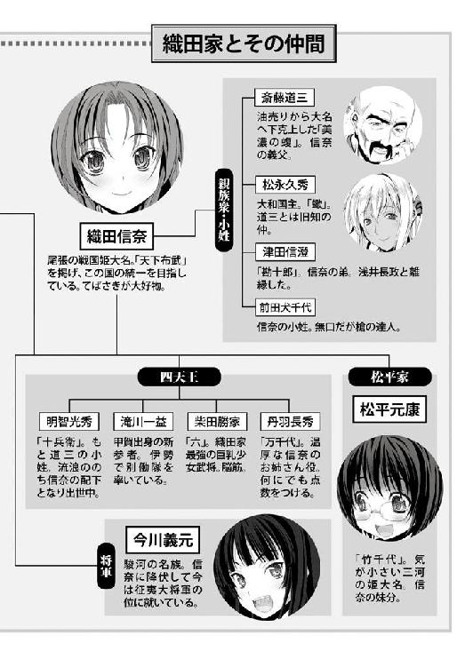

| 織田信奈の野望05 | |
| 春日みかげ | |
| SBクリエイティブ株式会社 (2011) | |

織田信奈の野望５
春日みかげ

本書に掲載されているコンテンツの著作権等の知的財産権およびその他すべての権利は、ソフトバンク クリエイティブ株式会社または正当な権利を有する第三者に帰属します。
本書の内容を権利者の許諾なく複製・複写・翻案・放送・出版・データ配信（送信可能化を含む）などすることはできません。
カバー・口絵 本文イラスト
みやま零

目次
時は戦国時代。
季節は、十二月。
山城国、京の都。
宿代わりに寝泊まりしている妙覚寺で、現代から戦国時代に迷いこんできた男子高校生・われらが相良良晴は朝から、とある一人の女装貴公子をひたすら慰めていた。
「サルくん。ぼかぁ、もうダメだ。出家してしまいたいよ」
津田信澄。通称は勘十郎。
お人形のように整った顔立ちからわかるように、信澄は織田信奈の弟。
信奈の悪戯心で「姫」に仕立て上げられ、近江の戦国大名・浅井長政に嫁がされるという不幸を味わった少年だった。
良晴だって、女装させられて野郎のもとに嫁がされたら、そりゃあ愚痴のひとつも、いや、愚痴の百個もこぼしたくなる。
「聞いてくれサルくん。詳しいことは言えないが、ぼかぁ今、悲しみの底に沈んでいてね」
「信澄、お前の気持ちはわかるけどさ。過ぎたことをいつまでも後悔していてもはじまらねえぜ？」
「いや、きみにはわかっていない！ ああ......すでにぼくの幸せの青い鳥は飛び去ってしまった。失った過去、幸福だった時間を取り戻すことはできないんだ......」
「そりゃまあ、浅井長政に嫁がされたあげく離縁されてバツイチになっちまった以上、脳天気に美少女親衛隊を率いて颯爽としていたあの頃のお前に戻るのは難しいだろうけどさ。近江での日々は忘れろ」
「忘れられるものかっ！」
「忘れられないほどのトラウマになったのはわかる。わかるが、政略結婚は戦国の世の定めだ。姫にされて男に嫁がされたお前の気持ちはよくわかるけど、信奈を恨んじゃいけねえぜ」
「寅馬とはなんだいサルくん。ああ、きみはやはりわかっていない。ぼくのこの悲しみの理由を......だが、長政の秘密を他人に漏らすわけにはいかないし......ああ、ぼくはどうすればいいんだ」
「とりあえず、もう女装する意味はなくなったんだから男の姿に戻れよ！ 女装を続けることで信奈に抗議したいんだろうけど、過去をひきずりすぎだぜ」
「いやあ。誰にも秘密は打ち明けられない。しかし、ぼくの悲しみを誰かにわかってほしい。なかなか難しいものだなあ」
「だから信澄、お前の悲しみはわかるって。あれだろ。お前美少年だから男でも女でもかまわん！ とか長政に言われて、とても言えないようなはずかしい目にあったんだろ？ 『男の娘』属性は俺の時代ではアキバのごく一部のみで流行っているマイナーな趣味だけど、この戦国時代ではお稚児さん趣味はよくあることだ。もう忘れろ！」
「だから、そうじゃないんだ～。ああ、どうすれば長政の秘密を漏らさずにぼくの真意を伝えられるのか。言葉とは、実に難しいものだなあ」
艶やかな姫姿の信澄は、京名物の「八つ橋」をもふもふと頰張りながらきぃと唇を嚙んだ。
実は、近江の戦国大名・浅井長政は男装の麗人で、ゆえあって男を演じているがほんとうは奥ゆかしく美しい女性なのだった。
これまた姉・信奈の都合で女装させられていた信澄と男装の長政は立場が似ていたせいだろうか、とても気が合い、短い期間ではあったが仲むつまじい夫婦になっていたのだった。
しかし親孝行という弱点を持つ長政は父の久政にひきずられ、同盟していた信奈と決裂。越前・朝倉義景の陣営につき、尾張・美濃・南近江・京を支配する織田軍と対立して睨み合うことになってしまった。
離縁された形になった信澄は、信奈のもとに戻ってきた。
だから今、信澄は、愛しあっていた妻と敵味方に分かれてしまった悲しみにうちひしがれているのだ。
しかし敵になったとはいえ愛する妻。長政が隠す秘密は誰にも漏らせないし、信澄は自分の気持ちを伝えることができず悶々として、朝から妙覚寺の庭園を眺めたままずっと「ああ、ああ」とため息をつき続けているのである。
結婚どころかギャルゲー以外では彼女を作った経験もないわれらが相良良晴は、そんな信澄の複雑な心境を察してやれるわけもなく、
「よほどおそろしい目にあったんだろうな、かわいそうに......俺だったら、あの長政の野郎に押し倒されてあんなことやこんなことをされたら一生立ち直れねえぜ。そうか。心では長政を拒否しても、身体が長政を求めているんだな、お前......それで女装がやめられなくなって。うっ、哀れな」
と、ひたすらそっち方向に誤解しっぱなし。
そうじゃないんだ～でも伝えられない～と嘆く信澄。
信奈陣営で長政が女だという秘密を知っているのは忍者の蜂須賀五右衛門とその郎党だけだが、長政の立場を案じる信澄は五右衛門にも口止めをお願いしていたので、良晴だけでなく誰も信澄の苦悩のほんとうの意味を察することができなかった。
「いいな信澄。近江での悪夢は忘れろ。そしてまだ清純だった頃のお前を取り戻せ！」
目を輝かせ、アサッテの方向めがけて信澄を励まし続ける良晴。
もうかなり長時間、妙覚寺の縁側でそんな嚙み合わない人生相談が続いていた。
「ふう。サルくん、きみと話していてもらちがあかない。本能寺にいる姉上のもとへ行くよ」
「信奈のところに？ やめとけやめとけ。最近のあいつ、すっげえ機嫌悪いしな」
俺が勝家の乳を揉んでる姿を見て斬りかかってきたあの夜以来、ひとことも口をきいてくれねーんだ、と良晴がぼやいた。
「いくらなんでも、しつこくねえか？」
「長政が裏切って朝倉側についた上に、甲斐の武田信玄がこんどこそ本気になって上洛軍を興した。姉上は京の支配権を維持するどころか、本国の尾張美濃の防衛すらあやしくなっているからねぇ。いつもの十倍、不機嫌なのだろうね」
信澄が、「困ったねえ」と眉をひそめた。
信奈と織田軍は、越前朝倉攻めの最中にいきなり同盟を破棄して裏切った浅井軍に退路を断たれるという最大の危機「金ヶ崎の退き口」から次々と襲ってきた難関を家臣団一丸となって切り抜けたものの、息をつく暇もなく浅井朝倉連合軍と戦国最強の武田信玄とに北と東から挟まれた格好。
せっかく手に入れた京の都を捨てて本国・尾張美濃の防衛に努めるか、それとも全軍玉砕も覚悟で両方の敵を同時に迎え撃つか──。
信奈が「天下人」として君臨できるかどうかは、実に微妙な情勢だった。
いちど手にしたはずの京をここで捨てれば、天下は遠のく。
しかし、敵は強固な信奈包囲網。織田軍がこのまま各地に散らばっている限り、各個撃破される恐れがあった。尾張美濃を守る斎藤道三は、武田と対決するには兵数が足りない。しかし信奈率いる本軍が京を捨てて美濃へ戻れば、浅井朝倉が即座に動いて京を奪うだろう。
「浅井朝倉と和睦してからまだ一月も経ってないんだぜ。それなのに、武田信玄が動くとなったとたんに浅井朝倉がまた戦準備をはじめやがった。しかも今までと違い、浅井軍をあの戦上手の浅井長政が率いている。明らかにやばい情勢だよな......武田信玄はなぜ急に上洛するなんて言いだしたんだ？」
「サルくん。こんな時だからこそ、ぼかぁ弟として姉上をお諫めしなければならないんだ」
「諫める？ どうしても首をはねられたいようだな。だいたいなにを諫めるんだよ。叡山焼き討ちの件はとっくに中止になったぜ」
「ははは。ぼくに高度な政略のことなどわかるものかね。ぼかぁ男女の恋仲というものについて、姉上に説教をしてくるつもりだ」
「ははあ、なるほど。自分の弟を男と結婚させたお前は鬼だ悪魔だ第六天魔王だと、そう信奈に愚痴りたいんだな。そんなに信奈を恨んでるのか。まあ当然だな」
「そうじゃないんだけど、まあいい。ぼくなどは、たとえ一時であろうが愛する人と結ばれたのだから、まだしもきみたちよりは幸福なのかもしれない......そう思ってのことだ」
「はあ？」
「いいかねサルくん。この世の中でもっとも悲しいこと、それは愛しあう二人の想いがかなわないことだ──〝愛〟が、成就しないことだ。フッ」
「信澄。今日のお前、ヘンだぞ。曲直瀬ベルショール爺さんに診察してもらったらどうだ？」
だいじょうぶかな......信澄の精神状態とお尻を案ずる良晴。
信澄は「姉上のお気持ちはぼくにはよくわかっている。姉上の意地っぱりぶりとひねくれ度合いは尋常ではないが、あれでズバリと本音をつかれると素直になることもあるのさ。きみたちの仲直りの件はういろう大臣のぼくに任せておきたまえ、はははは」と高笑いしながら本能寺へと向かっていった。
その後ろ姿は、どこか元気がない。
「うーん。どうも今日のあいつの言葉は支離滅裂だった。だいじょうぶかな？」
八つ橋をいただきながら、良晴は手を叩いて五右衛門を呼んだ。
庭先に、すっ......と音もなく忍び装束の五右衛門が参上した。
「相良氏、お呼びでござるか」
「お前、浅井久政に捕らわれて幽閉されていた信澄と長政を救出してくれたよな。せっかく浅井家から解放されたというのに、信澄の様子がすっげぇ妙なんだ。理由を知ってるか？」
うにゅう、と五右衛門が猫みたいな声を出して戸惑った。
「拙者、その件に関しては津田氏からかたくかたーく口止めちゃれているでごじゃる」
「おお～。ひさしぶりに、五右衛門がかんだ！ やっぱ、これを聞かないとわが家に帰ってきたって気がしねえよな！」
「......うにゅうう～！ 教えてやらないでござる」
マスクで表情が見えないが、五右衛門は怒ったらしい。
ぷい、とそっぽを向いて、庭先から瞬時に姿を消してしまった。
「あっ、悪い！ ひさしぶりなんでつい！ お～い五右衛門ちゃん、すねてないで出てきてくれよ～！」
『......ふんっ。相良氏のようなお子さまに話してもむだなことでござる』
どこからともなく、五右衛門の声だけが聞こえてきた。
「また土の中に潜っちまったのか？ もぐらじゃあるまいし。お～い。謝るから、出てこいって！」
弱ったなあ。信奈はあれから俺をひたすら無視し続けているし、乳を揉ませた勝家は勝家で逆ギレして俺を殺すって騒いでるし......すげぇ不条理だ。だいたい俺が金ヶ崎から生還したら信奈のキスを恩賞にもらうって約束はどうなったんだよ？ もしかして前鬼が言っていた『女難の相』ってのが出てきてるんだろうか、と良晴は縁側に座ったまま頭をかいた。
「はぁ......織田軍にまたしても危機が迫っているっていうのに、信奈に無視されっぱなしだとやる気が出てこねえよな......あいつ、家臣に鞭ばかりくらわせて飴をくれねーんでやんの。キスくらいいいじゃねーかよ。あんなケチ臭い態度じゃ、そのうち誰かに謀反されるぜ。きぃ、あいつのことを考えていたらだんだん腹が立ってきたっ！」
そうだった。いろいろありすぎて忘れかけていたけど、恩賞のキスを俺はまだ信奈からもらってねえ！ ちくしょー、俺はあんな乱暴でガサツなうえに放火マニアの信奈なんかぜんぜん好きでもなんでもねえけどっ、恩賞は恩賞だろうが！ よし決めた、たとえ手打ちになってもあいつにキスしてやるっ！
（この世の中でもっとも悲しいこと、それは愛しあう二人の想いがかなわないことだ──〝愛〟が、成就しないことだ）
女装した信澄が語った、その台詞。
良晴は、まさか信奈が俺のことを好きなわけがねえ、戦国の覇者と未来から来た足軽あがりとでは身分が違いすぎる、そもそも結ばれる道理がねえと本気で思っているし、同じ理由で自分自身が密かに抱いている信奈への想いもなかなか素直に認められない。
しかしこの時、なぜか信澄のこの言葉が、良晴の胸に熱い炎をともしたのだった。
（......よし、決めた。信奈がなにをわめこうが、唇を奪ってやる！）
良晴が颯爽と縁側から立ち上がった、その時。
「兄さま！ 明智さまになにを吹き込まれたのか、ですぞ！」
「たたたたいへんです、良晴さん～。あああ明智さまがいらっしゃいました！ きゃうっ」
幼い妹のねねと、小柄な軍師の竹中半兵衛がおたおたとあわてながら廊下を走り、途中ですてんとコケて、良晴のもとへ転がってきた。
ごろごろ。
どすん。
ストライク！
良晴は、ねねと半兵衛に押しつぶされた！
「ちょ。半兵衛ちゃん、お尻！ お尻が俺の顔の上に乗ってるから！」
「くすんくすん。ごめんなさい......も、もうわたし、お嫁に行けません......くすん」
「ねねもほら、俺の股間に顔を埋めてないで！ 信奈に見られたら誤解されるだろっ？ 不治の病・露璃魂を発病したとかなんとか言われて」
「兄さま、今はそれどころではないのですぞ！ 明智さまがたいへんなのですぞ！」
「十兵衛ちゃんが面倒臭いのはいつものことじゃねーか、なにをおたおたしてるんだよ。半兵衛ちゃんまで......」
「くすんくすん。今日の明智さまは、面倒臭いどころじゃないんです」
いったい十兵衛ちゃんがどうしたというんだ？ と良晴が声をあげようとすると同時に。
「二人とも、私の旦那さまになにをしているですか！ どきやがれ、です♪」
ぽん、ぽん。
どぼーん、ぽちゃんっ。
ねねと半兵衛を庭の池に次々と放り投げる、織田家きっての切れ者・明智十兵衛光秀。
広いおでこ、長い黒髪、きんかんの髪飾り。
そこまでは、いつもの光秀だったが──。
いつもと違う点が、一カ所。
「って、十兵衛ちゃん!? なんだ、その姿は？ 誰と結婚するんだよっ!?」
そう。
なぜか今日の光秀は、花嫁姿なのだった。
長い髪を文金高島田に結い上げ、白無垢の花嫁衣装に細い身を包み、そして頭にはこれまた純白の角隠し。
（う、美しい......！ すっげぇ清楚！ 純情可憐！）
花嫁さん衣装に身を包んで頰を赤らめている光秀に思わず見とれてしまう良晴だったが、鼻の下を伸ばせたのはほんの数秒。
なぜなら、たちまち、地獄の釜の蓋が開いたからだ！
「誰と結婚って、なにをわかりきったことを言うですか。もちろん、相良先輩のもとに嫁いできてやったのです。月とすっぽんとはこのことです。泣いて感謝しやがれです♪」
三つ指を突いて、深々と良晴に頭を下げてくる花嫁さん光秀──。
「ちょ。なんのことだ？ 十兵衛ちゃん、またしても俺をおちょくる新たな悪巧みを......」
「これは主命です♪ この高貴でお利口で美しい十兵衛光秀とどこのサルの骨とも知れぬ相良先輩とではあまりにもつり合いませんけれども、光秀は信奈さまから先輩を託されましたです。だからぁ、ぜんぜん気が進まないながらもしぶしぶ先輩と結婚してやるです♪」
「え、えええええええっ!? のっ......信奈めえええええ！ そんなに、俺にキスされるのがイヤなのか、そうだったのかっ!?」
濡れ鼠になって池からあがってきた半兵衛とねねが、
「けほけほ。良晴さんって、女の子に見境がない人だったんですね。ちょっとスケベだけど、根は純情で恋には一途な男の人だと信じていましたのに......くすん、くすん」
「いつのまに明智さまとこんな抜き差しならない仲に......兄さまの手癖の悪さには呆れましたぞ！ きっと兄さまは姫さまに見放されたに違いないですぞ！」
良晴に詰め寄って、猛然と抗議してきた。
「いや違う！ 二人とも、聞いてくれっ！ これは何かの間違いか、それとも十兵衛ちゃんが俺をおちょくるための悪巧みか、あるいは信奈が恩賞をケチるために企んだことでっ！ だいたい俺と十兵衛ちゃんはそんな関係じゃねえよ！」
つんつん、と照れ照れの十兵衛におでこをこづかれてしまった。
「......何度もこの十兵衛光秀の無垢な唇を奪っておきながら、いけずぅなお方ですぅ」
「いったいなんのことだよっ!? 本気で俺を破滅させるつもりかあっ!?」
ゆゆゆ許せませんくすんくすん、と泣きべそをかきだした半兵衛が護符を取りだして、身構えた。
ねねも、箒を手に持って「明智さまの唇を奪った責任を取らぬならばお仕置きですぞ」とちっちゃな仁王のように目をいからせ、良晴の前に立ちはだかる。
「まあまあ、二人とも静かにするです♪ 旦那さま？ 信奈さまよりいただいた坂本の地で、ただいま城普請をはじめています。この『坂本城』には松永久秀の真似っこをして壮大な天守を築きますが、天守の最上階は私たちの愛の巣にしちゃうです♪ 夫婦が愛しあうために毎晩一緒に寝るという『だぶるべっど』なる嬉し恥ずかしい寝具を南蛮商人より買い求めまして、私と旦那さま以外は立ち入り禁止となる愛の最上階に設置する予定ですぅ♪」
照れ照れの光秀は「の」の字を指で書きながら坂本城の図面を縁側に広げて、
「この最上階が二人の愛の巣です 」
」
「坂本城はまたの名を『愛の巣城』と呼ばせる予定になっておりますです♪」
「天高く伸びる天守の頂『だぶるべっどの間』の窓からは、雄大な琵琶湖を一望できるです。最高の眺望がきっと二人の愛を永遠のものにしてくれるです」
「安全性もばっちりです。警備責任者は、最近すっかりフロイスどのにメロメロになっておられる正覚院豪盛どのです。この十兵衛が南蛮風の愛の尊さを説いたら『拙僧もいつの日かフロイスさまと！』とあっさり引き受けてくださったです」
「万が一出火した場合も目の前が琵琶湖になっていますから、叡山の山法師どもによる消火活動もすみやかに行えますです♪」
「旦那さまはこれより、愛の巣城の主 さて愛の巣城の建築費は、旦那さまのお給金から三十五年の分割でお支払いいただきます。その際の金利ですが、ただいまですとこのようにお得になっておりましてぇ♪」
などなど、貧乏な新婚カップルに法外な価格の新築マンションを勧める不動産屋みたいな流ちょうな口調で「新築予定の愛の巣城がいかに二人にとって最適の住まいか」という話をぺらぺらとしゃべり続ける。
良晴はもう、途中からは光秀の言葉が頭に入らないくらいに狼狽しきっていた。
半兵衛は「良晴さんはわたしの心を弄んで踏みにじりました。お仕置きします」と鼻をすすってるし。
ねねは、「責任を取らないと許しませんぞ」と箒でぼかぼかと良晴の頭を殴り続けているし。
光秀は、幸せいっぱい夢いっぱい、乙女ちっくに瞳をきらきらと輝かせながら「二人の愛の巣」についてのトークを止めてくれないし。
「あとは、この証書に名前を書いていただければそれでいいのです。一生涯、この美しくてかしこくて高貴な十兵衛光秀のみを妻とし、決して浮気をせず、側室も持たず、南蛮風の永遠の愛を誓って守り抜くというこの証書にです」
「これでは話が違います、違いすぎます。信奈さまをお守りしながら輝かせてあげたい、と仰っていた良晴さんのあの言葉は真っ赤な噓だったんですね。くすん、くすん」
「年貢の納め時ですぞ！ あきらめて名前を書くですぞ、兄さま！」
「......ぶく......ぶく、ぶく......」
目覚めろ！
早く目覚めるんだ、相良良晴！
泡を吹いて、座ったまま失神している場合ではないぞ！
※
「......津田信澄がふらりと遊びに来ている」
「デアルカ」
そうであるか、という決まりきった言葉を短縮して「デアルカ」と言う癖が、せっかちな信奈にはあった。
虎皮の帽子を被った小姓の前田犬千代に「信澄が来ている」と声をかけられるまで、信奈は怒りといらだちのあまり自分が本能寺の仮宿で昼食をとっていることすら忘れていた。
なににいらだっているかといえば。
まず、同盟相手の「弟分」だった浅井長政が信奈の仇敵・朝倉義景側に寝返り、完全な敵になってしまったこと。
姫として送り込んだ信澄が男だったことがバレたのが、長政変心の一因ではないか......と家中で噂になっているが、その信澄は近江で何があったのかほとんど語ろうとしないし。
とうとう、以前から噂されていた武田信玄が「上洛の軍を興す」と言いだして信奈に書状でケンカをふっかけてきたし。
ひさしぶりに再会した義父の斎藤道三も、「信玄上洛」の一報を聞いてあわてて美濃の岐阜城へ戻ってしまったし。
だが、なんといっても腹立たしいのは、家臣の相良良晴。
金ヶ崎で「死兵」となるしんがり役を買って出た時に「生きて戻ったら接吻を与える」と信奈が破格の恩賞を約束してあげた相良良晴は、のうのうと生還してきたにもかかわらず自分の唇を奪うこともせず、六（柴田勝家）のデカ乳なんか揉んで鼻の下を伸ばしていたし。
（わわわわたしがどどどどれだけむむむ胸をどきどきさせながらサルが夜這いしてくるのを待っていたか、わかってんのかしら。ぜんっぜんわかってないじゃない！ あの男は、わたしの可憐な唇なんかよりも、六の牛みたいな品のない乳のほうが好きなのよ。ちちち乳絞りななななんかに夢中になって、ほんっっとにサルなんだわ！ 人間じゃないんだわ！）
あまりにもしゃくだったので、信奈は良晴への恩賞の約束を反故にしたばかりか、良晴が生還したら与えるつもりだった西近江の坂本の地を明智光秀に与えたくらいだ。
しかし、それでも信奈のいらいらはおさまらない。
これだけつらく当たっても、良晴はなにも言ってこないし。
軍議の席で「つーん」と無視しても、良晴は家来の竹中半兵衛や妹のねねといちゃいちゃしてばかりであわててくれないし。
（ももももしかしたら、ほんとうにわたしと接吻するという約束を忘れちゃったのかしら。ゆゆゆ許せないわ、サルの分際で！）
サルといえば、斎藤道三が美濃へ去る際に、なかなか仲直りできずに良晴を無視しまくっている信奈にこんな言葉をかけていった。
（ワシはもう、そなたと相良どのの仲については口を挟んでやらぬぞ。拗ねておれば相良どのが迎えに来てくれると思い込むのは子供じみた甘えというもの。そなたはワシの前ではっきりと、ほんものの相良どのがおられるこの世界が好きだと言ったではないか。なぜそれを相良どのに言わぬ？ いいかげんに親離れするのじゃ、信奈どの）
なによ、あのくそ蝮。
わたしとサルの仲......ってなんのことよ。いったい、なにが言いたいのよ？
なんでわたしがどうしてなにをそんなにすねているっていうのよ、きいいいいっ！
姫さま、姫さま、と犬千代が信奈の袖を引っ張ってきた。
「......信澄が来ている」
「ああ、そうだったわね。近江から戻ってきて以来、顔も出さずに閉じこもっていたのに。文句を言いに来たのかしら。男同士で政略結婚なんかさせたから......」
「......特に怒っている様子はない」
「あらそう。食事中だけど、いいわ。通して」
こくり、と犬千代がうなずき、家老の柴田勝家と丹羽長秀が女装した姿のままの信澄を連れて部屋へと入ってきた。
「姫さま、信澄を連れてきましたっ。にっくきサルは、今日も本能寺に寄りつきません」
勝家は織田家一のおっぱいと豪勇の持ち主だが、いろいろあって良晴に胸を揉ませてしまって以来、信奈に激怒されたこともあって「サルめ必ず殺す」と理不尽な復讐心に燃えている。
「勝家どのが殺す殺すと騒いでいるので、相良どのも姫に近づけないのでしょう」
一方、信奈のお姉さん役を務める丹羽長秀は、相変わらず静かな笑顔で素直じゃない信奈と良晴の関係の行方を見守っていた。
「やあ姉上。この勘十郎信澄、長政に離縁されて織田家に出戻って参りました。ただいま、堺の今井宗久どのと組んでういろうの新味開発にとりかかっている次第です」
かねがね「ういろう大臣」の座をうかがっていた信澄らしい挨拶だった。
「デアルカ」
信奈は、意外にもひさしぶりに顔を合わせた信澄が浅井長政と政略結婚させられた件で怒っていないことに安心したが、
（じゃあ、なにしに来たのかしら？）
と鮎を頭からかじりながらいぶかしんだ。
「最近、鮎ばかり食べている気がするわ。なごやこーちんのてばさきが恋しいわね」
「姉上。本日は、ぼかぁ弟として姉上に諫言しに参りました。ははは」
「諫言？ 武田信玄と浅井朝倉連合軍を同時に相手にしながら京を守り抜くのは無理だとでも言いにきたの？」
「いえ、そういう軍事の話はぼくにはちょっと難しくて。しかし、ぼくにも得意な道というものがありましてね」
「あんたの得意な道って......えーと......じょ、女装くらいじゃなかった？」
信澄のためになにかいいところを見つけてやろうとした信奈だったが、ほんとうに、他になにも思いつかなかった。
「いやだなあ、おわかりになられませぬか？ ずばり〝恋の道〟です、姉上。はっはっは」
「はぁ？ ......まさか......浅井長政にあんなことやこんなことをされて、頭が......？ うっ。かわいそうに、勘十郎。あんたを姫に仕立てたわたしが悪かったわ」
「姉上、違います！」
「あらそう。あんたに恋だのなんだの、そんな風流趣味はなかったでしょう？ 親衛隊をはべらせてどんちゃん騒ぎするくらいが関の山で」
「姉上、ぼかぁつくづく思い知らされました。人の一生には、運命と申しますか、天の時・地の利・人の和という自分の思うとおりにならない要素がございます。この戦国乱世で男女が互いに出会い、互いに愛しあい、そして仲むつまじく結ばれて一度きりの人生を最後まで一緒に過ごす、などといった幸運は滅多に得られるものではないと」
珍しく信澄がなんだか真面目なことを言ってるけど難しくて意味がわからないや、と勝家が長秀に小声でささやく。
浅井家でいろいろなことを経験して一回り成長なされたのでしょう八十点です、と長秀。
「勘十郎？ わたし、回りくどい話が苦手なの。はっきり言ってちょうだい」
「ぼくは浅井長政と夫婦になりましたが、こうして運命によって別れてしまいました。ぼくたちはまことに不幸だと思います」
「......謎。男同士で夫婦になったことがそもそも不幸。別れられて幸運？」
と、犬千代が不思議そうに首をかしげた。
「勘十郎、それで？ ういろうをあげるから、早く結論を言いなさいよ」
信奈も（なにが言いたいのかしら......）と眉をつりあげた。
それまで平伏していた信澄は、この時、顔をがばっとあげて、その顔を紅潮させながら傲然と言い放った。
「しかし、姉上とサルくんはもっと不幸だ！」
信澄は、目に大粒の涙を浮かべていた。
「ぼくと長政はたとえひとときであっても、夫婦としてともに過ごすことができた。今は不幸でも、幸福と思える瞬間があった。しかし姉上とサルくんはあまりにも身分違い！ この世で結ばれる道理がない！ 金ヶ崎での二人の別れ際の話を、ぼかぁ京に来てから毎日みんなに聞かされた！ 死んでいく人間は決して噓をつかない！ 恋の道の達人となったぼくにはわかる。姉上は一人の乙女としてサルくんに惹かれているし、サルくんもまた本心では姉上を誰よりもたいせつに想っている、と──！ それなのに、この国の身分秩序が二人の仲を邪魔し続けているだなんて！ その上、姉上のこのおそろしくねじくれて素直じゃない困った性格！ いくら結ばれない道理だからとはいえ、金ヶ崎で交わした接吻の恩賞の約束を反故にしてサルくんを無視しっぱなしだなんて、姉上の仕打ちはあんまりだぁ！」
本来ならば犬千代が手にしている刀を即座に抜いているはずの信奈は、あまりのことに箸を持ったままかちんこちんに固まってしまった。
犬千代たちも言葉を失っていた。
いつも冷静な長秀ですら、泣きながら暴走する信澄に点数をつけることを忘れていた。
「ああ。こんなに互いを想っていながら現世で結ばれることはない定めだとは。なんて不幸なんです、姉上とサルくんは！ 金ヶ崎での話を聞いた時、ぼかぁ、自分の身の不幸すら忘れてもらい泣きしてしまいました！ 姉上に比べれば、ぼくははるかに幸せ者だったと......」
「で、で、デ、デアルカ、カ、カ......」
一刻も早く勘十郎を罵ってこの場の微妙な空気をめちゃくちゃにしなくちゃ！ と焦る信奈だが、勘十郎がぼろぼろと泣きながらけんめいに叫んでいるその姿を目の当たりにすると、怒りとか驚きとかいろんな感情がいっせいに溢れてきて、声がうまく出てこない。
ついには犬千代と勝家までが「うっ......姫さま」と勘十郎の熱すぎる絶叫咆哮にもらい泣きして顔を伏せはじめる始末。
ちちちち違うってば、かかか勘十郎あんたなんか勘違いしてるのよ、わわわわたしがああああんな人間とサルの中間種にほほほ本気でそそそそんな恋とかそんな感情をいいい抱くわけががががが。かかか飼っているどどど動物に飼い主としての愛情くらい抱くかもしれないけど、そそそそれとこれとはべべ別のことで。だだだだいたい、なんで浅井長政とあんたが愛しあってたりするわけ？ おおお男同士で？ おおおおかしくない？
「かかか勘十郎、ああああんたやっぱり浅井家で心をむむむむしばまれて」
「姉上、違います！ ぼかぁ正気だ！ ずっと遊びほうけていたけれど、目が覚めたんだ！ この世でもっとも得がたく、そしてたいせつなもの、それは──〝愛〟だと、悟ったんだあ！」
おいおいと泣きながら「互いにいつ死ぬかわからぬ戦国の世。そして織田家は四方を敵に囲まれて窮地。このままではいけません姉上！ サルくんに接吻の恩賞だけでも与えなければ、姉上は一生後悔し続けます！ 今です！ 今すぐ！」と身を乗り出して訴える信澄。
信奈はもう、まぜっかえせなくなった。
「信澄どのの献策は、満点です」
ようやく落ち着きを取り戻した長秀が、「えええええ？」と涙目になる勝家を手で制して、立ち上がった。
「これ以上相良どのへの恩賞を先延ばしにしていては、織田家の評判も下がりましょう。これより相良どののもとへ参られよ、姫」
「......犬千代がお供する」
朱槍を担いだ犬千代と長秀が、「えっ、ちょっと」とじたばた暴れはじめた信奈の両脇をつかんで、ひきずっていった。
「ちょ。ちょっと!? 六！ この二人を止めてちょうだい！ 勘十郎のヘンな演説に当てられて万千代も犬千代も勘違いしてるのよ！」
しかし、勝家は畳をかきむしりながら、耐えた。耐えていた。
「うあああああん。姫さまが、姫さまがサルのもとへ行ってしまううう～！ で、でも、あたしには姫さまをこれ以上止めることなんてできないよ～！」
「六～！ あんたまでわたしを裏切るのっ!? 勘十郎、覚えておきなさいよー！ むきー！」
「ははは。これでよかったのです、姉上！ 戦国の世では、男女の出会いは一期一会。たとえ越えられぬ身分の壁があろうとも、この一日、この一瞬に後悔を残してはならないのです。あら、めでたや」
爽やかな涙とともに、家臣に捕らえられて良晴のもとへと連行されていく姉を見送る信澄であった。
※
ばちいいいいいいいいんっ！
ショックのあまり一時的に妙覚寺の縁側で座ったまま失神していた良晴は、右頰に強烈な痛みを感じて、目を覚ましていた。
「いっ......いてええええええええ～っ!? はっ？ 俺は今まで何をしていたんだっけ？」
目と鼻の先に、南蛮のマントを肩から羽織った信奈がいた。
おわっ久々に信奈の顔を間近で見た！ 顔、小せえ！ 瞳、でけえ！ 睫、なげえ！ いいいいけねえ、不意を衝かれて胸がバクバク高鳴って来やがった......！ こここれは第六天魔王がいきなり現れたからびっくりしてるだけで、べべべ別に信奈が好きだからどきどきしてるわけじゃねえんだからなっ！
って、あれ。信奈。なんかさ、悪鬼羅刹みたいな激怒モードなんだけど......目に涙まで溜めるくらいに怒ってるみたいなんだけど。その背後に、炎と燃える鬼の幻が見えるんだけど。いったいどうしたんだ？
「なに、わたしの顔じろじろ見てんのよ。このエロザルッ！ 不忠者ッ！ 裏切り者～！」
ばちいいいいん！
さらに、こんどは左の頰を打ち抜かれた。
「いでええええ！ なんだよいきなりっ？ まさかこれがお前の言っていた恩賞なのかっ!?」
「うううううるさいわね！ じゅじゅじゅ十兵衛と結婚する、ですってえ？ ああああんた、いったいなに考えてんのよっ!? もう怒ったんだから。もうダメ。もう我慢できない。あんたはこの場で打ち首──」
むーと顔を紅潮させている犬千代が「すっ......」と無言で信奈の隣に座ってきて、大激怒している信奈の手に太刀を渡した。
信奈が、すらり、と名刀「圧切長谷部」を抜き放つ。
「殺すっ！ 絶対に殺すんだからっ！ 死んじゃえっ！」
相良良晴、絶体絶命！
信奈と犬千代の背後では、苦虫をかみつぶしたような表情の長秀が、
「これは予想外の事態です。零点です」
と良晴に駄目だししているし、半兵衛とねねと五右衛門は揃って「つーん」とそっぽを向いて良晴をシカトしているし。
空気を読めない光秀だけが、良晴の隣で「これはなんの座興なのでしょうか、あ・な・た」と微笑みながら鎮座している。
「はっ？ そうだった、思いだしたぜ！ いきなり文金高島田の十兵衛ちゃんが俺に結婚を迫ってきて──って、ちょっと待て！ この祝言は信奈、お前が命令したんじゃねえか！」
「ハア？ なんでわたしが十兵衛にそんな命令しなきゃいけないのよっ!? 言い訳はそれだけっ？ しょせんはサルの浅知恵ねっ！」
ぶんっ！
魔王モードと化した鬼信奈が、良晴の頭めがけて思いっきり刀を振り下ろしてきた！
「うわあああああ～!?」
すかさず逃げようとしたら、足が痺れていて動けなかった！
相良良晴、暁に死す！
時刻は暁じゃないけど！
しかし。
「そうなのです。この祝言は、信奈さまじきじきのご命令なのです♪」
その、光秀のご陽気な一言が。
かろうじて、良晴の額を刀の切っ先がかすめたところで信奈の手を停止させていた。
助かった......と良晴が腰を抜かしてへたりこむ。
「わ、わたしはそんな命令をした覚えは......」
信奈が（なあんだ、十兵衛の勘違いだったみたい）と機嫌を直して刀を犬千代が差し出す鞘へおさめようとした、その次の瞬間。
「もっとも、この十兵衛光秀はすでに先輩に唇を奪われ、裸で抱き合ってしまった仲ですから♪ たとえご命令がなくとも、いずれはこうなる運命だったです」
相良良晴はこの時に、顔面蒼白になってふるふると小刻みに震える主君・信奈の口から一言、
「......死罪」
と、無感情な声で申しつけられたのだった。
うわ。この静かなキレっぷりはマジだ、と良晴は震えた。
あわてた半兵衛、長秀たちが「正当な理由なく家臣を死罪にしてはなりません」と口々に訴えたので、良晴はかろうじて死罪だけは免れた。
......が。
それでもなお良晴の隣で光秀が「愛の巣城♪ 愛の巣城♪」と浮かれて鼻歌を歌い続けるので、信奈の怒りはもう歯止めがきかない。
「サルッ！ ああああんたにヤキモチを焼いて死罪にしたなんてねねね根も葉もない噂が流れたらわわわわたしの恥になるから、いいい命だけは助けてあげるわ！ ただしっ！ あっ、あんたみたいなエロザルは、ヒラ足軽に降格よっ！ 相良良晴軍団は解散っ！ 半兵衛と五右衛門は今日からわたしの直属の家臣！」
無茶苦茶な感情的報復人事だった。
これには、良晴もついに切れた。
「ちょっと待てえええええええ！ 俺はほんとうに身に覚えがねえんだってっ！ 十兵衛ちゃんとはなにもないんだよ。ほら、十兵衛ちゃんはこーゆー性格だからきっとまたなにか勘違いしてるんだって！ 俺を信じねーのかっ!?」
「あああああんたを信じてたらなんだってゆーのよっ？ あんたが十兵衛と結婚しようが接吻しようが、わわわわたしにはぜんぜん関係ないんだからっ！ とにかくあんたみたいなエロザルをわたしの近くに置いておくのは止め！ 六や十兵衛に続いて、いずれみんなあんたの毒牙にかかっちゃうじゃないのっ！」
信奈と良晴は、久々に鼻と鼻をつき合わせて「がるるる」「ふーっ」と罵倒合戦。
だが、今回だけは夫婦漫才とはいかない。
つかみ合ったり、がぶりとかみついたりと、ほとんど命のやりとりに近いバトルだった。
なにしろ、光秀祝言問題は根深い（この二人だけにとって）。
「だーっ！ たしかに勝家の乳は揉んだが、あれはあいつがやれって言うから......！」
「噓つきっ！ あんた、以前から六のおっぱいに夢中だったじゃない！ いつも鼻の下を伸ばしてさ、げっひーん！」
「ああ、たしかに夢中だった！ 風呂場を覗こうともした！ おっぱいが嫌いな男子などいない！ だが、それと直接触るのとは別だっ！」
「べべべ別なわけないでしょっ！ ああああんたってば、わわわわたしが、せ......してあげようと思って来たらいつもいつも、......うわ......ばっかりしてるじゃん！」
「ええ？ なんだって？ 聞こえない？」
「ふんだ！ サルに聞かせる必要なんてないわ！」
「そこまで俺を信用しねーのなら、いっそ首にしてくれっ！」
「首になんてしてやらないわよっ！ あんたは伊勢に左遷よ！ 今すぐ伊勢に行っちゃえっ！」
「いいい伊勢に左遷っ？ いっ、陰湿な人事をしやがって～！ 身勝手なヤキモチ焼いてこともあろうに俺さまの〝チーム相良〟を解散だなんて、天が許さねえ！」
「なにが〝地位無相良〟よ！ サル語使えばごまかせると思ったら大間違いなんだからっ！ 出て行っちゃえ！ はるばる伊勢に流されて左近の下働きで一生を終えちゃえっ！」
「くわああああっ！ 浅井朝倉と武田信玄を迎え撃とうというこんな重大な時に俺の軍団を解散して、その上未来から来た俺さまを伊勢へ左遷だとおお？ ふざけんな、バカ女！ お前、天下とかどうでもいいのかよっ？ こんなしょーもないヤキモチのせいで破滅してーのかよっ？ 織田信奈がこんなバカ女だったなんて呆れたぜ！ バカ、バーカ！」
「ふんっ！ あんたなんかいなくたって織田軍団は無敵よ！ 殺されないだけありがたく思いなさいよっ！」
長秀が「伊勢の滝川一益どののもとへ相良どの一人を左遷するだなんて、零点よりも最悪です」と嘆息し、光秀が「まったく困ったことです。この二人はほんとうに仲が悪いですね。でも、これは旦那さまが十兵衛の夫として相応しいかどうかを試すために信奈さまが与えた最後の試練。十兵衛光秀は旦那さまの帰りをいつまでもお待ちしております！ 愛の巣城で」と一人でうなずき、そしてねねや半兵衛、五右衛門たち相良軍団の面々は「わわわ......姫さま、怖い......これから自分たちはどうなってしまうのでしょう」と涙目になって震えあっていた。
なにしろ誰も制止できないくらいに信奈は大激怒していて、その怒りっぷりは「叡山を焼き討ちにするわ」と言いだした時の百倍をはるかに超えており、ただ一人信奈の大暴走を止められそうな光秀はぜんぜん空気読めてないしで、知恵者の半兵衛やいつもはクールな五右衛門ですらこの時の信奈には怖くて話しかけることもできなかったのだった。
信奈が（一度ならず二度までも、わたしが接吻してあげようと来てやったら他の女の子と浮気してるなんて！ しかも結婚って！）と人生最高の大激怒モードに突入した今、相良良晴に下された伊勢への左遷命令を止められる者はいなかった。
──まことに誤解を招く発言を繰り返して「きゃあきゃあ」と照れている光秀ただ一人をのぞいて。
「ちくしょう、信奈めぇ～！ 武田信玄との決戦が迫っているというのに、一人ぼっちで伊勢参りなんてやってる場合かよ～！ そんなに俺に恩賞を与えたくねえのかぁ！」
行商人に身をやつした相良良晴は、一人でてくてくと近江から伊勢へと向かう街道を歩いていた。
「いきなり伊勢へ行けなんて言われても、『伊勢神宮』と『赤福』くらいしか知らねえよ！」
激怒した信奈に「相良軍団の解散と、伊勢への左遷」を言い渡された時には「もういい！ 今から俺さまの軍団を率いて下克上だ！」と現代の若者らしく切れかけた良晴だったが、信奈が本能寺へ帰ったあと、出発準備をしていた時に半兵衛からいくつかの内緒話をこっそり教えてもらえた。
ひとつは、信奈がただ怒って良晴を伊勢へ左遷したというわけではないこと。
もちろん、光秀との祝言話を知って本気で激怒していて良晴をぶったぎりたくて仕方がないことは間違いないのだが、良晴の伊勢行きにはもうひとつ理由があって、それは──。
『伊勢で別働隊を率いていた滝川一益さんが、なぜか最近信奈さまに連絡を入れてくれません。もしかしたらこの混乱に乗じて伊勢で独立するつもりなのかもしれません。信奈さまをもってしても扱いづらいお方だそうで、『謀反を疑っています』とばかりに目付を送ると逆効果になります。でも左遷された良晴さんが一人ぼっちで転がり込んでくれば滝川一益さんも信奈さまを疑わないでしょう。つまり、こんどの武田信玄さんとの戦に滝川一益さん率いる伊勢方面軍を参加させてほしいと信奈さまは良晴さんに期待されておられます。相良軍団を解体してみせたのも滝川一益さんに良晴さんが彼女の目付役だと疑われないようにするためです。た、たぶんですけど......』
そういう事情らしかった。
そういえば良晴は滝川一益という武将に会ったことがない。
最近、京童たちのあいだでは「戦国武将メンコ」が流行っているのだが、なかなか引けない「貴重メンコ」の中に「織田家四天王」と呼ばれる四枚のメンコがある。
その「織田家四天王」とは。
武勇一等、柴田勝家。
人徳一等、丹羽長秀。
知略一等、明智光秀。
そして、勲功一等はわれらが相良良晴......ではなく、伊勢方面軍を率いる滝川一益。
滝川一益はもともとは甲賀から流れてきた新参者なのだが、光秀・良晴とともに信奈に取り立てられて破竹の出世を遂げ、伊勢方面軍の指揮を任されている有力部将である。
美濃平定戦・上洛作戦と並行して行われていた「伊勢攻略戦」は、時々信奈が手を貸してはいたが、ほとんど滝川一益が独力でやり遂げたようなものだった。
そして今、広大な伊勢の半ば以上は、すでに一益のものになっている。
伊勢には強大な戦国大名が不在だったとはいえ、かなりの実力の持ち主なのだろう。
ところが『金ヶ崎の退き口』のあと、京と信奈の本国・尾張美濃の通り道にあたる南近江を敵勢力に奪われた織田本軍が京に孤立するという危機的事態が発生した。
その時に、伊勢の滝川一益は援軍をよこさずに事態を傍観していた。
しかもその後、連絡がぷっつりと途絶えているという。
良晴が滝川一益と顔を合わせたことがないのも、一益が伊勢に行ったきり自由勝手に動いていて信奈のもとに来ることがないからだ。
（つまり半兵衛ちゃんは、信奈が俺に滝川一益を動かすように期待している、と言っているわけだ。でも、ほんとうかなあ......？ だいたい俺は滝川一益とは面識がないし、俺さまが愛してやまない戦国ＳＬＧの最高傑作『織田信長公の野望』でも滝川一益って影が薄かったからなあ。どんな奴なのか、さっぱりわからねえ）
わかっているのは、甲賀の忍び出身の新参者らしい、ということくらいだった。
ちなみに「織田家四天王」に良晴が入れてもらえなかったのは、一人だけ男だから、という理由だそうだ。戦国武将メンコは、姫武将のほうが人気が高いのである。
『前回の戦に参戦してくれなかった滝川一益さんを今回の戦に参戦させられれば、きっと信奈さまはお怒りを解いて良晴さんを元の部将の身分に戻してくださいます。このままではわたし、毎日信奈さまにびくびくしてお仕えしなければなりません。良晴さんが戻ってきてくれないのなら、菩提山に帰っちゃいます。くすん、くすん』
べそをかきながら、半兵衛は伊勢へ出立する良晴に一巻の巻物を渡してくれた。
『これは伊勢の地図です。くすん、くすん。一口に伊勢と言いましても大きく分けて北伊勢・南伊勢・志摩に分かれてまして、とっても広い国ですから道に迷わぬようご注意ください。滝川一益さんは北伊勢から南伊勢をおおむね平定し、今は伊勢の南端、志摩にいらっしゃいます。複雑に入り組んだ湾の中に大小の島が点在し、海賊さんが大勢いるという土地柄で、都の人間を警戒しています。くれぐれも海賊さんに捕まらぬよう、お気をつけください』
（海賊かぁ。尾張の港は信奈が仕切ってたし、堺では町衆が堀を巡らせてばっちり自衛してたしな。そういえばまだ海賊には出会ったことがねえなあ）
今、伊勢の街道を南へ向かっている良晴は、懐に半兵衛からもらった巻物を入れている。
伊勢の街道沿いはほとんど織田領になっているので、関所は廃止されている。
半兵衛の地図のおかげもあって、良晴は案外すんなりと志摩へ入ることができた。
途中、「お伊勢参り」で有名なパワースポット・伊勢神宮を通過したが、参拝する時間はなかった。
半兵衛は、伊勢神宮についても少しうんちくを書いてくれていた。
『伊勢神宮はもともとやまと御所のやんごとなき方々だけが参拝できる、やまと御所専用の神社だったところです。現在ではしもじものものが参拝することも許可されていますが、この国で一、二を争う由緒ある神社です。なにしろ姫巫女さまが位を継承するために必要な『三種の神器』──八咫鏡・八尺瓊勾玉・草薙剣のうちのひとつ、八咫鏡をご神体として奉斎されているくらいですから。ちなみに草薙剣は信奈さまのご領地尾張の熱田神宮にありますが、勾玉はかつて源平合戦が繰り広げられた際に瀬戸内海の壇ノ浦に沈んでしまったと言われています。勾玉が失われたためにやまと御所の権威が大きく失墜し、その結果武士の世が来たとも言われています。勾玉が発見されればもしかしたら戦乱を収めるいいきっかけになるかもしれせんが、海の底に沈んでしまったのでちょっと難しいでしょう──くすん、くすん』
なるほどなあ。伊勢神宮といえばなんとなく古くて格式がある神社だとは思ってたが、三種の神器のひとつが祀られているとは知らなかった、と良晴は半兵衛の巻物を読みながらいちいち「へぇ～」と声をあげた。
つーかこの世界にも三種の神器があるんだなあ、とも。
「おおお。ここが伊勢志摩か～！ あれ？ 伊勢だっけ？ 志摩だっけ？ どっちだ？」
眼下に広がるのは、英虞湾の複雑に入り組んだ海岸線。
その湾の中に浮かぶ、無数の島々。
まるで、自然が造りだした「海の迷路」。
風光明媚。
潮の香りが良晴の鼻腔をくすぐる。
丘の上に腰掛け、良晴は志摩の海を眺めながら感動のため息をついた。
今頃、京の十兵衛ちゃんは信奈の誤解を解いてくれているだろうか......ますます誤解されるような発言を繰り返しているんじゃあ......ふと京でのドタバタを思いだすと、頭が痛くなってきたので良晴は考えるのをやめた。
せっかくこんなジブリアニメの世界みたいな風光明媚な土地まで来たんだから、旅の気分を満喫してやらあ！ と居直った。
（前鬼が言っていた俺さまの「女難の相」ってやつも、この伊勢志摩ではチャラだろうよ）
滝川一益を説得して対武田戦に参戦させてやる。そして俺も最前線に復帰だ。
なにしろ、この次の戦で織田信奈が天下を盗れるかどうかが決まるといっていい。もしも信奈が負ければ、武田信玄が天下人だ。
伊勢の街道沿いの茶店で買ったあんこ餅を頰張りながら、
「信奈の期待なんぞに応えてやるつもりはねーが、こんどは戦国最強の武田信玄が敵に加わっている。滝川一益が動いてくれねーと、織田軍はまじでやべえぜ。しょうがねえ、俺さまがなんとかしてやるか！」
と、気合いを入れる。
「しかし見た目も味も赤福餅そっくりだな、この餅。伊勢といえば赤福だよな！」
夢中で餅を頰張り続ける良晴。
背後に、うら若き女たちの影が迫っていることにぜんぜん気づいていない。
分銅を振り回している者。
たいまつを掲げている者。
そして、漁に使う投網を担いでいる者。
女たちの身なりは、明らかに武士ではなかった。
頭に布を巻き、肌の露出が多く、冬だというのに全員が真っ黒に日焼けしていた。
そう。
この女たちこそ、伊勢の海をわがもの顔で荒らし回っている海賊衆だった！
「男だわ。それも都の人間よ」
「あたしたちの縄張りに、男ごときが一人で刀も持たずに踏み込んでくるなんて」
「しゃらくせえ。フカの餌にしちまおう」
「待って。織田家の人間かもしれないわ。捕らえて、姫さまにつきだしましょう」
「キャッホー！」
女どもは口々に叫びながら、いっせいに良晴へと襲いかかった。
「おおっ？ お姉さんに少女に幼女の群れっ!? もしかして志摩は竜宮城？」
鼻の下を伸ばしていた良晴が気づいた時にはもう、投網を投げられて身体の自由を奪われてしまっていた。
自業自得。
「うおっ？ ちょ、ちょっと待てよっ!? 俺は、俺は覗きでも痴漢でもないぞ～！」
「誰が待つもんですか！」
「袋にしちゃえ！」
投網から抜けようともがいているところに、ゴン、と櫂で頭を殴られてしまった。
「......いっ......いてえええ～!?」
目から、ばちいっ！ と火花が飛び散った。
「なんて乱暴な女の子たちなんだ......ちくしょー、戦国時代ってのはやっぱ命がけだなあ......」
どさり。
全身の感覚を失った良晴は、足下から崩れ落ちた。
「こいつはまた見た目どおりの雑魚ね！ キャハハ！」
「あたしたち海賊をなめてたわね！」
ああ。ああ。
男一匹・相良良晴。
女の子ばかりの海賊衆にあっさり捕まってしまうとは、情けない。
やはり仲間がいないとダメなのか？
この伊勢志摩で人知れず果ててしまうのか？
絶体絶命、相良良晴の運命やいかに。
※
「......う......う......いてぇ～」
良晴は、やっと目覚めた。
縄で手足を縛られて板間の上に転がされていた。
ゆらり、ゆらり、とまだ殴られた頭が揺れている。
いや、違う。
俺の頭が揺れているんじゃねえ。
この部屋そのものがゆらゆらと揺れているんだ、と良晴は気づいた。
天井が、高い。
天井の近くにある細長い窓はなぜか南蛮教会風のステンドグラスになっていて、日の光がそのステンドグラスから差し込んできている。
漂う、潮の香り。
波の音。
ここは船だ。船の上なんだ。
「いったい俺をどうするつもりだ!?」
がばっ！
良晴が縛られたまま顔をあげると、そこには。
「あたしは九鬼嘉隆、泣く子も黙る九鬼海賊衆の頭領さ！」
日焼けした大柄なお姉さん海賊が一人、南蛮椅子に腰を下ろし、すらりと長い素足をオットマン（足乗せ）の上に伸ばしながら鋭い視線で良晴をにらみつけていた。
「ここは、あたしの船だ！ 山猿のように下品な面をした貴様こそ何者だ！ あたしのシマはなぁ、男子禁制なのだぞ」
「お、おおっ!? お前は？」
良晴の目を惹いたのは、まず女海賊の着ている衣服。
どういうわけか、南国風味のカラフルなビキニ水着。
腰には短いスカート風の布も巻いているが、間違いなくビキニ姿だった。
さらに首や手首には、大量の真珠を連ねた飾りもの。
そしてそのビキニの下に隠されている......いや、ぜんぜん隠しきれていない豊満な肉体が、「若者の恋愛離れ・性欲離れ」などといった現代の風潮とは無縁な良晴の股間を直撃した。
「おおおおおお!? この時代に南国ビキニ水着っ!? しかもすげぇナイスバディ!? これは夢か幻かっ!? 志摩はやっぱり竜宮城ッ？」
「ちっ。なんなんだお前は？ 見れば見るほどサルだな！ どうしてどんどん鼻の下が伸びてくるんだ、気持ち悪い......姫さま、こいつはさっさと斬り捨てましょう」
「姫さま？」
そうです斬り捨てましょう！ と良晴の背後に並んでいた海賊衆の女の子たちがいっせいに声をあげた。
「男なんてあたしたちの世界には不要よ！」
「どうせスケベなことをしに来たに決まっているわ！」
「でも九鬼の親分は、男子禁制の女の子限定海賊衆を率いてきたせいで、そろそろ婚期を逃しそうなのよね......」
「私たちはまだ若いから突っ張っていられるけど、親分は結婚するなら今のうちかもね～」
お前ら、あたしの婚期の心配なんてしなくていいんだよ！ と九鬼嘉隆が子分たちをにらみつけた。
「よくもあたしの婚期問題をほじくりかえしたなっ！ この小僧を斬る！」
「俺は関係ねーだろ！」
「くっきー。しばし待つのじゃ。斬るのはどこの馬の骨か調べてからにするのじゃ」
「──はっ！ 姫さまの仰せのとおりに！」
女海賊・九鬼嘉隆が、船室のいちばん奥にある小さな南蛮椅子にちんまりと腰掛けていた小柄な幼女にそう言われるや否や、真っ赤になって平伏した。
「姫って、誰だよ」
九鬼嘉隆が「ぶぎゅる」と良晴の頭を踏みつけながら、あわてて怒鳴り声をあげた。
「こらっサル。こちらのお方をどなたと心得る！ 甲賀忍び衆の頂点に君臨しておられる、やんごとなき滝川家の姫さま・左近将監一益さまであらせられるぞっ！ ええい頭が高い、ひかえおろう～！」
「な、なんてテンプレな威張り方なんだ。って──たたた滝川一益っ!?」
九鬼嘉隆にぐりぐりと頭を踏まれつつも、ぐいっと気合いでその頭を持ち上げる良晴。
織田家四天王最後の一人・滝川一益。
謎のベールに包まれているその素顔を、戦国マニアとして、いちど見てみたい。
なによりも、最強の敵・武田信玄を迎え撃つ信奈の運命はこの滝川一益にかかっていると言っていい。
「滝川一益が、なんで海賊衆を率いてるんだっ!?」
「くすくす。くっきーはのぅ、子分の海賊衆ごと姫の忠実なしもべになってくれたのじゃ」
一益の口調は尊大だったが、やけに幼い声だった。
「くすくす。おもてをあげてよいぞえ」
「ただし姫さまのご尊顔を貴様のようなサルがじろじろ見てはならん。姫さまが穢れるからな」
九鬼嘉隆が、しぶしぶ良晴の頭の上から足を離した。
そして。
「......あれえっ!?」
ようやく一益の姿を見ることができた良晴は、意外な思いに驚きの声をあげていた。
これまで良晴が抱いていた滝川一益のイメージは「けっこう歳いってる」「甲賀の忍び出身で鉄砲の名手」というものだった。
ところが滝川一益は、小柄な幼女だった。
織田家四天王の一人というには、あまりにも幼すぎた。
さらに。
その手には最新型の種子島をかまえているものの、なぜか巫女装束を着ていた。
その清楚な衣装は、侍とは思えない。
それだけでも意外だったのだが、良晴がなによりも驚いたのは、一益の顔かたちに、見覚えがあったことだ──。
「あう。あうあうあう。こ、これはいったいどういうことなんだよっ？ これが戦国ゲームならば、キャラＣＧの使い回しという可能性もあるが......わけがわからねー！」
「くすくす。姫の愛らしい顔をじろじろ眺めながら何を吼えているのかの、このサルは？ くっきー、通訳するのじゃ」
「あたしにもサル語はわかりません」
良晴を小馬鹿にしているかのようなこまっしゃくれた笑顔と年齢に似合わない偉そうな言葉遣いが、どういうわけかいちいち愛らしい。
ロリコンじゃねーよ俺はおっぱい星人だよと豪語している良晴が、くらり、とめまいを覚えたくらいだった。
「おおお俺はサルじゃねえ！ い、いや、でも、お前は、いやいやあなたさまは、ほんとに滝川一益なのか？」
いくらなんでもあの子とそっくりすぎる！ 本人じゃねーのか？ 思わず敬語を使ってしまう良晴の頭を、こんどは滝川一益自身が小さな素足で踏みつけてきた。
「くすくすっ。この姫が滝川左近将監一益に決まっておろう。誰と間違えているのか知らぬが、本人が言ってるんだから間違いないじゃろう？」
「姫さま！ このような男に関わられては姫さまが穢れます！ 男子禁制の結界を破った不届き者へのお仕置きはこの九鬼嘉隆の役目！」
「こいつはただの間者ではないようじゃ。のぶなちゃんが送ってきた使者じゃな」
「あの織田信奈がですか？ 相変わらず姫使いの荒い奴ですね」
「きっと姫が伊勢から動かぬので困っているのじゃな。天下盗り競争は目が回るほど忙しいからの。のぶなちゃんも海に出てのんびりすればいいのにのぅ。くすくす」
「伊勢平定のお仕事で忙しい姫さまに援軍を命じるなど言語道断。あたしたちにはまだ倒さねばならぬ強敵がおります！ ここは捨ておきましょう。この男はやはり斬ってフカの餌に」
「くすくす。そうじゃのぅ～、姫は陸での戦は嫌いじゃ。土埃が舞ってお肌が荒れちゃうからの。こやつはどうしようかの」
もう良晴は頭の中が混乱してなにがなんだかわからない。
（なんで？ なんで滝川一益が──やまと御所の姫巫女さまそっくりなんだ？）
そう。
滝川一益は、姫巫女と生き写しの姿をもった幼女武将だったのだ。
ただ巫女装束を着ているから似ているというレベルではない。その外見は、もはやほとんど同一人物──！
（性格はぜんぜん違うみたいだけど、双子みてえに同じ容貌だ！）
見れば見るほど、謎が謎を呼ぶ。
（どうして一益と姫巫女さまがそっくりだと、誰も気づいていないんだ？ あっ、そうか！ 姫巫女さまはいつも御簾の向こうにいるからだ！ あの子の素顔を知っている者は、公家衆をのぞけば偶然あの子と顔を合わせたこの俺だけだ！）
甲賀の里のやんごとなき姫──とはいえ、忍び出身の滝川一益。
日ノ本の神事を統べる、やまと御所の姫巫女。
なぜこの二人がそっくりなのかまでは良晴にはわからない。偶然。他人のそら似。そういう可能性だってある。あるいは、なにか深い事情が──とはいえ、一益自身もどうやら自分が姫巫女にそっくりだという事実を知らないらしい。
「ここは男子禁制の掟を守るべきです、姫さま！」
「巫女たる者が穢れある男、しかもブサイクなサル面の男なんかに接触してはなりません！」
「そうですとも、九鬼の親分の婚期がたとえ星の彼方へと飛び去ろうとも！」
「お前ら、あたしの婚期の話はいいんだよっ！」
「くすくす。それもそうじゃの～。姫はいまや巫女じゃからの。こやつを斬ったらのぶなちゃんが激怒するじゃろうが、それはそれで楽しそうじゃ。すぱっと斬ってしまおうかの」
やべえ！ 滝川一益のこの自由奔放そのものといった目つきと笑い声は、姫巫女さまとは大違い！
九鬼嘉隆が「では」と刀を抜いてきた。
「親分が抜刀したわ！」
「せっかくの若い男を......婚期がさらに遠のくわね！」
「だからお前ら、あたしの婚期の話はするなあっ！」
このままじゃマジで斬られる！ と良晴はあわてた。
「頼む、名を名乗らせてくれ！」
「くすくす。姫にはもうだいたい誰だかわかってるがのぅ、名乗りたいというのなら好きにすればよかろう」
一益が目を細めながら「こくり」とうなずいた。
「俺は相良良晴！ 織田家四天王には数えられていないが、メンバーを織田家五人衆に拡大してもらえるならば必ず五人目として数えられる織田家の重臣だ！」
ぴたり、と九鬼嘉隆が構えた刀を良晴の首筋に当てる寸前で止めた。
「なんだと。相良良晴といえば、墨俣一夜城に金ヶ崎の退き口と、次々と手柄を立てているあの相良良晴かっ？」
「おう。そのとおり」
「むむ。言われてみればたしかにサルとしか言えない面構え。あたしも自然と『サル』って呼んでたし......姫さま、どうしましょう？」
俺ってそんなにサル顔じゃなかったはずなのに、信奈からサルサル言われているうちに人相が変わってきてるんだろうか......良晴は不安になってきた。
「くすっ。くっきー、相良良晴ともあろうものがこんな忙しい時期に伊勢まで単身乗り込んでくるとは妙な話だと思わぬか？」
九鬼嘉隆が「仰るとおりです！ なにもかも姫の仰せのとおり！ こいつは偽者」とデレながら再び刀を握る腕に力をこめる。
「待て待て！ 一益ちゃん！ 最初から俺が相良良晴だと知っててからかってるだろ！」
「くすくす。そうかもしれぬの。だが竹中半兵衛たち自慢の家臣団はどこへ行ってしまったのじゃ、よっしー？」
「よ、よっしー？」
「相良良晴→よしはる→よっしー。お前のあだ名じゃ。気づかないとはおバカさんじゃの。くすくす」
なんて小生意気に笑うんだ......こういう小悪魔系の美幼女って、ハマる奴はハマるんだよなあ、と良晴はつくづく痛感させられる。
「ああもう、なんて愛らしい笑顔なんだあ！ 姫さま～！」
「抱き抱きさせて～！」
「あたしも愛らしいあだ名をつけられたい！」
「どこまでもこの九鬼海賊衆がお守りいたします、姫さまあ～！」
どうやら九鬼嘉隆と子分たちは「ハマる」タイプだったらしく、巫女姿の滝川一益にメロメロのへろへろの骨抜きになっているようだった。
「とにかく俺が相良良晴だ。武田信玄が上洛軍を興し、浅井朝倉も再び近江に集結して今の信奈は挟み撃ちにあっている。こんどこそ信奈に援軍を出してほしい！」
くすくす。
どうしようかの～、と一益は笑うばかりで態度を決めてくれない。
小さな足の指で良晴の目や鼻をつんつんと突いて弄びながら、良晴が「うぬぬ」「ちくしょう」「それにしても似ている」といちいち過剰反応するのを見て楽しんでいる。
「なあ、頼むぜ一益ちゃん。広い伊勢をがんがん平定したってことは、一益ちゃんは幼く見えるけれど勝家並みに戦が得意なんだろう？」
馬鹿もの、あんな武闘バカとあたしたちの姫さまを一緒にするな、と九鬼嘉隆が声を荒らげた。
「まあ落ち着けよ九鬼お姉さん。だって実際、すげー武功をあげてるじゃねーか。来てみてつくづくわかったけど、伊勢ってマジで広いぜ？」
「そそそその『九鬼お姉さん』という微妙な呼び方はやめろっ！ あ、あたしはまだ二十七歳だっ！ 貴様とたいして年が違わないっ！」
「えー。十歳も違うじゃねーかよ」
「殺すぞ」
ゴン、と刀の柄で頭を殴られてしまった。
九鬼嘉隆は勝家に匹敵する腕力の持ち主。明らかに勝家タイプ、「武闘バカ」に所属するお姉さんだった。
良晴の目から激しく火花が散った。
「いてて。俺って、どうして考えなしに思ったことを口走っちまうんだろう」
もう婚期を逃してしまってるわよねー、しっそれを言っちゃダメ！ と海賊衆の女の子たちがひそひそ話。
「くすくす。姫は戦が好きではないのじゃ。この伊勢では絶対的権威を持つ伊勢神宮の巫女になることで、伊勢の豪族・国人・海賊どもを次々と恭順させていったのじゃ」
「な、なんだって！ 姫武将だらけのこの戦国の世で、そんな手が通用するのかっ!?」
「姫だけは特別なのじゃ。なにしろ巫女姿の姫は、かわいいも～ん 『お願い、姫の家来になって』とおねだりしたら、みんな承知してくれちゃったぁ♪」
ぱちっ、とウィンクされてしまった。
「おうっ、突然のぶりっ子口調！ た、たしかに、これはお持ち帰りしたくなる......はっ？ いかんいかん、俺は露璃魂の病じゃないはずなのにどきどきしてきた!?」
「くす。伊勢の連中は伊勢神宮に対する信仰心が篤いからの。そこにこの愛らしい姫が巫女として加われば鬼に金棒、でしょ」
ああ、ほんとうになんてかわいくて愛らしい姫さま！
あたしたちがお守りしなくちゃ、下品な男どもから！
九鬼嘉隆率いる女の子海賊たちが、口々に「姫さまばんざ～い」と熱すぎるコールを飛ばしはじめた。
「くすっ。かわいい子分どもじゃろ？」
一益が再び「ぱちっ」と片眼をつむって微笑むと、
「「「きゃああ姫さまに褒められた～！」」」
海賊たちはすっかり舞い上がって、気分は極楽浄土。
ロリコン度が高い戦国時代の男どもはもちろん、その愛らしさで女の子ばかりの海賊衆までめろめろにしてしまうとは、まさに小悪魔。
滝川一益！ おそろしい子！
「頼むから援軍を出してくれ！ 今すぐにだ！ 信玄はもう目と鼻の先まで来ている」
「いやじゃ。戦なんて残酷だしお肌が荒れるし、きらいなのじゃ」
「聞き分けのない子だな～」
「ねえねえ？ よっしーも、姫のお願いを聞いてくれるよね？ 今回の戦は休ませてぇ。お願い（ぱちり）」
うぉっ超かわいいじゃねーか......最近、ねねへの「妹愛」に目覚めたばかりの俺のハートを一直線に貫いてくるぜ！ と思わずときめいた良晴は一益に「いいともさ！」と言いそうになってしまった。が、「待て待て織田家存亡の危機なんだぜ今は」と気づいてぐっと我慢する。
「うううウィンクされても駄目なものは駄目なんだ！」
「くすんくすん。よっしーの意地悪～。ひどぉい。くすんくすん」
ぐらっ......こんな幼い子を泣かせる俺は鬼だ！ よーし、やっぱり一益ちゃんのわがままを聞いてあげよう！ そうだ、信奈がどうなったって知ったことか......！
って、いつの間にかマインドコントロールされているっ!?
ガンガンガンと床に自分の頭を打ち付けて、良晴はようやく正気に返った。
「ううう噓泣きされたって、駄目なんだって！ 援軍出せっ！ 出すまで俺は帰らないぞ！ っていうか帰らせてもらえねえ！」
「......ちっ。よっしーは意外と守りが堅い奴じゃな。よいわ、とりあえず縄を解いてやれ。くっきー」
「姫さま、いいんですか？」
「おねだりしても言うこときいてくれないなら、次の手を実行するしかないからの」
「ああ、次の手といえばアレですね？ 姫さま」
「そうじゃ。アレじゃ。くっくっく」
九鬼嘉隆が鋭い視線で良晴をにらんできて、
「相良良晴は主君織田信奈の唇を奪おうと暴れ、柴田勝家のおっぱいを揉んだ変態男だと聞く。姫さまに妙な真似をしたらその瞬間に首をはねるからな」
と、縄を解きながらすごんできた。
どっちかというと俺は一益ちゃんのつるぺたな胸じゃなくて、九鬼お姉さんの豊かなおっぱいを揉んでみたいぜ、と良晴は弁明したかった。
やっと椅子に座ることができた。
「でも一益ちゃん？ いったいどうやって巫女の座を手に入れたんだよ？ 伊勢神宮といえば、この国に数ある神社の中でも最高峰のお社だろう？ やまと御所から三種の神器のうちの一つを預かっているって聞いているぜ。そう簡単には......」
「よっしーはアホじゃな。愚鈍じゃな。この愛らしさで伊勢神宮の面々にお願いして一発合格したに決まってるじゃろ。姫がおねだりしても聞いてくれない意地悪者は、天下広しと言えどものぶなちゃんくらいじゃからな。のぶなちゃんは、いくらおねだりしても茶器をくれないのじゃ。ぷんぷん！」
そうそう、よっしーも意地悪じゃがな、と付け加えられてしまった。
巫女ってそんなに簡単になれるものなのだろうか......と良晴は不思議に思ったが、もしかしたらやまと御所との関わりが深い伊勢神宮の面々は姫巫女の顔を知っていて、一益を一目見るなり「げえっ、そっくりだー！」とびっくり仰天、「もしかしたらやんごとなき血筋のお方かも」と勘違い（？）して思わず唯々諾々と巫女の座を与えてしまったのかもしれない。
もっとも、一益のいたずら好きっぽい性格から察するに「言うこときいてくれないのなら燃やしてしまおうかの、くすくす」と伊勢神宮を鉄砲兵で包囲して脅した可能性もあるが。
「まあ、信奈がケチなのは知ってる。俺も金ヶ崎での恩賞を反故にされたままだしな......」
「ほう。そちも結構苦労しておるのじゃな。くすくすっ」
「ま、まあ、俺の側にも責任あるんだけど......でもまさか、茶器をよこさないから信奈に援軍を出さないのか？ 織田家がこのまま滅んでしまったら茶器どころじゃなくなっちまうぜ？」
一益は、いたずらっ子っぽく笑った。
「くす。陸での戦はお肌が荒れるので嫌いじゃ。姫は、海が好きじゃ。海は日差しが強いので日傘は必須じゃがの。空気が乾燥しないから、お肌がつやつやになっていい感じなのじゃ」
「そんな理由かよっ!?」
「それにの、まだこの志摩に強敵を残しているからの。そいつらを倒したら援軍に出てやってもいいぞえ。くすくす」
要はまだ志摩平定が終わっていないから姫さまは伊勢から動かないのだ、さらに志摩を平定したら半年ほどあたしたちと一緒に休暇を取られる予定なのだっ、姫さまには広い海で自由に生きていただく！ と九鬼嘉隆が良晴をにらみながら告げた。
「半年休むだってえええ？ そんなノリで、よくあの信奈に雇われたな......あいつは働かない者を徹底的に嫌悪する困った性格だぜ？」
「ふふん。この姫が『おねが～い、姫を雇ってぇ～♪』とかわいくおねだりしたら一発採用されたのじゃ」
「あいつ、犬千代とかあーゆーちっちゃい女の子が好きだしな......一益もかわいいから気に入ってるのかもな。そうでなきゃ、とっくに仕事をサボった罪で打ち首だぜ。俺の代わりに忍者が来てるはずだ」
「くすくす。姫も忍びあがりじゃからな、簡単に寝首はかかれぬぞ」
「ああ、そうだったか」
たしかに、家臣としては扱いづらい子だな......と良晴は納得した。
かといって、「おどれも織田軍団の一員やったら働かんかいこらボケカス！」なんてミナミの借金取りみたいな態度も取りづらいし。
うぇぇんと泣かれたら、すっげー悪いことしてるみたいな気分になるし、九鬼お姉さんたちが黙っちゃいないだろう。
「くすくす。よっしー？ お前があまりにも哀れじゃからひとつ条件を出してやろうかの。この条件を達成できたら、援軍のお仕事をしてやってもいいぞえ」
「おおっ、ほんとうか？」
「志摩にのぅ、姫のかわいらしさが通じない強敵がいるのじゃ。よっしーがほんとうに『できる武将』なら、あいつらを降参させられると思うのじゃがな♪」
一益が愛らしく微笑むと、
「いよいよアレをやらせるんですね」
「この男を先頭に立たせてあの島へ突撃......いい作戦です姫さま」
「奴らを降参させるなんて、こいつにはできっこない。ぜひ挑戦させましょう」
「織田信奈には、相良良晴は戦死したと報告しておけば問題ありませんよね！」
いっせいに九鬼嘉隆をはじめとする女の子海賊たちがうなずいた。
「え、ええええっ？ いったいどんな強敵がいるっていうんだよっ？」
「くすくす。甲板に出てみよ。敵がこもっている島は目の前じゃぞ。よっしー」
※
「どうじゃ。海とは広大なものじゃろ。この広い広い海に比べれば、人と人の争いなんてちっぽけなものじゃ......姫は陸に帰りたくないのぅ～。くすくす」
「ちょっと待て！ ここはほんとうに伊勢志摩なのかっ？ あの島はいったいなんだ？」
「相良良晴。お前はこれより、南蛮人どもが無断占領しているあの島を奪回するのだ！」
甲板に立つ九鬼嘉隆が、大海原に浮かぶ一つの島を指し示した。
その緑に覆われた小島は全体が山の形をしていたが、その山頂にはためく赤・白・黄色の三色横縞が眩しい大旗は──。
「ありゃ大航海時代のイスパニアの国旗じゃねーか！」
その島は、すっかりイスパニアの領土と化していた。
港には大振りな南蛮船が数隻、停泊しているし。
川縁では風車が回っているし。
浜側の町には、種子島を担いだ南蛮商人風の男たちだけでなく、ご陽気にフラメンコを踊っている踊り女たちもいる。
そんな異国人たちが先の尖った木々を港の縁にずらりと並べ、蠟燭などで飾り立てている光景は、「来るなら来てみろ」という徹底抗戦のかまえにも見える。
「まるで『スペイン村』だな......行ったことねーけど」
「あいつら南蛮人どもは、外海から勝手にやってきて島を占拠していながらいまだに姫さまに従わぬ不逞の輩だ。あたしたちはあの島をしぶしぶ『伊勢イスパニア島』と呼んでいる」
九鬼嘉隆が眉をつりあげながら説明した。
「なんでわざわざそんなリゾート地みたいな名前をつけてるんだよ？」
「最初は『鬼ヶ島』と呼んでいたが、あまりにもおそろしいので名前だけでも愛らしくしてみたんだ」
「討伐すれば？ 九鬼海賊衆のほうが人数的には多そうだろ」
「や、奴らは、どどどどんな秘密兵器を持っているかわからない！ ななな南蛮人だからな！ 特に、あいつだ！ あの南蛮鎧で全身を固めているあのおっかない黄金の鬼が」
あいつの姿を見ると子分たちがビビっちまって戦にならないんだ！ と九鬼嘉隆が指さす先。
港の桟橋に、一頭の巨大な馬が屹立していた。
アラブ産の駿馬のようだった。
そしてその馬上には、黒いマントをはためかせ、黄金に輝く南蛮鎧と南蛮兜で全身を覆い尽くしているヨーロッパの騎士が一人、長大な南蛮槍を手にして仁王のように九鬼海賊船団を威嚇していた。
中世の騎士らしく、顔まで兜ですっぽりと覆い尽くしている。
だから顔は見えないが、兜の奥から光らせている瞳は異様な迫力に満ちていた。
騎士が身につけている南蛮鎧の胸の部分と、構えている盾には、十字架をかたどった紋章が刻まれていた。
ハリウッドの歴史映画などでよく見かける、中世ヨーロッパの騎士がそこにいた。
「あれは──もしかして十字軍の騎士じゃねーのか？ なんで戦国時代の日本にあんなのが紛れ込んでいるんだ？」
「鬼よ。あの兜の下には赤鬼が潜んでいるに違いないわ！」
「一度九鬼の親分が一騎打ちをしかけたけど、あの鎧兜が硬すぎて勝負にならなかったの！」
「九鬼親分の泳ぎの腕をもってすれば海の上で戦えば勝てるんだけど、いくら挑発しても動かないし」
「あの鬼がいる限り、伊勢イスパニア島を制圧することはできないわ！」
「姫さまの愛らしいおねだり攻撃も、あいつには通じないの！」
怖い者知らずのはずの女の子海賊たちが、いっせいに悲鳴をあげた。
「どうだ、おそろしい迫力だろう。あの鬼が着ている鎧は硬い。しかも、あれほどの重量がありながら人馬一体となっておそろしく素早い攻撃をしかけてくる。あたしたち海賊は海の上での戦は得意だけど、陸上戦となると勝手が違うしな」
「だがまだ侵略軍と決まったわけじゃないだろう？ 話し合いはできないのか？」
「ああ。姫さまが何度かおねだりしに行ったのだが、常に鬼が邪魔をしてくるので島へ踏み込めない。とりあえずあの鬼を倒さないとな」
放置しておけば次第に仲間を増やして領土を拡張していくかもしれない、と九鬼が腕組みしながら島の向こうに屹立している南蛮の騎士を睨みつける。
「九鬼お姉さん。それは過剰反応ってやつだ。仮にイスパニアが日本を侵略しに来るとすれば、もうちょっと大人数で攻め寄せてくるはずだぜ。騎士は一人しかいないみたいだしな。ここは話し合おう！ ギブ・ピース・ア・チャンスの精神だ！」
「くすくす。わかったかの、よっしー？ 伊勢イスパニア島を制圧しないと姫は志摩から離れられないのじゃ。あの鬼がいる限り、島の人たちにおねだりしたくてもさせてもらえないしの」
「悔しいが、あたしたち九鬼海賊衆はあの鬼にかなわない。だから──」
「ねえねえ、よっしー？ さくっと一騎打ちしてあいつを倒してきてぇ～♪ お・願・い♪」
「ぐぬうううう！ かかか一益ちゃん、おねだりする時だけいいいいきなりかわいい口調になるなよっ。反則だぞっ！」
「やっつけてくれたら、ご褒美として援軍を出してあ・げ・る♪」
「そんな無理ゲーな!? いや、無体な!? 待ってくれ一益ちゃん」
「待ってあげないのじゃ。くすくす」
あんな鋼鉄の騎士と一騎打ちなんて、俺にできるわけねーだろ！
海賊衆たちは「海外交流だ！ 平和だ！ 話し合おう！ 戦争反対！」と悲鳴をあげて抵抗する良晴の背中に錆びた日本刀を縛り付けると、甲板から良晴を突き落とした。
「なにすんだよ、ごぼごぼごぼ！」
「こら相良良晴。あたしたちの船に戻ってくるな。イスパニア島へ上陸しろ！ そして、あの鬼と戦え！ 勝てばお前を男の中の男と認めて命令に従ってやる！」
「ちくしょおお～！ ごぼごぼ」
「よっしー。これものぶなちゃんのためじゃ、気合いを入れてがんばるのじゃぞ。くすくす」
はっ？
そうだった、信奈が絶体絶命のピンチなんだ！
うおおおお！ 全身にアドレナリンが充満して、気合いは一気にＭＡＸに。
滝川一益の援軍が実現しても危機的な状況であることにかわりはねえが、援軍が来なければもう絶対に勝算がないことだけは間違いない！
（あの黄金の騎士と戦って、九鬼お姉さんたち海賊衆に俺の実力を認めさせるしかねえ！）
良晴は背中に縛り付けられた日本刀の重みに沈んで「わっぷわっぷ」と半分溺れながら、どうにかクロール泳法で伊勢イスパニア島の港の桟橋まで泳ぎ切った。
ぜえぜえとあえぎながら這って陸まで上がってみると、もう馬上の騎士が目と鼻の先にまで進んできていた。
その南蛮兜に隠された素顔はまったく見えないが、燃える視線で良晴をにらみつけていることだけはわかった。
（やべえ！ この騎士、並の使い手じゃねえ！ 眼光だけでチビりそうだ......）
逃げたい。泣きたい。
しかしそんな良晴のすぐ背後では、
「がんばれサル！ 名誉の戦死はすぐそこだ！ 気合いと根性で乗り切れっ」
「楽しみじゃの。よっしーはどれくらい持つか、姫と賭けぬか。くすくす」
「あたし、一刀両断されるほうに賭けます」
「あたしは、なにもせず船へ逃げ帰ってくるほうに全財産」
「あら。上陸しただけでも、あんたよりマシなんじゃない？ あんたは上陸する手前で泣きだして船へ戻っちゃったでしょう？」
「そういうあんたこそ、海に飛び込むと同時に失神して浮かんできたじゃないの！」
「どのみち男なんかにこの試練を乗り切れるわけがないわよ」
「そうそう。男なんて口先ばっかりなんだから」
どうやら、この騎士との対決はこいつら九鬼海賊衆にとっての通過儀礼になっているらしい......と良晴は気づいた。
これは、一種の度胸試し。
この試練を乗り越えなければ、まともに仲間として扱ってもらえない。
すなわち、援軍も頼めない。
（仲間として認めてもらうには、蛮勇を振り絞ってこの騎士と戦うしかねえってことか！）
良晴は覚悟を決めた。
日本刀をかまえて、目の前に立ちはだかっている黄金の騎士に「頼もう！」と大声を出した。
「名前も知らないあんたにぜんぜん恨みはねえが、今は信奈が滅びるかどうかの瀬戸際なんだ！ この織田家の元重臣・今はヒラ足軽の相良良晴と勝負してもらうぜ！」
あの男、ほんとうに抜いたわ！
あんなへっぴり腰じゃ、一撃で殺されちゃう！
鬼を見て。兜の奥で鬼の目が光ってる！
やばいわよ、引き返させないと！
見物していた海賊衆たちが「きゃああ」と黄色い悲鳴をあげた。
おお、俺さま株が急上昇だぜ。これで通過儀礼は突破できた......と良晴が漏らしそうになりながら馬上の騎士とにらみ合っていると。
「姫さま。もうよいのではないでしょうか。これ以上続けさせるとほんとうに死んじゃいます」
九鬼嘉隆が、どうにか「合格」をくれたようだった。
ところが。
「くすくす。しかしの、よっしーなら。よっしーならなんとかしてくれるかもしれんじゃろ？ 姫はの、都で評判になっているよっしーのどのあたりがすごいのか、もうちょっと見てみたいのじゃ♪ なにしろ、面白そうじゃからな♪」
「そうですね姫さま！ 仰せのとおりですなにもかも！」
一益ちゃんは、小悪魔を通り越して悪魔だ！
もしも生き延びたら、デビル一益と呼んでやる！
良晴が心の中で叫んでいると。
黄金の騎士が、馬上から「すっ......」と下りてきた。
これほどの重量級の鎧で全身を覆っているのに、まるで忍者のように軽々と動いている。
「ちょ。中世の騎士って、鎧が重すぎて馬から落ちたら立ち上がれないはずだぜ？」
こここいつはばばばバケモノだ......と良晴はこんどこそ漏らしそうになった。
騎士は長槍を捨てると、これまた長大な剣を抜いた。
あまりにも長すぎるので背中に担いでいた、分厚くて太い諸刃の剣である。
「......サガラヨシハルと名乗ったな。ワタシと一騎打ちを望むとは勇気あるサムライだ。ワタシに一騎打ちを挑んできたのは、クキヨシタカ以来。お前が二人目だ」
騎士が、声を発した。
「ワタシは栄光ある聖ヨハネ騎士団の騎士、ジョバンナ・ロルテス。現在はゆえあってこの名もなき島の防衛を任されている。騎士道精神に基づき、この勝負を正々堂々と受けよう」
やや発音がたどたどしいが、正確な日本語だった。
「ええっ、聖ヨハネ騎士団!? って言われても戦国ゲーム専門の俺にはよくわかんねーけど、どうして戦国時代の伊勢志摩くんだりでこんな島の防衛なんてやってるんだよっ？」
「聖ヨハネ騎士団は戦う騎士団だ。われらはかつて強大なオスマン帝国から二百年ものあいだロードス島を防衛した伝統を誇り、そして今もなおマルタ島を防衛している。聖ヨハネの騎士は、ひとたび島に上陸すれば死するまでその島を徹底的に防衛するものと決まっている」
ここは日本だぜ、オスマン帝国とかぜんぜん関係ねえよ！ つーか西洋史の話をされてもわからねえ！ と良晴は訴えたが、騎士ジョバンナの耳には届いていない。
「ワタシだけが馬に乗っていては勝負にならない。貴様と同じく地に足をつけ、このソードでニッポントウと勝負してやろう」
騎士ジョバンナが長大な剣を振りかざし突進してきた。
「げええっ、速ええええええっ!? 噓だろおいっ!?」
鎧が重すぎて馬に乗らないと満足に身動きできない、そんな中世ヨーロッパ騎士のイメージとぜんぜん違ううううう！
「おわっ。おわっ。おわああっ！」
錆びた日本刀でどうにか顔面を守ろうと暴れるが、「ギンッ！」とジョバンナが振り下ろした剣の一撃を食らうと同時に日本刀は折れてしまった。
「ギャー！ 錆びない折れない刃こぼれしないはずの日本刀がああ～！ 潮風を浴びてすっかり錆びちまってたんだあ！」
「サガラヨシハル。ワタシに降伏せよ」
「ヘッ。降伏などできるかっ！ 俺だって一益ちゃんから合格印をもらえるまでは、死んでも撤退できねーんだよ！」
「ならば、降伏するまで攻撃しよう」
剣を投げ捨てたジョバンナが、鉄の拳で良晴の顔面を打ち抜こうと──。
手に汗を握って船上で成り行きを見守っていた海賊衆の女の子たちが「あぶない～！」と思わず悲鳴をあげた。
「おわっ！ おわっ！ 速いっ！ まるで素っ裸で動いているかのように......！」
「い、いやらしいことを言うなっ！」
ぎゅんっ！
びゅんっ！
次々とプロボクサーのジャブ並みのスピードで鉄拳が襲ってくる。
「球よけのヨシ」の異名を取る良晴、こと攻撃をかわすことにかけては天才肌だったが、これほど素早いと完全にはかわしきれない。
「うおおおお！ なんじゃこりゃああ！ ぜんぜん拳が見えねえええ!?」
「ちょこまかと......いつまで逃げ続けるつもりだ!?」
「こんな時こそフットワークだ、俺は蝶のように舞うっ！ 蜂みたいには刺せねえけど！」
騎士は直線的な攻撃しかしてこない！
この時代にまだ発明されていない近代ボクシングのテクニックなら、かろうじて通用する！
上体をスウェイするだけでなく、足を使って左右方向へと逃げ回れば！
ボクシング経験などない良晴。見よう見まねだったが、ボクシングの防御技術をはじめて見た騎士ジョバンナは戸惑った。
「ちっ。防御技術だけは驚嘆すべきものがあるサムライだな。だがニッポントウが折れてしまっては勝負になるまい」
「ヘッ。いくらなんでもそれだけ重い鎧を着込んでいりゃあ、いつか必ず息があがるはずだぜ！ そっちがへばったところで逆襲してやらあ！」
「そうなる前に、ワタシはお前の顔面を打ち砕く」
やってみな......と良晴が指を立てて舌を出し、挑発ポーズ。
追い詰められて一本切れたのか居直ったのか、今の良晴のハートはＡＧＥ・ＡＧＥ。
だが。
「うわっ、これ以上は下がれねえ！ 後ろは海だ！」
「ふん。ワタシがわざと追い詰めたのだ。逃げ場はない」
「〝ロープ際〟ってやつか！」
「よっしー、相手は重い甲冑を着込んでおる。海へ飛び込めば逃げられるぞえ」
あの一益がはじめて良晴の身を案じる言葉をかけてくれたが、つまりそれだけ今の良晴はヤバい状態に陥っていたわけだが、あまりにもアドレナリンを分泌しすぎたせいか良晴の足がご主人さまの意志をガン無視。退却してくれない。
びゅばばばばば！
来た！
「うお。うお。うおおおおお？」
全身全霊をかけて、無限かと思われる勢いで繰り出される拳を避け続けた。
「ちっ。当たらないっ!? いったいどうなっている!?」
かすっただけで頰が切れ、鼻が曲がり、瞼は内出血して青く腫れ上がった。
直撃をもらえば、一発で昇天間違いなし。
ずるっ......！
（しまった！ このあたりは俺がさっき上陸してきたところだ。足場が濡れていて滑った！）
右足を滑らせた。
体勢が崩れた。
土俵入りの姿勢みたいに、左右の足がぐわっと開いて股裂きの刑を執行されたようなポーズになってしまった。
「いてえええええ、股間が、股間が裂けるううううう！」
「もらった！」
「しまったぁ!?」
ブンッ！
地面すれすれまで頭が下がってしまっていたところへと、パンチが飛んできた。
起き上がれ......ない！
さらに足が滑って、股裂きポーズから脱出できない！
「きゃああああ！」
「もう駄目だわ！」
「姫さま、なんとかしないと」
「待つのじゃ、くっきー。はじめて、あの鬼以外の南蛮人が港まで出てきたぞえ」
「ジョバンナ。ここはマルタ島ではありません、お客さまと戦ってはいけませんよ。勝負はそれまでです」
黒い宣教師服を着て河童のお皿のような帽子を被った南蛮人の少年が、いつの間にかジョバンナの隣に寄り添い、その拳に手をぴたりと添えていた。
まだ十代前半か後半くらいの、若いイタリア人風の少年である。
片方の手には、聖書を携えていた。
良晴は顎を砕かれる寸前のところで、九死に一生を得た。
どんどん足が開いていってとうとう立っていられなくなり、べちゃっ、と俯せに倒れて顔面を強打してしまったが。
「オルガンティノ。なぜ止める。この島の防衛はワタシの使命だ」
騎士ジョバンナが不満げに宣教師に抗議したが、オルガンティノと呼ばれた宣教師は「この島は一時的に間借りしているだけです。地元の人と争ってはなりません」という一言でジョバンナの戦意を喪失させてしまった。
そしてオルガンティノは海賊衆たちへ向かってにこりと微笑み、「きらり」と白すぎる前歯を光り輝かせた。
うわっ眩しい！ と海賊衆たちがいっせいに顔を伏せた。
「ピァチェーレ。サガラ・ヨシハルさん、ジパングの海賊の皆さん、ジョバンナが手荒なことをして申し訳ありません。ジョバンナには悪気はないのです。島を防衛することが騎士の使命と教えられてきた子なので──ボクは、イタリア人宣教師のオルガンティノと申します」
驚くべきことに宣教師オルガンティノは実に流ちょうな日本語をしゃべった。
しかも、イタリア人の美男子だった。色男というにはまだ若すぎるが、カールした髪、細面の顔、くっきりとした目鼻だち......とにかく（相良良晴比）３０００パーセント増しくらいの美しい少年だった。
「「「「「きゃあああああああ～？」」」」」
長らく男子禁制の結界を張っていた男日照りの......いや、初々しい乙女揃いの九鬼海賊衆は、オルガンティノの爽やかスマイルに一発でめろめろになってしまった！
「かわいすぎるわ！」
「こんな美少年、生まれてはじめてみたわ！」
「というか、男じたいひさしぶりに見たし！」
「かっこいい！ 世の中には妖怪乳揉みザルみたいな下劣な男だけじゃなくて、こんなに爽やかで美しくて神々しい美少年もいたのね！」
「姫さま！ 男子禁制の掟はなしにしましょう！」
「九鬼親分にもやっと婚期が訪れたかも！」
「親分を嫁がせるのは、今しかないわ！」
と目を輝かせながら盛り上がっている女の子たちのあいだでは自分は男のうちに数えられておらず妖怪の仲間にカウントされていた、いや下手をすれば存在そのものをすでに忘れ去られていることに気づいた良晴は「きぃ悔しい。そもそも俺へ課した試練の話はどうなったんだ」と足下の土をひっかいた。
「おおおお前ら、あたしの婚期の話はするなっ！」
「そもそもパードレは生涯童貞を守って生きなければならないっていうからのう。くっきーのお婿さんにはできぬぞ？ くすくす」
一益がおかしそうに笑った。
ええええええ、こんな美少年が生涯童貞!? 許されないわそんな無道な話！ 相良良晴みたいなサル面の男が好き勝手に女の子を口説いて歩いているというのに、そんな不条理な！ と女の子海賊たちは口々に嘆き悲しんだ。
ほっとけ！ と良晴は吼えた。
オルガンティノは「親分と結婚してあげて！」と迫ってくる女の子たちから一歩退き、「困ったなあ」と真っ赤になっておどおどしながら、
「皆さん。ボクは長らく教会にこもり、罪を清める苦行をしていたのです。ボクがもっと早く教会から出てきていればこのような誤解は生じませんでした。ジョバンナ、今からジパングの皆さんをもてなしましょう」
と、話を逸らした。
どうやらオルガンティノは純情な少年らしく、女の子がいっぱい押しかけてくるのは苦手らしい。続々と上陸してきた女の子海賊集団からじりじり、と逃げている。
もったいねえ......俺なら即刻ハーレムの王になるってのに......何をためらっていやがるんだ、と良晴はオルガンティノの内気っぷりを惜しんだ。
「さ、さあ、ジョバンナ。参りましょう」
「......わかった、オルガンティノ。だが......」
ジョバンナは「がちゃんっ！」と金属音を立てて、座り込んでしまった。
「......サガラヨシハルとの攻防で息があがってしまった。甲冑が重くて、もう動けない」
「そうでしたか。息が苦しそうですね、兜だけでも外しましょう」
「サガラヨシハル。濡れている足場に追い込むなどという騎士道にあるまじき卑劣な手を使ったことを詫びよう。そうしなければ、お前の目論見どおりワタシのほうが先に倒れていた」
オルガンティノに手伝ってもらって兜を外しながら、ジョバンナはそう言って良晴に謝ってきた。
いやいや俺は逃げ回っていただけだから！ と良晴はかえって恐縮してしまった。
「そもそも馬から下りなければそっちの楽勝だったじゃねーか。俺の刀が折れたらわざわざ自分も剣を捨てたりさ。騎士道精神にあふれすぎてるぜ、あんたは」
「そうか」
ジョバンナの頭と顔を完全に覆っていた兜が、ようやく外れた。
意外にもジョバンナは、赤髪碧眼の凛とした美少女騎士だった。
「ままままぶしいっ!? こういう甲冑キャラが素顔を見せると実はすげぇ美少女というお約束を見事に実現しているっ！」
「改めて名乗ろう。ワタシはイタリア貴族の娘、ジョバンナ・ロルテス。聖ヨハネ騎士団の一員で、当年十五歳になる」
「「「「きゃあああ！ なんて凛々しいの!?」」」」
あまりにも目鼻だちが整いすぎていて、表情はどこか氷のように冷たく、作り物っぽさすら感じさせるほどだったが、まだ女性として成熟しきっていなくてどこか少年のような雰囲気を漂わせている少女騎士だった。
アイドルにめろめろになるのが生き甲斐みたいなところがある九鬼海賊衆たちは、いっせいにジョバンナのファンになってしまった。
ジョバンナはしかしオルガンティノとは違って、女の子たちにきゃーきゃー言われることには慣れているらしく、クールな表情のまま（おおお、なんつー凛々しい美少女!? くっやっぱり西洋人の美少女ってのはレベルが高すぎるぜ）とサルみたいに口をあんぐりと開いている良晴にこう言った。
「サガラヨシハル。友好とお詫びの印に、お前の願いを一つだけかなえてやろう」
「マジでっ？ じゃあ、ぜひ俺とつきあってくれええ!!!!!! ジュ・テーム！ アイ・ラブ・ユウウウ！ 好きです愛しています！」
脊髄反射で良晴は叫んでいた。ちなみにイタリア語での告白の言葉は知らないので、知ってる限りの外国語で求愛してみたらしい。知ってたのはフランス語と英語だけだったけど。
「......そ・れ・だ・け・は・断・る。どこまで厚かましいのだ、貴様は」
ギラリ、とジョバンナが氷のように冷たい視線を向けながら良晴の喉元に剣を突きつけてきたので、良晴はやっと正気に返り、そして、
「かかか一益ちゃんと一緒に、ののの信奈に援軍として加勢してくれ、頼むっ！」
瞬時に閃いた。
この最強の騎士と南蛮船が一益の海賊衆に加われば、かなりの戦力になる！ と。
館のほうで食事をしながら話をうかがいましょう、とオルガンティノが良晴の手を握ってきて微笑んだ。
「待つのじゃ、オルガンティノ。わが名は滝川一益。姫と呼ぶがよいぞ。そちには姫が課す試練を受ける勇気はあるのかの？ くす、くす」
船から跳んだ一益がひらりと宙を舞いながら、くるくるっと子猫のように回転してオルガンティノの目の前へと着地してきた。
オルガンティノは「ま、魔女？」とちょっとびっくりして後ずさりしたが、「忍者だよ忍者」と良晴が教えてあげたので落ち着いた。
「おー。ジパングのニンジャですか。噂には聞いていましたが、はじめてホンモノを見ました。すばらしい運動神経です」
「くすっ」
「「「さすが甲賀のやんごとなき姫さま！ 愛らしい体術！！！」」」
海賊たちは大喜び。
「信頼関係を築くためです。試練を受けましょう。何をすればいいのですか？」
「まさかオルガンティノと九鬼お姉さんを戦わせるんじゃねーだろうな。オルガンティノが死んじまうぜ......」
「こら！ あたしを鬼扱いするな、サルっ！」
「そうか、よっしーは知らぬのじゃな？ 姫にはの、特別な力があるのじゃ。人の額に手を当てて質問するとの、その人は噓がつけなくなって、ほんとうの答えを思わずしゃべってしまうのじゃ」
な、なんだってー？ ほとんど超能力じゃねーかそれって！ と良晴は驚き、そして九鬼嘉隆と海賊たちは「出たあああああ！」「姫さまの必殺技ああああ！」「隠している本心をしゃべらされちゃうと、なんだかすごくすっきりするのよね！」「そうそう。なんだか癒やされちゃうっていうか！」と盛り上がっている。
「一益ちゃん？ そそそそんな反則技まで持ってたのかっ？ ただかわいくおねだりして人心を掌握してきただけじゃないってことかっ？」
「ふふっ。相手がなにか隠しごとをしていても、姫が見破ろうと思えばすぐに見破れるのじゃ。たとえば、『よっしーはのぶなちゃんのことをほんとはどう思っているのじゃ？』と質問しながらよっしーの額に手を当てると、よっしーはずっと隠しているのぶなちゃんへの想いをぺらっとしゃべってしまうというわけじゃな」
「げぇーっ!?」
先に単純そうなよっしーで試してみようかのう、噂だとのぶなちゃんに惚れてるらしいがほんとうのところはどうなのじゃ？ と一益が手を伸ばしてきた。
良晴はあわてて、無言で海の中に飛び込んでいた。
そしてもちろん、純真で裏表のない少年宣教師オルガンティノの心には、いかなる秘密もなかったのだ。
「そちは今から噓をついて姫たちを騙すつもりかの？」
と問われながら一益の小さくて温かい掌を額にあてがわれたオルガンティノは、
「いえ。ボクは皆さんにほんとうのことだけをお伝えするつもりです。そして、両者のあいだの誤解をぜひとも解きたいのです」
と、変わらぬ笑顔で答えたのだった。
「......はっ？ 気がつくと口が勝手にしゃべっていました！ すごいです」
「くす。どうやら信用していいみたいじゃの。ふぅ、この力を使うとすごく疲れるのじゃ」
「タキガワさまは、奇跡を起こされるお方なのですね。ニンジャの術とはかくも奥深いものとは。驚きました」
「これは姫が生まれつき持っている力で、忍びの術ではないのじゃがな。くすっ」
一益たちと伊勢イスパニア島の面々は、こうして和解した。
良晴は、やまと御所の姫巫女が「相手の身体に触れただけで、その者の考えを読み取ってしまう」という力を持っていること、その力が姫巫女の血筋に由来する先天性のものだという事実を思いだしていた。
（おいおい。マジかよ。やはり一益ちゃんって姫巫女さまと血が繫がってるんじゃ......まさか双子とか......なにか理由があって甲賀の里に引き取られたんじゃ？）
一人で海で溺れていた良晴はぴんと来たが、そんな良晴を置いて一同はどんどん館のほうへと歩いていってしまったのだった。
「ちょっと待て！ 俺を忘れるんじゃねー！ おーいっ！」
※
伊勢イスパニア島の中心となっている館へ、良晴と一益たち海賊衆全員が招待された。
「おおお、パエリアだあ！ 味噌料理以外の飯にありつけるのも久々だが、まさかスペイン料理をこの戦国の日本で味わえるなんて！」
「サル。これは炊き込みご飯だろ？」
「ちっちっち。違うんだよ九鬼お姉さん。本場のはパエリアっつーんだよ」
しかし、出された料理の大半をスレンダーな身体のジョバンナが突然ぱくぱくと猛スピードで食べはじめた。
「ちょ。ジョバンナちゃん、食いすぎ！ ちょっとは残してくれよ！ 大食い選手権じゃねーんだからさっ」
「騎士たるもの、食事は睡眠の次に重要なのだ。あむあむあむあむあむ」
宣教師オルガンティノは、自分たちの境遇を語りはじめた。
「改めまして、ボクはオルガンティノ。ドミヌス会の宣教師です。わが師フランシスコ・ザビエルさまの志を継いでこのジパングにデウスの教えを広めるため、はるばるイタリアより船に乗ってきました。この島の方々は、ボクを船に乗せてくださったイスパニアの商人の皆さんです。決してジパングの土地を奪いに来た海賊たちではありません。黄金の国ジパングとの交易こそが彼らが来訪した目的なのです」
「それにしてはあやしげに木を並べたり蠟燭をともしたりして守りを固めていたが？」
と九鬼嘉隆がおっかなびっくり質問したが、
「ああ。それはクリスマスの飾りつけですよ。防衛態勢とかそういうのではありません」
オルガンティノがさわやかに答えた。
「「「「クリスマス？」」」」
一益も九鬼海賊衆も、聞いたことがない言葉だった。
良晴一人が「うむうむ」と訳知り顔。
「ヨーロッパではイエス・キリストが誕生したとされる十二月二十五日を『クリスマス』と呼んで、盛大にお祭りをやるんだ。そうか。もうクリスマスが近づいているんだな......」
「はい。遭難した際にカレンダーを紛失してしまって本国イスパニアの暦はわからなくなってしまったのですが、ジパングの暦に合わせて十二月二十五日をクリスマスと定め、お祝いをはじめる準備をしていたのです」
「なるほどな」
この間、ジョバンナは一心不乱に「あむあむあむ」と料理をたいらげ続けている。
「ヨシハルさんはずいぶんボクたちの文化に詳しいですが、キリシタンの方ですか？」
「あー違う違う。俺は未来から来たんでな。未来の日本じゃなあ、クリスマス・イブの夜は『一年中でいちばんエッチしているカップルの数が多い〝性なる夜〟』って言われててな......やることのねぇ俺は何度も何度もインターネットで見かけた『クリスマス中止のお知らせ』を本気にしたもんさ......くっ、俺だって、俺だって......チクショー！」
「はあ。よくわかりませんが、ヨシハルさんは未来から来たお方なのですか？」
「まあな。一応な。最近は、俺の知ってる歴史とこの世界で起きる出来事が少しズレてきていて、あまり意味なくなってきてるけどな」
「それはすごいです！ お教えください。ジパングにデウスの教えは根付くのでしょうか？」
「あー、それは、なんだ......その......」
良晴はキリスト教を信じてないし、ぶっちゃけ「バテレン＝フロイスちゃんの奇跡のおっぱい！ おっぱい！」というイメージしかなくて、そもそも教義すらよく知らないのだが。
それでも海の向こうから命がけで渡ってきて遭難しながらもなお純真な瞳を輝かせているオルガンティノに向かって、「俺の知ってる歴史じゃ日本のキリスト教徒は十字架に張り付けられたりして大弾圧され、あらかた皆殺しにされちまったぜ」とはとても言いだせなかった。
「あの、ヨシハルさん？」
「あ、ああ。オルガンティノ、いいか？ 未来ってのは確定しているわけじゃねーんだ。俺たち人間の努力で未来を変えることだってできるんだよ。つーか、人間がなにもしなければそもそも未来なんてやってこねえだろ？」
「ああ、なるほど。未来がどうなるかはボクたちの努力次第で、先に未来を知ろうとするのは楽をしようとしているのと同じだ、と仰っておられるんですね！ 言われてみればそのとおりでした。ありがとうございます！」
オルガンティノ。なんて素直な奴！ と良晴はちょっと感激した。
「あむあむあむ。ぱくぱくぱく」
それにひきかえ、俺の言葉を聞き流して無言でひたすら飯ばかり食ってるジョバンナちゃんって......つかめないキャラ......！
「ところでヨシハルさん。ボクの先輩......ふ、ふ、フロイスさまはどこでどうしておられるのでしょうか？ なにか知っておられたらぜひ」
「フロイスちゃん？ 今は信奈の許可を得て京で南蛮寺を建ててるぜ」
「そ、そうですか！ フロイスさまはご無事でしたか！ フロイスさまともご面識が？」
「まあな。悩み事を相談したり、信奈への愚痴を聞いてくれたりしてくれる、とてもおっぱいの大きい......いや、器の大きい子だよな」
「そうです。フロイスさまはボクの理想の先輩なんです。はぁ......いつになればこの身の罪が赦されるのか......」
「罪？」
「......ふぅ......はぁ......ボクが背負っている罪について、いずれヨシハルさんにご相談したいことがあるんです」
「オルガンティノ、お前はどう見ても罪なんて背負ってなさそうなキャラだけどなあ。なんなんだ、言ってみろよ」
「ちょっとここでは......女性がいる場所では......はぁ......」
いったいなんだろう？ まさか同性愛の罪を背負ってるんじゃないだろうな。キリスト教では同性愛はタブーらしいし、イタリアの美少年ってたいていはそっちの趣味があると聞いたことがある。まさか俺を襲うつもりでは......と良晴は自分が美少年という範疇からほど遠い人間であることも忘れて一人で震えるのだった。
なんじゃ、結局日ノ本を侵略しに来たのではなかったのじゃな、と一益がパエリアをお箸でいただきながらくすくすと微笑んだ。
「鎧をつけてる侍は一人しかおらぬし、そんなことだと思っておったわ。くっきーたちは泣く子も黙らせる海賊のくせに南蛮人を怖がりすぎるのじゃ。くすくす」
「すすすすみません姫さま！ なにもかも姫さまの仰せのとおりです！ それにしてもこの炊き込みご飯は美味ですね！」
「炊き込みご飯じゃなくてパエリア、な。九鬼お姉さん」
「こら待てサル。あたしを九鬼お姉さんと呼ぶな！ あたしとお前は十歳しか年が違わないって言ってるだろっ！」
「......そうだったのね。親分って意外と臆病だったのね。だから......」
「だから婚期を逃したんだわ！」
「海の上では大胆なのに、男や恋には臆病なのね！」
「サルと年の差が開いていないことを繰り返し主張するなんて......」
「もしかしてサルも恋愛対象の範疇なのかしら？」
「え～？ 十歳も離れてるのに～？」
「きっと若い子が好きなんだわ！」
「男性経験がないから、十歳くらい年下の男の子がちょうどお似合いなんじゃない？」
「もしかして親分ってけっこうかわいいかも！」
「ててててめえら、あたしの婚期の話はするな！ ってか、サルはぜんぜん関係ないだろっ!?サルはっ!?」
「くっきー。質問に答えるのじゃ。サルやオルガンティノくらいの若い男の子が相手でも結婚したいって思ってるのかの？ くすっ」
ぺたっ。
不意打ち！
一益が意地悪そうに目を細めながら、九鬼嘉隆の額に掌を当ててきた。
「ぎゃ......ぎゃあああああ～!? ひひひ姫さま、なんというおいたをっ!?」
「抵抗しても無駄なのじゃ。くすくす」
うああああ、と九鬼嘉隆は顔を青くしたり赤くしたり紫色にしたりして命がけで抵抗していたが、とうとう口を開いてしまった。
「......わわわ、若い男の子がいいですううう！ 同年代のおっさん臭い男なんかよりも、若くてお肌ぴちぴちの男の子のほうがずっとかわいいですうううっ！ 匂いが！ 匂いがぜんぜん違いますしっ！ おっさんはなによりも髭が濃くてイヤ！ 髭なんてなくって、つるつるのお肌の男の子じゃないと駄目なんです！ できれば、最低十歳は年下の子と結婚したいんです～っ！！！！」
ひいいいいい姫さまひどいですひどすぎますうう！ と正気に返った九鬼嘉隆はテーブルに突っ伏してしくしくと泣いた。
ここまで年下好きだったなんて......これじゃ婚期を逃すはずよね......ねえ......と、海賊たちが視線をそらした。
「うーむ俺は九鬼お姉さんくらいおっぱいでかければ年上でもアリだけどな、この戦国時代の常識としてはどうなんだろう」
良晴はパエリアを頰張りながら思わず本音を漏らした。別に一益に手を当てられたわけでもないのに、正直すぎるにもほどがある。
「やめろサル！ お前なんかが『若い男の子』の範疇に入ってるわけがないだろうが！ いいか、あたしの心を土足で踏みにじるような腐れ台詞を吐いたお前は必ず殺すっ！」
「俺って勝家とか九鬼お姉さんとか、こういうタイプに必ず恨まれるんだなあ。なんでだ？」
口が軽いからだろう。
「くすくす。くっきー？ よっしーを殺しちゃ駄目じゃぞ。姫は、兜で頭を覆ってるジョバンナにはこの力は使えなかったからの。よっしーがジョバンナと一騎打ちしてなければ、島の面々とずっと対立してるままだったはずじゃ。よっしーは勇気があるんだか、それとも単に頭が悪いんだかさっぱりわからぬのう」
フッ、その両方だ一益ちゃん。俺って奴は単純そうに見えてもけっこう複雑な人間でな、と良晴はせいいっぱいカッコつけて笑ってみせた。
だが、ジョバンナに負けじと食い意地をはったせいで頰いっぱいにパエリアを詰めているので、ひょうたんみたいな顔になってしまっている。
オルガンティノが「まだたくさんありますからあわてて食べなくていいですよ」と微笑んだ。
「騎士ジョバンナはボクを護衛するためにわざわざマルタ島から一緒に来てくれたんです」
「でもさ、なぜ志摩に？ 海外交易の拠点になっている九州や堺からはずいぶん遠い土地だぜ？ ご覧のとおり、このあたりには海賊しかいねーぞ。交易なんてとても無理だ」
「ボクたちの船は九州を目指しておりましたが、暴風雨に遭って伊勢まで流され、気がつけばこの島に漂着していました。地元の海賊衆の方々がこの海域を支配していたので、仲間の船は近くを通りかかりませんし、ボクたちも脱出することができず、この島から出られない状態が続いていたんです」
海賊の皆さんはジョバンナの鎧姿に怯え、そしてこちらも海賊の皆さんに怯え、今まで誤解のもとに対立していたのです、どうかお許しくださいとオルガンティノは頭を深々と下げた。
「くすっ。姫は怒ってないぞえ。今までの度胸試し、けっこう面白かったぞ」
一益ちゃんはその気になれば伊勢イスパニア島の面々と和解できると気づきつつ、「面白い」というだけの理由で度胸試しの一騎打ちイベントを続けていたのかも、と良晴は気づいた。
たしかに、「額に手を当てて質問して本心をしゃべらせる」という能力は鉄の兜で頭と顔を全て覆っていたジョバンナには通じない。しかし、忍術を身につけている上に九鬼海賊衆を率いている一益が知恵を絞ればたぶんなんとかなったはずなのだ。
（信奈に援軍を出すのが面倒で、島問題を引き延ばしていたのかもなあ。それとも単に働くのが面倒なのかも）
なんとも小悪魔だった。
「一益ちゃん、武士同士の約束だぜ。イスパニア島平定は終わった。もう信奈からの援軍の催促を断る理由はないはずだろ？」
「そうじゃのぅ。気は進まないけど、断ったらよっしーが本気で怒りそうだしの、言うことをきいてやろうかの？ でも面倒だしの。くす、くす」
もう漫才している段階じゃねえ。かなり気が引けるが、こういうわがままな子にはたまにはお灸を据えてあげないといけねえかもな、と良晴は覚悟を決めた。
できるかぎり怖い表情を作って、すごんでみる。
「おうおう一益ちゃん。この相良良晴をなめとったらいかんでホンマ。この期に及んで断りよったらワシァ本気で怒って、おどれの横っつらをぶん殴るかもしれへんでぇ？ おぅっ？」
良晴的には、ヤクザはコテコテの関西弁をしゃべると決まっているのだった。
「ふ......ふえええん!? ひ、姫は、姫は、うぐっ、冗談のつもりだったのに......ふえええん！」
「ああっ、泣かせてしまったああっ!? 違うんだ、今のは本気じゃないんだ一益ちゃん！」
「「「このバカザル、まだ幼い姫さまになんということを！！！！」」」
ボカ、ボカ、ドカ。
オルガンティノとジョバンナがあ然として見ている前で、良晴は海賊たちに袋だたきにされてしまった。
「わかったかの？ 姫を脅したらこうなるのじゃ。くすっ」
もちろん一益の涙はウソ涙で、今はもうぺろっと舌を出している。
「いてて、いてて！ とにかくもう時間がないんだ、今すぐ伊勢を出発してくれえ！」
「うむ。ジョバンナが戦場で暴れるところが見てみたいから、援軍に行ってやってもよいぞえ。ただし」
戦が終わったら、よっしーの額に手を当てて一個だけ質問していいかの？ と一益がまたまた小悪魔の笑みを浮かべた。
何を質問されるかはもうバレバレだが、良晴はまだ「しくしく。違うんだ、あたしは少年好きってわけじゃないんだ～」と落ち込んでいる九鬼嘉隆の姿をちらちらと見て腹の中で泣きながら「おうよ、戦場に命を賭けてくれって頼んでるんだからそれくらいの恥は忍ぶぜ！」と答えてみせた。
まだジョバンナと一騎打ちさせられるほうがマシだと思ったが、信奈が追い込まれている状況を考えれば断るに断れない。
「これまでの非礼を詫びるためにノブナさまへの援軍に加勢しましょう。ただし本格的に戦闘に参加できるのは、騎士ジョバンナだけです。ボクは戦を禁じられている宣教師ですし、他の皆さんも商人ですから、せいぜい船を操ってノブナさまの敵を威嚇することしかできません。それでよろしければぜひ」
オルガンティノが良晴の手を取った。
「風の便りに、ノブナさまは宣教師の活動に寛大だとうかがっています」
「まあな。信奈はただ宣教師に甘いだけじゃねーけど、南蛮モノにかぶいているからな」
「ボクも都へ行ってみたいのです。この戦が終わりましたら、ぜひ」
「任せとけ」
ジョバンナは「このたびも防衛戦なのだな。ならばお手の物だ」と氷のように冷たい瞳のままうなずいた。すでに戦意がみなぎっているらしい。
「南蛮船がうろうろしているだけで甲斐の連中は震えあがるはずだ！ 九鬼海賊衆と一緒に海を暴れまわってくれりゃ、武田の水軍はそれ以上前進できねえ！ 問題は武田の本隊を待ち構えることになる陸戦だが、こっちは激戦となるぜ。一益ちゃん、ジョバンナちゃん、申し訳ねえが頼まれてくれるか」
一益が「織田家七不思議のひとつになっているよっしーの隠しごとを解けるとは楽しみじゃの。この戦にはどうしても勝たなくてはの。くすっ」と目を細め、ジョバンナは「ワタシと交際したいなどという不気味な戯れ言を二度と言わないと誓うならば参戦する」と良晴を静かな瞳でにらみつけてきた。
織田家四天王の一人にして巫女姿が似合う和風美幼女と、まるで仏蘭西人形みたいに美しい西洋の最強少女騎士。
その二人が、九鬼海賊衆と南蛮船をひきつれて、信奈への援軍として立ち上がってくれた。
これで勝てるかも......いや信玄に勝てぬまでもせめて守りきれるかも、と良晴はやっと前途に光明が見えてきた気がした。
（それにしても、どうして一益ちゃんと姫巫女さまがうり二つなんだ？ 結局、この最大の謎が解けてねえぞ。この俺が隠している見え透いた、いやいや世間からあらぬ誤解を受けているだけの秘密なんて七不思議のうちの七番目くらいだよ！ 一益ちゃんと姫巫女さまの秘密こそが織田家七不思議の一番目だ！ って、残り五個の不思議ってなんなんだろう？ 色気のかけらもない勝家のおっぱいがなぜ家中でいちばんでかいのかという謎で一つ埋まるとして......五右衛門がなぜかむのか、とか？ 長秀さんがなぜいちいち点数をつけたがるのか、ってのも謎といえば謎だな）
伊勢イスパニア島が出てきた時にはどうなるかと思ったが、これでやっと信奈の期待に応えられた。
しかも、頼りになる助っ人騎士と南蛮船の協力まで得られた。
これで（たぶん）左遷も解かれて、ねねや半兵衛ちゃんたちのもとに戻ることができる......。
良晴はまだ一益最大の謎を解いていないことが引っかかっていたが、今は武田信玄と浅井朝倉連合軍を迎え撃つことだけを考えなければならない時だった。
そもそも一益自身なにも知らないようだし、あえて探ったりしないほうがいい深い事情があるのかもしれない、と良晴は思った。
とにかく、織田信奈対武田信玄、天下を賭けた最大の決戦に間に合ったのだ。
「そもそも武田信玄に負けたら謎もへったくれもなくなるからな！ よーし、やってやるぜ！」
滝川一益の支配地域である伊勢・志摩と、信奈の同盟者・松平元康が治める東海地方の三河・遠江とは、海路の行き来が盛んだ。
「武田信玄、上洛」
この凶報を聞いた松平元康は、尾張の東隣にある三河からなんと信玄の領土に近い東方へと進み、旧今川領だった遠江を押さえて武田信玄の進撃を阻もうとした。
松平家臣団のあいだでは「織田軍が救援に来てくれねば、単独ではとても戦えぬ」「三河の本城・岡崎城にこもって武田軍が通り過ぎるのを待つべし」という意見が多かったが、元康は姉貴分の信奈がかつて今川義元の上洛軍を奇襲攻撃で破った「桶狭間の戦い」を引き合いに出して、「今こそ一世一代の勇気を奮い起こして打って出る時です～」と家臣団を一喝した。
今、松平元康の本隊は遠江の西側。
天竜川と浜名湖とに挟まれた浜松城に陣取っている。
この時の浜松城はまだ天守閣もない小さな平城だった。
できればさらに東へ進み、はやばやと遠江と駿河の国境を固めたい......と元康は考えていたが、武田軍の進撃速度は元康の予想を大きく上回るものだった。
まさに、〝疾きこと風の如し〟。
物見の兵や忍びから、本陣の床几の上で「ふるふる」とたぬ耳を震わせている元康のもとへとひっきりなしに凶報が届けられていた。
「駿河の武田水軍が海路から攻めて来ております！」
ええ、武田水軍？ 甲斐は山国ですよね。そんなのあったんですかあ？ と元康は眼鏡を拭きながら悲鳴にも似た声をあげた。
だが、今川義元がかつて治めていた駿河を併呑していた武田信玄は、上洛戦に備えて水軍を編成していたのだった。
「大軍を率いて甲斐を出発した武田信玄自身は、天竜川沿いに猛然と遠江を侵略中！ すでにわが方の北の前線である二俣城を包囲しています！」
「ふ、二俣城に援軍を、後詰めを出さなければ～」と元康の震えはいよいよ大きくなるが、武田水軍がこの浜松城に迫っているのでうかつに兵を出すこともできない。
敵に囲まれている前線の城に後詰めを出せなければ、その大名は「家臣も土地も守れぬのか」と見限られることになる。
だが、敵はこんどこそ本気で上洛する覚悟を固めているらしい。しかも戦国最強の武田信玄。
打つ手、打つ手がすべて厳しい。
なによりも速い。速すぎる。
元康も攻めの姿勢を見せて果敢に挑戦してはいたが、すべてが後手後手になっていた。
「みみみ美濃からの援軍は～？」
「美濃にもすでに武田の別働隊が侵入！ 美濃を守る斎藤道三どのからの援軍は来ません。いえ、出したくとも出せません」
もももう駄目です、わわわ私にはこれ以上は無理です......と元康は目を回して倒れそうになった。
「おおお近江と京を押さえておられる吉姉さまは？」
「ご綸旨によって和睦したはずの浅井朝倉連合軍があっさり和睦を破棄して北近江に集結し、織田軍にこんどこそ決戦を挑むかまえ！ 武田信玄の動きに呼応したもようです。松平家へ援軍を出すどころか......」
恐怖と絶望のあまり、おしっこ漏らしそうです......と元康はもう泣きそうになった。
「逆にこちらが織田家に援軍を出さねば、東海最弱の尾張兵を率いる織田の姫はあえなく倒されてしまうかもしれませぬ」
元康の前に伏していた忍び頭の服部半蔵が、冷徹な口調で言い放った。
駿河からは武田水軍。
天竜川からは信玄本隊。
美濃にも強力な別働隊。
そして近江では、浅井朝倉連合軍が信奈本隊に決戦を挑む。
ここに、武田信玄による織田包囲網が完成していた。
「吉姉さまが敗れる？ 半蔵、まさか」
「叡山での籠城戦の時とは違い、今回は俊傑の浅井長政が浅井軍を率いています。その上、戦嫌いと評判の朝倉義景までが、なぜか打倒織田家に執念を見せている始末。わが松平軍の加勢なくば、織田軍のみで浅井朝倉連合軍との戦いに勝ち抜くのは至難」
「でででも援軍を出すなんて、絶対に無理です～！」
「......残念ですが遠江は、陸と海から挟み撃ちになっています。しかも織田の防波堤となって武田の本隊を迎え撃つ形。その織田からの援軍はない。奇跡でも起こらぬ限り、姫の勝利はありえますまい。ここは降伏すべきかと」
「吉姉さまは、決して勝てない絶望的な危機に立たされた時、桶狭間で奇跡の勝利を呼び込みました～。それに、あの地獄のような金ヶ崎からも生還しました～。わわわ私だって、ぜぜぜ絶対にあきらめません～！」
「お家が断絶してしまえば、奇跡も再起もありませぬぞ」
「い、いいえ。浅井長政さんに続いて私まで吉姉さまを裏切ったら、吉姉さまがあまりにもおかわいそうです～。はやくに父を失った私には、長政さんのような父親がらみの家庭の事情もありませんし～。ここで利に転んで吉姉さまを裏切るなんて、松平家の姫にあるまじき卑劣な振る舞いです～」
半蔵が「だが奇跡は起きません」となおも力説しようとしていた時だった。
城内の兵士たちが、いっせいに沸き立つ声が本陣にまで聞こえてきた。
「なんだ。どうした」
「半蔵さま、援軍です！ 織田からの援軍が到着したんです！」
見張りの兵が、半分泣きながら本陣へと飛び込んできた。
「馬鹿な。援軍など来るはずが」
「はるばる伊勢・志摩から、織田家に加勢する九鬼海賊衆という連中が船団を率いて来たんです！ どういうわけか、南蛮船まで連れています！」
「海賊たちと......南蛮船だと？ なんだその異様な組み合わせは？」
「きっとサル晴さんです～！ サル晴さんが、奇跡を起こしてくれました～！」
元康がたぬ耳を「ぴこぴこ」と跳ねさせながら立ち上がった。
「桶狭間でも金ヶ崎でも、あの男が奇跡を起こしたことはたしかです。しかし姫、今回の敵はかの武田信玄。これしきの奇跡では」
「いいえ～！ サル晴さんはなにか、不思議な勝ち運のようなものを持っています～。きっとこの戦、勝てます～！」
良晴たちは、熱烈な歓迎を受けた。
「ふええええええ。サル晴さん、ありがとうございます～！ このご恩は七代のちまで忘れません～！」
九鬼海賊衆が到着した浜名湖へと旗本隊を率いて駆けつけた元康は、予想どおり甲板から下りてきた良晴に抱きついて何度も「七代のちまで、七代のちまで」と泣きながら繰り返した。
この時、良晴は上半身裸で頭には布を巻き、すっかり海賊衆の一員らしい風貌になっていた。
「やめてくれよ元康。猫ってのは七代のちまで祟るっていうぜ。縁起が悪い」
「猫とは違います～。松平家のたぬきは、七代のちまでご恩に報いるのです～」
女の子海賊衆を率いる「海の女」九鬼嘉隆と、美少年宣教師のオルガンティノ。
そして、頭から爪先までを南蛮の甲冑で完全防備した騎士ジョバンナ。
異色の三人組が元康の前に平伏し、
「あたしたちが武田水軍の進撃を阻みます。なに、急ごしらえの水軍などあたしの敵ではありません」
「ノブナさまはこのジパングに平和をもたらすクィーンであるとあのフロイスさまが賭けておられるお方。遠江の港を守るだけでしたら、お力になれます」
「......ワタシは聖ヨハネ騎士団の一員として、タキガワカズマス、サガラヨシハルとともに陸戦に参戦する」
と、協力を申し出た。
南蛮船は商人たちの船なので文字通りの張り子の虎。戦力にはなりませんが、武田水軍の連中はきっと見ただけで震えあがるでしょう、と九鬼嘉隆が豪語した。
服部半蔵が「まったく余計な真似を」と言いたげにつぶやく。
「相良良晴。これで海での戦いは五分となったが、わが軍はそもそも陸戦での兵力すら足りていないのだぞ。だいたい貴様が率いていた相良軍団はどこへ行った？」
「俺の軍団は今、信奈に預かられちまっている。だが代わりに伊勢にいた滝川一益ちゃんの部隊をかき集めて船で連れてきた。ジョバンナちゃんもいるしな。一益ちゃん、織田家四天王らしい活躍を一発頼むぜ！」
「ここが遠江なのじゃな。ずいぶんと草深い田舎じゃのう。味噌の匂いがするの」
整った鼻をちょんとつまみながら、滝川一益が船から下りてきた。
おおお、かわいいみゃあ......！ と三河兵の野郎どもが歓声をあげた。だが。
「......はくちゅん！ うう。けっこう寒いの」
「姫さま。たぬきの毛皮で作った暖かい上着をどうぞ」
「おお？ 気が利くではないか、くっきー」
たぬきの毛皮だとおおお！ 残酷だぎゃあ！ うちの姫をコケにしてるぎゃあ！ と三河兵たちが口々に女の子海賊たちを罵りはじめ、海賊たちは「下品な男どもに文句を言われる筋合いはないわね」「毛皮のなにが残酷だっていうのよ？」「お洒落ぐらい好きにさせなさいよ三河者！」と反論して、事態は一触即発。
「待て待て。お前ら、仲間同士でケンカしてる場合じゃねーぜ！ なにしろ敵は武田信玄だ！ 戦国ＳＬＧの最高傑作『織田信長公の野望』では統率力と政治力と知力が九十オーバーで武力も八十台後半という異常なチート武将だぜ！ 場合によっちゃ、アイテム装備によって全ての能力値が百を超えることすらあるんだ！ 下手すりゃ、接触した瞬間に溶かされちまう！ しかも家臣の武田四天王ってのがどいつもこいつもやたら強くてよ。さらに軍師の山本勘助がなぜか生きていて、おまけに真田一族までいるんだからな！ よほど心を一つにしねーと勝てる相手じゃねえぜ！」
良晴が両者のあいだに割って入って、うわーっと武田軍の脅威について圧縮した解説をこなし、「すぐに作戦会議だ、元康」と場を仕切った。
ちょっと敵を褒めすぎたかな、と良晴は少々後悔したが、しかし『織田信長公の野望』での武田家の扱いの良さは異常。
そして、ただ褒めただけじゃない。そこは戦国ゲームの申し子・相良良晴。
勝算はあった。
「対水軍戦は九鬼お姉さんにぜんぶ任せよう。たぶん向こうの水軍は陽動部隊で、あくまでも武田信玄は陸地での本隊決戦を挑んでくるはずだ。なにしろ武田は騎馬隊が主力だからな」
「そうですね～、サル晴さん。二俣城が落ちれば、次は浜松城です～。浜松城を抜かれれば、そのまま一気に三河から尾張へと蹂躙されてしまいます～」
「姫はイヤじゃ。汗むさい陸地で阿修羅のような武田騎馬隊と血みどろの対決なんて、お肌が荒れちゃいそうじゃ」
遠江の田舎くささが気に入らないらしい一益が「気が乗らないの」とやる気なさげにあくびをひとつ。だが、良晴に「武田信玄を倒せば、一益ちゃんは日ノ本一のつわものとして歴史の教科書に名を残すぜ！」といいかげんにおだてられ、「キョーカショってなんじゃ？ 面白そうじゃの～」と機嫌を直した。
「今こそ、この姫がいかに有能な武将であるかを後世に知らしめる好機というわけじゃな。くす、くす」
良晴は、馬を進める一益の後ろに「よいしょ」と乗った。
「なぜ姫の馬に乗ってくるのじゃ」
「姫さまの腰に触れるでない。ええい、穢らわしいサルめ！」
九鬼嘉隆が「くわっ」とまなじりをつりあげて良晴に怒鳴ったが、
「悪い。俺は、いまだに乗馬が苦手でさ。今から元康と一益ちゃんと俺とで二俣城の近くまで偵察しながら馬上で軍議と行きたいんだよ」
「姫さまの腰に抱きつきたくて適当なことを言っているのだろう！」
未来の日本人は馬には乗らないんだそうですよ～、と元康が半蔵の牽く馬にまたがりながら微笑んだ。
「ああ。未来で使われている乗り物は──自転車、自動車、電車、飛行機ってところだな。船だけは未来にもあるけどな」
何を言っているのかさっぱりわかりません姫さま、サルはきっとごまかしています！ と九鬼嘉隆。
巨馬にまたがったジョバンナが、
「サガラヨシハル。ワタシの馬に乗れ。わが愛馬は二人乗りでもへばらない」
と乗り換えを勧めてきた。
「オッケー。硬くて冷たそう～な甲冑に抱きついても楽しくはないが、幼女の背中にしがみついているよりは絵になるかな」
こうして、ジョバンナが偵察部隊に加わった。
「今から武田軍の戦力がどういうものか偵察する。俺の予想どおりなら、十二分に勝機はあるぜ。ふふふ......戦国ゲームマニアの知識力を舐めんじゃねえ」
「さすがはサル晴さん、自信まんまんです～。もう勝っちゃった気分です～」
「くすくす。ジョバンナ、気をつけたほうがいいぞよ。そうやって馬に乗せているうちに、いつの間にかおっぱいを揉まれてそして結婚させられてしまうぞえ」
「......ワタシは鉄の鎧を着ているからだいじょうぶだ。それにこんどこの男に求愛されたら、即座に斬る」
「しくしくしく。あ、あれはちょっとした言葉の弾みで......」
「本気ではなく戯れで騎士をからかったと言うならば、やはり斬る。腹立たしい。侮辱だ」
「戯れじゃねえよ！ なんというか、本気っつーか、思わず正直すぎる本音を漏らしたってやつだ！」
「本音なのか。気持ちが悪いので、やはり斬る」
「一益ちゃん。ジョバンナちゃんを説得してくれ。どう答えても俺を斬ると言い張っている」
くすくす。乙女心って微妙なものじゃからな、と一益が目を細めて笑った。
「とにかくこの件を言いふらさないでくれよ、一益ちゃん」
「くすくす。どうしようかの？ のぶなちゃんにバレたら、よっしーは伊勢からさらに左遷されると思うがの」
「伊勢でもさっそく『妖怪乳揉みサル伝説』を作るなんて......さすがはサル晴さんです～。伊勢からも左遷となると、次は琉球あたりでしょうか～」
「一気に飛ばされすぎだろ、元康」
半蔵が「敵の斥候に見つからぬよう、慎重に行軍しましょう」と口を開いた。
「服部党よ、四方に散れ。これより結界を張りながら進む」
良晴たちは、少人数で二俣城へと接近した。
二俣城は、遠江のやや北にあり、武田信玄率いる本隊が包囲している松平方の小さな城である。
天竜川と二俣川が合流している地域に建つ二俣城は、天然の川を堀として利用していた堅固な山城だった。
そのため名将・武田信玄をもってしても一日で落とすことはできなかった。
が、武田方の徹底的な包囲作戦はすでに二俣城の兵士たちの士気を著しく下げている。
この時もう周辺の出城はことごとく武田方に奪われており、遠江における元康の勢力はすでにこの二俣城と浜松城の二拠点のみとなっていた。
良晴たちは、半蔵の結界に守られながら二俣城を見下ろせる丘陵を上っていた。
「二俣城で籠城している味方は千人ほどです～。彼らを見捨てては松平家の信望は地に落ちてしまいます～。とはいえ、城を囲む武田軍は三万近い大兵力にふくれあがっています～」
恐怖にふるふるとたぬ耳を震えさせつつ、器用に馬で急な坂道を上っていく元康。
「ほう。武田信玄は美濃攻めにも兵を割いているはずなのに、すごい兵力じゃの」
「さ、サガラヨシハル、もぞもぞと動くな。不気味な動きをしたら斬るぞ」
「悪いジョバンナちゃん。あまりにも悪路続きで馬酔いした......」
「......惰弱な」
「信玄さんは、美濃で織田軍と決戦する前にまずは松平を叩きつぶすつもりなんです～」
ようやく二俣城を見下ろせる位置まで辿り着いた元康が、眼下に広がる武田の大軍勢を震える指で指し示した。
「ご覧のとおり、お城はびっしりと包囲されています。落城は間近です～」
これは笑うに笑えない大軍勢じゃな、と一益も思わずため息をついた。
「これ、よっしー。信玄をやっつける知恵を今すぐ出すのじゃ。なにか策があると言ってたではないか」
ジョバンナの背中につかまっている良晴は、自信まんまん。
「ふ、ふ、ふ。聞いて驚くなよ一益ちゃん。実は！ 俺たちの時代の歴史学者によればだな、戦国時代の日本にいた馬は、一部の例外をのぞけばみんな身体が小さいんだ。現代日本でよく見られるサラブレッドは体重五百キロだが、戦国時代の日本馬は二百五十キロ程度と半分しかない。甲冑を着た武者を乗せたら、人間が走る程度の速度でしか駆けられないんだぜ！」
「たしかにワタシの愛馬よりも小柄な馬ばかりだな」
と、ジョバンナが一益と元康が乗っている馬を一瞥しながらうなずいた。
「さて、戦国日本の馬が実はとても小さいということは、武田騎馬隊の強さの実体は、宣伝上手な武田信玄の情報戦によって生み出された幻想。実際には信玄は馬を高速移動する荷駄隊として活用していたんだ。甲斐信濃は山だらけだからな。荷駄隊を高速化することで、信玄は風林火山と呼ばれる迅速な作戦行軍を可能にしていたってわけさ。つまり、俺の戦国ゲーム知識が正しければいわゆる最強の武田騎馬隊などは存在しない！」
武田軍の陣立てを眺めながら、良晴は「はっはっはっ。武田信玄よ、この俺さまが織田軍にいたことがお前の不幸だったな」と高笑い。
「武田軍は、槍兵や弓兵が主体だと言うのかの？ ありもしない騎馬軍団をでっちあげて、敵の士気を戦う前からくじいている、と？ ほんとかのう？」
「情報戦ですか～。さすが信玄さん、頭のいい人です～。だとしたら、そのからくりを見破っている私たちには勝機があるかもですね～」
「まあ見てろ。そのうち、驢馬みてーな小さな馬の群れが行軍してくるから」
ところが......。
どどどどどどどど。
彼方から、大地を揺るがす馬蹄の轟音が響いてきたではないか。
そこには、武田の赤備えと呼ばれる真紅の馬具を装着したアラブ馬──サラブレッドの祖先とおぼしき巨大な馬が数千頭！
それぞれの馬がジョバンナの愛馬に勝るとも劣らぬ巨大な体軀を誇り、そしてその背中には真紅の甲冑に身を包んだ武田騎馬隊の精兵たちを乗せていた。
その重量感あふれる行軍はまさに、疾きこと風の如し。
見ている者を圧倒する迫力は、侵掠すること火の如し。
まさしく、いにしえの絵物語で語られていた戦国最強の武田騎馬隊が、そこにいた！
さすがの良晴も、そのあまりの迫力、あまりの存在感に身体の震えが止まらなくなった。
「げーっ、武田騎馬隊ッ!? じじじ実在するなんてえええっ!?」
がちがちがち。
怖がっちゃいけねえ！ と心では叫びながらも、身体が勝手に恐怖に囚われてしまう。
これがほんもの、正真正銘の武田騎馬隊......は、半端じゃねえ......！
戦国時代映画で再現された騎馬隊や、ゲームで描かれたポリゴンの騎馬隊なんかとは迫力がぜんぜん違う......！
目の前にこいつらが突進してきただけで、恐怖に身がすくんで戦意なんて消え去っちまう！
（いつまでも上杉謙信と決着をつけられない武田信玄、俺はそう思って武田軍をなめていた......！）
戦国時代に来てから何を見ても「ホンモノだ！」「おおっすげー！」とはしゃぎまわってきた良晴が、本気で恐怖を感じたのはこれがはじめてと言っていい。
理性ではどうしようもない。
真っ赤な鉄の塊で武装した巨大な獣の群れを見た人間は、本能的な恐怖を感じさせられる。
「ここここんなおっかねえ連中と毎回川中島で互角以上に戦っている上杉謙信ってのは、いったいどんな常識はずれのバケモノなんだ!? やべえ、こええ！ 戦国時代、超こえええ！」
「サガラヨシハル。お前の読みは、大間違いだったようだが」
「よっしー、いくらなんでも怯えすぎじゃぞ。そちは、ほんとうに未来から来たのかの？」
「あ、あ、ああ。みみみ未来の日本では、ここここの時代の日本にあんなデカい馬はそうそういないって学問的に明らかになっていてだな......どう見てもアラブ系の巨馬じゃねーか、あいつらは！ 反則だぜ！」
「あわわわ......だだだ駄目です～。あんなすごい騎馬隊を見せつけられては......も、もう二俣城の皆さんの士気は持ちません～！」
元康ははじめてその目で見た武田騎馬隊の異様な迫力の前にもうパニック状態で、ほとんど落馬しそうになっていた。
「あの騎馬隊が相手では、浜松城から後詰めを出しても一蹴されてしまいますし～。明日明後日には二俣城は開城してしまいます～」
「あ、あきらめたらそこで戦国時代終了だぜ元康！ お前ががんばらなくてどうするよ！ は、浜松城の戦力は？」
「みみみ三河を空っぽにして全軍を動員しても、ははは八千が限界です～。国人さんたちがずいぶん信玄さん方に寝返っちゃいましたから、全盛期よりも兵力が減ってます～」
敵は三万。しかもあの真紅の騎馬隊がおる。完全に詰んでいるのう、と一益が笑った。
「なあ一益ちゃん。陸戦に投入できる援軍兵力はいくらだ？」
「海賊衆の女の子たちはくっきーに預けて海で暴れさせるからの、陸で姫が動かせる兵力はせいぜい二千くらいじゃの」
「足しても一万か......武田は三万、しかもあの騎馬隊は一人が三倍くらいの戦力になるだろうから......やべえぜ。小馬の荷駄隊が相手だったら、策もあったんだが」
「サル晴さん。二俣城が落ちたら次は浜松城に武田騎馬隊が殺到してきます～。どうしましょう～？」
「あ、ああ。すでに十二月とはいえ、ここは東海地方だ。雪も望めねえしなあ」
せめて半兵衛ちゃんと五右衛門がこの場にいてくれたら、いい知恵を貸してもらえるかもしれねえのにな......と良晴は一瞬後ろ向きな考えに囚われかけたが、すぐに首を振ってその考えを追い払った。
今こそこの相良良晴が戦国時代に来たことの意味が問われている。
ほんとうに俺は、信奈を「本能寺の変」という運命から救うことができるのか。
俺が生きる意味、俺がこの時代に来た理由。
そんなものを、天だかなんだかに勝手に決められてたまるか。
一つしかねぇ俺の命だ。どう使うかは俺が決める！
そして俺は決めたんだ、信奈を悲劇的な運命から守るってな！
（って、このままじゃあそもそも信奈も俺も「本能寺の変」まで辿り着けねえんじゃないのかっ？ その前に武田信玄にあっけなく倒されて──）
ぽこん、とジョバンナに槍で額を殴られた。
「うげっ!? 何するんだよジョバンナちゃん、痛えじゃねえか！」
「なにやら一人でサル語をつぶやいているので、カツを入れてやったのだ。サガラヨシハル。生き延びたいのであれば、目の前の現実から逃避してはならない」
良晴は、「そうだな。よし、わかった！」とうなりながら最近だんだん記憶がおぼろげになってきている戦国ゲーム知識をもう一度反芻し、頭脳をフル回転させた。
武田信玄が、織田家に勝てず、天下を盗れなかった理由とは？
「武田騎馬隊が実は小馬の荷駄隊にすぎなかった」という学説は、すでに崩れ去った。
明らかに歴史的には間違っているが、とにかく恐怖の武田騎馬隊は目の前に実在する。
待てよ。
他に理由はなかったか？
織田信長も、今の信奈とほぼ同じようなピンチを迎え、しかも武田信玄と決戦しようにも浅井朝倉が邪魔になって武田信玄との直接対決すらできなかったんだっけ。
あれれ？ じゃあ、どうやってこの危機を切り抜けたんだっけ？
そうだ！ 鉄砲隊だ！
三千丁の鉄砲隊を調達して、武田騎馬隊を「長篠の戦い」で葬り去って......！
って、違う！
織田軍が三千の鉄砲隊を動員して武田に勝利する「長篠の戦い」は、信玄が相手じゃねえ。信玄の息子・武田勝頼が相手だった。もしもまだ若かった勝頼じゃなくて老獪な信玄が「長篠の戦い」で武田軍を率いていれば、三千丁の鉄砲を用意したって織田軍は勝てっこなかった。
実際、武田信玄とタメを張るもう一人の「戦国最強」上杉謙信は、大勢の鉄砲隊を率いる織田勢をボッコボコの袋だたきにしている。
鉄砲を揃えればそれだけで勝てるほど、戦国時代は甘くはなかったということだ。
（あれ？ じゃあ、どうやって織田信長はこの危機を脱したんだっけ？ あれ、あれれ？）
ぽかっ！
「ジョバンナちゃん！ 痛いって言ってるだろっ」
「いつまでも一人で不気味につぶやいたり泣いたりニヤついたり......気持ちが悪い。こんなヘンな男に求愛されてしまったのかと思っただけで、ワタシは心が折れそうになってしまう。鬱を発症しそうだ」
「そこまで心にダメージ受けなくてもいいだろ！ 俺が泣きたくなってくる！」
「くすくす。よっしーって、よほどのぶなちゃんにお仕置きされたいのじゃな。いじめられ体質なのじゃな。姫が甲賀で仕入れた毒を盛ってやってもよいぞ？」
「ふざけんな、これ以上いじめられてたまるかあ！ ......って、それだよ一益ちゃん！」
ぱん！ と良晴が馬上で手を叩いた。
「うん？ なにがじゃ？」
「俺がゲームで覚えた歴史で、武田信玄が上洛できなかった理由！ 武田信玄はな、織田軍に負けたわけじゃねえ！ 勝ち続けていた上洛戦の途中でいきなり死んでしまうんだ！ それで武田軍はやむを得ず甲斐へと引き返し、織田軍は九死に一生を得たんだ！ 要は、奇跡が起きたんだよ！」
「とうとう妄想に取り憑かれてしもうたか。よっしー、哀れな奴じゃの......くすん」
「一益ちゃん、妄想じゃねえよ！ この世界ではどうなるかわからねえが、少なくとも俺が知っている歴史ではそうなるんだ！」
元康がたぬ耳を動かしながら「ごくり」と生唾を飲みこんだ。
「サル晴さん自慢の千里眼というやつですか～。でも、そんな吉姉さまだけに一方的に都合のよすぎることがほんとうに起きるでしょうか～？」
「信奈には言うんじゃねーぞ。あいつ、自分の未来をバラしたら俺を殺す、って言ってるからな......って一益ちゃん、なに手紙なんか書いてるんだよっ」
「別に、のぶなちゃんに一筆したためようとしているわけじゃないぞえ？ くすくす」
良晴は、一益と元康に、極力わかりやすく自分が知っている「歴史」を説明した。
信玄が上洛戦の途中で不意に没してしまった理由は、現代でも明らかにはされていない。
だが信玄の死因にまつわる推論なら、いくつかある。
一．武田信玄は実は以前から労咳かなにかの病を患っていた。その病が冬の上洛戦の途中で疲労と寒さのために急激に悪化し、死に至った。
二．武田信玄は胃癌という病で倒れた。現代でも癌は死の危険度が高い病気だから、戦国時代の医師には手の施しようがなかっただろう。
三．武田信玄は、徳川（松平）の城を包囲して攻めている途中、夜な夜な敵兵が吹く美しい笛の音に聞き入るようになり、それを知った敵方に種子島で狙撃されて死んでしまった。つまり暗殺された。
「なるほど、暗殺しちゃえばよいのじゃな。接近して毒を盛る手ならいけるのではないか？ 夜の敵陣に向けて鉄砲を放って暗殺する方法はちと現実的じゃないと思うがの」
一益があどけない笑みを浮かべながら物騒なことを言いはじめたが、良晴は「待て待て一益ちゃん。暗殺なんてバカな真似はやめろ。敵はあの武田信玄だぞ？ 信玄を暗殺なんかしたら信奈に対する天下の信望が地に落ちちまう」とすっかり甲賀の忍びモードに切り替わっている一益を制止した。
「いいか。要人の暗殺なんかで歴史は動かせねーぜ。たとえ動いたとしても、時代の変革を遅らせる悪い方向にしか向かわねえ！ いくら武田信玄が強敵とはいえ、正々堂々と戦って勝たなきゃ天下は盗れねえぜ！」
「でもサル晴さん。正々堂々と戦っても信玄さんには勝てないのではありませんか～？」
と元康。
「ま、まあな......圧倒的なまでの戦力差を考えるとな......」
「ですよねえ～。困りましたね～、えへへ」
「見てみい。どうするつもりなのじゃ」
「俺は今から赤備えの甲冑を身につけて、武田軍に潜入する！ そしてなんとかして口八丁手八丁で武田信玄に接触して、信玄の体調を見定めてやるぜ！」
「なるほど、信玄ちゃんに直接接近して毒入りのあんこ餅を食わせるのじゃな。よっしーも相当のワルじゃのう。くすくす」
「違うっつってるだろ一益ちゃん！ 信玄暗殺説はボツだ！ かといって軍勢同士で正面から対決しても勝ち目はねえ！ ならば、『信玄病死説』に俺は賭ける！」
口調は勇ましいがよく聞くとすご～く後ろ向きな賭けじゃのうと一益が小馬鹿にするような笑みを浮かべたが、良晴はもう聞いていない。
「二俣城が陥落したらもう信玄に接触できる機会はねぇ。俺は今すぐ行くぜ！」
「しかしサル晴さん。いつものお供の皆さんもおられないのに......危険すぎます～。今回は半蔵もつけてあげられませんし」
「黄金の鎧兜で身を固めているワタシは、かえって足手まといになるだろうしな」
とジョバンナ。
「かといってこの兜を脱げばワタシが異国人ということが明らかになり、かえって悪目立ちしてしまう」
「俺一人でだいじょうぶだよ。そこは、ノリでなんとかするって」
「信玄さんは戦が強いだけでなく、石橋を叩いても渡らない用心深いお方です～。今までのようにはなんとかできないと思います～」
今回ばかりは、危険度が高すぎる。元康がなかなか折れない。
「でも、今の俺は一益軍の足軽だからな！ 家臣がいねーんだから、しょうがねえだろ」
「そうじゃな、よっしー。滝川家の名誉のために片道切符の突撃を敢行してくるのじゃ。くすくす」
「一益ちゃん。この任務から生還したら、ゆっくり話をつけてやるからな」
「しかしの。よっしーが生きて帰ってきてくれぬと、約束を反故にされちゃうからの。だから、一応『死なないで』と言ってやるぞ」
なんだかんだ言って、良晴の身を案じているらしい。
「......ああ、あの約束か......死んだほうが楽かもな......ぶるぶるぶる」
元康も「ふるふる」とたぬ耳を震わせた。
「サル晴さんを一人で行かせて死なせちゃったら、吉姉さまに私が叱られます～。どうせ子供じみたヤキモチを焼いてサル晴さんを左遷しちゃったことを、今頃はひどく後悔しておられるでしょうし～」
「ヘッ。あいつがそんな殊勝な女の子かよ」
「一人で行くなんて駄目です～。いっそ、おおおおしっこ漏れそうなほどに怖いですけど、わわわわわわ私が同行して」
「おいおい。いくらなんでも総大将を斥候には出せねえよ！ 万が一のことがあったら松平軍はどうなるんだよ」
「......閃いた。ワタシが、髪を黒く染めてジパングの娘に変装する」
「いや無理だジョバンナちゃん。髪だけ染めても、その碧い瞳をどうするんだ。っていうか、顔つきが日本人とぜんぜん違うって」
「......残念だな」
うーん。一緒に行ってあげてもいいぞえ、と一益が名乗りをあげた。
「えっ？ 危ないぜ？ だいいち一益ちゃんを武田の陣に連れ込んだなんてもしも九鬼お姉さんにバレたら、俺は問答無用で殺される」
「くすくす。姫はよっしーの秘密をどうしても知りたいしの。それに、忍びが一緒のほうが潜入も脱出も簡単じゃろ？ これでも、忍びの里の姫じゃからの」
いや。ほんとうは姫巫女さまの血縁のやんごとなきお方に違いない......良晴は（見れば見るほど姫巫女さまにうり二つだな）と、片眼をぱちりと閉じて愛くるしい笑顔を浮かべている一益を眺めながら思った。
その夜──。
一益の手引きによって、良晴は武田陣営への侵入にかろうじて成功した。
良晴と一益の二人組は、武田軍の赤備えの甲冑を身につけ、二俣城攻めで手傷を負った負傷者の群れの中に「死体のふり」をして紛れ込んだのだ。
一益は幼いながらも、さすがは甲賀忍者出身、「死体のふり」の達人だった。
大きな黒目がちの瞳を「にゃああ」と見開いたまま、小さな唇をかぱっと開いて、虚空を凝視しながら完全に固まって動かない......そんな特技を持っていた。
「完璧じゃろ。姫はこの『死体のふり攻撃』で、くっきーたちを何度も驚かせてやったのじゃ。くすくす」
「心労のあまり九鬼お姉さんの目尻に小じわができたらどうすんだよ......おっと、衛生兵らしい連中が来た！ 静かに、静かに」
「......（くすくす）」
「......（おわあああ、緊張するううう）」
良晴と一益は「死体のふり」を継続した。
（......暇じゃな。いきなり焼かれたらどうするかの、よっしー？）
（しーっ、しーっ。幸いにも季節は冬だ、死体は邪魔にならないところに積んで済ませるだろう。頃合いを見計らって動き出そうぜ）
（どこへ行くのじゃ？）
（この寒さだ。武田信玄が病気を患っているという説を信じるならば、寒い本陣のほうには影武者を配置して、当人は戦の合間に近場の温泉に入って養生するに違いねえ。一益ちゃん、このあたりに温泉はねえか？）
（直接見たことはないの。じゃがこの地形なら、山のほうに隠し湯があるじゃろう）
（さすが忍びっ子だ。よし、こんどはなにも事情を知らない猟師のふりをして温泉に侵入しよう。二人で温泉に浸かって、信玄が現れるのを待ってみようぜ）
（なんだかんだ理屈をこねて、姫の裸をそんなに見たいのかの？ さすがは織田家の名だたる姫武将たちを次々と毒牙にかけてきた妖怪乳揉みザルじゃ。どきどきしてしまうわ）
（すまん。つるぺた幼女に興奮する癖はないんだ、俺）
「よーし。水の手を断つ策は完璧だ。うちの騎馬隊を見せつけてやったから守備兵の士気もぐだぐだだし、二俣城は明日には落ちるな」
本陣のもっとも奥まった場所にある、武田信玄の寝所。
ここに到達するまでは陣が迷宮のように入り組んでいて、ごくごく信玄に近しい人間しか接近できないようになっている。
陣の張り方一つを見ても、用心深い信玄らしかった。
「二俣城を開城させたあと、備えとして五千の兵を残していくとして──松平元康との決戦に動員できる兵力は二万五千か。水軍が織田の援兵に進撃を阻まれているのが誤算だが、あのたぬ耳娘が率いる主力を一気呵成に蹴散らせば問題ない」
二十歳を少し過ぎたばかりの信玄は、虎のような視線で手元の地図を凝視していた。
日本人離れした、女性としては大きめの肉感的な身体と、「甲斐の虎」という呼び名にふさわしい獰猛な視線、そして理知的な頭脳のすべてを兼ね備えている完璧な戦国姫大名である。
すでに十二月も半ばを過ぎて、年の瀬に近づいている。
三河から遠江まで進撃してきた松平元康、美濃尾張で防備を固める斎藤道三、南近江と京を支配する織田信奈本隊。
この三者を倒すのにあと二カ月もかからないだろう、と信玄は計算していた。
いや、二カ月ではぬるい。
一カ月でことごとく倒さねば、あとが厳しくなる。
春になり雪が融ければ、越後の龍・上杉謙信がまた懲りずに決戦を挑もうと動きはじめるだろう。
上杉謙信がもし雪深い越後の大名でなかったら、この上洛戦は実現不可能だったろう。
すべては、浅井朝倉がどこまで織田本隊をひきつけていられるか、にかかっていた。
織田信奈が動けないうちに松平元康と斎藤道三をともに撃破せねばならず、そのためには一糸乱れぬ統制と緻密で周到な戦略がともに必要なのだ。
『お館さま、東美濃の拠点・岩村城はすでにこの勘助が落としましてござりまする。拙者が岐阜城にこもる斎藤道三とお館さまの決戦場となるべき地をただいま準備しておりますので、至急美濃へとお進みなされよ。この上洛戦は時間との戦いにござる。松平のたぬき娘に時を割いてはなりませぬぞ──勝頼さま、万歳』
「ふふ。相変わらず四郎勝頼に夢中だな、あのジジイは。あれほど子供好きであれば、子作りのために結婚すればよかったものを──あたしも勘助と同じ立場だがな。『甲斐の虎』などと恐れられるようになってしまい、嫁のもらい手がない」
美濃で別働隊を率いて暴れている軍師・山本勘助から届いた書状を火で炙って焼き捨てながら、信玄はぽんと手を叩いた。
「逍遙軒、いるか」
「──ここに」
信玄の影の中に、もう一人の信玄が座っていた。
まさに生き写し。
信玄にとってのドッペルゲンガーのような存在だった。
「妹よ、あたしは隠し湯に浸かって疲労を回復してくる。すぐに戻る。それまでは武田信玄の影を務めてくれ」
「姉上。そうして突然ふいっといなくなるのが姉上の唯一の欠点です。くれぐれもご注意を」
「わかってるわかってる。いいか、素のあたしを真似るなよ。勘助が作り上げた『名将・武田信玄』を演じるんだ。勇ましく雄々しく、いかにも甲斐の虎！ といった野性的な感じでな。子供を見てきゃあ～♪なんて黄色い声をあげたり、猫をじゃらして涎を垂らすあたしを真似てはならぬぞ。いかにも信玄らしく、常にこころもち偉そうに顎をあげておくように」
「くすっ。御意です」
武田逍遙軒は、信玄の双子の妹。
口数は少なく、日頃は信玄の陰に隠れて姿を見せない。
ただ、このような戦場では時折、信玄の影武者として人知れず信玄本人と入れ替わることがある。
陣羽織や諏訪法性の兜といった「武田信玄ゆかりの武具」のすべてを逍遙軒に渡し、信玄はいつもは派手にあげている髪の毛をまっすぐに下ろして着物も町娘のような小袖姿に着替え、そのまま旗本が発見したという隠し湯へと向かった。
「......ふぅ。肩が凝ったな......胸が大きすぎるせいだろうか。温泉はひさしぶりだな」
少しばかり背が高いが、こうして「武田信玄」の看板を下ろして妹に預けた時の信玄は、お年頃の乙女・勝千代になる。
すれ違う兵士たちもみんな、勝千代に戻っている信玄を見ても「信玄さまおつきの小者だろう」と思っている。
まさか、あの「甲斐の虎」が、野望のために自らの父を追放し上杉謙信と死闘を繰り広げている戦国最強のお館さまが、ちょっと幼い小袖姿で鼻歌を歌いながら足軽たちに溶け込んでそのあたりをうろついているなんて想像もできなかった。
（木は森の中に隠す。これこそが最高の安全だな）
内政好きで子供好きで猫好き。そんな面も持っている素の勝千代とは微妙に性格が異なる超好戦的な武将「お館さま・武田信玄」の虚像を築いてしまうことにより、ひとつには周囲の敵大名たちを威圧でき、二つには味方からも正体を隠すことができる。
これもまた、軍師・山本勘助の策だった。
もっとも、山本勘助が練り上げた「武田信玄」のイメージは実際の勝千代の性格を基本に作られたものなので、ひとたび武田信玄の姿となれば勝千代は勘助が作り上げた想像上の信玄を演じるのではなく、身も心もほんものの戦国最強「武田信玄」になってしまう。
それでも、時々は普通の乙女・勝千代に戻って緊張を解かないと、信玄は......いや、勝千代は一言で言えば肩が凝ってしまってもたないのだった。
「......ここか」
曲がりくねった山道を上った先に、新たに確保した隠し湯があった。
少女兵数名が守っているだけの寂しい温泉だ。
信玄、いや勝千代は、一糸まとわぬ姿となって月を望む隠し湯へと身を沈めていった。
誰もいない......。
ひさしぶりに「武田信玄」の衣を脱いで、自由になれた気がした。
「やっぱり力を抜いて素のあたしに戻るなら温泉に限るな。厠をいくら大きくしても、長居できない」
ああ、いいお湯......。
早く東海・畿内の再開発計画を完成させて、織田勢を倒したあとの町割りや治水作業について細かく決めてしまわないと......。
やはり上杉謙信との最終決戦に備えて、近江に巨城を建てるのが本筋かな。
あの戦バカの上杉謙信さえいなければ、あたしはみゃあみゃあと味噌臭い東海地方を今頃はとっくに平定し、もっと近代的な商業地帯として大々的に再開発していたはずだったのに。
（上杉謙信。いつもいつもせっかく戦で攻め取った領地を放棄してぷいっと越後に帰ってしまうなんて、信じられない奴だ。いったいなんのつもりで戦をしかけてくるのだろう。内政が命のあたしとは水と油。不俱戴天の敵とはあいつのことだ）
勝千代＝武田信玄はとにかく内政がしたい。長らく続いた戦国の合戦によって寂れてしまった土地を再開発しまくりたい。寂れた荒れ地を見ると、そこを一面の水田や人々が往来する港町に作り替えたくなってうずうずする。土地が栄えていく姿を見るのが根っから好きなのだ。
「にゃ～」
お腹まで浸かる半身浴に勝千代が興じていると、野良猫が寄ってきた。
「おお。かわいいな♪ 来い。おいで、おいで」
「にゃああ～」
猫は目をつむって、懐いてきた。
勝千代は、猫をぎゅーと抱きしめて、ほおずりしてみた。
「にゃあ、にゃあ」
「お前も、本猫寺の連中からおねこさまに祭り上げられて疲れてるんじゃないか？ この戦国の世では、みんな不安だからな。明日がどうなるか誰にもわからない。だから名将やおねこさまにすがって安心して生きていきたいんだろうな」
本猫寺──もともとは仏教系の宗派だったが、今ではなぜか猫を仏の代わりに拝む戦国最大の新興教団である。
大坂に本拠地があるが、伊勢の長島や北陸の加賀にも拠点を持ち、その動員兵力は一国の戦国大名をはるかに凌駕する。
しかも「おねこさまのために死んだら猫まみれの極楽へ行ける」と信じている面々だから、命を惜しむ侍よりもよっぽど強い。
「武田信玄が瀬田に旗を立てて天下を平定すれば、お前ももうちょっと気楽な猫の生活に戻ることができるさ。あたしは当分、甲斐の虎・武田信玄でいなくちゃならないだろうけど──勘助は頭は切れるんだが、主君使いが荒いんだよな」
それにつけても気になるのは、織田軍にいるという「天命を動かす者」の存在だった。
山本勘助の占いによれば──。
斎藤道三は、すでに天命が尽きている者。
道三と義娘の織田信奈が手を組んでともにこの蒼天に輝くなど、本来はありえないこと。
そのあたりの理屈は占術のたぐいを使わない勝千代にはわからなかったが、本来ならば起こりえない事態が現実に起きていて、それは織田陣営に「天命を動かす者」とでも言うべき異質な存在が紛れ込んでいるからなのだ、という勘助の解釈は不思議と納得できた。
（そのような妙な人間が、現世にほんとうにいるのだろうか。いるとすれば、そいつはどんな奴で──そして、あたしの天命をも知っている奴なのだろうか。武田信玄の天命。そして、武田家の天命。父を甲斐から追放してまで「武田信玄」として生きる道を、天下を平定する道を選んだあたしには、いったいどんな未来が待ち受けているのだろう。それとも、あたしが夢見るような未来などは──）
武田信玄は怯えない。
武田信玄は動じない。
動かざること山の如し、なのだ。
しかし白い素肌を晒し、勝千代という名もなき一人の娘に戻っている今だけは、湧き上がってくる怯えに身を任せても構わなかった。
腕の中に抱きしめている猫以外には誰も、見ていないのだから。
（川中島で「山本勘助、討ち死に」という誤報を聞いた時には、足下が崩れ落ちていくようだった。あの時にやっと気づいた。あたしはたしかに実父を追放したが、あたしを名将・武田信玄として教育してくれた勘助を......あの妹の四郎を見ただけでなぜか息を荒らげる妙な親父を、あたしはわが師と慕って頼りきっていたのだ。むしろ、あたしを愛さなかった実父を捨ててしまったぶん、より多くを勘助に頼っているのだ。川中島では奇跡的に命を拾ってくれたが──勘助自身の天命は、いまだに尽きていないだろうか）
勝千代は、なぜか、会いたかったのだ。
織田家にいるという、「天命を動かす者」に。
知力。
戦闘力。
統率力。
政治力。
野望。
甲斐と駿河の金山が生み出す経済力。
有能な軍師と忠誠無比の家臣団。
そして日本最強の武田騎馬隊。
天賦の才能と勘助の教育と膨大な努力の果てに、すべてを兼ね備えた天下一の名将・武田信玄へと成長した今も、勝千代の心の奥底には拭いがたいひとつの不安があった。
それは。
父に愛されなかった自分はこれほど巨大な存在になってもなお、ついには「天命」を持ちえぬ者なのではないか、という漠然とした不安だった。
天命というものが何なのか、勝千代にはわからない。
わからないが、家督を継ぐために実の父を追放したその時から、自分はなにかに見放されているのではないだろうか、夢をこの手につかむにはなにかが足りないのではないだろうか、だからこれほど強引な真似をしなければならないのではないだろうか、という漠然とした思いを抱くようになっていた。
その迷いを振り切るために、今までがむしゃらに戦い続けてきた、が──。
（そもそも、あたしはこの国に必要な人間なのだろうか。武田の戦いに、大勢の者の血を流すことに、意味はあるのか）
勝千代は、切れ者すぎた。先の先を読み抜く理知を持つゆえに、ふとそんな迷いが浮かんでくることもあった。だが、たとえ武田信玄であろうとも、そのような人智を超えたことをいくら考えてもわかるはずがなかった。
しかし。
「天命を動かす者」ならば、この問いに答えてくれるかもしれなかった。
同じ「隠し湯」の対角線上。
相良良晴と滝川一益が、仲良く混浴中だった。
一益はまだまだ自分の裸を若い男に見られて羞恥心を覚えるお年頃ではないので、「ちらっちらっ」と肌を見せて良晴をからかったりしている。
「どうじゃ、姫の珠のような肌は？ どきどきするじゃろ？」
「しねえよ。だいいち、お前を見ているとあのやんごとなきお方の顔が浮かんできてしまって、それどころじゃねーよ」
「やんごとなきお方？ 誰じゃ。のぶなちゃんのことかの？ 姫と浮気して混浴してるのがバレたらこんどこそ打ち首にされると怯えておるのか？ 弱虫じゃの」
「ぜんぜん違う」
とぷん......。
お湯の音。人の気配！
「おおっ！ よっしー。あっち。あっちじゃ。若い女がおる！」
「おお。一益ちゃんと違ってナイスバディのお姉さんだ！ 超ラッキーだぜ！」
「茄子馬手？ 未来語って難しいの」
「もしかしたら武田信玄かもしれねーが、あのお姉さんは猫のにくきゅうを突いてはしゃいでいるし、違う気がする。信玄はもっと迫力満点なはずだ」
「くっきーと比べればずっと若いが、信玄の小姓にしては歳いってるぞえ。影武者かもしれぬの」
「影武者でも俺はいっこうにかまわん！ あの美人のお姉さんのふくよかな胸元をもっと間近に見てみたいっ！」
「これ、よっしー。見つかったらまずいではないか。姫のおっぱいで我慢するのじゃ。ほら、ほら」
「あのなあ......一益ちゃんと犬千代と五右衛門とねねの胸はな、胸板っていうんだ。む・な・い・た。まだまだおっぱいの域に達していねえんだ。おっぱいに失礼だろうが」
「そっちこそ、超しつれいではないか！ この姫のあられもない入浴姿になにも感じぬとは、そちはおかしいのではないか？」
もしも山本勘助がこの場を覗いていたら、良晴の暴言に激高して「貴様は幼き娘子の尊さがわからぬのか！ 生きる値打ちのない腐れ外道めっ！」と泣きながら斬り込んでくること請け合いである。
「とにかく声をかけてみようぜ♪ この隠し湯を使ってるってことは、信玄に近しい人間に違いねえ。信玄の情報がつかめるかもしれねえ。くそう、肝心の部分が見えそうで見えねえぜ。はあはあはあ」
「......ふむ。よっしーは、でかいおっぱいが好きなのじゃな。変わった男じゃな......変態ではないのか」
「未来ではごく普通の常識人だ俺は！ いいな一益ちゃん、あくまでも偶然を装うんだ。俺たちは遠江のマタギ。俺が兄でお前が妹だぞ。しっかしあの子、勝家よりもおっぱいでかそうだ......ゴクリ」
良晴は、勝千代のほうへ「すぃ～」と泳ぎながら接近していく。
一益も「しょうがないのう」としぶしぶ良晴のあとを泳いで前進開始。
「む？ 誰だ、お前たちは？」
「これは奇遇ですね、山のお嬢さん」
良晴は、噓臭い笑顔でファーストコンタクトに成功。
「俺はこのあたりでマタギをやっている、相良の権蔵。こいつは妹の猫丸だ」
「うにゃ～ん。猫丸だみゃ（ぺこ、ぺこ）」
すかさず愛らしいぶりっ子幼女と化していかにも猫っぽい語尾を駆使するあたり、さすがは甲賀の姫。
おお、兄のほうはサル面だが妹はめちゃくちゃに綺麗でかわいい子ではないかでへへっ、と勝千代はとたんにだらしない笑顔になった。
勝千代は良晴のことを一人前の男だとは認識しておらず、近所の糞ガキくらいにしか思ってないらしく、それよりも「猫と子供が一緒にやってくるなんて、今夜はついている」と大喜びで、良晴の繰り出す邪悪な「おっぱい視線」にはまったく無警戒。
（サンキュー、一益ちゃんのおかげで受けがいいぞ。それにしても美人のお姉さんな上に、すっげぇでかいおっぱいだぜ。勝家とどっちがでかいか触って調べてみたくなってきた）
（遠江まで来て女の子漁りとは、いよいよ僻地に左遷されそうじゃな。次は琉球送りじゃぞ）
（ののの信奈には秘密だぞ）
ひそひそ話をしながら、良晴と一益は勝千代のすぐお隣まで移動して、一緒に夜空の月を眺めることにした。
「うぬらはこのあたりの者か。妹さんは尾張なまりだが？」
「なまってないみゃ」
「猫丸のしゃべり口調は尾張弁じゃない。おねこさまを真似てるんだ、ははは。今、流行ってるだろ。おねこさま信仰つーの？ おねこさまブーム到来つーの？ 一文字間違えるとたいへんなことになるけどな、おねこさま。特に大坂では......」
「そうなのか。あたしは大坂弁には疎くてな」
「お姉さんもたいせつそうに猫なんか抱いちゃって、その口かい？」
ちっ。この猫が邪魔でおっぱいがよく見えねえ......と勝千代に抱かれている猫を呪いながら、良晴が噓臭くも白い歯を見せた。
「ふん。あたしはただ猫が好きなだけで、信仰心なんぞはないな。むしろ猫も神さま扱いされて迷惑だろう」
「そうか。まあ、俺もこれといった信仰はないが」
「権兵衛。マタギにはマタギの信仰があるみゃ、われらは山の女神を崇拝してるみゃ」
「おおっと、そうだったっけ!? つーか一益ちゃん、俺は権兵衛じゃねえ。権蔵だ！」
「間違えたみゃ。ちなみに姫の名前は猫叉だみゃ」
「それじゃ妖怪じゃねーか。お前は猫丸だろ？」
やべえ。ぼろを出しちまった、と良晴があわてて自分の口をふさいだ。
勝千代の鋭い視線が、良晴を射貫いてきた。
「なるほど──うぬら、土地の者ではないな？ 織田の刺客か？」
よくぞここまで辿り着いた、褒めてやろう、と勝千代が薄い唇の端をつりあげてニヤリと微笑んだ。
その笑顔に潜む無言の迫力。
武田信玄の顔が、ちらり、と見え隠れしはじめていた。
「この女が武田信玄じゃぞ、よっしー」
殺気を感じた一益が、良晴を人間の盾にして前へと押しだし、自分は良晴の背中に隠れた。
「さあ、この男を煮るなり焼くなり、好きにしていいぞえ。姫はその隙に逃げるからの」
「迷わず俺を差し出すなよ！ ちっ、織田方だとバレちまっては仕方がねえや、聞いて驚け！ いいか、俺の本名は相・良・良・晴だ！ どうだ驚いたか、わーっはっはっは！」
......
「誰だ、それは？」
勝千代は、そんなあやしげな男の名前など知らなかった。
「エエエエエエ。俺ってまさか超無名だったのっ？」
「......くすくす。前向きに考えればよいではないか。大都会の京ではよっしーは有名人じゃが、田舎の甲斐までは知られてないのじゃ」
「なるほどそうか一益ちゃん！ 気を取り直したぜ！」
ほんと、単純な男じゃの、と一益がバカにしたように小鼻を鳴らした。
「美しくておっぱいのでかいお姉さん、あんたはもしやあの武田信玄なのか？ だとすれば信奈に仕える俺とあんたは敵と味方。なんという運命の不幸......！ おっぱいがでけえだけじゃなくて、勝家の数百倍も色気があってマジ最高だ！ と心ときめいた瞬間に、おお......」
「能書きはいいから、さっさとかかってこい。一撃で殺してやろう」
勝千代は猫を抱いたまま、「口ばっかりで弱そうな刺客だ。織田家にはこんなのしか人材がいないのか、人材管理がなっていない証拠だ」と呆れはじめた。
「刺客じゃねえよ。俺たちは偵察に来ただけさ」
「姫は一服盛るつもりじゃったがな、よっしーがそういうのを嫌ってるのでの」
勝千代は「そろそろこのサル面の阿呆を殺そうか。でもかわいい女の子のほうは連れ帰って愛でてあげたいし、だいいち血を見せるのはかわいそうだな。ならば絞殺か......」と良晴の殺し方をすでに算段しはじめていた。
相良良晴、明らかに絶体絶命の死地にいるのだが、勝千代の濡れた大きな乳房が半ばお湯から浮かび上がってちらちら見え隠れしているさまに気を取られてまったくもって恐怖心など浮かんでこない。
一益が（もしかしてよっしーって超大物なのかの？）と勘違いしたようにちょっとだけ憧れの視線で良晴を眺める。
素っ裸の丸腰で武田の陣の奥深くまで突入し、あのおそろしい武田信玄と対峙しているというのに鼻の下を伸ばしてへらへら笑っているのだから、これはもう大物を通り越して超大物、百年に一人いや千年に一人の天下の大英傑かもしれなかった。
「なあ。お姉さんがほんものの武田信玄なのか？ この世界じゃさあ、戦国武将がなぜか美少女になってることが多くてさ」
「ずいぶんと馴れ馴れしい奴だ」
「俺の見たところ、どうやらこの世界ではおっぱいの大きさと武将としての戦闘力とが比例関係にある気がするんだよな。勝家と半兵衛ちゃんを見比べてみるとなんとなく感じるっつーか。ってことは、爆乳を誇るお姉さん、あなたはきっと知力だけじゃなくて武力も高い武田信玄その人に違いねえ！ 仮に信玄じゃねえとしても、山県とか馬場クラスの大物武将なんだよな？」
ジョバンナと出会った時といい、見境なさすぎじゃの。のぶなちゃんがよっしーを左遷した気持ちもわかってきたわ、と一益が呆れたようにつぶやいた。
「......フ......どうやらほんとうに刺客ではないようだな。殺気のかけらも見えない。それどころかあたしの正体が『甲斐の虎』武田信玄だと気づいていながら、あたしの胸にひたすらいやらしい視線を向けっぱなしとは。いい度胸だ」
勝千代が、微笑みながら自らの正体を明かした。
殺そうと思えばいつでも瞬殺できる相手だし、敵意はなさそうだし、それに──一益同様、勝千代も自分の前でこんな緩い態度を取る（ある意味、剛胆な）男をはじめて見て、もの珍しく思ったらしかった。
良晴は良晴で、すでに勝千代の迫力あふれるおっぱいの魅力に負けていた上に、「うおおお超有名人と出会った～！」と戦国ゲームマニアとしての幸福感でいっぱいになっていた。
「そっかあ。お姉さんが武田信玄かあ！ これが天下一の名将武田信玄の真の姿なのかあああ！ 美形でおっぱいでかくて性格も強気っぽくて、まさにイメージどおりだぜ！ もうちょっと虎っぽくてワイルドな女の子かと思ったけど、意外と清楚で物静かそうなところはあれだな、中井貴一が信玄役を演じたいにしえのＮＨＫ大河ドラマ『武田信玄』のほうにイメージが近いよな。だがそれがいい！ 女の子なんだしなっ！ 頼むからサインくれっ、サイン！」
「さ、左院だと？」
「サインってのは未来語でさ。この時代じゃ、えーと、花押っつーの？」
「め、面妖な言葉を。いったい何者だ、うぬは？」
だんだん、勝千代のほうが気恥ずかしくなってきた。
「だから俺は織田軍の足軽・相良良晴。今は足軽だが、ちょっと前までは自分の軍団を率いていたいっぱしの武将だったんだぜ。ちょっと女の子といちゃいちゃしたからって信奈のバカが俺を左遷しやがって......でもいいんだ！ こうしてほんものの武田信玄のサインをもらえるという幸運に巡り合えたんだからなっ」
「ま、まだ花押を書いてやるとは言っていない。相良良晴、うぬはいったい何者なのだ。あたしはこの上洛戦をはじめるにあたって織田軍の顔ぶれをそこそこ調べてきたが、うぬの名前など聞いたことがないぞ？」
きっと信奈のことだ、俺さまがどれだけ手柄を立ててもことごとく握りつぶしてきたに違いない......それでも織田軍に「サル」と呼ばれている者がいるという情報くらいは武田家も摑んでいるだろう。その「サル」が俺だ！ と良晴が胸を叩いた。
「ほう。織田家に、自分を人間と勘違いしている哀れなサルが一匹紛れ込んでいるがこれがもうなんの役にもたたないどうしようもないド外道で、しかも隙を見せれば女の子の乳ばかり揉もうとするエロザルである、という情報ならあるが。うぬはつまり、人間の屑でサル以下の扱いを受けている下郎ということなのか？」
「ちがあああああうっ！ 信奈の野郎、歴史をねじまげて日本中に吹聴しやがってええええ！」
良晴は「もう信奈には期待しねえ。あいつの俺への態度はひどい、ひどすぎるぅ。天下一の名将・武田信玄なら俺がいかに貴重な存在かをわかってくれるはず！」と勝千代の肩を摑んで泣きついた。
「ちょ。ちょっと。あああたしのむむむ胸に顔を埋めるな！ 待て！ おおおお前、みょみょみょ妙に女の子の扱いがうまくないかっ？」
「そんなんじゃねーよ！ 信奈に虐待されるたびにフロイスちゃんに甘えているうちに、甘え慣れたんだ！ 誰かに甘えないと辛くて生きていけないほど信奈にいじめられてきたんだ！ これは、いじめられっ子の悲しき性だ！」
「風呂椅子、だと？ 誰だそれはっ!?」
勝千代は、面食らっていた。
こんな無礼な男には生まれてはじめて出会った──父親にも触らせたことがない胸に顔を埋めようとして迫ってくるとは。
（おおお男とは、「武田信玄」を前にすると恐怖と緊張のあまり萎縮して這いつくばる、そんなだらしのない者ばかりではなかったのか？ 天下には、こんな妙な男もいたのかっ？ あたしの名前にもこの獰猛な視線にもぜんぜん恐怖しないなんてっ？ 気でも触れているのか、それともとてつもなく器のでかい男なのか？）
勝千代があまりにも不慣れな展開に戸惑って頰を赤らめていると、良晴はさらに調子に乗って、涙ぐみながら自分の身の上を説明してくる。
「サルというのは信奈が勝手に俺につけたあだ名！ 俺の本名は相良良晴！ 頼む、武田家の歴史書には俺の本名を遺してやってくれ！ 俺はだなあ、わけがわからないうちに二十一世紀の未来の日本からこの戦国時代に迷いこんできちまったんだよ！ 今から四百年以上も先の未来からだ。てっきり信奈に天下を盗らせるのが俺の使命！ と意気込んでがんばってきたんだけどさ、浮気しただのなんだのとケチケチ娘の信奈に因縁をつけられて恩賞ももらえぬままに足軽に降格されて伊勢に飛ばされ、そして現在に至るってわけだ」
にわかには信じがたい、法螺話だ、と勝千代は思いたかった。
しかし、どうしてだろう、こいつは馬鹿だが噓はついていない......と直感してしまう。
「......未来から来た、だと？ いったいどうすればそんな真似が可能になるというのだ？」
「それが俺にも自分の身に何が起きたかわかんねーんだ。気がついたらこの世界にいた」
「そ、それで、迷わず織田信奈に仕えることを選んだのか、うぬは？ わからぬな。なぜこの武田信玄ではなく、織田信奈なのだ？」
「ああ、それは......」
その先はちょっと言いづらいな......と良晴が口を濁した。
勝千代は、その良晴の戸惑う姿を見て、不安になった。
自分が──気遣われている!?
この武田信玄が、名もなき足軽の若い男に？
「......ま、まあ、出自や家柄に関係なく人材を雇い入れてくれるというただ一点においては信奈がいちばん優れた大名だったからな。俺の時代では、一応そう伝えられていたんだ。実体はとんでもねー奴だったけどな」
「相良良晴。教えろ。あたしは......武田信玄は、お前が知っている歴史の中ではどう語られているのだ？ やはり──」
やはり武田家は、先に京を押さえた織田家には勝てなかったのか？
武田信玄は、結局はこの国には必要のないあだ花にすぎなかったのか？
そう尋ねたかった。
だが、喉をうまく動かせなかった。
自分の未来を知れば、この先の人生のすべてが、無意味になってしまうかもしれないからだ。
勘助の言葉が、思いおこされた。
（......「天命」......）
まさかこの平々凡々の見本みたいな顔をした少年・相良良晴が、織田家にいるという「天命を動かす者」なのか？
「相良良晴。うぬはあの『長良川の戦い』で斎藤道三を救出した決死隊に参加した一人か？」
「そうだけど......それがなにか？ っていうか、そこまで甲斐に伝わっていて、なんで俺の名前だけ消されてんだよ？ 信奈めええええ！」
（この者だ......！ 死すべき宿命を背負っていた斎藤道三、その定めを動かした者だ！ あたしが会いたかった、宿命の好敵手......「天命を動かす者」だ！）
そう気づいた時、勝千代は、なぜか急に自分が温泉の中で裸でいることがひどくはずかしくなってきた。胸が、どくんどくんと高鳴ってきた。
「俺は、武田信玄が労咳かなにかで弱っていたんじゃないかという学説を検証するために潜入してきただけだ。俺の時代にはな、そういう説があったんだよ。でもまあ見るからに健康そうでよかったぜ！」
「......お肌ぷりぷりじゃの。ぜ～んぜん病死しそうにないの。織田家はおしまいじゃの」
「しょうがねえだろ一益ちゃん。やっぱり、武田信玄が病気でころっと倒れてくれねーかなーなんて他力本願なことを考えていた俺たちが甘かったんだ。こうなりゃ、正々堂々と戦で勝負をつけようぜ武田信玄！ って、今の俺はただの足軽なんだけどな......」
「......か、勝千代だ」
「え？」
「......し、信玄というのは、出家名だ。戦国大名らしくて強そうな名前を選んで名乗っている。越後の上杉景虎が『謙信』と改名してカッコつけてるのと同じだ。あ、あたしのほんとうの名前は、勝千代だ。女の子っぽい名前であまり迫力がないので、公には使わぬことにしている」
へえ......武田信玄がそんな名前を持っていたなんて知らなかったなあ、と良晴が照れたように微笑んだ。
「よく考えたら、武田信玄っつっても年頃の女の子だったんだよな。......って、悪い！ おお俺、超有名人に会って興奮しちまって、すっかりここが温泉だということを忘れてた！」
「......いや、かまわん。温泉に浸かっている時のあたしは、ただの勝千代だ。あ、あたしは労咳でもなんでもないし、このとおり身体は健康そのものだが......なぜあたしが労咳だなどという説がお前の時代に遺されていた？」
「歴史学者ってのはいろいろ言うんだよ。たとえば戦国最強の武田騎馬隊は実在しねえ、とかさ。俺たちは今までそーゆー諸説に何度騙されてきたか」
そんな説に騙されていたのはそちだけじゃ、と一益が頰を膨らませて良晴の髪を引っ張った。
「だいたい、姫とこの女への態度が違いすぎじゃ。どうしてそちは姫の魅力に骨抜きにならないのじゃ？」
「だからお前の顔を見てるとやんごとなきお方を思いだしてだなあ......それ以前に俺はつるっぺたっな胸板には興味がないと何度言ったらわかるんだ」
「ひっどいー！ 姫は傷ついたぞえ！ くっきーたちに言いつけてお仕置きしてやるぞえ！」
「わっぷ！ お湯をかけるな！」
一益とじゃれあう良晴の姿を眺めていた勝千代は。
勇気を、振り絞った。
たとえ未来がどのようなものであれ──。
数百年も先の未来から来たこの名も無き相良良晴という少年が、武田信玄の存在を知っていて敵味方の立場すら忘れ、無邪気にはしゃいでくれている、そのことだけで自分は満足するべきなのではないか。
不意に、そう、思ったのだ。
だから、良晴に、尋ねた。
「......あたしの天命は、ここで尽きるのか？ あたしのこれまでの武田信玄としての人生は、すべて虚しい努力にすぎなかったのか。あたしはどういうわけか、この上洛戦が成功するような気がまるでしない。絶対的に有利な態勢を作っているにもかかわらず、だ。相良良晴。敵であるうぬに尋ねるのは筋違いで愚かしい真似なのかもしれないが......どうか、あたしに真実を教えてほしい」
「お、俺が知ってる歴史とこの世界の流れとはだんだん微妙に違ってきてるし、そ、そこまではわからねーよ」
「相良良晴。うぬが知っている歴史を教えてくれればそれでよい。あたしの、天命を」
良晴は、勝千代の真摯な瞳に打たれたようだった。
言うべきか、黙っているべきか、しばらくのあいだ、逡巡したようだった。
だが。
勝千代が信じたとおりに、良晴は、ほんとうのことを打ち明けてくれた。
「『信玄病死説』はもう消えた。あとは、くれぐれも暗殺に注意しろ──信奈は敵将を暗殺するようなせこい奴じゃねーが、織田家は今、絶体絶命なんだぜ。窮鼠かえってなんとかって言うだろう？ 松永久秀あたりが独断で暗殺計画を実行しかねない。お、俺がこんなことを言ったってのは、武田家の歴史から抹消しておいてくれよ？」
できればこのまま甲斐に引き返してくれりゃ、信奈も救われるんだけどな......と良晴は苦しそうに頭をかきむしってうめきながら、彼に明かせる限りの真実を明かしてくれた。
「おおお......とうとうよっしーが武田信玄に寝返ってしもうた。のぶなちゃんとはおっぱいの大きさが違うからの」
「違うぜ一益ちゃん！ 俺はな、信奈の忠実な部下ではあるが、天下すべてのかわいい女の子の味方なんだっ！ 武田信玄がこんなとびっきりの美人じゃなくて、むさくるしい男だったら絶対に教えていないと断言できるぜっ！」
「弁解になってないの、くすくす」
「......信奈には内緒な。頼むぜ」
「くっくっく。どうしようかのぅ？ のぶなちゃんが真っ赤になってヤキモチを焼く姿も見てみたいしの」
「ヤキモチってなんだよ。あいつは、俺をいじめたいだけなんだよ！ 一益ちゃんは、伊勢でいろいろいいかげんな噂話を耳にしたようだな。なにか誤解してるぜ」
「ほほう、まだ抵抗するのかの。まぁ、よっしーの額に手を当てればすぐにほんとのことがわかるんだけど。くすくす」
「そそそそれはこのいいい戦が終わってからの約束だろっ!?」
よくぞ教えてくれた相良良晴。
しかし......勝千代は、いやこの武田信玄はすでに織田家を敵と定めた。
瀬田に武田菱の旗を立てるまでは兵は返せぬ、と勝千代はつぶやきながら、ゆっくりと良晴のそばから離れていった。
無言のうちに、悲しみに満ちた良晴の瞳に教えられた気がしていた。
（武田菱の旗は、瀬田には決して翻らない。それどころか、武田家は──）
そんな、暗黒の未来を。
（この者を。相良良晴をわが手に入れれば、あるいは、武田家に与えられた天命をねじまげられるかもしれない）
捕らえてしまえ。
隣にはべらせている幼女は、どうやら忍びの者らしいが。
それでも二人は孤立無援。
今ならば、赤子の手をひねるよりも容易く捕らえられる。
相良良晴が知っている「未来」をこの自分がすべて先に聞きだしてその情報を自分が活用すれば、天命などもはや恐れる必要はない。
未来を変えることができる。
もう、見えない未来に怯えることもなくなる。
追放した父と再び和解するというかなわぬ夢も、もしかすれば、あるいは──。
自分が、天下人となれば。
（捕らえなされ！ 兵法とは奇道ですぞ、姫さま。戦では多くの血が流れまする。戦をせず、奇道を用い策を以て勝利するのです。策は卑劣にあらず、より多くの者の命を助ける賢者の知恵。これこそが王者の採るべき兵法でござる）
心の奥から湧き上がってくるそんな山本勘助のささやきを、勝千代はしかし、聞き入れなかった。
敵である自分に、迫り来る危機を警告してくれた。
そんな良晴に対して、裏切りで応えたくはなかったのだ。
※
相良良晴と武田信玄が、山中の隠し湯で邂逅していたその頃──。
浜松城から二俣城へと駆けつけたわずかな後詰めの中に、一人の虚無僧が紛れていた。
杉谷善住坊。
織田信奈を二度までも狙撃し、一度は重傷を負わせた甲賀の暗殺者だった。
逃げ場がないはずの杉谷善住坊が、なぜ松平方の援軍の中にいるのだろうか。
それは。
「──松永久秀に脅されたからやるんじゃねえ。二度も仕事をしくじった俺が再生するには、もはやこれしかない。織田信奈よりも強い大名を──武田信玄を、暗殺する」
武田信玄、暗殺。
叡山から去ったあと、潜伏していたところを松永久秀に発見され、残虐な死刑かそれとも信玄暗殺の仕事を請けるかの二択を久秀から迫られた善住坊は、迷うことなく後者を選んだのだ。
信奈のまぶしい笑顔を見た瞬間に暗殺をためらい、仕事をしくじった。
あの時から杉谷善住坊は、生ける屍と化していたのだ。
今さら、暗殺者以外の生き方など、できるはずもなかった。
「俺が生きるためには、この道しかない」
信玄がここで死んだ結果、信奈が天下を盗ろうが、そんなことはどうでもいい。
今夜、俺は死ぬだろう。だが、この名は残る。武田信玄を暗殺した鉄砲の名手としての名が。
それが、俺が生きることの唯一の意味であり唯一の道なのだ、と善住坊は信じていた。
虚無僧姿の杉谷善住坊が松平軍に紛れ込んでいたことに気づいた人間が、一人だけいた。
それは言うまでもないが元康の元で服部党を率いている、忍びの服部半蔵。
半蔵は大勢の忍びを束ねているだけに、善住坊の風体も見知っていた。
（このことは俺一人が知っていればよいこと。姫さまには報告せぬことにしよう）
半蔵らしい冷酷な判断であった。
どういうわけか、父はあたしを嫌った。
物心ついた時から、父に叱責されたり、あるいは刀で斬りかかられていた記憶しかない。
幼い頃、父の命令で死体を使った据え物斬りを無理やりにやらされたこともある。
（戦で死んだ者にもその者の人生があったはずだし、彼の帰りを待ちわびている家族もいる。それを刀の切れ味を試すための「据え物」扱いするなど。わが父は暴虐非道の人だと思った。あのような真似をあたしは好まなかった。死者を冒瀆するような行為を──あの日からあたしは、父に「臆病者」と蔑まれるようになり、廃嫡の危機に日々怯えねばならなくなった）
その恐怖に打ち克つには、父を追放し、自らの手で家督を奪わねばなりません。
お父上に虐げられている甲斐の家臣領民、みな、聡明で民思いの勝千代さまに「お館さま」になっていただきたいと、そう願っておりまする。
流浪の自称大軍師・山本勘助なる異相の男が、あたしに天下を盗らせてやると言いながら近づいてきたのは、まさにあたしが廃嫡される寸前という時だった。
（そして今、あたしは天下にもっとも近づいている。甲斐一国を統一するというところから、最強の上洛軍を興すところまで来た。民から苛烈な年貢を取り立て、無意味な戦ばかりを繰り返す父には絶対にできなかったことだ。これまでに払った犠牲は大きかったが、勘助はよくやってくれた。そして今、あたしは、最大の恐怖と対峙している──）
父に臆病者と罵られた勝千代がまことであったのか。
それとも、勘助が見いだして育ててくれた「武田信玄」がほんものであったのか。
まもなく、明らかになる──。
武田信玄は今、床几の上に腰を下ろしていた。
深夜。
武田軍が二重三重に包囲している二俣城の堀の向こうから、涼やかで美しい笛の音が響いてくる。
逍遙軒を下げ、自ら諏訪法性の兜を被り、「われこそが武田信玄である」と全身全霊をこめて心の内で叫びながら、信玄は本陣にただ一人で座っていた。
猫一匹、ここまで潜入できるはずはない。
だが、あの相良良晴はいかなる術を使ったのか、隠し湯に入り込んできた。
（暗殺に注意しろ）
良晴の、あの言葉。
考えてみれば織田軍が武田の脅威から逃れるには、もはや自分を暗殺する以外に方法がないではないか。それほどまでに徹底的に織田軍を包囲して追い込んだのは、他ならぬ自分自身だった。織田信奈だけは徹底して叩かなければ決して退かない相手だと、信玄自身が織田信奈を警戒してのことだった。
あの者には、「天下布武」への尋常でない執念がある。
ただ天下を「最強決定戦」の賞品くらいにしか考えていない自分にはとうてい及ばないような執念が──。
（信玄暗殺）
たとえ信奈がそれを考えずとも、部下の誰かが自ら泥を被って手を汚す。じゅうぶんに考えられることだった。
あの陽気な相良良晴が自分を見る視線が、一瞬、痛ましいものになった。その一瞬を、鋭敏な信玄は見逃さなかった。
（「天命を動かす者」から、あたしは自分の未来を教えられた。上洛戦の途上で凶弾に倒れるのがわが天命）
この場に山本勘助がいてくれたら、と思った。
勘助は今、東美濃に侵入して斎藤道三の前衛と戦っている。
（臆病者よ）
笛の音の狭間から、父の歪んだ笑い声が聞こえてくるかのようだった。
（あたしはいちど、父に叛いた。次は、わが天命に叛く）
恐怖を否定しようとするから、胸騒ぎがひどくなるのだ。
恐怖から逃げてはならない。
直視するのだ。
迫り来る死を。
まもなくあたしの胸を貫くであろう、種子島の銃弾を。
（恐怖に囚われることなく、天命に打ち克つのだ。その時こそはじめて、「武田信玄」は完成する。勘助が理想とした最強の武将、最高の天下人たる資格を持つ名将・武田信玄が。もう父の幻に怯えることのないあたしが。相良良晴がただ一度だけ、あたしにその機会を与えてくれたのだ）
闇の中。
自分の荒い息づかいだけが、聞こえていた。
感じる。
どこからともなく、圧倒的な殺意を、感じる。
憎しみは、こめられていなかった。
悪意なき、純粋な殺意──。
（甲賀者か。すぐ近くまで、来ている）
真田忍群の主力を勘助につけたのが油断であったか。
後悔はない。
自分一人でこの天命を乗り切るのだ。
この一瞬。
武田信玄がはかない幻であったか、ほんものであったかは──。
この一瞬に、決まるのだ。
泰然自若とかまえるのだ。
暗殺者の銃弾などには、屈しないと。
あの織田信奈は、二発も鉛の弾を腹に受けながら、見事に蘇ったではないか。
ましてやわれは、武田信玄。
天命すらも、われの上洛を阻止することはできない。
勘助が「孫子」を朗々と読み聞かせてくれる時の、あの独特のダミ声。
（動かざること、山の如く）
全身の細胞が、覚醒したかのようだった。
（徐かなること、林の如く）
音よりも速く。
放たれた鉛の弾が、信玄を襲った。
見えた。
自分の胸めがけて直進してくる銃弾の形までもが、ありありと。
（疾きこと、風の如く）
軍配を、かざしていた。
ガチイインッ!!!!
間一髪──。
鉄製の軍配が、暗殺者が放った銃弾を阻んだ。
武田信玄は。
床几から、無言で立ち上がっていた。
あたしは天命に打ち克ったぞ、と言葉を叫ぶよりも早く。
（侵掠すること、火の如し）
大太刀を抜き放ち。
銃弾が飛んできた方角へと、高々と跳んでいた。
着地した先には、虚無僧姿の男が一人、あぐらをかいて座っていた。
「──弾丸を見切るとはな。さすが武田信玄。俺の負けのようだ」
この忍び、逃げ隠れするつもりも弁明するつもりもないらしい、と信玄は思った。
生き延びたのだ、という実感がこの時、はじめて信玄の身体を震わせていた。
もう、恐怖はない。
あれほど自分を悩ませてきた父の幻影は、噓のように消え去っていた。
武田信玄は、この瞬間に完全な存在となったのだ。
暗殺者の凶弾に倒れるという天命を乗り越えた、この瞬間に。
「よくぞわが陣中深くまで忍び入り、この武田信玄を狙撃した。名を聞いておいてやろう」
傲然と顎をあげながら、武田信玄は善住坊を見下ろし、そう言った。
もう、息を荒らげることもなかった。
五体に、活力がみなぎっていた。
（武田信玄は、完成した）
その想いだけが、信玄を興奮させていた。
「──名を名乗る必要はねえ。俺は敗者だ。弾丸よりも素早く動ける者など、想定したこともなかった」
男があぐらをかいて「すべては終わった」と諦念の境地にいるさまは、むしろ清々しかった。
「俺はすでに織田信奈に敗れた男だ。今の俺は犬だ。名などない。武田信玄、あんたさえ消せばこの戦国の世は終わると思ったんだがな......どうやら、これでまた天下の行方がわからなくなっちまった」
おや。この俺としたことが乱世に幕引きをしようとしていたとは、お笑い種だ、と善住坊が暗い笑みを浮かべた。
「いいぜ。殺りな。あんたは正真正銘のバケモノだった、俺ごときが殺せる相手じゃねえ。まさしく戦国大名どもが恐れる最強の武田信玄だ」
「違うな。あたしに天命を乗り越える機会を与えてくれたのは、相良良晴という少年だ。相良良晴があたしの天命を教えてくれていなければ、今宵この場に倒れていたのはあたしのほうだった──武田信玄は、この時この瞬間にはじめて正真正銘のほんものとなったのさ」
相良良晴。
その名前を聞いた善住坊が、「織田に仕えるあのガキが......なぜ武田信玄を救うような真似を？ ......そうか、そういうことだったのか！」と何かに思い当たり、ひきつった笑いを浮かべた。
やがてその笑い声は、涙まじりになっていった。
「......相良良晴。『寺で歴史は変えられねえうんぬん』と妙なことを抜かしていたてめえがほんとうに言いたかったことが、やっとわかったぜ！ 『暗殺者には歴史は変えさせねえ』、てめえは俺にそう言いたかったんだな！ 『暗殺者には歴史は変えられない』って言っていたんじゃねえ。『この俺が変えさせない』と、そう言っていやがったんだ！ なんてこった！ 身の程を知らないガキの戯言だぜ！ 俺の執念を破ったのは相良良晴、てめえのそのあまりにガキ臭い一念だったってわけか！」
ははははは。
青臭い。宿敵武田信玄を助けるなんぞ、とうてい織田家の家臣のやることじゃねえ。
だが俺は、あのガキのそんなどうしようもねえ青臭さの前に敗れ去ったのだ。
暗殺者の凶弾なんかにこの国の歴史を狂わされてたまるか、というあのガキの戯言に。
「最後に聞かせてくれ。あの信奈狂いの相良良晴が、あんたのどこを惜しんだんだろうな？ ここで凶弾に倒れなければ、あんたは織田軍を討ち滅ぼすだろう。それなのに、なぜだ」
憑き物が落ちたようだった。
さんざん泣きわめき続けた善住坊が落ち着きを取り戻すと、もうあの人殺しだけを生きる目的としていた頃の凶相は消えていた。
信玄は、答えた。
「さあな。あたしのおっぱいが柴田勝家よりでかいって喜んでたから、おっぱいを惜しんだんじゃないか？」
「......納得だ。ガキはガキだぜ」
「あたしは好きだな。ああいうの」
「......もう、話すことはなにもねえよ。殺れ」
信玄は、無言のまま。
善住坊の首筋へと、刀を振り下ろしていた。
※
十二月二十一日、明け方。
水の手を断たれた二俣城は、ついに開城した。
浜松城から松平元康が玉砕を覚悟して後詰めを出したものの、数に勝る武田軍はこの後詰めの兵を二俣城に合流させることなく阻み続け、ついに二俣城の兵士たちの士気が尽きたのだった。
後詰めを断念して浜松城へと舞い戻っていた松平元康は、たぬ耳とたぬ尻尾を「ふるふる」と震わせながら再び軍議を開いた。
「昨夜、二俣城を囲む武田の陣中から鉄砲の音が聞こえました～。なにか事件があったようですが、武田信玄は元気まんまん、勇気百倍という感じで今朝から陣頭に立っています～」
元康の脇に控えていた半蔵が「わが軍は追い詰められております。万が一の可能性に賭けて見逃しましたが、桶狭間で相良良晴に賭けた時のようなわけにはいきませんでした。申し訳ございません」と頭を垂れてきた。
「見逃したって、半蔵？ なにをです？」
「杉谷善住坊。甲賀の忍びで、鉄砲の名手です。以前織田信奈を狙撃した男が今回は織田方に雇われていたようで、種子島を用いた信玄の暗殺を画策しておりました。だが、どうやらすんでのところで失敗したもよう」
「えっ......ええええええっ!? ははは半蔵？ どうして報告してくれなかったんです～!?」
「今回は賭ける対象を誤りました。やはり、博打というものはそう何度も勝てるものではないと痛感した次第です」
はうう。もう松平家はおしまいです～、と元康はもう身体の震えが止まらない。
「かちかちかちかち、かちかちかちかち」
これは、元康が小刻みに歯を鳴らしている音。
血の気が多い松平の諸将も、怯えきっている元康に特攻せよ！ とは言いだせない。
「二俣城が落ち、すでに遠江の大部分は武田方に制されました」
「武田信玄が率いる上洛軍本隊の兵数は二万五千」
「お味方は、滝川どのの援軍を入れても一万」
「このまま浜松城で籠城する以外に、お家を守る術はありません」
「いや。いっそ浜松城を捨てて、本国三河の岡崎城まで撤退するという手もありますぞ」
「三河なら、美濃の斎藤道三どのに近くなる。合流して武田の進撃を防ごうではないか」
「そうじゃ。この遠江はもともと松平の領土ではない」
「しかし戦いもせず三河へ撤退などすれば、武田軍はいよいよ勢いづくぞ。もともと奴らは最強の軍団だというのに、さらに士気をあげてどうする」
「雪乞いじゃ。天竜川の神さまにお祈りして、雪を降らせようぞ！ 騎馬隊は雪に弱いはず！」
「いや、逆に突然真夏日が来ることを祈願して、越後の雪を融かそうぞ。さすれば上杉謙信が武田に背後から襲いかかってくれるかもしれぬ」
かたわらで味噌田楽をもぐもぐもぐもぐと頰張っていた騎士ジョバンナが、きりりと眉をつりあげて三河衆を一喝した。
「奇跡にすがるようではこの防衛戦、敗れることになるぞ」
だが、大根やこんにゃくを頰張っているし、目の前に何十枚ものお皿を積み上げているしで、いまいち説得力がない。
「南蛮の騎士どの！ 味噌田楽ばかり食っていないで、なにか策を出してくれぬか！」
「そうとも！ 九鬼海賊衆の働きには感謝しておるが、あなたはずっと味噌田楽を食べているばかりでまだなにもしておらぬ」
「ワタシは今、タキガワカズマスどのの指揮下にいる。彼女が戻るまでは出陣できないのだ」
「とにかく、どう見ても食べ過ぎじゃ。少しは控えられよ」
「戦がはじまる前に栄養を補給しておく。明日なき防衛戦を行う際の騎士のたしなみだ。もぐもぐもぐもぐ」
くそ～織田信奈め～こんな大食らいの南蛮人を援軍として送ってくるとは～、どんどん兵糧が減っていく～なんのための同盟じゃあ、と三河の諸将が地団駄を踏みはじめた。
「そ、そうです！ サル晴さんは？ お戻りになっておられませんか～？」
「サガラヨシハルはタキガワカズマスどのと武田の陣へ出かけたきり、まだ戻っていない」
「......逃げたのではないか？」
「そうだ。われら松平家を見限って逃げたに違いない」
「みんな。疑心暗鬼になってはいけません。サル晴さんは逃げたりしないです～！」
「そうとも、俺は帰ってきたぜ！」
軍議中の本陣に、良晴が一益をひきつれて飛び込んできた。
「悪い。行きは一益ちゃんのおかげでうまくいったんだが、信玄の陣から出るのに意外と手間取った！」
「ほほう。みんな顔色が真っ青で頰もこけてるのう。この大一番でも落ち着いているのはジョバンナちゃんだけじゃな、くすくす」
「ワタシは伊達にマルタ島防衛戦を続けてきたわけではない。聖ヨハネの騎士は、窮地に追い詰められた時にこそ力を発揮するものだ。もぐもぐもぐもぐ」
「おいおい。そんなに食ったら太るぜ、ジョバンナちゃん」
「戦闘で体力を消費するから、問題ない」
元康が、良晴と一益にこれまでの経緯をかいつまんで告げた。
「げえ、なんだって？ 勝千代ちゃんを暗殺しようとした？ 誰がっ？」
「勝千代ちゃん？ 誰ですか、それ～？」
「ああ。武田信玄の本名だ。隠し湯で会った時にな、なにか将来のことを悩んでいる雰囲気だったんで、つい『暗殺に注意しろ』と教えちまった......」
「「「「「裏切り者だぎゃああああ！」」」」」
ばごんっ！
三河の荒くれ武将たちがいっせいに立ち上がって、容赦なく良晴を袋だたきに。
「ちょ。悪かった。でもさ。いきなりそこまで怒ることねーだろ、せめてまずは言葉で罵ってくれよ！」
「おバカさんじゃの、よっしーは」
と、素足で良晴の頭をぐりぐりと踏みながら一益が哄笑した。
「踏むなよ。踏むなよっ！ いったい誰が武田信玄暗殺なんて真似を？」
「サル晴さん。杉谷善住坊さんという忍びです～」
「あいつがっ？ なんでっ？ あいつは信奈の仇敵じゃねーか」
「さあ、そこまでは～。吉姉さまの暗殺に失敗したので目標を変えたのか......あるいは、織田家のどなたかに雇われたのではないでしょうか～？」
「じゃあ、俺が勝千代ちゃんにあんなことを言わなければ今頃は......って、やっぱり暗殺なんかで名将・武田信玄を散らせるのは間違ってらあ！ 正々堂々と戦って勝たなくちゃ、天下万民の信頼なんぞ得られねえぜ！」
勝てるわけねーぎゃあ！ と三河武士たちはますます良晴へ蹴りを繰り出してくる。
「サル晴さん。武田信玄は近い未来に暗殺される予定だったんですか～？ だとすれば、歴史はもう変わってしまって......？」
「いやいや元康。信玄には病死説や暗殺説〝も〟あった、というだけのことだ。ほんものの勝千代ちゃんは健康そのものでぷりぷりのぴちぴちで病気って感じはぜんぜんなかったし、そもそも善住坊に殺られるようなタマじゃねーって」
「では、戦うしかないんですね～？」
「いやそれも待ってくれ元康。正直、松平軍が勝てる気がしねえ......」
この小僧！ 戦前の景気づけに首をはねてたぬきさまにお奉りするみゃあ！ と三河武士たちがいよいよまなじりを吊り上げる。
「くすくす。戦う前に味方がみんな敵になってしもうとる。どうするのじゃ、よっしー」
「みんな、待て！ 少しだけ待ってくれ！」
元康が「まあまあ皆さん」と良晴をかばいながら、おそるおそる尋ねてきた。
「サル晴さんが知っている未来では、このあとどうなるのです～？」
それを事前にあまり漏らすとかえって歴史が狂うからなあ......と良晴は頭を抱えた。
「......う、うん。まあ、その......あれだ。彼我の兵力を考えれば、予測するまでもねえってことだ......ことに野戦じゃ、騎馬隊を持ってる武田軍のほうが圧倒的に有利だ。察してくれ」
「わかりました。武田信玄に敗れるのが、私の天命ということですね」
松平元康は「すぐに南蛮具足をもってきてください」と小姓に告げると、床几から立ち上がった。
「武田信玄さんも、『暗殺者の凶弾に倒れる』はずだった本来の天命とは違う未来を、自らの力でたぐりよせたんだと思います～。私たちだって、命を賭ければきっとがんばれます～！ 人間はただ天の意志だけで生かされているはずはない、自分の意志によって自分の未来を切り拓くことだってできる！ サル晴さんを見ていると、つくづくそう思うんです～」
武田信玄さんは浜松城めがけてこのまま直進してくるでしょう。
堂々と正面から迎え撃ちます！
元康がそう宣言しようとした時──。
物見の兵が早馬を飛ばして本陣へと乗り込んできた。
「武田信玄軍二万五千、この浜松城を完全に無視して三方ヶ原の台地を西へ西へと進んでおります！」
われら松平家を放置して、斎藤道三との決戦へ向かうつもりだ！ と気づいた武将たちが口々に「松平など相手をするまでもないということか」「なんとも口惜しい」「しかしこれでわれらの姫は救われる」「これはもともと織田家と武田家の戦。われらは巻き込まれただけよ」と悔しさ半ば、安堵半ばといった表情で語り合いはじめた。
三河武士たちの態度は当然といえば当然だった。松平家はあくまでも織田家の家臣ではなく、対等の同盟者。本来ならここで武田信玄に降参してもいいのだ。むしろ強敵・武田を相手に少ない兵力で今までよくがんばってきたと言うべきだろう。
だが──。
この時、「隠忍自重」とか「我慢」とか「重い荷物を背負ってきつい坂道を上る、それが人生なのです～」といったマゾめいた言葉がぴったりだった、そんなおっとり娘の松平元康が、豹変した。
怒ったのだ。
憧れていた名将・武田信玄から完全に無視された、どうせ浜松城に隠れていることしかできない小物のたぬき娘と見下された──そんな思いが、元康を激怒させていた。
「今すぐ、全軍で突撃です！ 武田軍が三方ヶ原の台地を下りはじめたところを、背後から急襲します～！ 今ならば、まだ間に合います！」
「ま、待てよ元康！ これはきっと勝千代ちゃんの罠......」
「なにが勝千代ちゃん、ですか～！ 武田信玄は天命に打ち克ったんです！ 吉姉さまだって、何度も何度もこのような苦境を乗り越えてこられました！ 私だって、私だって......！ それともサル晴さんは、吉姉さまにはできても私には無理だとでも仰るんですかっ？」
「気持ちはわかるけど、少し落ち着け！ 相手は今川義元とか浅井久政じゃねーんだぜ、あの武田信玄なんだぜ！ ここは焦らず策を練って......俺もサル知恵を出すから！」
「このまま武田軍をただでは通しません～！ ここで浜松城に隠れていたら、私は一生物笑いの種です～！ 『徳川家康』というかっこいい名前に改名することもできません！」
「だから、その名前は腹黒そうでいまいち後世の印象が......」
「もうサル晴さんには頼みませんっ！ 私は、誰がなんと言おうとも出撃します～！」
元康は親指の爪をがぶがぶとかみながら、涙まじりの瞳を光らせてそう叫んだ。
「おい半蔵。止めてくれよ！ だいたい結果は見えてるだろ、お前だって？」
「相良良晴。うちの姫は日頃はたぬきのように温厚だが、追い詰められるとあの癖が出る。いったん爪を嚙みはじめると、もういっさい聞く耳を持たれぬ」
「へええ。意外と強情なんだな......」
「日頃隠忍自重されておられるぶん、いったんキレたらなかなか元に戻らないのだ」
「なるほど。キレキャラか」
服部半蔵にも、もう止めることはできなかった。
賽は、投げられたのだ。
いやじゃの～土埃の舞う台地で戦うとお肌が乾燥してしまうの～と相変わらずマイペースな滝川一益をのぞくすべての武将が、「おう！」と覚悟を決めて立ち上がっていた。
三方ヶ原。
この三方ヶ原を抜ければ、あと少しの行軍で三河へ入る。その先は信奈の本拠地であり斎藤道三が守っている美濃だった。
二俣城を出発した武田信玄軍二万五千は、目と鼻の先にある浜松城にこもる松平元康を最初からいなかったもののように無視し、堂々と三方ヶ原の丘陵を進軍した。
この時点で元康は遠江北部だけでなく、本国・三河の北部もすでに武田側に奪い取られている。
北三河の豪族・国人たちが、次々と信玄の武威に恐れをなして降伏してしまっていたのだ。
三方ヶ原をこのまま無傷で横切られてしまっては、武田信玄率いる主力部隊を美濃にむざむざ引き入れる結果になる。すでに美濃には武田の別働隊が入り込んでおり、美濃の東部はもう武田方が押さえてしまっていた。そこにさらに無傷の主力部隊が合流すれば、結果は火を見るよりも明らかだった。
そうなれば、ここで松平家だけが見過ごされて一息つけたとしても、結果は滅びなのだ。
信奈が滅びた時、同盟国である松平家もまた滅びる。
そして、元康の心の内には「他家に降伏する」という選択肢がなかった。
対等な同盟ならば、結んでもいい。
だが、降伏はしない。
もう二度と、今川義元のパシリ生活時代に戻るつもりはなかった。常に戦では先陣を割り振られ、家臣団に辛い思いをさせ続けた。彼らに、もう二度とあんな思いをさせたくなかった。
元康は旗本勢の先頭に立ち、全軍で武田軍を追いながら、
「このまま座していては、吉姉さまは持ちこたえられません～！ 武田信玄は、この私が特攻してくるとは思ってないはず～！ 武田軍が下り坂にさしかかったところを叩きます～！」
と声をからして駆けに駆けた。
「吉姉さまは、『桶狭間の戦い』でご自分の運命を切り拓かれました～。私だって......！」
この戦いの結末をおぼろげながらに知っている相良良晴も、元康を制止することはできなかった。
（「三方ヶ原の戦い」イベントといえば、徳川家康の唯一の敗戦にして戦国の歴史にも残るほどの大惨敗を喫する戦いじゃないか！ やばいぞ、俺がこのまま手をこまねいていたら元康が死んじまう！）
良晴は慣れない馬を操りながら、松平軍の最後尾を駆けた。
かなり遅れている。
先頭を走る元康の姿はもう見えない。
今の良晴は滝川一益の部隊に配属された、名もなき足軽である。
馬だって、武田軍から盗んできたものだった。
（俺が勝千代ちゃんに「暗殺に注意しろ」なんて漏らしたせいだ。黙っていれば今頃はもしかしたら......ええい、あの美人の勝千代ちゃんにあんな思い詰めた表情で見つめられたら、黙っていられるわけがねえだろ！ だが、ここで元康を散らせはしねえ！ 俺は落ちてくる実をぜんぶ拾わなければ気がすまねえ、厚かましい性格なんだよ！ そうだったろう、五右衛門、半兵衛ちゃん）
やれやれ。女難の相が悪化しておるな、と前鬼が耳元で笑ったような気がした。
「あ、あ、あ、......」
武田軍を捕捉した元康は、三方ヶ原の台地をいままさに上ろうとしていたところだった。
武田信玄軍、二万五千。
「風林火山」の軍旗が、三方ヶ原の高台に無数にはためいていた。
信じられなかった。
「そんな。いきなり反転して──こちらに向かってくる......!?」
三河へと悠然と進軍していたはずの武田軍が、一糸乱れぬ完璧な統制力によって、まるで一匹の巨大な百足のように三方ヶ原の台地の上で一八〇度向きを変えた。
わずか数分足らずのあいだに。
武田軍の陣形は、西を目指す「長蛇の陣」から、東から来た元康を待ち構える「魚鱗の陣」へと劇的に変形し終わっていた。
まるで、意志を持った巨大な生き物のようだった。
変幻自在。
しかも赤備えの武具に身を固めた武田軍の全員が、無言。
無駄口を叩く者は、一人もいない。
全員の視線が、ただ一点に──討ち取るべき首である松平元康に注がれていた。
「あ、あう、あう、あう」
各武将がめいめい好き勝手に進軍してきて、ほとんどまともに陣形も取れていない松平軍とは、あまりにも差があった。ありすぎた。
数の上では、その兵力差は二倍から三倍程度にすぎない。
しかし、実力差はそれ以上だった。
背を見せていたはずの武田側が高台を奪い、奇襲をかけたつもりの松平軍のほうが坂の下に位置していた。
今、武田騎馬隊に逆落としをかけられれば、松平軍は瞬時に大崩壊する。
「......おびき寄せられた......!?」
すでに、戦略の上で敗北していた。
先の先を読まれて、操られたのだ。
その上、彼我の統率力の差はお話にもならない。
このままではもたない。
もはや、突撃するどころではなくなっていた。
「かかか鶴翼の陣形に！」
「鶴翼の陣」は、部隊をＶ字型に横に広げて敵を包み込む、守りの陣形。
もはや間に合わないが、少しでも敵の突進の衝撃を軽減する努力をしなければ──。
「松平元康は、いるか」
ゆらり......と、真紅に染まった武田騎馬隊の中央から、鷹のように鋭い視線を持った大柄な姫武将が真っ黒い巨馬に乗って進み出てきた。
明らかに、日本の馬ではない。
この巨馬は、アラブ種だった。信玄は南蛮貿易によって国内に輸入されていたアラブ種の馬を甲斐信濃の牧場で育成し、他国を圧倒する巨大な馬の大群を国内供給することに成功していたのだ。
そんな馬たちの中でも、ひときわ異相の巨馬の上に、自信と野心と闘争心、そして知性すらみなぎらせた一人の若く美しい姫武将が颯爽とまたがっている。
元康との距離が、一気に詰まった。
元康は、失神しそうになりながら、勇気を振り絞った。
「......あ、あ、あ、あなたが......」
「そうだ。あたしが、武田信玄だ」
傲然と、言い放った。
元康の親衛隊が「討ち取れ！」と矢をいかけ、鉄砲を放つが、馬上で悠然と腕組みして不敵に微笑んでいる信玄にはなぜか一発も当たらない。
まるで、矢や弾丸のほうが、信玄を恐れて避けているかのようだった。
元康は親衛隊たちを手で制止した。
「三河のたぬき娘。もうわかっただろう。お前ごときには、わが進軍を止めることなどできぬ。あたしに降伏するか」
ふるふる......と、元康は涙目でたぬ耳を横に振った。
「ならば、織田信奈とともに散る覚悟か」
「......わ、私は」
「松平元康。今のお前など、織田信奈の下手な模倣者にすぎない。勝てぬとわかっていてただがむしゃらに突撃してくるのは、単なる蛮勇だ。織田信奈が桶狭間で勝利したのは偶然でも奇跡でもない。あれは情報戦での勝利だった。あたしが三方ヶ原を突っ切って三河へ入るだろうというお前の予想は、情報をつかんで導き出した分析の結果ではない。お前自身の個人的な願望にすぎない。織田信奈と対等の位置にまで上り詰めたいという、お前自身の淡い夢が──判断力を鈍らせ、松平全軍の壊滅を招いた」
元康は、言い返せなかった。
織田信奈の下手な模倣者にすぎないと一言で言い当てられた屈辱、どうしようもなく迫っている死の恐怖、家臣団に謝っても謝りきれない失策を犯した後悔。
眼鏡が、あふれ出てくる涙に曇った。
「松平元康よ。お前は、織田家とならば対等な同盟関係を結んでいられると思っているのか？ 無理だな。今のお前の立場は、今川義元に仕えていた時とまったく同じだ。強者にすり寄り、阿諛追従で生きながらえているにすぎん。お前の選択肢は、潔く今ここであたしに降伏するか、あるいは織田信奈の家臣になるか、だけだ。戦国の世に大名として独立して誇り高く生きるということと、巨大勢力に庇護されて安寧に生きるということは、決して両立できない。お前は、その両方を同時にやろうとしている。夢はあるのか？ この戦国時代の日ノ本をこのように変えたいという、志はあるのか？ 借り物ではない、お前自身の志が？ そこが、お前がたぬきと呼ばれるゆえんだ」
姫！ これはただの挑発です、聞いてはなりません！
武田信玄は舌戦にも長けた狡知な武将、幼い姫を怒らせようとしているにすぎませぬぞ！
そんな家臣たちの声も、もう、元康には届かなかった。
「......う......うわあああああ！」
元康は采配を振り下ろし、そして。
大地を揺り動かす武田騎馬隊の怒濤の突進がはじまると同時に。
松平軍の「鶴翼の陣」は、木っ端微塵に崩れた。
鶴は、両翼をもぎ取られた。
「崩れた！」
良晴の目にも、ありありと松平軍がむざんに崩壊していくさまが見えた。
戦にすら、ならなかった。
元康が采配を振り下ろさずに反転して逃げたとしても、結果は同じだった。
あるいは、一歩前へと進んだ分だけ、まだ救われたのかもしれない。
「もう駄目だぎゃあ～！」
「武田軍は強すぎるぎゃ～！」
総崩れとなった三河兵たちが、われさきにと浜松城への帰路へ殺到してきた。
うおおこれじゃ元康がどこにいるのか見つけられねえ～！ と良晴もあわてた。
それでも前へ前へと進もうとするが、敗残兵の流れに呑みこまれて馬が怯えてしまっていた。
「相良良晴！ 味方は総崩れ、武田騎馬隊の突進を受けて討ち取られた者、手傷を負った者は数えきれない！」
大混乱の中、鍬を担いだ一人の老いた農夫が良晴の姿を見つけると、ぽん、ぽんと敗残兵たちの頭の上を飛び越えてきた。
「ええっ？ お前、半蔵か？ なにその変装？」
武田方が率いる真田忍群の結界はおそろしく固い、変装せねばろくに道も進めぬのだ、とめずらしく服部半蔵が弱音を吐いた。
「松平軍は壊滅した！ もはやわれら忍びがどうこうできる段階ではない！ 今こそ貴様の知恵が必要だ！」
「元康は無事なのかっ？」
「ご無事だが、ここで死ぬる、死ぬると爪を嚙みながら武田騎馬隊のただ中へ突進しようと暴れ続けておられる。だが、なんとしても生きて浜松城にお帰りいただく！」
「あの元康が......」
「武田信玄はおそるべき知将。いきなり姫の心を攻撃してきたのだ──金ヶ崎に続いて悪いが、貴様にしんがりを任せたい。俺は姫を殴り倒してでも浜松城へ生きてお連れする」
「......任せろと言いたいところだが、今の俺はただの足軽なんでな。さすがに一人じゃあ」
「しんがりに使える兵力ならここにいるぞえ。くすくす」
滝川一益が、林の中から「ぴょこっ」と姿を現した。
「まったく、陸戦はイヤじゃの。この土埃、この血煙......殺伐としておるのう」
「負け戦こそが騎士の生きる世界。このジョバンナが敵の追撃を食い止めてみせる」
全身を黄金の南蛮鎧に包んだジョバンナが、長大な槍を掲げて一益の背後から現れた。
「一益ちゃん！ てっきりジョバンナちゃんを連れて逃げたのかと思ってたぜ！」
「よっしーは、ほんとにおバカじゃな。誰かがしんがりの戦力を残しておかなくては、ほんとうに全滅してしまうではないか」
「たしかに、誰も元康を止められなかった時点でこうなることは目に見えていたな......」
「虎の子の滝川鉄砲隊を連れてきてあげたから、安心していいぞえ。じゃがこの貸しは高くつくぞ、くすくす」
丘の上から、約二千人の滝川一益隊が出現。
「ありがとう、一益ちゃん！ これだけ援軍がいれば元康を救えるかもしれねえ！」
おお～、と眠そうな声で一益の家臣たちが種子島を掲げた。その数、数百丁。
「精鋭の明智光秀鉄砲隊に比べると、なんかぱっとしねー連中だな」
「半分は甲賀者じゃが半分は伊勢で雇った足軽じゃからな、陸ではあまり力が出ないのじゃ」
「そうか。やっぱり滝川軍は織田家内では二軍格か......信奈が俺の左遷先に選ぶわけだ」
「失礼な奴じゃな。よっしーから撃ち殺しちゃおうかの」
相良良晴！ 武田騎馬隊が迫ってきた！ 姫もおられる！ と農夫に化けた半蔵が叫んだ。
良晴は、泣きながら馬を駆っていた元康の隣へとどうにか並走し、
「一益ちゃんと俺がしんがりをやる、急いで浜松城へ入れ！ 絶対に後ろを振り返るな！ お前が討ち取られたらなにもかもおしまいだ！」
と声を張り上げて元康を励ました。
「う、う、う......私......私、吉姉さまのただの模倣者だと......自分自身の夢も持たないおべっか使いだと......そうやって強者にへつらってたぬきのように小ずるく世渡りするつもりだと、そんなふうに言われて、頭がかっとなって......」
「ゲ。そんな臓腑を抉るような台詞を？ 勝千代ちゃんって温泉ではおしとやかだったのに、戦になると鬼だな......」
俺はまだまだ甘い。素の勝千代ちゃんと武田信玄は別人と考えるべきだったな、と良晴は思った。
「気にするな元康。そんなのお前を怒らせようとして煽ってきた言葉にすぎねえぜ？ 簡単に手玉に取られるなよ、元康らしくもねえ」
「だって......だって、ぜんぶほんとうの......ほんとうのことだったんです！ 私......私は、吉姉さまのような天才じゃないですし......武田信玄さんのように強くもなくて......吉姉さまの真似をするなんて最初から無理だったんです。私がこんな駄目な娘だったせいで、多くの家臣を死なせてしまいました！ ううっ......」
ああもう、眼鏡っ娘の涙なんて痛々しくて見ちゃいられねえ。
良晴は、元康のたぬ耳をぐしゃぐしゃと撫でながら、叫んだ。
喧騒の中で、元康にきちんと声が届くように、大声で叫んでいた。
「お前は、大器晩成型なんだ！ 人間にはいろいろな奴がいる。信奈のように生まれながらに天才じみてる奴もいれば、半兵衛ちゃんみたいに幼くして才能を開花させる子もいる！ 松平元康は──未来の徳川家康は、長い時間をかけて少しずつ成長していく武将なんだ！ 今日のこの悔しさを忘れることがなければ、きっと俺が知っているとおりの未来の徳川家康になれる！ 少なくとも能力値的には日本最強レベルにまで成長する！ 俺がずっとプレイしてきた戦国ゲームではそうだったんだから、間違いない！」
「......未来の、私。それは、どんな武将なのですか？」
いやそれはちょっと教えられないんだけどな......すげぇ腹黒い大だぬきになっちゃうし、その......と良晴が口ごもった。
「もしも私が今日という日を生き延びれば、吉姉さまのお役に立てるんでしょうか？」
「それは──」
「サル晴さん。私はあまり頭がよくないので、この国をこうしたい、みたいな明確な夢は持てないんです。吉姉さまの夢が、私の夢。吉姉さまを信じてついていくことが私の役割。それでは駄目なんでしょうか？」
「それでいいと思うぜ。この俺だってそうだ。役割ってのは人それぞれだろ？ それを、どいつもこいつも自分が自分がと天下を狙ってるからいつまでも戦が終わらないんだ。たとえ独立した大名であっても自ら率先して天下人の信奈にお仕えするという姿勢をお前が示せば、恥を捨てただのなんだのと言う奴もいるだろうけど、それで戦国の世は収束へ向かうだろ！」
「ああ、そうか～。そうですよね。そんな道があったんですね～」
やっと、元康が笑みを浮かべた。
涙をぽろぽろと流しながら、照れくさそうに微笑んだ。
「元康。お前が死んだら、信奈が海の向こうへ討って出る時に国内を治められる奴がいなくなっちまう。金ヶ崎でも言っただろ？ お前にはこの国を平和に統治する才能がある。今はなくても、いつか成長してそれだけの能力を身につける。武田信玄だって最初からあんな完璧武将だったわけじゃねえんだ。内政能力をあげるには、あいつの真似をすりゃいい。ちなみに信奈の焼き討ち手法は絶対に真似すんな。時間はかかるが、お前ならできる。だから今は辛くても、生きろ。いいな元康」
「その未来は、サル晴さんが教わってきた歴史なのですか？」
良晴は、前を向いて答えた。
「いいや、違う。俺たち全員で手に入れる未来だ。まだこの国の誰もが──世界の誰もが見たことのない未来だ」
なにかが吹っ切れたかのように。
元康は、浜松城へとまっしぐらに駆けた。
そして、奇跡が起きた。
「聖ヨハネの騎士、ジョバンナ・ロルテスここに参上！ 松平方に加勢する！」
「それ。みんな、いっせいに撃つのじゃ。明智光秀だけが鉄砲の達人ではないことを天下に知らしめるのじゃ」
しんがり部隊を見た武田騎馬隊は、浜松城への進軍を途中でぴたりと停止した。
松平軍を潰走させた武田信玄は、浜松城へは向かわなかった。
再び軍勢を反転させると、まっすぐに三河へと進撃させたのだった。
しかしその目的地は、三河を越えた向こう側にある国──美濃だった。
岐阜城によった斎藤道三と、別働隊を率いる山本勘助が激しい前哨戦を繰り広げている、対織田の最前線美濃へ。
松平元康はかろうじて生き延びた。
だが、武田騎馬隊と正面から激突した松平軍は死傷者多数。名のある武将の多くが還らぬ者となり、もはや浜松城から再び打って出る兵力は残っていなかった。
十二月二十二日、夕刻。
松平勢を三方ヶ原で完膚なきまでに叩きつぶした武田信玄率いる二万五千の武田本隊は、無人の野を駆けるごとき電撃的な速度で三河を横断し、尾張へ入って美濃方面へと進撃。
軽装の騎馬隊のみを率いた信玄は本隊よりもさらに先行し、尾張と美濃の国境を流れる木曾川、その南岸にそびえる戦略上の要地・犬山城へと入城した。
目の前の木曾川を渡れば、そこはもう美濃である。
犬山城は織田方の拠点だったが、すでに別働隊を率いて東美濃へと進撃していた山本勘助が策略を用いて落城させていたのであった。
木曾川を越えて、岐阜城にこもる斎藤道三と雌雄を決すべきか。
それとも、勘助の別働隊と合流して三万となっている兵力を今一度分散し、空き家同然となっている尾張をじわじわと侵略していくか。
むろん、信玄の腹は「決戦」で決まっている。
戦うために、ここまで来た。
犬山城本丸の広間で、信玄は山本勘助に出迎えられた。
「ひさしぶりだな勘助。四郎と会えなくて寂しいか？」
信玄の自信と威厳に満ちた表情とその声。
一瞥した山本勘助が、
「......これは」
と隻眼を見開いたほどに、武田信玄は「完成」していた。
長年山本勘助が思い描いてきた、理想の名将・武田信玄その人が、そこに「生ける英雄」として鎮座していたのだ。
「お館さま!? この勘助が驚かされるほどに、立派に成長しておられまする。勘助がいないあいだに、いったいなにが!?」
「ふん。惚れ直したか、勘助？」
「あいや。それがしは、諏訪の巫女の血を引く勝頼さまを一途に崇め奉る男。月のものが来る大人のおなごにはまったく興味がござらん」
大真面目な表情で、腸が腐ったような台詞をとうとうと述べる勘助であった。
こいつは昔からこれだ、と信玄はおかしくなった。
「ははっ。相変わらず気色悪い親父だな、お前は」
「御意。それがし、この面相ゆえに生涯独身を貫きましたが、お館さまをわが娘のように想うております。惚れるなど滅相もないことでございます」
それでは幼い四郎はお前にとって何なんだおい、と突っ込みたくて信玄はうずうずしたが、それよりも今は勘助に伝えたいことがあった。
「聞け勘助。あたしは、天命に勝ったぞ！」
父を追放して以来、常に猛虎のような表情で周囲を威圧せねばならなかった武田信玄が、いまや、一人の乙女・勝千代そのものと一体に融合していた。
もはや、迷いも恐怖も憂いもない。
虎の如き獰猛な視線は、諏訪湖のように凛と静まった不動の視線へと変化していた。
信玄の周到すぎる用心深さは、恐怖心の裏返し。
戦場で見せる勇猛果敢ぶりは、父から家督を奪った己から逃れるためのものでもあった。
家臣団を城にたとえる名将ぶりも、再び自分も甲斐を追われるかもしれないという因果応報を警戒してのこと。
しかし今の信玄には、そのような迷いは、みじんもなかった。
勘助は、まぶしいものを仰ぎ見るかのような表情で隻眼をしばたいた。
「あたしはこの一戦に勝利し、天下を盗る。勘助、ここまで来られたのもお前のおかげだ」
「お、お......それがしがお館さまと邂逅した時にこの方こそはいずれと思い描いた、古今無双の名将・武田信玄。よもやお館さまが、それがしが生きているうちにここまで成長を遂げられるとは──」
勘助は自然と畳の上に額をすりつけて平伏していた。
隻眼から、涙がこぼれていた。
「父君を追放されるという暗い過去の傷、情け深きお館さまは生涯その傷を心に残されるであろうと、勘助、密かに胸を痛めておりました。それが」
「お前が父を追放せよとあたしをけしかけたのではないか。浪人だったお前がその奇怪な面相であたしの前に現れて『娘よ。お前に天下を盗らせてやろう』などと法螺を吹きまくったあの夜の驚きは、今でも忘れんぞ。正直に言えば、狂人なのかと思ったぞ」
「狂人にございます。一介の素浪人にすぎないこの勘助、われこそは天下を盗る大軍師であると吹聴して諸国をまわったものの、どこに行っても狂人扱いされて仕官など夢のまた夢だったのでございます」
「お前は面妖な人相風体の持ち主。幼女趣味も胡散臭さに輪をかけているが、お前のその隻眼だけが妙に美しく輝いていた。狂人だとしても、あたしに害意を持ってはいないとそう思って雇い入れてみた。勘助。自分を天下一の軍師と自負していたのならば、なぜ、父から廃嫡される寸前だったあたしに賭けたのか？ しかも甲斐などという山国の姫だぞ。あたしの美貌もお前には猫に小判、無意味なものに映っていたはず」
失礼過ぎるゆえに決して語るまいと思うておりましたが、打ち明けましょう、と勘助が平伏したまま言葉を続けた。
「......似ていたのでございます」
「あたしと、お前がか？ ははっ」
「天下を盗れる大器でありながら理不尽にも父君に疎んじられていたお館さまと、この醜い容貌ゆえに軍師として取り立てられなんだ自分自身がよく似ていると──そう思ったのでございます。万死に値する非礼、なにとぞお許しくだされ。甲斐源氏の嫡流にして絶世の美貌を誇るお館さまと、この醜く身分卑しいそれがしが似ているなどと。しかし外見は比べるのもはばかられるほどに正反対でありながら、なぜか、似ていると思ったのでございます」
続けろ勘助、と信玄が命じた。
「甲斐は京よりはるかに遠く、また海も持ちえず。甲斐には天の時も地の利もあらず。ゆえに聡明すぎるお館さまははじめから天下争奪などあきらめておられました。だからこそ父君からの廃嫡という仕打ちにも甘んじようとしておられた。かほど大きな才を持ってしまったがゆえに、己の未来をあきらめてしまわれていたのです。それでも、いやそれゆえに、勘助はお館さまを天下へと──甲斐の向こう側に広がる広い世界へと連れだしてさしあげたいと、そう思ったのでございます。それがしは、狂うたのでございましょう」
まったく主君使いの荒い奴だ、と信玄が鼻を詰まらせたようなくぐもった声でささやいた。
「勘助。あたしは、お前の理想の武田信玄になりおおせたか。なることができたか」
「御意。それがしの思惑をはるかに超えて、大きくなられました。もはやそれがしがお館さまに教えることはなにもござらぬ」
「聞け勘助。あたしは──『天命を動かす者』に、会った」
「なんと!?」
「そして教えられたのだ。天命とは、すでに定められたものではない、と。天命とは今、われらの眼下に広がっているこの木曾川の流れと同じような存在なのだ。勘助。未来は自らの手で摑み取るものなのだ。過去の罪は、未来で償えばよい。父を追放した過去に怯えることに、意味などない」
武田信玄は、堂々と言い放った。
これより天下を盗り、瀬田に武田の旗を掲げるのだ。
織田信奈が傀儡として担いでいる今川幕府に代わり、この甲斐源氏の嫡流たる武田信玄が自ら幕府を開くのだ。
織田信奈さえ倒せば、日ノ本の平定には三年を要すまい。この信玄にとって、手強い敵は上杉謙信のみだ。その謙信も武田幕府が天下を鎮撫すればもはやあらがうまい。あれは、自分自身の欲得よりも筋目、正義のために生きているような奴だからな。
「その上で、京近江のあたりを流浪しておられる父上を、お迎えする」
とほうもなく大きくなられました、お館さま、と勘助は背中を震わせたまま顔をあげようとしなかった。
「明日の一戦を、武田信玄としての総仕上げの戦としたい。軍師・山本勘助。必勝の策を出せ！」
「いや。川中島で上杉謙信に『啄木鳥の戦法』を破られたそれがしに、策は」
「よせ。どうせ頭の中では策がすでにできあがっているのだろう？ それが軍師という生き物の業だ。お前が主君使いが荒いように、あたしも家臣を酷使するたちでな──」
勘助が、ようやく顔をあげた。
すでに涙は乾き、冷徹非情な軍師の顔を取り戻している。
「『美濃の蝮』......いや、『岐阜の蝮』を討ち取る必勝の策、実はすでに勘助の頭の中にて完成しておりました」
「ほう......また『啄木鳥の戦法』でいくのか、勘助。木曾川を渡り、平野に陣を張り、そして別働隊を蝮の背後へ送るのか？」
「御意であり、御意ではござらん。こたびの策は『啄木鳥の戦法・改』とでも申しましょう。川中島での敗戦を利用して戦上手な蝮の裏の裏をかき、さらには蝮の泣き所を使いまする。くっくっくっ」
「人が違ったような黒い笑みを浮かべおって。さしずめお前は、戦の鬼だな」
「さよう。お館さまを京へお連れするまでは、この勘助、鬼と化しまする」
「明日の戦が終われば、人に戻れ。妻でも娶るがいい。いいな？ これは命令だぞ、勘助」
それがし妻などは、あいや......と勘助が「ずざざざっ」と広間のいちばん隅っこまで平伏したまま滑って逃げていくさまを見た信玄は、思わず噴きだしていた。
※
同じ十二月二十二日、夜。
かがり火を焚いて防備を固めた岐阜城に、相良良晴と滝川一益、そしてジョバンナが早馬を飛ばして駆け込んでいた。
かつて良晴が鬼門の裏道を這い上がり、信奈が陥落させた山城である。
斎藤道三は、本丸にはいなかった。
三人は山頂の草庵へと招かれた。
信奈はいずれ岐阜城の山頂に松永久秀が考案した新奇な塔「天守」を築くつもりらしいが、道三はこの山頂の草庵で毎晩茶の湯に興じる習慣が気に入っているらしい。
良晴は、草庵の茶室に現れた道三の姿を見て、胸を痛めた。
つい先日まで頑強そうだった道三が、急激に瘦せていたのだ。
「爺さん。真冬に戦なんぞするから、風邪でもひいたんじゃねえのか？ 顔色が悪いぜ？」
「なに、寄る年波には勝てぬということじゃ。こほ、こほ......」
いつもの迫力がなかった。
せっかく早馬を飛ばしてきてくれたところ悪いが報告する必要はない、遠江での出来事はすべて知っておる、と道三は三人に茶を差し出しながら笑った。
「織田家は追い詰められたのう。唯一の同盟国である三河の松平は脱落。信玄は電撃的な速度で犬山城に入り、この岐阜城をうかがっておる。今夜にでも合戦となるやもしれぬのう」
「まだ負けたわけじゃねえぜ、爺さん！ 武田方の水軍は九鬼お姉さんが食い止めている。水軍からの補給を受けられない武田は長期戦になれば兵糧が不足しはじめるはずだぜ。それに、幸い一益ちゃんの手勢はほぼ無傷だ。まもなくこの岐阜城に到着する」
「長期戦になどならぬ。武田信玄は上杉謙信が雪で動けぬうちに上洛してしまう目算と見た。今夜か明日の早い時間のうちに、姉川あたりで信奈どのと浅井朝倉との決戦も行われるであろう。同時に武田本隊が岐阜城へと攻め寄せる。多勢に無勢。一益どのの援軍くらいでは、焼け石に水」
「この姫がわざわざ援軍を連れてきてやったというのに、愚痴っぽいジジイじゃの」
姉川ならだいじょうぶだ、と良晴が胸を叩いた。
「ここだけの話、『姉川の戦い』の勝敗を俺は知ってるんだ。いいか爺さん。たしかに尾張兵は涙が出るほど弱い。そりゃもうありえないくらいに弱いさ。まともに浅井朝倉と正面からぶつかって勝てる道理はねえ。しかしな、『姉川の戦い』では徳川......おっと、松平軍がいい働きをしてくれるんだな。それで信奈は逆転勝利できるってわけさ！ 問題は信玄のほうだ」
もくもくとみたらしだんごを頰張り続けるジョバンナの横で、道三と一益が同時に「？？？」と首をかしげた。
「良晴どの、なにを言うておる。松平どのは姉川には合流できぬぞ。今頃は浜松城に残存兵を集めて青息吐息のはず。いつ武田が備えに残してきた兵に討たれるかもわからぬありさま」
「そうじゃ、よっしー。あれほどボロボロになってしもうた元康にさらに姉川への援軍を要請するなんて、鬼でも言えぬぞ？ たぬき娘が絶望して浜名湖に身投げしてしまうではないか。そちは意外と冷酷な男なのじゃな。鬼よりも非道な男じゃな。おお......なんだか、姫の胸がどきどきしてきたのはなぜじゃろう♪」
「いやいや、俺が知ってる歴史では......って、ああああっ!? そうだった、三方ヶ原でボコボコにされた元康が姉川へ行けるはずがねええええ！ この世界と俺が知ってる歴史とは微妙に違ってるんだった！ ってことは、ってことは、やべえ！ やべえよ！」
ぶはっ！
己の重大な錯誤に気づいた良晴は、お茶を噴いた。
お茶が、もくもくとみたらしだんごを食べ続けていたジョバンナの顔にかかった。
「......無礼者が......殺す」
「待て待て！ 簡単に剣を抜くんじゃねえ！ 今はそれどころじゃないんだ！」
今まで良晴がこれほどの窮地に陥っていても比較的落ち着いていられたのは、「なんだかんだ言っても浅井朝倉と姉川で戦ったら織田が勝つから......」という戦国ゲーム仕込みの未来を知っているつもりになっていたからだった。
ところが、史上有名な「姉川の戦い」での織田家の勝因は徳川（松平）の援軍の活躍によるものだから......。
「やべえええ！ ふはっぶはっぶはああああ～っ！」
「......熱い...汚い......穢らわしい......やっぱり殺す」
「爺さん！ 元康抜きじゃあ、『姉川の戦い』には勝てねえ！ 信奈が、信奈が負けちまう！ ああでも目の前に信玄の大軍が攻めて来ている、爺さんだって援軍どころじゃねえ！ ももももしかして、ののの信奈の運命は、ここここまで──」
俺が勝千代ちゃんに「暗殺に注意しろ」なんて一言を漏らしていなければ、今頃武田信玄は......勝千代ちゃんは種子島で撃たれて上洛をあきらめ......なんてことだあああああ！
「まさか俺が......この俺が歴史を狂わせて信奈を死地に追い込んでしまったというのかっ!? くそっ！ くそっ！ いくら勝千代ちゃんに暗殺なんて悲惨な最期を遂げてほしくなかったとはいえ、俺はあまりにも短慮だった......あ、あの一言が......まさか、まさかこんな」
ゴロゴロゴロ、と狭い草庵の畳の上を頭を抱えて這い回る良晴。
おお。よっしーがとうとう壊れてしもうたの、と一益が茶をすすりながら目を細めて笑った。
道三が、
「気に病むことはない。戦に明け暮れてきた信玄は影武者を抱えておる。そなたが暗殺の可能性を示唆しようがすまいが、乱破などにはあの名将は殺せぬわい。多少、成り行きが変わったくらいのことであろう」
と良晴を慰める。
「爺さんにそう言ってもらえるのはありがてぇが、しかし」
「一益どのには、この蝮につきおうてもらおう。援軍は二千ほどかの」
「気は進まぬが、今さら伊勢へ逃げても信玄はいずれ追ってくるからのう。くすくす」
「伊勢方面軍は海賊衆が主力と聞くが、陸での主力は鉄砲隊かな？」
「うむ。甲賀の衆は近江国友の鉄砲鍛冶の連中とも親しいのじゃ。鉄砲を使わせれば姫は明智光秀なんかには負けぬぞ。あんなでこっぱちのきんかん娘なんかにはの」
「この蝮、頼りにしておるぞ」
「くす。もっと姫を褒めるのじゃ、ジジイ」
「しからば」
滝川一益どのは、たとえていうならば百発の的のうち七十発を当てて鼻高々に自慢するお方。しかし十兵衛光秀は百発のうち九十九発を命中させるが一発を外したことをいつまでも悔しがって気に病む武将じゃ、と道三が光秀と一益の人物寸評。
「ぶーぶー。姫をぜんぜん褒めてないではないか！」
「いや褒めておる。兵法では、仕事も戦も七分の勝ちを持って理想とする。百の勝ちを求めることじたいが危険......こほ、こほ......」
「......ジジイ......い、いや、お爺ちゃん。だいじょうぶなの？」
「......十兵衛光秀はワシのかわいい愛弟子じゃが、百のうちの一の過ちを自ら責めるあの生真面目さだけが心配なのじゃ。一益どののように適当なところもあるおおらかな人となりであってくれればよいのじゃが。いずれあの性格では天下統一の仕事が重荷にならぬとも限らぬ」
やっぱり褒められていないのだが、一益はおおらかで適当なので「えへん。姫はおおらかなのじゃ」と胸を張った。
「ふふん。あのきんかん娘も、姫のように広い海で暮らせば少しは器がでかくなるかものう」
「......じゃが、今は十兵衛を心配している余裕はないのう。相良良晴どの、心してワシの言葉を聞かれよ」
良晴が「おう」と姿勢を正して、道三の前に進み出た。
だが、風流な月夜を眺めながら静かに茶をたしなんでいた道三が口にした言葉はあまりにも唐突で、そして衝撃的なものだった。
「こほ、こほ。相良良晴どの。ワシは肺の病でな。曲直瀬ベルショールに診てもろうたところ、いつお迎えが来てもおかしくないという。新年を迎えることはもはやできぬじゃろう」
良晴も一益も、言葉を失った。
たしかに急に瘦せてはいたが、まさか......！
「......お爺ちゃんの額に手を押しつけてたしかめるかの？ よっしー」
「いや、噓じゃねえよ。一益ちゃんにもわかるだろう？」
「わかるがの......しかしの......」
一益が、言葉を呑みこんだ。
ジョバンナがみたらしだんごの串を皿の上に置いて、そして、日本式の正座の姿勢を取った。
「人はみな、いずれ必ず土へと還る。悲しむことではない。ワシの寿命は本来ならばすでに長良川で息子・義龍と戦ったあの時に尽きておったわ。相良良晴どの、そなたも知っていたことであろう」
良晴どの。そなたのおかげで良き夢が見られた。この岐阜の城下町に、たいまつで描かれた蝮の絵を見せてもらった。見ることができぬはずの夢を、見ることができた。もうじゅうぶんじゃ、と道三は咳をしながらどうにか言葉を続ける。
「ワシは一益どのとともに、必ずや武田信玄の侵攻を阻んで時を稼いでみせる。そなたにはこれより姉川へと向かってもらいたい。ワガママを言って済まぬが、岐阜を動けぬワシの代わりに、今いちど信奈どのを救っていただきたい。信奈どのは、ワシの夢そのもの。ここで潰えてほしくはない。そなたの千里眼によれば、このままでは信奈どのは敗れるのじゃろう？」
もう毒もなければ蝮でもない、枯れた老人の笑顔だった。
「なにか......」
なにか信奈に言い残したことはねえのか、爺さん。
そう言おうとしたのに、言葉にならなかった。
腸の底から、止めようとしても否応なしにしゃくりあげてくる嗚咽が、邪魔をした。
「姿をくらましたわが不肖の息子、義龍には言いたいことが山ほどあるのだがな。信奈どのに伝えるべきことは、はて、あまり浮かばぬ。ただ、岐阜への援軍は絶対に無用、必ず姉川で浅井朝倉を討ち取れと──もしも長良川の時のように情に流されて援軍を出せば、せっかく摑みかけた天下を掌中から取り落とすことになる。援軍をよこせば、問答無用で親子の縁を切ると──そう伝えていただきたい」
良晴は、うなずいた。
わかった、と言いたいのに、悲鳴のようなか細い声しか出せなかった。
わが愛弟子の十兵衛をくれぐれもよろしくな、あれはあれで手がかかる娘じゃが、そなたがついていてくれれば安心じゃ、と道三は破顔した。
今夜の月は妙に曇っているのう、これは霧が出るかものう......と一益が不自然なまでに顎をくいっとあげて夜空を見上げながら、そっと小声でつぶやいた。
十二月二十三日早朝。
相良良晴が岐阜の道三のもとから不眠不休で馬を飛ばして近江・姉川南岸の信奈本陣に駆け込んだこの時、まだ太陽は昇っていなかった。
ただし実際に馬を操ったのは良晴ではなく、岐阜までやってきて「ぜひフロイスさまに合流したいのです」と申し出てきた宣教師オルガンティノだった。
もともとはイタリアの名門貴族の息子であるオルガンティノは、馬術の達人だったのだ。
良晴もそれなりに馬術を身につけつつあったが、今回は少しでも時間を惜しんだ。
姉川は北近江を流れる中規模程度の川で、この川を渡って北へ進めば浅井長政の本城・小谷城へと到達する。
しかし浅井長政側には、越前の朝倉義景がほぼ全軍をひきつれて加勢していた。
小谷城へ攻め込むどころか、東に武田信玄の上洛軍が迫っている信奈は、この姉川を防衛ラインとして死守するのでせいいっぱいなのだった。
良晴が到着した時には、すでに信奈は南蛮甲冑に身を包んで本陣に腰を下ろしていた。
目が真っ赤に充血していることから考えれば、信奈はここ数日──もっとはっきり言えば良晴を伊勢へと送り出してから、一睡もしていないのかもしれなかった。
浅井長政の裏切り。
弟・信澄の傷心の帰参。
「戦嫌い」の噂があったにもかかわらず意外にも本腰をあげて全軍で襲来し、士気も旺盛な朝倉義景軍。
三方ヶ原で戦国最強の武田信玄軍に完璧に粉砕されてしまった松平元康。
岐阜城のわずかな手勢で、その信玄軍を迎え撃つ斎藤道三──。
常人ならば耐えられないほどの巨大なプレッシャーを、信奈はその細い肩に受け続けていた。
しかもそのあいだ、相良良晴は不在だったのである。
「ずいぶん時間がかかったじゃないの、サル！ いけしゃあしゃあとわたしの元に戻ってきたということは、左近を動かしたってことでいいのよね？」
相変わらず、開口一番、憎まれ口を叩いてくる信奈。
信奈の隣には、虎皮の帽子を被った犬千代がただ一人だけではべっていた。
すでに武田信玄が三方ヶ原で元康を破り、岐阜城攻めにとりかかっていることは周知の事実。
夜明けとともに浅井朝倉勢が川を渡り攻めかかってくるのは必至という情勢だった。
丹羽長秀や松永久秀、柴田勝家たちはすでに自らの陣で守備を固めている。
「えーと......信奈？ こんな切羽詰まった時になんだが、十兵衛ちゃんは？」
「ああ。あんたを追放してからすぐに、十兵衛の件はあの子の早とちりだったと判明したわ。まさかあんたのほうが被害者だったなんてね」
「きぃい！ ちょっと調べればわかることだったろうが！」
「ふん。あんたはこれくらい追い込まれないと、真面目に働かないでしょ。左近の件はどうなったの？」
もう情報はつかんでるとは思うけど、一応報告してやらあ、と良晴。
「一益ちゃんの手下の海賊たちが、武田水軍の西進を阻んでくれている。一益ちゃん自身は陸兵を率いて岐阜の道三に加勢中だ」
「ふうん。よく、あの扱いづらい子をそこまで働かせてるわね。また口八丁手八丁で左近を口説いたんじゃないの？ よくも、あんな犬千代よりも幼い子を......ぜんぜん懲りてないわね、あんた」
「なんでそうなるんだよ？ 一益ちゃんはそんな年齢じゃねーだろ！ つーか、あんないたいけな幼女に伊勢平定を命じるなんてお前のほうがよっぽどひどいぜ」
「左近はそりゃあ幼いけど、ちっともいたいけじゃないでしょ。わたしですら、扱いに困っているのよね」
「扱いに困るといえば、一益ちゃんってさあ、似ているんだよな。あのやんごとなき......」
「ところでサル、隣の河童はなに？ どこで捕獲してきたの？ さっきから気になっていたのよね」
「人の話を聞けよっ!?」
信奈は好奇心まんまん、良晴の隣で頭を下げていたオルガンティノが被っている宣教師の帽子をひったくろうとした。
「オーウ？ なななな何をなさるのですか、ノブナさま!?」
「なにこのお皿、なかなか外れないわね！ 頭にくっついてるのかしら？」
「待てよ信奈！ こいつは河童じゃねぇよ！ 宣教師のオルガンティノだ！ フロイスちゃんの後輩だっつーんで、わざわざ来てもらった！ つーか早馬を飛ばしてもらった！」
「はあ、宣教師ぃ？ どこから連れて来たのよ。この忙しい時に」
良晴に邪魔された信奈は、「ちっ。頭の皿を取り上げたら干からびるのかどうか試してみたかったのに。干からびちゃったら、煮込もうと思ったのに」と舌打ちしながら床几に座り直した。
「......どきどきどきどき。よ、ヨシハルさん。ううう噂どおり、ノブナさまはおそろしいお方です。ぼぼぼボクを煮込みたいだなんて」
「気にするなオルガンティノ。信奈はこういうねじくれた奴なんだ。別に悪気はないんだ。そこまでキョドる必要ねえって」
「おおお女の子にあまり接近されると、ボクはこう、罪悪感でいっぱいになって心が苦しくなって、はあはあはあ。あああ、早く教会にこもって懺悔しなければなりません」
「罪悪感って......お前が信奈にいじめられたんじゃねーか。なんでお前が罪悪感を抱くんだよ？」
「ううう。いろいろあるんです、これには深い訳が......」
そういえばオルガンティノには何か悩みがあって、なぜかこの俺に相談したいとか言っていたな、と良晴は思いだした。
（どうやら、女の子が苦手らしいな）
「フロイスは京にいるわ。それよりサル！ まずはこちらの戦況を説明するわよ」
こくりとうなずいた犬千代が、すっ......と机の上に姉川の地図を広げた。
「姉川の北岸に敵兵がひしめいているわ。浅井長政の軍一万五千が東側に、そして朝倉義景の軍二万が西側に。対するわたしの軍は姉川の南岸に約二万。十三段の深い陣を縦に敷いて浅井長政の突撃を呼び込むつもりなんだけど──」
「──十三段？ 縦に長く伸ばした陣で迎え討つには、朝倉義景の軍勢が多すぎるな。っていうか、こちらの兵数が足りない」
「ふん。あんたの軍団はそのまま手つかずで残してあげているわ。前から数えて三段目の陣がサル軍団よ」
「俺が知っている『姉川の戦い』とはかなり違う事態になっているな。『織田信長公の野望』の姉川イベントでは、織田軍のほうが数の上で勝っていたはずだったのに」
そう。あのゲームの姉川イベントでは、浅井長政軍と衝突した織田軍はボコボコにやられてしまうが、徳川家康（松平元康）の援軍が朝倉勢を総崩れに追い込み、逆転勝利するはずだった。
しかし今、元康は三方ヶ原で木っ端微塵にやられたばかりで、浜松城で敗残兵を集めている。
これでは、織田軍は兵力に勝る浅井・朝倉の双方を同時に相手にしなければならない。
「待てよ信奈。まさか朝倉義景自身が出陣しているのか？」
「ええ。この戦に完勝して、わたしを捕らえて一乗谷へ連れて帰るつもりらしいわ。あちこちでそう言ってまわってるらしいの......イヤだわ、さぶいぼが立ってきちゃった」
「ちくしょう。その分、朝倉勢が多いんだな。お前が変質者好きのする中途半端な『顔だけ美少女』なのが原因だな、これは」
「冗談は顔だけにしてちょうだい」
それにしてもどうして野戦なんかに持ち込んだんだ信奈？ 互いに正面衝突するしかない平地での野戦では兵の数が勝敗を大きく左右するってことくらい常識だろう？ ここは籠城して時を稼ぐのが常道──と良晴が文句を言いかけたが、信奈は良晴をじれるような視線でにらみつけて最後まで言わせなかった。
「それでサル、岐阜の戦況は？ 蝮からなにかことづてをもってきたんじゃないの？」
「あ、ああ。もってきたが......」
岐阜へ援軍を割く準備はできているわ。あんたの軍団を岐阜戦線に投入すればだいぶマシになるでしょ、半兵衛もいるしね、こっちはこっちで一丸となってなんとかするから......と信奈が瞳を輝かせながらしゃべりはじめたところを──。
良晴は、断腸の思いで「待て」と制止した。
そして。
道三の「遺言」を、伝えた。
ひとつ。
岐阜への援軍は絶対に無用、必ず姉川で浅井朝倉を討ち取れ。
ふたつ。
長良川の時のように情に流されて援軍を出せば、天下を掌中から取り落とす。
みっつ。
援軍をよこせば、問答無用で親子の縁を切る。
「なんですって」
憤って頰を膨らませる信奈に、良晴はどうしても伝えられなかった。
（斎藤道三はもう長くねえ。いつ死んでもおかしくねえ病の身だ）
という一言を。
夜明けとともに反織田勢との一大決戦がはじまるという、こんな時に。
信奈の心を、闘志を、粉々に砕いてしまうような一言だけは、どうしても打ち明けられなかった。
（そうだ。ここで俺が黙っていれば信奈は知るよしもねえこと。そもそも、半兵衛ちゃんや金ヶ崎のしんがりをやり通した腕自慢の野郎どもを擁する相良軍団を姉川の戦線から引き抜いて今から岐阜へ行かせるなんて、完全に自殺行為だぜ！ ただでも兵力が足りてねえというのに、そんなことをすれば信奈自身が滅びちまう！ 野戦を選んだのも、はやく蝮に援軍を出したい一心からだ。信奈は蝮を心配しすぎて、焦りすぎて、目の前の戦に集中できてねえんだ。籠城していれば、越前の朝倉義景はいずれ雪を気にして撤退せざるを得なくなるというのに。なのに、野戦なら半日もあれば片がつくからって──浅井朝倉連合軍がとんでもねぇ強敵だということを忘れている。だったらここは黙り抜いて、この俺が信奈に恨まれればいい）
良晴は、覚悟した。
このあと、死ぬまで信奈に恨まれ続けることになろうとも。
ここで信奈を討ち死にさせるわけには、いかなかった。
ましてや、信奈を一乗谷に連れ帰って自分のお人形にしたがっているあの朝倉義景に信奈を奪わせてはならなかった。
（ちっ。義景の野郎の顔を思い浮かべると無性に腹が立ってくる。信奈をおもちゃにされてたまるか、と叫び出したくなっちまう。い、いや、俺は別にこんなわがままでケチで恩賞の約束を破る上に俺にえん罪を着せてくる女のことなんてぜんぜんどうでもいいんだけど......って、いいわけあるかよ！ ちくしょうっ、ああそうさ！ 俺は、俺は信奈を......）
「......良晴。顔色が真っ赤。だいじょうぶ？」
犬千代が心配そうに、額から冷や汗を流し続ける良晴をうかがってきた。
「お、おう。伊勢から休まず大移動してきたからな。ちょっと疲れてるだけだ犬千代」
なんだか態度が妙ね......わたしになにか隠してない？ と信奈が疑いの目で良晴をにらみつけてきた、その時。
天地を揺るがす、鬨の声が。
姉川の大地を、震撼させた。
背中に矢が刺さったまま物見の兵が本陣へ飛び込んできて、
「太陽が昇りはじめました！ 日の光を見た浅井朝倉連合軍、いっせいに姉川を渡って襲いかかってきました！」
と息も絶え絶えに報告した。
「デアルカ。姉川で手間取っている場合じゃないわ。すぐに終わらせないとね。十三段の陣の奥まで敵を誘い込むのよ！」
「......良晴。はやく自分の陣へ。みんな、良晴の帰りを待っている」
「わかった犬千代。オルガンティノ、戦に巻き込んじまって悪いが馬を飛ばしてくれ！」
「了解です。主よ。この戦が、どうか終わりますように」
──世に言う「姉川の戦い」が、ここにはじまったのだ。
「ここが唯一の勝機！ 姉川を生きて再び逆に渡ると思うな！ われらはこれより織田軍の本陣だけを目指す！」
浅井軍の先頭に立って声を枯らすは、浅井長政。
父・久政から再び家督を譲り受け、北近江浅井家の頭領として全軍を率いていた。
誰もが「天から舞い降りた美女のようだ」と見惚れるほどに凛々しく、そして同時に猛々しい若武者ぶりだった。
すでに、織田信奈とともに天下盗りの道を歩む夢は、捨ててきた。
その果敢かつ剛胆な采配に、迷いはかけらもない。
浅井軍も、そして浅井長政の艶やかな若武者姿をはじめて目の当たりにした朝倉軍も、「この大将ならば天下を盗れる」とその士気は天を衝くばかり。
「長政。意外なほどの猪武者ぶりだな。貴公に倒れられてはあとが面倒だ、身を慎むがよい」
風流な公家姿のまま戦場に来ていた朝倉義景が馬を飛ばして、長政の隣へとぴったりつけ、並走する。そんな義景の頭上を矢が飛び交うが、この男は現世でなにごとがあろうとも気にしないたちだった。
「義景どの。あとが面倒とはいかなる意味か？」
「あと数刻のうちに、武田信玄が岐阜で斎藤道三を葬るだろう。貴公がここで倒れれば、余が信玄と天下を争わねばならなくなる。そのような面倒な仕事はご免だな」
「天下も武田信玄も私はどうでもいい。ここで織田信奈を討たねば、浅井家の命運は尽きる。ただそれだけだ」
「それは困るな。まず織田信奈を討たれては余の生き甲斐がなくなる。次に、天下などという厄介なものに余は関わり合いになりたくない。余はただ、あの現世が生んだ奇跡の芸術品とも言うべき織田信奈をこの手にしたいだけだ」
「ふん。聞きしに勝る風流人だな──ならばこの私に従え。朝倉義景！ 現世では、己の血を流さずして野望は遂げられぬと知れ！」
「やれやれ。修羅の如き面相になっているぞ長政。平安を愛する余に言わせれば、醜い現世で天下などを争う貴公らこそ風狂だ」
「それほど織田信奈が欲しいというのならば、勝手にするがいい。臆病風に吹かれて撤退などするなよ、義景」
「むろん。織田信奈という芸術品には、余が命を賭けるほどの値打ちがある。昨今もてはやされている茶碗などとは比べものにならぬほどにな」
長政は、涼しい顔で矢が飛び交う戦場のただ中に平然と立っている義景を無視するかのように、さらに馬へと鞭を入れた。
自らの迷いを、振り切ろうとするかのように。
（奴が支配する越前一乗谷の町は「小京都」として栄えているという。戦国大名としては有能なのだろうが、なんとも寒気がする男だ。義景などに義姉上を渡して弄ばせるくらいなら、私がこの手で義姉上を──織田信奈を討ち取る）
そう心の中で新たな理屈を唱えながら、さらに自らを鼓舞するかのように。
「織田軍が長々と築きし、縦十三段の陣構え。われらを奥まで誘い込む罠のつもりだろうが、致命的なことに兵数が足りていない。狼狽したか織田信奈。これよりこの猿夜叉丸が十三段を突破して、義姉上のみ印をいただく！」
ただ一騎で、血路を切り開いていく。
槍を振り上げ、血の海を築いていく。
もはや、夢は終わった。
信奈とともに見る天下の夢も。
信澄とつかの間、味わった夫婦の夢も。
こうなったのは、誰の責任でもない。
父・久政のせいでもなければ、家臣団のせいでもない。
自分自身が、夢を、あきらめたのだ。
他ならぬ、自分自身が。
心の中の、なにかに負けたのだ。
やり場のない怒りと憤り、そして身を裂くような哀しみが長政の槍に宿ったかのようだった。
誰も、生きながらに死兵と化した浅井長政を止めることはできなかった。
背後から突進してくる同盟軍であるはずの朝倉軍は──その頭領である朝倉義景は、誰をも見ていない。この現世の誰とも、夢を共有できない男だった。自分の頭の中に思い描いた織田信奈の幻だけを追い求めて、兵を進めているのだ。
上洛途上の武田信玄も、いちど織田家を裏切った浅井家を信じてはいないだろう。
これは。
この戦は。
なんと、孤独な戦いなのだ......と長政は思った。
大混乱した戦場の真っ直中で。
「やっと大将が帰還したみゃあ～！」
「長かったじゃねえか、小僧！」
防戦一方だった相良軍団の面々が、歓声をあげる。
「みんな！ 半兵衛ちゃん！ 五右衛門！ すまねえ、やっと戻って来たぜ！」
「良晴さん。すでに十三段の陣のうち第一段、第二段の陣が破られました！ 浅井朝倉軍が怒濤の勢いで押し寄せて来ます！」
「浅井軍の士気の高さは異常でござる。たいへんなことになりまちたぞ、ちゃがらうぢ。かっぱをつれてきているばあいではごじゃらぬ」
「ぼぼぼボクは河童じゃありません、宣教師です」
「オルガンティノ、悪いが土の中に隠れていてくれ！ 五右衛門、穴を掘れ！ オルガンティノをかくまってやれ！」
「わかりまちた。この河童の五体を木っ端微塵のバラバラにして、土の中へ埋葬すればいいのでちゅな。ちょれでは、ちゃっちょく──」
「うわああああ!? ヨヨヨヨシハルさんっ!? にににニンジャってこんな凶暴な女の子ばかりなのですか？」
「五右衛門、違う違う！ こいつは河童じゃなくて宣教師！ 戦に巻き込んで死なせるなって言ってるんだよ！」
「なるほど。了解いたした」
すでに、「陣」ではなくなっていた。
姉川の大地のいたるところで、敵味方入り乱れての乱戦が繰り広げられていた。
縦に十三段の陣を並べた信奈の作戦は、完全に裏目に出ていた。
やはり、元康の援軍が来なかったことと、朝倉義景が自ら越前から全軍を率いて突撃してきたことが、大きな誤算になっていた。
東から浅井軍、西から朝倉軍の挟み撃ちを受け、少ない兵力を縦に伸ばしきっていた長大な陣形は一気に崩れた。
「大将、こたびの戦はやばいみゃあ」
「織田の姫さまともあろうお方が、下手をうったみゃあ」
「姫さまは『敵を誘い出して早く勝負をつける』の一点張りで、半兵衛どのたちの反対も聞いてくれなかったでごわす」
「俺たち川並衆は命を捨てて戦うがよ、親分のすべすべのお肌にもしも傷でもつこうものなら相良良晴！ てめえを呪って呪って呪いまくってやるぜえ！」
「わかってんだろうなあ、小僧！」
「わかったわかった！ いっせいにしゃべるんじゃねえ、お前ら！ 俺は聖徳太子じゃねーんだから、いっぺんにわーわー言われても聞き取れねえって！」
その上。
「浅井長政さんご自身が槍を手に取られ、鬼神と化して中央突破を試みています。誰も触れられません。触れれば次の瞬間には首を飛ばされています。くすんくすん」
ああなってしまうと、わたしの軍学では太刀打ちできないです......と采配をかまえた半兵衛がべそをかいていた。
長政め、いったい何をやってるんだあいつは!? と良晴は吼えたくなった。
「そうだ半兵衛ちゃん、前鬼はっ!? 雨のように飛んでくる銃弾や矢を防ぐには、式神の力が必要だぜ」
「ええと......その、叡山でわたしも前鬼さんも力を消耗してしまったので......前鬼さんはしばらくお休みなんです。くすん」
「な、なんだって～!? でも前鬼の他にも、ほら、後鬼とかいただろ？」
「皆さん本日はお休みです」
「なんてこった！」
もはや相良軍団の「陣」は、存在しなかった。
次々と攻め寄せてくる敵兵相手に、しゃにむに応戦するしかなかった。
良晴も苦手な槍を手にとって、「えいやあ」と姉川の原野を暴れまわった。
何度も斬られそうになったが、そのたびに背後に立っている五右衛門が守ってくれた。
「相良氏、相変わらず槍働きが苦手でござるな」
「悪い五右衛門！ このままじゃどの陣も各個撃破されちまう！ 勝家や長秀さんは？ 十兵衛ちゃんはっ!? 松永弾正はっ？ みんなで一カ所に固まって信奈の本陣を守らなきゃ負けだっ！」
「ぶるぶる。そんなに大勢の武将の名をいちいちしゃべらされたら、拙者、かみかみになってちまうでごじゃるよ」
「この乱戦では、連絡がつけられません。もう七段目まで突破されてしまいました。くすん、くすん」
良晴の隣で驢馬のような子馬に乗って「やあ、やあ」とけなげに采配を振っていた半兵衛が、また泣きはじめた。
「ええっ、敵兵はもうそんな奥まで？ 俺はまだ浅井長政の姿を見てねえぜ!?」
「いえ。さきほど良晴さんが石に躓いてコケて地べたに這いつくばっている脇を、長政さんが乗った馬があっという間に駆け抜けていってしまいました。見つかっていたら首を飛ばされていたかもしれません。くすん、くすん」
「まるでほんものの鬼だったでござる。あんなの忍者にも倒せないでごじゃる」
「なんてこった！ ツキがあるんだかないんだか！」
いーや、俺にはツキがあるはずだ！
そう考えねえと、とてもじゃねーがやってられねえ！
「朝倉勢の勢いもすごいです。いよいよ九段目まで破られたようです。くすん」
「今すぐ信奈のもとへ全員を集結させるんだ！ それで勝てるかどうかはわからねえが、それしかねえ！」
「どうやって集めるでござるか？」
「もういちいち連絡を取り合ってる時間はねえ。織田家臣団が誇る『阿吽の呼吸』を信じて、ド派手な演出で魅せるしかねえな！」
「なるほど。では狼煙をあげるでござるか？」
「狼煙ったって、『信奈の本陣に集合しろ』という合図を決めてるわけじゃねえしな......」
「すみません良晴さん。そのあたりは、わたしが軍師としてきちんと整備しておくべきでした。くすん、くすん」
「いや半兵衛ちゃんのせいじゃねえ、この俺さまを伊勢へ飛ばして相良軍団を遊ばせていた信奈の責任だ」
「あの～。ジパングのニンジャには、空を飛ぶ術があるとうかがっていますが」
地中に埋められて、首だけを地面から出しているオルガンティノがおそるおそる良晴たちに声をかけた。
「おわっ。なんで首だけ生やしてるんだよ？ びっくりしたっ!?」
「ボクに言われても......これって、自力で出られないんですけど......」
「南蛮人は忍者を誤解しているでござる。鳥のように空を飛ぶ術などはないでごじゃるが、ちかち」
「ちかち......なんだ？ 三十文字ごとに止めないでいいから一気にしゃべってくれよ、五右衛門」
「うにゅう。凧を空に揚げることはできるでござる。その凧に文字を書き込めば、ぜんぐんのぶちょうがよめまちゅな。このてでいけちょうでござるにゃ」
川並衆が良晴たちを囲んでけんめいに防戦を続ける中。
五右衛門が、忍び用の凧を地中から掘り出してきた。
「うわ、凧が出てきた。まるで四次元ポケットみたいだな」
「あらかじめ、いろいろ忍びの道具を埋めておいたのでござる」
「うーん。勝家のバカは漢字が読めねえって言ってたが......『信奈』くらいは読めるかな？」
「凧は敵軍の皆さんにも丸見えになってしまいます。暗号的な言葉を書かないと駄目です。あまり文字数が多いと読めなくなりますし、お味方にしかわからない手短な言葉で......くすん」
と、半兵衛。
つまり即席の合い言葉を考えねばならぬのでござるな、と五右衛門がうなずく。
すっかり人間盆栽と化しているオルガンティノが、
「あの～。『サガラヨシハル伊勢より復活』でどうでしょう？」
と提案してきた。
「河童。そんなこといちいち報告しても意味ないでござる」
「だ、駄目ですか。ごめんなさい」
「良晴さんが伊勢から戻ってきた......伊勢に飛ばされた理由は......ああっ！ 閃きました！」
半兵衛が「きゅぴいぃんっ！」と額から謎の光を発した......ように、良晴には見えた。
「良晴さんが信奈さまの怒りを買って伊勢に左遷された原因は誰もが知っていますし、この前の金ヶ崎での恩賞を信奈さまが反故にした理由もまた、織田家臣団の皆さんはよく知っておられます！ それら一連の騒動は基本的にはどうでもいい話なので、浅井朝倉方はよく知らぬはずです！」
そうか！ さすがは今孔明！ 何を書くのかわからねーが、さっそく書いてくれ半兵衛ちゃん！ と良晴が半兵衛の肩を叩いたが。
「でも......ただでさえある意味悪評まみれの良晴さんの評判がまたまた落ちてしまうかもしれません......というか地の底まで落ちます。柴田さまあたりはここが戦場だということも忘れて良晴さんを殺しに来るかも......わたしにははばかられます。くすん、くすん」
「今はそんなこと言ってる場合じゃねえ！ 俺が自分で書く。五右衛門、筆を貸してくれ！」
※
同日同刻。
美濃国、岐阜城の麓に広がる濃尾平野。
鞭聲肅肅 夜過河。
武田信玄は全軍を出立させ、濃霧にまぎれて木曾川を越えて岐阜城方面へと向かっていた。
さきに信濃で行われた上杉謙信との「川中島の戦い」では、武田信玄軍が海津城に、上杉謙信軍が妻女山にこもって膠着状態が続いた。
そこで妻女山にこもる謙信軍を野戦に引きずり出すために軍師・山本勘助は後世に名高い「啄木鳥の戦法」を用いた。
濃霧の夜、武田軍は静かに海津城から出撃して川を渡り、妻女山の正面に広がる八幡原に密かに陣を構築して待ち受ける。
同時に、選りすぐりの騎馬隊から構成された別働隊が迂回して妻女山を背後から奇襲。
別働隊の攻撃によって妻女山から下りざるを得なくなった上杉謙信軍は、霧の八幡原に待ち構えている信玄の本隊に遭遇し、挟み撃ちに遭う──。
まさに軍鬼・山本勘助でなければ考えつかない、必殺の奇策だった。
だが、越後の上杉謙信は軍神。家臣たちから「毘沙門天が転生したお方」と信じられるほどに、戦にかけては超越的な異能の持ち主だった。
謙信の天才性は、知略でもなければ武略でも軍学でもない。
神がかりとしか言いようがなかった。
勘助の練りに練った奇策、考えに考え抜いた大戦略を、上杉謙信はただ「勘」によって前もって察知したのだった。
しかも、謙信は妻女山から撤退して越後へ帰るという選択肢を採らなかった。
武田信玄が決戦を望むなら、受けて立つ──瞬時にそう決断した。
そして妻女山を放棄して霧の八幡原へと全軍で下山し、信玄の本隊へと突進したのである。
驚いたのは武田信玄本隊。
敵を八幡原で待ち伏せするつもりが、よもや自分たちが奇襲される側に立ったとは。
文字通り、乾坤一擲の決戦が繰り広げられた。
この結果──。
武田上杉両軍は、霧が晴れた八幡原でお互いのすべてを賭けて正面から激突した。
「川中島の戦い」の前半戦は、「啄木鳥の戦法」を見破って武田本隊を急襲した上杉軍の圧勝。
虎の子の騎馬隊を別働隊として送り出していた武田軍は名だたる武将を次々と討ち取られ、一時は壊乱寸前に追いやられた。
信じがたい謙信の天才によって策を破られた山本勘助も、この時、信玄を守るために自ら最前線へ特攻して討ち死にを遂げた──と、世間では伝えられていた。
しかし後半戦、空っぽになっていた妻女山から猛スピードで引き返してきた武田の別働隊が上杉軍を背後から襲ったため、形成は逆転した。
あと一歩で武田信玄の本陣を攻め潰せるというところで、上杉謙信は全軍に退却の下知を出さねばならなくなった。
この時──。
白馬にまたがった軍神・謙信は、なんと単騎、武田信玄の本陣へと突進した。
「流星光底に長蛇を逸するか」
と唱えながら、総大将自らが敵本陣へと斬り込んでいったという。
信玄本陣ではすでに周辺の小姓たちも親衛隊も、そして勘助も出払っていた。
信玄が、宿命の強敵と直接刃を交えたのは、この時である。
武田信玄と上杉謙信との川中島での一騎打ちは、実際に行われたのである。
決着は、つかなかった──。
お互いの武力・技量・勇気・精神力は、まったくの互角だった。
信玄も謙信も、ついに長蛇を逸した。
日が暮れた八幡原には、武田上杉両軍の兵士や馬が折り重なって倒れ、死屍累々のありさまとなったばかりだった──。
「勘助。今回は別働隊を金華山の岐阜城へは繰り出さず、霧にまぎれて全軍で正面の平野へと押しだす。一見、どうということのない策のようだが──」
「御意。だが斎藤道三は全身これ知恵の固まりのような老人。『川中島の戦い』の一部始終を頭に入れておりましょう」
「この武田信玄は、いちど破れた策を二度も意地になって用いるような愚かな武将ではないと、そう考えるだろうな。普通は」
「はっ。二度と『啄木鳥の戦法』は用いまい、と並の知恵者ならば考えまする。しかしながら斎藤道三は誰よりも知謀深きゆえに──」
「──あたしが裏の裏をかく、と先の先まで読んで自らもこの霧に乗じ──」
「はっ。岐阜城から下りて参りましょう」
「しかし道三はさらに先の先の先まで読んで、やはり動かぬかもしれぬぞ。彼我の兵力差は圧倒的だ。かつて織田信奈の親父を迎え撃って奇襲で壊滅させた『加納口の戦い』では、道三は当初ひたすら籠城に徹して敵を油断させたという」
「お館さま。この戦は、知恵と知恵の勝負。ならば、考えすぎたほうが負けでござる。そして、考えすぎるのは美濃の蝮のほう」
なぜなら道三には決戦を急がねばならぬ理由がござる、と静かに馬を進めながら勘助がつぶやいた。
「この霧が呼び水となり、そろそろ近江姉川で織田と浅井朝倉の決戦がはじまっておりましょう。父は娘の身を案じ、娘は父の身を案じてお互いに焦っておりましょう」
「織田信奈は、姉川での戦いを終えるとただちに岐阜へ引き返してくるか？」
「御意。斎藤道三は、その前にわが軍を退ける必要がありまする。今日、織田信奈が目の前の浅井朝倉を討ち漏らせば、天下は八割方お館さまのものになりまする。道三はそこまで先読みしてしまっていますゆえに、籠城戦はできませぬ」
義理とはいえ、父娘の情愛を策に利用するか。戦の鬼だなお前は、と馬上の信玄が遠い目で西の彼方をにらみながら漏らした。
「瀬田は目前でござる。そして、拙者が天文を見まするに織田信奈と斎藤道三の宿星はともに輝けぬ。ともにあり続けようとすれば、互いに破軍の星を背負い滅ぶ他はない。これが天命というものですな」
「天命か。わが武田家にも天命というものがあるならば──いや、川中島で奇跡的に生き延びた勘助、貴様にも天命が、生き延びた意味というものがあるのであろうな」
「残念ながらそれがしには、自分自身やお味方の天命を知ることはできませぬ。私情が挟まりますゆえ心の目が曇りまする」
「──しっ！」
信玄が、目を細めた。
霧の彼方。
蠢くものたちの気配が、あった。
感じるか勘助。
岐阜の軍勢が、山を下りているぞ。
斎藤道三は、野戦を選択した。
だが川中島の時とは違う。
あたしは別働隊を割いていない。
最強の精鋭武田騎馬隊は、今、わが手許にある。
「斎藤道三、出て参りましたな。我慢できなかったと見えまする」
「勘助。攻守は逆転した。先手を取ったぞ。武田が攻める時だ」
「くれぐれも注意なされませ、お館さま。この霧の向こうに、まがまがしき妖気を感じまする」
なにか、われらとは決定的に違う、異質な〝気〟の渦が、この霧の向こうに──。
「ふん。あやかしのたぐいか。真田忍群を擁する武田には通じぬぞ」
「いえ。違いまする。これは......武士でもなければ、乱破でも陰陽師でもない......おそるべき量の〝気〟でございまする。はて、いったい」
隻眼を血走らせながら、勘助が指さしたその方向から──。
霧の分厚いとばりの奥から。
巨大な黒馬が一頭、大地を轟かせながら突進してきた。
頭と顔をすべて覆い尽くした、黄金の兜。
目映い黄金の鎧。
その胸には、十字架が刻まれていた。
黄金造りの盾にも、十字架。
片手には日本の長槍とはまったく異なる、長大な鉄製の南蛮槍。
白い霧の中を、異相の怪物が人馬一体となってひたすらに駆けてくる。
もしもこの場に伊達政宗がいたら「おお、『黙示録』に登場する『黒い馬の騎士』ではないかククク」と手を叩いて大はしゃぎするところだろうが、ここは岐阜である。
「あれはなんじゃ？」
「ばばばバケモノが出たずら!?」
「ひいい。目ぇ合わせたら魂を抜かれ......」
武田軍の足軽たちが、浮き足だった。
甲斐の兵はみな精悍で、一人で尾張兵三人分の働きをすると言われていたが、彼らはそもそも南蛮人というものをほとんど見たことがない。
全身を黄金の甲冑で覆い尽くした南蛮の騎士が突然白い霧の中から襲いかかってきたその幻想的かつ不吉な光景は、彼らの目にはまるでこの世のものには見えなかった。
わっ、と「不動」で知られる武田の足軽たちが崩れた。
「聖ヨハネの騎士、ジョバンナ・ロルテス見参！ ジパングのサムライよ、勇気あらばワタシとの一騎打ちに応ぜよ！」
ヨハネ！ 黙示録を書いた者の名もヨハネ！ 黙示録騎士団、キター！
武田陣営にもしも伊達政宗がいれば、「ククク、わが邪気眼の威力を思い知らせてやるぞ」と舌なめずりしながら颯爽と一騎打ちに応じたところだったろう。
だが、この黄金の騎士は南蛮文明を知らぬ者が単騎で挑戦するにはあまりにも奇怪で、不吉で、不気味な敵であった。
だんっ！ と武田方から誰かが怯えて種子島を撃った音が響いた。
カンッ!!!!
黄金の騎士は、槍の柄でその銃弾をはじき飛ばした。
続いて、武田の数少ない鉄砲隊が、ぱんぱん、と連発。
その弾を次々とはじき返しながら、ジョバンナは一直線に武田信玄のもとへと突き進む。
そのジョバンナの頭部に──。
ガンッ！
一発の弾丸が、命中した。
「よぉっし！ 頭に当たった！」
「ただの人間ずら～！」
......
一瞬、ジョバンナの動きが止まった、かのように見えたが。
ドドドドドドドド！
なにごともなかったかのように突進を再開した。
まるで無傷だった。
「渡来したばかりの火縄銃を自国で量産するお前たちの技術力には感嘆する。だが──もっと近くから撃ち込まねば、わが兜を貫通させることはできない」
うわああ～っ！
鉄の規律を誇る武田勢が、ただ一騎の敵のために崩れはじめていた。
今こそ──「動かざること、山の如し」という孫子の教えを実践する時だった。
信玄は「ここを本陣とし、斎藤道三に総攻撃をかける」と号令するとともに馬から下り、小姓が準備した床几へと腰を下ろした。
「勘助。あの者の戦闘力が読めぬ。四天王に伝えよ、一騎打ちには応じるなと」
「はっ」
「まもなく霧も晴れよう。騎馬隊を前へ突出させる」
「御意」
あの、地獄から来た使者のような怪異な鉄武者に「先の先」を取られた。
だがしかし、戦とは意のままにならぬもの。
これしきの驚きは、川中島の八幡原で上杉謙信軍と不意に遭遇した時のあの絶望感に比べれば何ほどのものでもない。
あの戦いを凌ぎきった武田軍である。
そして今、恐怖よりも巨大な感情が、戦場に立った信玄の胸中から溢れ出していた。
勇気、という言葉とも違う。
蛮勇、でもない。
目の前の戦にただ集中しているこの時こそ、信玄が真に生きていることを実感できる瞬間なのかもしれなかった。
勘助の策は、破れてはいない。
むしろ、要害である岐阜城から下りてしまった斎藤道三こそが勘助の策中にはまり、追い詰められているのだ。
「お館さま。無敵の武田騎馬隊が、突撃します」
「うむ」
勘助は勝利を確信している。
信玄が勘助へ寄せる信頼も、揺るぎない。
しかし。
斎藤道三に加勢した戦力は、あの鉄騎士だけではなかった。
ガーン！
グワアアアアアアアーン！
「......むっ!? この大轟音は......!?」
「ちっ。種子島か。数が多いぞ。五十、百ではきかぬな。どうやってこれほどの数を集めた、織田信奈」
「お館さま。種子島の音に慣らしてきたはずの馬どもが驚いておりまする」
「ふん。さすがは堺を押さえた織田軍だ。騎馬隊の力押しで瞬殺できる相手ではないようだな──魚鱗の陣形を取れ」
「はっ」
「畿内を制圧したあとは、あたしも鉄砲をかき集めねばならんな。騎馬隊との併用が難しいが、これほど馬が怯えては戦にならん」
「味方は三万、敵はわずか数千。兵力ではわが軍が圧倒しております。騎馬兵を三割ほど犠牲にすれば、鉄砲隊など強引に蹴散らせまする。しかしながら」
「一方的かつ圧倒的な完勝を収めたいところだな、勘助。天下が、この戦の行方に注目している。今日の戦に勝利した者こそが、真の天下人だとな。味方兵の血はできるかぎり流したくはない」
「御意。そのための、『啄木鳥の戦法・改』でござります」
「川中島での汚名をそそぐは今だぞ、勘助」
滝川一益が率いる甲賀鉄砲隊と、道三直属の鉄砲隊とが一カ所に集結して、馬を脅かすべく一斉射撃をしかけてきているのだ。
信奈が黄金都市・堺で今井宗久のもとからかき集めて岐阜城に貯蔵していた鉄砲、くわえて一益が集めてきた鉄砲、その合計実に数百丁。
甲斐の軍勢が見たこともないような数を揃えている。
これほどの轟音に馬を慣らす術は、さすがの信玄も勘助も持ちえなかった。
しかし信玄も勘助も、二度までも意外な成り行きに前進を阻まれながらも、なおも落ち着き払っていた。
大轟音が轟く中、小姓たちが無言で本陣の周囲に陣幕を張り、そして「風林火山」の軍旗を高々と掲げる。
これより一歩も退かぬ、という信玄の無言の意思表示だった。
その信玄の隣にはべる山本勘助は、傷だらけの顔を歪めながら、不敵にほくそ笑んだ。
「お館さま。『啄木鳥の戦法・改』は、これよりはじまりまする」
「うむ」
「自ら出てくることないのにの。まむっしー」
「まむっしー？」
「お爺ちゃんのことを言うておる。くすくす」
巨大な「魚鱗の陣」を構築して前進してくる武田軍に対し、岐阜城を下りた斎藤道三の軍勢はあまりにも数が足りない。
あたかも、広大な海の中で溺れる一個の点だった。
「この霧に乗じて武田信玄は必ず木曾川を渡り、岐阜城下へと攻めてくる。信玄は川中島と同じ失敗をもう繰り返さぬと誰もが読んでおるが、信玄ほどの者となればその裏をかいてくる。信奈どのより預かりし岐阜の城下町を焼かせはせぬぞ」
良晴を近江へ走らせたあと、道三はすぐに立ち上がって全軍に下山を命じたのだった。
そして今、道三は一益とともに岐阜城最後の希望とも言うべき数百丁の鉄砲を集結させて、騎馬隊の進撃を天地も割れよとばかりの大轟音で阻んでいた。
異形の騎士ジョバンナが武田の足軽たちを怯えさせたのに続き、鉄砲の轟音は武田自慢の駿馬たちを恐慌に陥らせている。
「城を空にしたのはまずいのではないかの？」
「信玄は、川中島での『啄木鳥』と同じ愚はおかさぬ。たとえ小勢とはいえ、この蝮の道三をあなどって兵を二手に分けるような武将ではないわ」
実際に、信玄が率いている大軍勢は見た限り約三万。
上洛軍のすべてをこの戦に投入していた。
一益は鉄砲を用いた籠城戦を提案したが、道三はうなずかなかった。
籠城すれば、岐阜の町を焼かれる恐れがあった。
道三が手塩にかけて育て、そして道三の志を継いだ信奈が堺衆の一部を誘致して東海地方における南蛮貿易の一大拠点とすることで発展させたたいせつな町である。
信奈お気に入りの、南蛮寺の建築も予定されている。
その町が灰燼に帰すのを黙視してはいたくなかった。
そして、それよりもなによりも。
「今頃、信奈どのは苦戦しているであろう。この天下分け目の重要な時に岐阜へ援軍を出されれば致命傷。ワシの存在が信奈どのの足を引っ張っておる。一刻も早く武田信玄を甲斐信濃へと押し戻さねばならぬ」
その思いが、道三を無謀な決戦へと駆り立てたのだった。
むろん、無為無策で全滅覚悟の斬り込みをかけるほど道三は老いてはいない。
鉄騎士ジョバンナを霧の中から出現させる演出、鉄砲隊の大轟音で騎馬隊の前進を止める奇策、ここまでは道三の計略どおりだった。
自らも種子島を放ちながら、道三は目を細めた。
「見よ、信玄は本陣に腰を据えたようじゃ。ワシを瞬殺できると思うておったらしいが、先手を取られてすでに一歩退いておるのよ......けほ、けほ」
「のう、まむっしー。だいじょうぶかえ？ 痰に血が交じっておるぞ」
「思いだすのう、『加納口の戦い』を。もう昔のことじゃ。信奈どののお父上、織田信秀公がこのように岐阜城下へと攻め寄せてきたことがあってのう。あの頃は、まだ『井ノ口』の町と呼び、『稲葉山城』と呼んでおった。ワシはわざと負け続け、籠城して織田勢を避けようとする演技を続けてのう。信秀公が油断していた夜、奇襲をかけて織田軍を全滅させたものよ」
あの不俱戴天の敵であった信秀公、その娘がわが志を継ぐことになろうとは、あの頃は想像もしておらなんだ。
「岐阜の町と、岐阜の城は、わが命に替えて決して燃やさせぬ。たとえ武田信玄と山本勘助が相手であろうとも」
虚空を見つめながら、さかんに目をしばたく道三。
お爺ちゃん、目がかすんでよく見えていないみたいじゃな......と一益が誰にも聞かれないように小声でつぶやいた。
「ここから先はどうするのじゃ？ 別働隊を出して信玄の退路を断とうにも、ぜんぜん兵力が足りないしの。鉄砲隊は、攻めるのには向いておらぬ」
「おうおう。だいじょうぶじゃ一益どの、そなたを無駄死にさせるつもりはないぞ。信玄が本陣に腰を据えた今こそ、次の策を繰り出す時なのじゃ。ここからはワシが育てた旗本衆の働きどころぞ。みなの者、よいな」
御意！ と、道三虎の子の騎馬衆が霧の中から前進を開始した。
みな、相応に老いている。
京の油売りから身を起こし、下克上を重ねて美濃一国の国主となった道三。その道三と長年、労苦をともにしてきた勇者たちだった。
長良川で道三が息子・義龍と戦った時にも、圧倒的に劣勢だった道三に加勢して忠義を尽くした、股肱の臣ばかりであった。
「そなたたちはそれぞれ、単騎で駆けると見せかけて四方に散り、蠅のごとく動きまわって武田の騎馬隊を分散させよ。武田本陣を守る兵力が手薄となり、あの南蛮の騎士どのが本陣近くまで迫った時が勝機。間髪を容れず駆けながら密集し、本陣を襲う一匹の長き蛇となれ。一人が倒れれば、その後ろからまた次の一人が突き進む。最後の一兵となっても止まるな。必ずや、信玄が首を獲れ。くれぐれも影武者に注意せよ。たとえ信玄を討ち取っても油断するな、なおも第二第三の信玄が現れるやもしれん。生きては戻れぬ任務じゃ。ワシも、すぐにそなたたちのもとへ逝く」
「地獄までお供します、道三さま」
「よき夢を、ともに見せていただきました」
「水も滴る色男っぷりだけが取り柄の油売りが、天下人のお父上にまで化けられましたからな。これほど壮大な法螺話もない」
「ふっふ。往年の色男ぶりはこのとおり、見るもむざんなありさまになってしもうたがのう」
「悪事を働きすぎましたからな、道三さまは」
「もはや若かりし頃の面影はかけらものうござる」
「天罰てきめんですな」
陽気に笑いながら、老いた旗本衆が続々と出撃していく。
「唯一心残りがあるとすれば、義龍どのと大殿が和解する場面を見てみたかったですなぁ」
そんな一言を残していった者もいた。
義龍に流れる血は、ワシが追い出した主君・土岐家のもの。かなわぬ話よ、と道三は寂しげに笑った。
「──あとは、この本陣でワシ自身が武田軍を釣る餌となって支えきるばかりじゃ。万一の時には、一益どのは岐阜城へ退かれよ。愛らしい姫ぎみを死なせたとあっては、天下一女好きの良晴どのが激怒するのでのう。こほ、こほ」
「お爺ちゃん、顔色が悪すぎじゃ。姫に任せて休めばよかろう」
「ふっふ。ワシが顔を出しておらねば、武田の兵をひきつけられぬのでな」
もはや、種子島を撃てるような体力も残ってはいなかった。
道三の体内では、今まさに命の灯火が、消えかけていた。
（まだじゃ。まだ死ねぬ。武田勢を撃退するまでは死ねぬ。信奈どのが天下を盗られた姿を一目見るまでは）
余裕があるところを見せようと、けんめいに笑みを浮かべようとした道三だった。
だが。
かすんで半ばぼやけていたはずの道三の瞳に、不意に、視界が戻った。
命の灯火が蘇ったから、ではない。
衝撃と絶望のあまり、道三は自らが死に向かいつつあることすら忘れてしまったのだ。
あろうことか、背後にそびえる岐阜城の山頂に。
「土岐家」の旗印が、翻っていた。
道三は、自分が山本勘助の策に敗北したことを瞬時に理解していた。
まさか。
よもや、川中島での大苦戦の原因となった「啄木鳥の戦法」を、この道三相手に再び繰り出してくるとは。
だが、今、岐阜城を占領している敵は、武田の別働隊ではなかった。
そのようなものをむざむざ近づけるほど、道三は老いてもいなければ油断してもいなかった。
忽然と現れた敵の正体は。
かつて道三に美濃を追われた名門・土岐家の残党。
その頭領は、すなわち。
「......義龍......！」
信奈に降伏し、岐阜城から放逐されたあといずこに潜伏しているのかいっこうにつかめなかったわが子・義龍の軍勢が、今、信奈と道三の夢の城──岐阜城に無数の旗を立てて、いっせいに鬨の声をあげはじめていたのだった。
「まさか。あの六尺五寸どのが今ここで信玄に呼応するとは。うぬ、ワシはどこまでも甘い男じゃった！」
最後の最後に、「因果応報」の理を思い知らされるとは。
（いちどは相良良晴どのに命を救われたワシであったが、この地でおのが息子・義龍に討たれるという天命までを変えることはできなかったのじゃな）
信奈どのに美しき夢を託しただけでは、わが因業は赦されなかったか──。
肺の奥で、なにかが破れたかのような嫌な感触があった。
道三は、うずくまって喀血していた。
「お爺ちゃん!?」
「......無念じゃ、一益どの。わが軍は武田勢と義龍勢とのあいだで挟み撃ちにされておる。『啄木鳥の戦法』をかような形で再び繰り出してきた山本勘助の執念にワシは負けた──鬼に、なりきれなかった」
一益は、道三にかける言葉が見つからないようだった。
親子同士が骨肉相食むは戦国時代の習いとはいえ、あまりにも──。
「この陣はもうもたぬ。逃げよ。今すぐに逃げるのじゃ」
山本勘助の哄笑が聞こえてくるようだった。
姉川での激闘は続いていた。
第三段、相良良晴の陣、潰走！
第四段、柴田勝家の陣、壊乱！
丹羽長秀の陣、崩壊！
松永久秀の陣、敗走！
本陣で犬千代とともに戦況を見守っていた信奈のもとに、次々と絶望的な報告が届く。だが、この乱戦の最中である。いずれの報告が正しいかもわからず、情報は錯綜していた。
ただ、信奈自身がおのが目で見定めている戦場でのありさまは、「織田軍、総崩れ」という一言で言い表す他はないものだった。
このままでは、蝮に援軍を出すどころか──。
ここで、織田家は滅びる。
浅井家は、すでにいちど織田家を裏切っている。ここで仮に信奈が家臣団の命を守るために降参したとしても、生き延びられるはずもなかった。
いや、ともに天下盗りの夢を見ていたはずの浅井長政に、ここで降参など──！
「浅井長政自らが先頭に立って、本陣へと一直線に斬り込んでこようとしています。すでに十一段まで突破され、残るは第十二段の陣と、この本陣のみ」
「デアルカ」
長政接近の報を伝え終えた物見の兵は、そのまま頽れて動かなくなった。
背中に、無数の矢を受けていた。
「......陣形を立て直すしかない。姫さま。散り散りになってしまった各将の部隊をこの本陣の周囲に集めて、守りの堅い方円の陣形に」
ずっと無言で信奈の隣にはべっていた前田犬千代が、ついにじれたように声を出した。
「わかっている。でも、方法がないわ！ 誰がどこで戦っているかもわからない。伝令兵を出しようがない......出しても、これだけ敵が多いと行き着けないわ」
信奈と犬千代は、どちらからともなく、思わず空を──冬の青空を見上げていた。
神仏に祈ろうとしたわけではない。
しかし──ほんとうに追い詰められた時、人は自然と天を見上げ、なにかに祈ってしまうのかもしれない。
この姉川を血で染めている総力戦とはおよそ関係がないかのように、澄み切った青空はどこまでも広がっていた。
その青空に、高々と舞い上がっている一枚の凧が、あった。
「......姫さま。あれを」
「あれは──サルの字だわ！」
汚い文字だった。
しかし、その凧に書かれた短い文を、青空の下で浅井朝倉勢を相手に命の奪い合いを続けていた織田軍の兵士の誰もが判読することができた。
雲ひとつない快晴だったことが、幸いしたのだ。
その凧に書き記された文字は、すべてひらがなで、こう読めた。
『おれは いまから のぶなの
ちちを もむ わぁははは ～さる』
いの一番にこの凧に気づき、そこに記された文字を読んで激怒したのは柴田勝家。
なにも考えずに単騎突進して敵中孤立し、数百名の浅井勢に取り囲まれて絶体絶命の窮地に立たされていた勝家は、この良晴の不義不忠・空気読まない・ドサクサまぎれ・火事場泥棒・前代未聞の裏切り・その他ありとあらゆる罵詈雑言を浴びせても足りない犯行予告を読むなり、烈火の如く激怒した。
それはもう、勝家を槍衾で囲んでいた浅井勢がいっせいに三百歩も後退していたほどの大激怒であった。
「ささささサル～ッ！ 伊勢に飛ばされてもぜんっぜん懲りないどころか、この大一番でついに変態妖怪乳揉みザルの正体を現したなああああっ！ 敵は相良良晴にあり！ 姫さまの操はあたしが守るううううっ！」
勝家の気合いが、厳重だった囲みにほころびを生じさせた！
いちはやく勝家の小姓が大きな瓶を担いで、勝家へとトス！
「柴田さま！ 今ですみゃあ！」
「合点！ 秘太刀・瓶割大斬撃ッ！ きええええええっ！」
ばがんっ！
青空を舞う巨大な瓶を、勝家が振り上げた槍が一撃で木っ端微塵に。
びゅん。
びゅん。
びゅん。
「うわっ」
「がっ」
「ぎゃっ」
包囲網を敷いていた浅井勢は、四方八方に飛び散った瓶の破片を喰らってばたばたと倒れていった。
壊乱していた柴田隊の兵士たちが、血路を開きながら続々と集結してきた。
「ものども、姫さまの本陣へ急げええええ！ サルの首を落とせええええっ！」
攻め寄せる朝倉勢を前に、鉄砲隊を中心としてけんめいに小高い丘を守っていた明智光秀も、「各個撃破されるよりは、お互いに固まって背中を支えあわねば」と合流していた丹羽長秀とともに青空にこの凧を見つけて「ぽかん」と口を開いていた。
「ああああれはなんですかっ!? さささ相良先輩は、ここここの十兵衛光秀の婿さまになるはずだったのではないのですかっ!?」
「そのお話は、明智どのの早とちり。勘違いとすでに判明しております」
「で、でも、それにしてもこの絶体絶命の時に信奈さまの胸を今から揉むって、あのサル野郎はいったい何を考えているですかっ!? もしかして先輩は狂ったですか？ そうです、このかしこくて美しくて気立てのよい十兵衛との夢のような祝言話が間違いだったと知った先輩は前途にすっかり絶望して......あの顔じゃ、無理ないですぅ！」
「はい。このまま相良どのの暴走を見過ごしていては戦どころではありません。織田軍はじまって以来の混沌となってしまいます。三点です」
「じゃじゃじゃじゃ邪魔するです、いいぇっ、信奈さまをお守りしなければならないですっ！ 全軍、信奈さまの本陣へと走るです！ 十兵衛との祝言話が流れて悲しみのあまり心をむしばまれてどうかしておられる先輩をお止めするですっ！」
「明智どの。これはもう一度全軍を集結させて陣を立て直す好機。八十五点です」
はじめに構築していた陣こそ破られたが、光秀率いる鉄砲隊にはまったくソツがない。
これほどの乱戦の中でも、一糸乱れぬ統制ぶり。
丹羽長秀の部隊も、突進力こそないが防備は手堅かった。
両者は次々と追いすがる朝倉勢をあしらいながら後退し、信奈本陣へと向かった。
「まあ。相変わらず、面白いことを考える人だこと」
松永久秀もまた陣を突破され、乱戦の中、自ら宝蔵院流の槍を取って周囲を血の海に染めていたところだったが──。
「信玄暗殺が失敗に終わったので半ばあきらめていましたけど。織田家の天命は、あのおサルさんがいる限りまだ尽きていないようですわ」
馬の背に積んであった高価な茶器を惜しげもなく左右に放り投げて、
「うふ。わたくし、もう少し皆さんと殺し合いを続けていたかったのですが──信奈さまのもとへ行かねばならなくなりましたの。あなたがたには、冥土の土産をさしあげますわ」
血眼になって自分を追ってくる朝倉勢の足軽たちの目を、茶器によってくらました。
「ありゃとんでもない名物だ！」
「槍働きなんかよりずっと金になる！」
「あの茶器ひとつで、一国一城の値打ちがあるぜ！」
「俺のだあ！ あの茶器は俺のだああ！」
久秀が馬を走らせる背後で、壮絶な奪い合いがはじまった。
うふ。欲深いこと。「冥土の土産」と言っていますのに。
久秀が黒い笑みを浮かべるその背後で。
轟音。
ばらまかれた茶器にむらがっていた朝倉兵たちが、爆薬とともに吹っ飛んでいく。
それぞれの茶器の中には、たっぷりと爆薬が仕込まれていたのだった──。
「これで本陣の守備力は高まりますけれど。悪鬼羅刹と化している浅井長政の突進は止められませんわよ。相良良晴さん。この窮地をあなたのサル知恵でどうなさいますのかしら」
「半兵衛ちゃん、どうだ見たか！ 信奈の本陣に、続々と織田家の将兵が集まってきているぜ！ これで陣形を組み直せば、まだまだ持ちこたえられる！」
「くすんくすん。良晴さん、柴田さまに首を落とされないように注意してください。これでもともとスケベだと評判だった良晴さんの織田家での女の子人気は完全に地に落ちました」
「気にするな半兵衛ちゃん！ むしろ野郎どもからの人気は上昇したぜ！」
「そうだとも大将！」
「いっそ、ほんとうに姫さまの乳を揉んでしまうみゃあ！」
「乳だけじゃ足りねえぎゃ！ 接吻だぎゃ！ 接吻の恩賞を今こそ奪い取るぎゃあ！」
「そうでごわす。姫さまの唇を奪ってこそ、金ヶ崎で散っていった仲間たちへの鎮魂となり申すでごわす」
金ヶ崎から家来になっている勇者どもはみんな良晴が恩賞を反故にされて伊勢に飛ばされていたことに憤激していたので「こんどこそやっちまえ！」と大盛り上がりだし。
「坊主、てめえの糞度胸には恐れいるぜ！」
「俺たちの親分の乳でなきゃ、誰の乳だって揉んでかまわねえぜ！」
「ぶよぶよと膨らんでるオトナの女の乳などというおぞましいものに、なんで興味があるのか理解できねえがよ！」
「言っておくが親分のつるつるぺたぺたのお胸を狙ったら坊主、てめえの命はねえと思え！」
五右衛門の配下、元川賊の川並衆どもはノリで面白がっているし。
士気が壊滅しかかっていた他の部隊も、いっせいに息を吹き返していた。
もうだめだみゃ～三河衆助けてだみゃ～とやる気を失っていた足軽の野郎どもが凧を見るなり、妙に盛り上がっていて再びやる気まんまんになっているではないか。
「相良の大将！ こんどこそいけよ！」
「このドサクサに恩賞を奪い取れえ！」
「おうよ！ みんな、任せておけ！ 『信賞必罰』というこの世の道理をケチケチ信奈に俺さまが教えこんでやらあ！ うわーはははは！」
ドドドドドド、と騎馬兵も足軽もみな、目をギラギラさせながら本陣へとまっしぐらに駆けていた。
「うにゅう。お祭りじゃあるまいし、めちゃくちゃでござるよ」
「良晴さん、なんだか半分本気になってます。くすん、くすん」
かくして。
丘の上の信奈本陣へ。
部隊ごとに四方八方でバラバラに戦っていた織田の将兵たちが、続々と馳せ参じた。
織田家の仲間たちは、まさに「阿吽の呼吸」で良晴のメッセージを正しく読み取り、そしていっせいに本陣へと集結したのである！
「見つけたぞ、サルぅうううぅ～！ 姫さまの操は奪わせないっ！ 死ねやああああ！」
「待て、待て勝家！ これは半兵衛ちゃんが捻り出した緊急の策ってやつでっ......」
「騙されるかあっ！ ひひひ姫さまの乳を揉むだなどと、よくもよくも！ ああああたしの牛みたいにでかい乳ではぜんぜん不満だったとでも言うのかあ、さんざん好きなだけ触っておきながら......こっ、この恩知らずのエロザルめっ！」
「違うんだってばあ！ ひぃいい！ 槍を振り回すんじゃねえ！ 刺さったら死ぬだろ！」
「死ねやあ。死ねやあ。姫さまの操のために！」
......一部、まったく良晴の本意が伝わっていない脳筋な某有名武将もいるようだが、とりあえず本陣には真っ先に駆けつけてきたのでよしとしよう。
「相良先輩。そこまでこの十兵衛と結ばれなかったことが心の傷になっていたとは......どうか正気に返って下さいです。このままではあまりにも先輩が哀れすぎるです。人助けのため、十兵衛はいつでも先輩と祝言をあげてやるですから！ どうか人の道にお戻りやがれ、ですぅ」
「って十兵衛ちゃん、どうして戦場で文金高島田に結い上げてるんだよっ!?」
「ですから、わが身を犠牲にして先輩をお救いしてさしあげようと。十兵衛と引き離されて伊勢で寂しい思いをなされて、狂われてしまったのですね？ 哀れですぅ」
「違うってば！ 十兵衛ちゃんほどの知恵者がなにをトチ狂ったこと言ってるんだよっ!? 本陣に全軍を集めなければ壊乱すると思ってやったことだよ！」
「またまた、相良先輩ってば照れ屋さん」
「抱きつくな抱きつくな。戦場ではな、男ってのは気が昂ぶってるんだ、かわいい女の子に抱きつかれるとほんとうに正気を失っちまう！」
「そんな。かわいいだなんて、ほんとうのことを言われると照れるですぅ」
「だからー！」
ぱん、と信奈が種子島をいきなり放って、光秀と良晴のあいだに無理やりに空間を作った。
「サル！ あんたの機転のおかげで壊滅は免れたけど、すでに十三段の陣のうち十一段まで破られているわ！ 残るはこの本陣を含めてあと二段よ！」
本陣の床几の上に座っている信奈がいつの間にか犬千代をはじめとする小姓衆に抜刀させ、自分の周囲をずらりと囲ませて身を守っているのは、どうも浅井朝倉ではなく良晴を恐れてのことらしい。
「相良どののおかげで、まだ破られていない十二段目の陣をのぞく全軍がここに集結しました。ただちに残る軍勢を再編成し、『方円の陣』を構築いたします。これで左右からの圧力にしばらく耐えられましょう──しかしながら浅井長政の突進は止まっておりませぬ。どうやら姫との相打ちをも覚悟しているもよう。戦況は差し引き三十点です、相良どの」
「長秀さん。残る十二段目の陣は誰が率いているんだ？」
「そ、それが」
松永久秀が、馬上で長煙管をくゆらせながら、一言。
「うふ。信奈さまのご一門衆、津田勘十郎信澄どのですわ」
「──あいつかあああっ!? よりによって!?」
だって勘十郎は戦では役に立たないからいちばん後ろに置いておいたんじゃない......と信奈が弟を心配するように頰を膨らませながら憎まれ口を叩いたが、良晴は別の意味で悲鳴をあげたのだった。
「どういうわけか、近江での信澄は浅井長政とほんとうに夫婦の間柄だった。信澄がそういう趣味に目覚めたのか、それとも俺の時代の戦国通や歴女が唱えていた定説どおり、戦国の男武将にとって衆道はたしなみのようなものなのか......どっちにしても、まずいぜ！」
「どういうことよ、サル？」
「互いに愛憎裏返ったってやつだよ！ この本陣に来てねえことからもわかるだろう！ 信澄は──持ち場に踏みとどまって死ぬつもりだ！」
そんな......と信奈が声をあげようとするよりもはやく。
「心配すんな。俺が信澄を止める、いや、守る！」
良晴は、馬を反転させて走らせていた。
最前線、浅井長政率いる突撃隊と十二段目の陣とが交錯している血煙の戦場へ。
「半兵衛ちゃんは、俺の軍団を指揮して『方円の陣』を完成させてくれ！」
「りょ、了解ですっ」
駆けていく良晴の背後に、ぺたり、と五右衛門が貼りついてきた。
「わわわ忘れていました～。おおおオルガンティノさんを埋めたままですよ～。はわわ～」
後方で半兵衛がなにか重大なことを叫んでいるが、声がか細いので良晴たちには聞き取れなかった。
「ずいぶん馬の扱いに慣れたでござるな、相良氏」
「そっか？ まあ、これだけこき使われてりゃーな」
「津田氏より口止めされているので他言無用。浅井長政は、じつはおにゃのこでござるにょ」
「......な......なんだって!?」
「津田氏と離縁するときに、長政は女を捨てたでござる。父の望みどおり、せんごくだいみょー・あちゃいながまちゃとしていきるみちをえらんだにょでござりゅにょ」
そうか。それで信澄のやつ、あれほど落ち込んでいたのか！
思いおこせば半兵衛ちゃんが二人の婚姻に賛成したのは、そうか、長政の正体を最初から見抜いていたからか......！
「信澄のやつ......女装させられて男に嫁がされていたわりには、横顔の雰囲気とか、愁いに満ちた目つきとか、やけに男らしくなったなとは思ってたんだが......そうだったのか！」
「拙者は竹生島で偶然知ったでござる。妻の秘密は絶対に漏らすにゃと、つだうぢに」
「バラせば、長政を男と信じる浅井家の家臣団は驚いて崩壊したかもしれねえのにな」
「さような告げ口で愛する妻の人生を台無しにするような真似はできにゃかったのでちょう」
「ああ。俺だって気持ちはわかる。そんなやり口で自分が愛した女を追い落とすなんて真似は、あいつにはできねえ。俺も信澄も、無類の女好きだからな！」
だとすればいよいよ、信澄は死ぬ気だ、と良晴は確信した。
敬愛する姉と最愛の妻との板挟みになった信澄は──。
長政の秘密を心の内に隠したまま、妻の暴走を、自らの命をもって止める覚悟なのだ、と。
「冗談じゃねえ！ あいつにそんな格好いい役割は似合わねーぜ！ 生きていればこそ、一度手からこぼれ落ちた実だってもう一度拾い直せる機会があるってもんだ！」
あの二人がいる限り、織田家と浅井家の和解の可能性は消えない。どっちも死なせちゃならねえ、と良晴は叫んでいた。
「押し返してきたな、織田信奈。ここに来て『方円の陣』に素早く切り替えるとは」
午前中は浅井朝倉の一方的な勝ち戦だった。
東から浅井軍、西から朝倉軍が長く伸びきった織田の陣を矢継ぎ早に叩きつぶし、戦場の最前衛に立った浅井長政はついに信奈が準備した十三段の陣構えのうち実に十一段までを突破していた。
すでに、全身は返り血に染まっている。
あと一段を破れば、そこはもう織田信奈の本陣であった。
だが、最後の最後に来て、長政の鬼神の如き進撃を阻む要素が次々と現れた。
まず、四方八方に散ってしまったはずの織田軍が、いきなり統制されて本陣をぐるりと囲む「方円の陣」を敷きはじめていること。
そして目の前にある第十二段の陣を、容易に抜けないこと。
猛将・柴田勝家の陣すらも神速で抜き去った長政にとって、これは計算外だった。
第十二段、その総兵力はおよそ八百。
見た目には、凡庸そのものといった陣構えだった。
奇門遁甲の罠もなければ、大量の鉄砲隊を備えているわけでもない。
豪勇無双の武将が兵を率いているわけでもない。
それなのに、二度までも、押し返された。
小高い丘の上から敵陣を眺めていた長政は「こやつらは、なぜここまで頑強に抵抗するのだ」と歯ぎしりしながら、みたび騎馬兵たちに号令を飛ばして突撃陣形を組み直す。
「一刻も早くこの陣を抜かねば、『方円の陣』を完成されてしまう。そうなれば織田信奈の首を獲るのは難しい」
「ここまでやるとはな浅井長政。まさにおそるべき猛将だ。そなたを敵に回さなかった余は幸運と見える」
あと一段というところで手間取っているうちに、ゆるゆると朝倉義景とその側近たちが馬で接近してきた。
「ここは迂回して、『方円の陣』を作られる前に本陣へ斬り込むべきなのではないか？ 旗印を見るに、すでに柴田勝家が北東、丹羽長秀が北西に新たな拠点を築きつつある。徹底して守りを固められれば本陣へは入れぬぞ」
「朝倉義景。織田信奈を生かして捕らえたがっている貴様が妙なことを言うではないか」
「なに。この十二段目の陣は、破れぬ気がしたのよ。これまでの陣とは〝気〟が異なる。織田の本陣に到達できねば、そもそも織田信奈を攫うこともできまい？」
「破れぬものか！ 私はすでに死兵だ！ 貴様は私が突破したあとをのこのこと付いてくるがいい！」
浅井長政は、「この男に義姉上を渡すくらいなら私自らの手で殺す」と再び全身に絶望の闘志をみなぎらせ、人馬一体となって下り坂を駆け下りた。
「者ども、続け！ ここが最後の正念場だ！」
よりすぐりの浅井騎馬隊が、おおおおお、と獣の咆哮をあげながら長政に続いた。
来た。
またしても、最弱の尾張兵とは思えぬ頑強な槍衾が。
「死んでも」
「ここは」
「通せないみゃあ！」
なにがこやつらをここまで駆り立てているのだ──と長政は太刀を振るいながら槍衾を組んだ足軽たちの頭上を高々と飛ぶ。
陣へ。
十二段目の陣、そこにいるはずの大将の首を奪うために。
突入した。
もはや、動かす心もなければ、悲しむべき過去もつかむべき未来もない。
だが。
たったひとつ。
捨てきれなかったものが、そこにいた。
「われこそは織田信奈が実弟、津田勘十郎信澄。姉上のもとへは決して行かせない！」
あきらめて捨てたはずだった。
浅井家を守るためには、断腸の思いで捨てなければならなかった。
しかし。
「お市。どうしても姉上の首を獲るというのなら、このぼくを討ち取ってからにしろ！ 第十二段の陣を任されたこの勘十郎信澄は、最後の一兵になっても絶対にこの場から動かない！」
白馬にまたがった武者姿の信澄が、蒼白な表情で長政のもとへと駆けてきた。
その震える手には、太刀を握っている。
「お市。きみがあくまでも父のために戦うというのなら、ぼくは姉上のためにここで死ぬ！ ぼくの命は、姉上とサルくんにいちど助けられた命だ。もとよりこの命は姉上のためにある──」
なんと、弱い。
そのような構えでは、そんなへっぴり腰では、この戦場の鬼と化した猿夜叉丸を殺すことはできぬ。
（できることならば、勘十郎に殺されたかった）
心の中の「お市」が、そうつぶやきながら泣いていた。
だが、鍛え上げた身体が、技術が、目の前に迫る敵に自動的に反応する。
信澄が乗っていた馬の前足を、斬りあげた。
信澄の身体が、どう、と大地に転げ落ちる。
「これにて、ご免」
駆け抜けようとした。
しかし、信澄は転がりながら太刀を突き出し、長政の馬の腹へとその太刀を突き立ててきた。
「行かせるものか」
足をひきずられながら、馬の胴へとしがみついてくる。
「......！」
浅井長政は、そんな信澄の腕を斬り飛ばそうとした。
だが、できない。
織田家を裏切り、浅井長政として生きると選択した時と同様に。
また、心の中の何かが、長政を押しとどめていた。
斬れない。
私はなにも選べぬのだ、と長政は気づいた。
（選ぶ勇気を、捨てる勇気を、持てなかったのだ。どこで、こうなったのか。私は）
父も斬り捨てられなければ、夫を斬り捨てることもできない。
もう、自分が何者だったのか、誰として生きるべきなのか、愛するべきは誰なのか──なにもわからない。なにも。行く手は、無明の闇だ。
「勘十郎！ 私はもうお市ではない！ 消えてくれ！」
そうだった。
ほんとうに欲しかったものは、この一見ひ弱そうな男が浮かべる、包み込むような笑顔だったのではないか。
今さら。
今さら、もう、遅い。
「消えるものかあ！ ぼくはきみの夫だぞ、お市！ お市の存在を消し去りたいのなら、浅井長政として生き続けるというのなら、ぼくを殺せ！ 殺さぬ限り、ぼくの心の中で──」
ぼくの心の中でお市は生き続ける、と信澄は告げようとしたようだった。
だが、馬の腹から振り落とされて、再びその華奢な身体を大地に打ち付けられた。
血にまみれ、腕を折りながらも、信澄の目はなおも長政だけを見ていた。
憎しみの視線ではない。
夢を、見ているかのような。
あとほんの少しで夢に手が届いたのに、つかめなかった。
そんな、哀しみに満ちた瞳だった。
だがもう、全身をしたたかに打った信澄は再び立ち上がることはかなわない。
「......勘十郎」
全員が鬼夜叉と化した浅井騎馬隊が、いっせいに信澄のもとへと迫った。
「津田信澄公、み印ちょうだいいたす！」
「いざお覚悟を！」
「若殿、お下知を！」
槍が。
太刀が。
満身創痍の傷を負って、それでもなお這いながら長政に追いすがろうとしている信澄の背中めがけていっせいに──。
「......や......やめろ......やめろおおおおおっ！」
「信澄を殺すんじゃねえ！ 浅井長政！」
ほぼ同時。
だが、わずかに、長政の叫ぶ声のほうが、先だった。
五右衛門の助けで煙幕を張りながら信澄のもとへ駆けつけた相良良晴と。
泣きながら自らの家臣たちを斬りつけて信澄を間一髪で救った浅井長政。
全速で駆けていた両者は、瞬間、すれ違った。
「なぜ、どっちも選ばねえ！ なにも選べないままに、なにもかもを捨てちまうつもりかよ！ そんな半端な覚悟で天下なんか争うんじゃねえよ、そんなだからこんな戦が起きて死人が増え続けるんだ！ 浅井長政の、大馬鹿野郎......！」
「黙れサル、私の事情も知らぬ貴様などに何がわかるか！」
ギラギラと光る良晴の瞳は、「わかっている」と訴えていた。
だから、斬り損ねた。
またしても。
そして。
良晴に並走する五右衛門の背中に、虫の息になっている信澄の姿が見えた。
「......きみは、お市だ。ぼくにとっては、きみは永遠にお市だ......」
言葉にならないはずのうめき声だった。
だが、はっきりと長政の耳には、届いていた。
「若殿、いかがなされたか!?」
「しっかりしてください！」
「織田信奈の本陣はもう目の前です！」
浅井長政は。
「──もう、無理だ。すまない......！ 私には......できない......！」
自分を信じてここまでともに来てくれた家臣たちに頭を下げると、馬首を翻していた。
ひどい泣き顔になっていた。
誰にも、見られたくなかった。
この者は猿夜叉丸などではない、と家臣の誰もに知られてしまうではないか。
（私が選ぶべき夢は、はじめからわかっていた。すでにわが道は決まっていたはずだったのに。それなのに、私はなんという臆病者だったのか）
この「姉川の戦い」の最終段階で、それまで圧倒的に優勢だった浅井勢が織田本陣に迫りながらも突然壊乱したのは、この浅井長政の不可解な離脱が直接のきっかけだった。
「......サルくん。姉上が危ない」
「しゃべるんじゃねえ、信澄。お前、身体の内も外もボロボロだぜ！」
五右衛門に背負われながら、信澄は力を振り絞って、伝えるべき言葉を伝えようとした。
「おおがかりな『方円の陣』を作るために本陣を再び手薄にしているんだろう、サルくん。お市が去ったからには、次は朝倉義景が来る。お市よりもはるかに危険だ。姉上の身が......」
「まさか、義景自身が信奈の本陣に!?」
「無理押しでは突破できぬと見て、乱破とともに潜入しているかもしれない。ごほ、ごほっ！」
しまった。半兵衛ちゃんは俺の軍団を率いて持ち場についているし、信奈の陣に残っているのは犬千代くらいか!? もしかしたら犬千代も小姓隊を率いて出払ってしまっているかも!?
五右衛門、信澄の介抱を頼むぜ！ 絶対に死なせるなよ！ と怒鳴りながら、良晴はまたしても馬を反転させて再び信奈本陣へと走った。
「ちょ。一人じゃ危ないでござるよ、相良氏っ！」
五右衛門の心配する声は、右の耳から左の耳へと素通りしていた。
叡山で出会った時の、あの朝倉義景が信奈に向ける異様な視線を思いだして、良晴は思わず身震いしていた。
（自分の屋敷に信奈を連れ帰って毎日着せ替えてどうのこうの、母親になってもらうどうのこうのって、明らかにやべー奴じゃねえかよ！）
冗談じゃない。
冗談じゃない。
まだ、この俺ですら信奈の唇にキスしたことがないというのに......！
あいつはそれほどに、たいせつな。
俺にとって、かけがえのないたいせつな存在なのに。
それを、あんな火事場泥棒みたいな男に......！
「まさか。まさか、信奈。待てよおい。冗談じゃねえ......！ 信奈......！」
おーっすサル、浅井勢がいきなり敗走しはじめたようだな！ お味方大勝利だぞ！ と「方円の陣」の一角を任されていた勝家が笑顔で手を振ってきた気がしたが、相手をしている場合ではなかった。
勝家の隣に無言で立っている犬千代の姿を認めた瞬間に、良晴の全身が沸騰していた。
頼む、間に合ってくれ!!!!
「ちょっと待てよサルっ!? こらっ！ あたしを無視すんのかっ!?」
※
戦局は、めまぐるしく動き続けていた。
良晴が機転を利かせて失礼千万な犯行予告を書き記した「凧」を戦場の空に揚げたことで、各個撃破されて壊乱寸前だった織田軍は信奈本陣の周囲に集結し、守りの陣形である「方円の陣」を敷きはじめていた。
浅井長政が一騎打ちを挑んできた津田信澄を斬り捨てることができず、涙にくれながら姉川を逆に渡っていることを、いまだ本陣に一人取り残されている信奈は知らない。
犬千代と小姓部隊にも、「方円の陣」に参加するように命じていた。
もはや、繰り出せる手勢はすべて戦線へと投入してしまった。
両軍ともに、ぎりぎりの状態となった。
消耗戦だった。
金ヶ崎で裏切られて壊滅寸前に追いやられた織田軍の兵士たちの憎しみと。
ここを逃せば明日はないと覚悟している浅井朝倉軍の兵士たちの闘志とが。
冷え冷えとした青空の下、姉川の流れを、紅の血で染めていた。
あの浅井家の裏切りさえなければ、今頃は。
そんなことを考えても、信奈にもどうしようもないことだった。
（勘十郎はだいじょうぶなのかしら。サルが加勢に行ってくれたから、命だけはとりとめてくれるはずだけど）
敵味方の怒号が入り乱れた騒乱の中──。
今、本陣に腰を据えている信奈を守れるものは信奈自身しかいない。
戦国大名の孤独──いかに強気な信奈といえど、広い陣幕の中で一人ぼっちで座っていると、否応なしにそれを感じざるを得ない。
（ヘンね。以前にも、こんな危機があったような気がするわ）
あれは、龍神が出るという池に行った折に今川義元の部隊に急襲された時だったかしら。
あの時は、陣幕の中にいきなり敵兵が押し入ってきて──。
ゆらり。
背後に、人が入ってきた気配がした。
「犬千代なの？」
振り返ろうとした。
違う。
犬千代じゃない。
この、まがまがしい〝気〟は──!?
「朝倉義景、参上いたした。かねてより申し上げていたとおり、あなたを越前一乗谷のわが邸宅へお連れ申し上げる」
「～～～!?」
後ろから伸びてきた男の手に、口を押さえられた。
急いで太刀を抜こうとした腕にも、もう一本の手が伸びてきて、手首の骨が折れんばかりの力で握りしめられてしまった。
（まさか。まさか、大将自らが。気でも狂っているの!?）
朝倉義景は、織田軍の足軽に変装して、混乱する本陣へと大胆不敵にも乗り込んできたのだ。
その腰には、見知らぬ武将の首がひとつ、ぶらさがっている。
「この首だけの男は余の家老である。大手柄を立てた者は、名も無き足軽であろうとも本陣の大将に直接声をかけてもらえる。悪い習慣だぞ、信奈。やんごとなき姫としたことがはしたない。尻軽にもほどがある──お仕置きが必要だな」
「!?」
自分の家老の首を落としてまで、この本陣へ──!?
（信じられない。狂ってる！ しかも、せっかく本陣まで辿り着いたのにわたしを殺そうとしないなんて!? 離して、離してよ！ 気持ち悪い......！）
激しく抵抗しているうちに、信奈は芝の上に押し倒されてしまった。
血にまみれた朝倉義景が、信奈の細い身体の上へとのし掛かってきた。
視線が合った。
背中が、ぞくっ、と震えあがる。
貴族然とした端整な顔立ちの朝倉義景だが、その血走ってギラギラと輝く視線は異様だった。
信奈を凝視しているようで、その実、何ものをも見ていなかった。
「美しい。吐く息の香りすら、他の女とは違う。その瞳。余を仇と憎み必ず殺すと思い定めるその意志の力にあふれた瞳だ。ははっ、はははははっ！」
肝臓のあたりに、思いきり拳を叩きこまれた。
息が、詰まった。
なおも、義景の手に歯を立てて抵抗しようとすると。
こんどは右の頰、左の頰と、次々に平手で打ち抜かれた。
「......う......う、あ......あ......」
恐怖しか感じられなかった。
あまりにも異様な状況に心がついていくことができず、全身から力が抜けていくのがわかった。
「余はこの戦の帰趨などに興味はない。織田信奈をわがものにするためだけに、ここまで兵を進めてきた」
「そんな......そんな馬鹿なことのために、何人の兵が死んだと......」
「家臣が主君のために戦って死ぬのは本望というもの。このまま攫っていくべきところだが、もはや我慢できぬ。今この場でそなたをわがものにしてしまうとしよう──生娘であろうが、余の言葉の意味はわかるな。余の子種を孕ませてやろう。この姉川の陣中で」
「......い......い、いや......いや......！」
「光栄に思え。絵物語以外の女人に余が心惹かれたのは、そなたがはじめてだ。互いに異性を知らぬ者同士、戦陣の中で密事に耽る。『源氏物語』にもこのような場面はあるまい。まことに風流な出会いではないか」
義景の唇が、舌が、信奈の白い頰の上を這おうと急接近してくる。
（いや......！）
助けて。
助けて......父上。
この男からわたしを守って。蝮......。
でも、父上はもういない。
蝮は、岐阜で信玄と戦っている。
今。
今、わたしを救いに駆けつけてくれる人は──。
救いに来てほしい人は──。
「......サル......！ 良晴！」
「てめえええええええええっ！」
間に合った。
信奈の唇を奪われる寸前だった。
もう、良晴は自分が何をしているかも、どこにいるのかもわからないくらいに激高していた。
人を本気で憎悪するということがどうにも苦手なご陽気な良晴が、これほどの怒りに身を焦がしたことは、今までなかった。
怒りのあまり、心臓が爆発して死んでしまいそうなほどだった。
朝倉義景の腹を渾身の力で蹴り上げ、信奈からひきはがすと同時にその顔を殴った。
殴って、殴って、殴り続けた。
しかし朝倉義景は貴族のような青白い顔の持ち主だが、大柄な男である。
良晴のパンチを数発食らったくらいでは、まるでひるまなかった。
組み合いながら──。
意外にも、腰をひねりながら重い拳で殴り返してきた。
今の良晴は、義景の攻撃を避けることを忘れている。
強烈な一撃を、顎に食らった。
ぐらついたが、踏みとどまる。
痛みなど、感じなかった。
この男だけは──！
「うおおおおあああああああ～！」
わめきながら、朝倉義景の腹部に頭からタックルしていた。
「貴様は信奈の飼いザルではないか。身分違いのサルの分際で、それほどご主人さまが大事か。哀れな奴よ」
義景の胴に組み付いた良晴は押しつぶされそうになったが歯を食いしばり、ぐんっと頭をあげて、義景の顎に強烈な頭突きを入れていた。
ぐふっ......とうめく義景を背負って投げ飛ばすと、子供のようにでたらめに殴りかかり、そして、姉川の戦場に響き渡るような大声で咆哮していた。
「てめえええ！ 俺の女に、なにしやがるッ！！！！！」
良晴がうっかり漏らしたその言葉に誰よりも過剰反応したのは、端整な顔を血まみれにされて「この下郎めえええ！」と怒鳴り返している義景ではなく、
「ちょ。ななな何を言いだすのよ、サルっ!?」
やっと身体の自由を取り戻して起き上がろうとしていた信奈だった。
ついさっきまで義景に襲われて涙をこらえていた少女だったはずなのに、良晴の一言を聞くと同時にそれまでの経緯をすべて忘れてしまったかのように全身を真っ赤に染めて汗をたらたら流しながらまるでこの世の尾張名古屋でも来たかのようにうろたえていた。
「ばばばば馬鹿を通り越して、あああああんたってあああああ頭がここここ壊れてるんじゃないのっ!? だ、だ、だ、だ、だだだ誰がああああああんたの女なのよっ!? わわわわけのわかんないこと勝手に決めて宣言してんじゃないわよ！ きききき斬っちゃうんだからっ！」
「ま、待て信奈！ 俺は何か口走ったかもしれないが、おおお俺はせせせ戦場で暴れていてめちゃめちゃ興奮していたんだっ！ 忘れろっ！ 聞き流せっ！ なんでもないんだっ！」
「うううるさいわね、わわわ忘れろとかいい今さら何言ってるのよっ！ つつまり本気じゃなくて、気が動転していたからおかしな言葉を口走っただけだって言うのっ？ 何それ！ おおおお乙女の心をなんだと思ってるのよこの『妖怪俺の女ザル』！ ゆゆゆ許せないっ！」
「こらっ刀を抜くなっ！ おおおお俺を成敗してどーすんだよっ！ おおおお落ち着けぇ！」
「ここここれが落ち着いていられるわけがないでしょおおおおっ！ あんたのきっちゃないダミ声のおかげで！ わたしの耳の中には一生消えない傷がっ！ ああ、あの気持ち悪すぎる一言が、駄目、忘れようとしてもぜんぜん消えてくれないのっ！ 従ってあんたは手打ち！」
「待てってば！ 俺を成敗するのはあとにして、まずは朝倉義景を捕らえろっ！」
「──そういえば。そんな奴、いたわね」
「いたわね、じゃねえだろう？ お前、押し倒されて泣いてたじゃねーか」
「泣いてなーいー！ ふんっ、あんたが来なくたってあんな奴、金的蹴りと眼球潰しできっちり倒していたんだからっ」
「って、おい。朝倉義景がいねえぞ！ 逃げられちまった！ お前のせいだ！」
「あんたのせいでしょっ！ あんたが変なこと口走るからあっ！」
「はあ？ そんなに照れ照れになってうろたえるほうが過剰反応だぜ！ これだからモテねえ女は悲しいよな！」
「やっぱ、あんたから殺す～！」
二人が顔を真っ赤にしてがなりあっている隙に、ほとんど存在を無視される形になった朝倉義景は腫れ上がった血まみれの顔を隠していずこかへと逃走してしまったらしい。
そして。
この一瞬。
本陣には、信奈と良晴が、二人きり──。
（お、お、俺の女......俺の女......俺の女......）
信奈は立ったまま身体をふるふると震わせながら、目に涙を溜めてその言葉を繰り返している。
はあはあと、息があがっていた。
今頃になって、（助かったんだわ、わたし）という実感が湧いてきたらしく、足下がおぼつかなくなってきた。
良晴は良晴で、そんな信奈の肩を摑んで抱き留めながら、
（ななななんであんな言葉を叫んでしまったんだ、俺はあああっ!? 年齢と彼女いない歴が完全一致していることに定評のあるこの俺が、あんな台詞を......はははははずかしいっ!?）
もう、どうしていいかわからない。
ただ、ひとつだけはっきりと理解できたことがある。
頭で理解したのではなく、心が。感情が。魂が、思い知らされた。
朝倉義景にたいせつな信奈を穢されようとしているその光景を見た瞬間に。
（俺は、こいつに惚れている──織田信長が女の子になっちゃったとか、そういう設定も理屈も、もうぜんぜん関係ねえ。俺はどうしようもないくらいに、信奈を──〝吉〟を、好きになっちまっていた！）
もう、頭がどういう理屈をこねて言い訳をしようとも、無駄だった。
今、信奈は上目遣いに良晴を「きっ」とにらみながら、口元は今にもにんまりと微笑みそうになるくらい照れ照れになっている。
長い睫。
ちょっと泣いたせいか、赤くなってる大きな目。
こいつは。
なんてかわいい奴なんだ。
天下一だ。
認めざるを得ない。
他の奴はしらねえが、性格その他にどうしようもねえ欠点を抱えていても、こいつが、俺にとっての天下一だ。
誰にも渡すか！
信奈が自分の意思で惚れた男にならともかく、朝倉義景みたいな一人で勝手に盛り上がっている変態野郎なんぞに信奈の唇を渡すものか！
俺が！
俺こそに、信奈の最初の唇を奪う権利がある！
いやもう、権利とか恩賞なんてどうでもいい！
「の、の、信奈！」
「なななな何よ。かかか肩つかまないで。いいい痛いじゃない」
「おお恩賞をもらうぜ！ 金ヶ崎での恩賞と、今お前を助けた恩賞と、二回分だ！」
「......に、二回分って、ど、どういうことっ？ あんたまさか、接吻だけじゃ飽きたらずに......!? むむむ無理よ、無理無理！ ここここは戦場なのよっ!? この南蛮甲冑を脱ぐのはたいへんだしっ......それに、その、すすす砂が入っちゃう......！」
「二回キスさせろってことだよ、言わせるなよ恥ずかしい！ っていうかお前、何を先走って妄想してんだよっ!?」
「あっ、あんたが妄想してんでしょお！」
「時間がもったいねえ！ い、いいか！ 行くぜ！ 歯をむき出すなよ！」
「......そ、そ、そっちこそ......」
二人が、震えながら唇と唇を不器用に近づけようとした時だった。
びゅんっ!!!!
猛スピードで飛んできた槍が、二人の顔の隙間を通過していった。
「おわっ!? あぶねええっ！」
「──また敵っ!?」
「あ、あ、あ、あたしです、姫さまあああ！ ききき聞いたぞサルぅぅぅううぅ～！ よくもよくも、あたしの姫さまを『俺の女』呼ばわりしたなあああ～！ この下品・下劣・下克上の三拍子揃ったお下道ザル！ もはや生かしてはおけないからなっ！」
なぜか「うあああああ」と涙目になって大激怒している柴田勝家が本陣へと突進してきたのだった。
「待て勝家！ 朝倉義景を捕らえろって！ まだ近くにいるはず......」
「うるさーい！ お前のほうが獅子身中のサルじゃないか～！ 様子が変だから来てみたら、あたしたちがいないすきになんという真似を～！ 『方円の陣』を組めとか言いだしたのも、姫さまを一人きりにして襲うためだったんだなっ」
勝家、どうやら朝倉義景のほうは視界に入っていなかったらしい。
「とにかく姫さま、そこをお離れください！ 今よりこの不義不忠のエロザルをあたしが八つ裂きにいたします！」
「ちょ。待ちなさいよ六。それより戦は──」
「そうだよ、戦の真っ最中だろ？ 勝家」
「戦なら、もう終わったよ！ あとは小谷城を攻め落とすだけだ！」
「「ええっ？」」
そこへ。
続々と織田家の家臣たちが詰めかけてきた。
「くすんくすん。この半兵衛としたことが、信奈さまを一人にしてしまったのは一生の不覚でした。朝倉義景さんは逃げてしまいましたが──」
「『方円の陣』を組んで守備を固めたのが功を奏しました。まず信澄どのの気迫に敗れた浅井長政が退却し、続いて朝倉義景が部隊の指揮を放り出していずこかへと逃げ去ってしまい、ただいま浅井勢・朝倉勢はともに総崩れです。姉川を渡っていただけにいったん崩れると押しとどめようがないもよう。お味方、九十九点です」
「......朝倉義景を逃したのが、残念」
「うふっ。信奈さま？ 今が小谷城の浅井家を滅ぼす好機ですわ。今ならば赤子の手をひねるように小谷城を燃やし尽くすことができますわ。総攻めのお下知を。小谷城も城下に広がる今浜の町も、根絶やしにしてしまいましょう」
「にん、にん。大逆転でござる。このまま越前一乗谷城まで一気に陥落ちゃせることもかのーでちゅぞ」
「なにとぞこの十兵衛光秀に小谷城攻めの先陣を！ あのお城を旦那さまへの引き出物にしたく存じます、です！」
一人だけ相変わらずなぜか話を振り出しに戻している空気読めない子がいたが、ともかく、信奈たちは「姉川の戦い」に勝利を収めた。
「姫。天下はすでに姫の掌中にあります。浅井朝倉追撃のお下知を。それでこの戦は満点となります。断じてこのまま浅井朝倉を本国へ帰してはなりません！ 今この勢いに乗じて北近江と越前を平定してしまえば、たとえ武田信玄に岐阜城をいっとき奪われようとも──」
その長秀のなにげない一言と。
全身に包帯を巻き、目立たぬように無言で本陣の隅に正座している傷だらけの信澄の姿とが。
信奈に、「追撃」という命令を出すことを躊躇させたらしい。
そうなのだ。
信澄は、どういうわけか浅井長政との間に深い縁を結んでいる──。
それに今、戦っている舞台はこの姉川だけではない。
岐阜では、少ない手勢で道三が苦戦している。
滝川一益の援軍があるから、そう簡単に粉砕されるはずはないだろうけど、でも──。
敵は、戦国最強武将の誉れ高い名将・武田信玄。
いつまでも支えきれるはずがない。
「......サル」
信奈は、良晴をその燃えるような大きな瞳で睨みつけながら、命じた。
「岐阜の蝮は、援軍無用の件以外にもあんたになにか言ったはずよ！ なんで目ぇそらして口笛吹いてんのよ？ あんた、なにか隠してるんでしょ！」
「な、なんのことだ」
「......教えないなら一生恨むわよ」
「恨まれるのは覚悟の上だ」
「......サル。わたしの未来を選ぶのは、わたし自身の意思よ。前にも言ったでしょう。だから、お願い。ほんとうのことを教えてちょうだい」
信奈は、今にも泣きだしそうだった。
そんな真摯な瞳で見つめられたら、突っぱねられねえ......と良晴は迷った。
しょうがねえ。俺は噓をつくのが苦手みたいだからな......。
良晴は、「お前が選ぶんだ」と前置きをして、そして、打ち明けた。
「──蝮は、もう長くねえ。肺の病なんだ。新年を迎えられないだろうと言っていた。援軍無用という言葉の裏には、援軍を出してもらってももう手遅れで無駄だという道三自身の思いがある。それに、今ここで浅井朝倉の息の根を止めなければ、信奈。お前の天下統一はいったいどれだけ遅れることか。道三のジジイはそれを危惧している。すでに死ぬ定めである自分のために判断を誤れば、これから、どれほどの困難が──それもお前一人の困難じゃねえ。戦が増えれば、それだけ、人が大勢死ぬ──」
「デ、アルカ」
涙の粒が、ぽろぽろ、と信奈の黒い瞳からこぼれ落ち続けていた。
......
誰も、口を挟めない。
これは、信奈自身が選択することだった。
岐阜へ援軍を送るか、浅井朝倉を追撃するか。
織田信奈は、惑った。
煩悶した。
頭を押さえて、立ちすくんだまま苦しげにうめき続けた。
あたかも信奈が狂したかのように、家臣たちの目には映った。
「信奈。これだけは、言っておくぜ。岐阜へ行けば、天下布武の夢はとほうもなく遠ざかる。お前にはまだ、今まで戦っていない強敵がいる。ここで浅井朝倉を見逃せば、きっとそいつらも蜂起する。四方八方が敵だらけになる」
それだけ戦で人が死に、お前の心も傷だらけになる──。
そう、良晴は諭したかった。
殴り飛ばしてでも、信奈が今選び取ろうとしている道を阻止しなければならなかった。
（五右衛門の言ったとおりになっちまった。ぜんぶの実を落とさずに拾うことは、究極的には、できないってことか......いや、でも。もしかすれば、まだ、方法は。たとえ遠回りになっても、蝮を助けて同時に天下も盗る方法が──）
策が出てこない。
信奈が行っても行かなくても、道三は死ぬだろう。いや、もう死んでいるかもしれなかった。
その上。
信澄と愛しあっているらしいとわかった浅井長政を、小谷城へ追い詰めて殺せるだろうか。
老いた道三が義娘のために戦って死のうとしているこの瞬間に、実の弟のたいせつな人を殺しに行けるだろうか。
もう、理屈ではないのだ。
信奈は、カン高い声で叫んでいた。
「──全軍、岐阜へ！」
姫！ と家臣団から悲鳴にも似た叫び声があがった。
「みんな！ 今より蝮に加勢するわ！」
「姫は、天下を捨てられるのか！」
馬に乗ろうとした信奈に鬼の形相で食ってかかったのは、あの温厚な丹羽長秀だった。
抜刀しそうな勢いで、信奈に詰め寄った。
「この姉川で、兵たちがなんのために戦い、誰のために血を流し、ひとつしかない命を捨てたとお思いか！ 今日戦って死んでいった者たちにも、親や兄弟はいるのです！ 誰もが心を残しながら、姫とともに見てきた天下布武の夢のために黙って散っていったのです！ それを、姫は──あなたは──ご自分の」

その先は、こみ上げてくる嗚咽が邪魔をして、言えなかった。
言ってはならない、と長秀にもわかっていた。
信奈に、人の心を捨てよ、少女としての自分自身を永久に殺せと命じるのも同然なのだ。
言えるはずがなかった。
「......ごめんなさい」
信奈はそう呟くと、一騎で美濃への道を駆けはじめた。
誰にも表情を見せまいと、南蛮帽を深々とかぶりながら。
「相良どの。今の姫は、あなたしか止められない。あなたなら」
だが良晴もまた、信奈を止めようとはしなかった。
「俺たちは、黙ってあいつについていくだけだ。たしかに信奈は天下を掌中から取り落とした。だが、まだ拾えねえわけじゃねえ。俺たち家臣が今までの十倍働いて取り戻せばいい。今はそんなことよりも──」
「──姫を、人間の心を持たない何かにしてしまってはいけない。そう仰りたいのですね、相良どの。わかります。わかりますが──」
「長秀さん。あいつは、寄り道ばかりするから。放っておいたらほんとうに一人で岐阜まで行ってしまうぜ。ちょっとでも目を離したら朝倉義景に襲われたり道三のところへ走ったり。とにかく一人きりにしておいちゃ駄目なんだ、あいつは」
「はい。全軍で追いかけましょう。この選択がいつの日か満点になることを、祈ります」
姉川の戦いは、終わった。
浅井長政の突然の退却と朝倉義景の戦線離脱により、織田軍は逆転勝利を収めた。
だが、追撃はなかった。
敵味方ともに多くの血が流れたが、決着はつかなかった。
戦は、まだ続く。
続いていた。
信奈が自らの唇をかみ破りながら岐阜へ出立したのは、十二月二十三日の夕刻であった。
※
土岐家の旗印が岐阜城に立てられた時、「岐阜の戦い」の勝敗はもはや決した。
山本勘助も。
武田信玄も。
そして、斎藤道三も。
その時その戦場にいた誰もが、そう信じていた。
斎藤道三は、背にした本拠地の岐阜城をかねてよりの仇敵だった息子の斎藤義龍に奪われ、そして目の前には兵力で道三軍を圧倒している武田信玄の本隊が強固な陣を築いて泰然自若とかまえていたのだから。
死病をおして采配を振るっていた道三自身が、「わが命運ここに尽きたり」と呆然とし、その場に血を吐いて倒れたほどであった。
だが──。
武田の勝利を。
瀬田に武田菱と「風林火山」の軍旗がはためくさまをその隻眼で幻視したはずの山本勘助。
わずか半刻のちには、その山本勘助が、信玄の前に土下座していようとは。
そう。
戦場に、ありえない事態が起きていた。
長らく姿をくらまし、美濃を抜け出して股肱の臣たちとともに飛驒高山のあたりを彷徨い密かに兵力を養っていた斎藤義龍。
飛驒に隠れていた斎藤義龍は、山本勘助から秘蔵の精鋭騎馬隊と、そして策を授かったのだ。その策とは──。
岐阜で決戦が行われるこの日この時、「信玄はかほどの決戦を前にして二度と別働隊に兵を割くことはせぬ」と先の先、裏の裏を読んだ斎藤道三のさらに裏をかいて数千の兵を率い飛驒から忽然と美濃へ侵入。道三が空き城とした岐阜城に北東から攻めかかり占拠。そのまま逆落としに山を駆け下りて、眼下の斎藤道三軍を背後から叩く。
窮した道三は逃げ場を失い、目の前の武田本陣へ特攻をかけるが、多勢に無勢。
『骨肉相食む仲となった義理の息子・義龍を殺せる時に殺さなかったことが、美濃の蝮の天命がすでに尽きておる証拠。その義龍がこの大一番に啄木鳥と化して自らを襲おうとは、蝮は予想すらしていまい』
ここに、斎藤義龍率いる別働隊の存在を土壇場まで隠し通すことで「啄木鳥の戦法・改」は成った──はずであった。
袋の鼠となった斎藤道三軍は、目の前に展開する武田の本隊へと最後の特攻をかけてきてあえなく全滅するはずであった。
いったい誰が、想像していたであろう。
道三が織田信奈に美濃を譲ると宣言して以来、義父の道三を「実父・土岐家を美濃から追放して国を奪った仇」と敵視して徹底的に抵抗してきたあの斎藤義龍。
でっぷりと肥満した大男であったゆえ、かつて「六尺五寸」と呼ばれたあの義龍が、まさか。
「親父どのを──お救いせよ！」
岐阜城の山頂より、武田勢をめがけて全軍玉砕の覚悟で死兵と化して攻め寄せてくるなどということを。
いかに山本勘助が敵将の天命を読む術に長けていようとも、義龍のこの変心の理由までを読み切ることはまったく不可能だった。
勘助は、狼狽した。
馬鹿な。
ありえぬ。
さらに。
『ももも者ども～！ とととと突撃です～！ みみみ三河武士の意地を、たたた武田信玄さんに見せるのは今です～！』
気でも触れたのか。
それとも、三河の子だぬきが中程度のたぬきに化けおおせたのか。
浜松城にこもって息も絶え絶えだったはずの松平元康の残存兵が、遠江も三河も捨ててまっしぐらに信玄の陣へと向かってくる、と早馬が伝えてきた。
背後をつかれた形になる。
もはや松平が動かせる兵力は千、二千程度のはずだった。その上、武田騎馬隊の恐怖を将兵たちに思い知らせた。浜松城から一歩も動けぬと勘助はたかをくくっていたが、浜松城に逃げ込んだ松平元康は絵師を呼びつけて自分が武田への恐怖でがたがたと震えているさまを克明に描かせながら、
『わたしは、信玄さんに勝ちたいです！』
と家臣たちの前で号泣し続けたという。
精悍かつ頑固で知られる三河武士たちが、みなこの噂を聞くや否や、深い手傷を負っていながらも浜松城へ舞い戻り、
「最後の決戦」
を主張したのだという。
その結果、一度は元康を見限って武田に寝返った家臣たちが浜松城・岡崎城に再集結し、信玄の退路を断とうと怒濤の進撃をはじめたのだという。
そして、駄目押しの報告。
「武田と休戦していたはずの越後の上杉謙信が、突如としてまたもや川中島へ進軍を開始いたしました──織田信奈とは面識もなければ貸し借りもないが、孤立無援となってなお戦い続ける織田家をこのまま見捨てては義に反すると......！」
なにかが、上杉謙信の「義」の心を動かしたのだ。
勘助は、信玄の前に平伏しながら「すべてはそれがしの過ちにござりまする」と最後の詫びの言葉を述べた。
「甲斐で育てた武田の良馬を義龍に与えたばかりに、武田の騎馬隊が武田の騎馬隊に襲われるという悪夢のごとき事態となりました。小勢とはいえ死兵と化した松平に背後を突かれる始末。その上、謙信までもが。すべて、それがしの罪にござる。川中島に続いて、またしても」
もうよい、勘助。
斎藤義龍の心は、誰にもわからぬ。そちにも読めぬ。このあたしにも謎だ。
武田信玄は、なおも泰然自若。
床几の上にゆったりと腰を下ろしたまま、完全に形勢が逆転している戦場を眺めていた。
「お前の策に欠陥はない。謙信はもとよりわからぬ奴だが、斎藤義龍や松平元康の心にも説明のつかない異状が起きているのだ」
「他の策を用いようと思えば、いくつもございました。しかし、川中島で晒した生き恥をそそごうと、お館さまの名声を損ねた川中島の罪を償おうと、それがしは川中島で上杉謙信に破られた『啄木鳥の戦法』に拘泥いたしました。そしてその拘泥が、さらなる窮地にお館さまを──」
「勘助。川中島で上杉謙信がお前の策を見破ったのも、理で説明できることではなかった。上杉謙信は真に毘沙門天の化身なのかもしれぬ。この世は、すべて理だけで動いているわけではない。上杉謙信は、なぜ自分が勘助の策を見破ることができたか説明できなかったというではないか。人の心というものは、そのすべてを読み切れるものではない。当人自身にもだ。つまるところ、川中島で謙信相手に苦戦した際にそのことに気づかなかったあたしが甘かったのだ。あの相良良晴とかいう小僧もまた、お前の術では読み切れぬ者の一人であったのだろう」
甘かった、と語りながら、信玄が平伏する勘助を眺めるその視線はどこか優しかった。
口汚く罵られたほうがまだ良い、この場で腹を切れと命じられたほうが、と勘助は思った。
「元康にはちと、良き言葉をかけてやりすぎたな。武将として見込みがあると思ったのでな。あたしが黙殺していれば、いきなり化けたりはしなかったはずだが──お前の真似事をしたのだ、勘助。お前は昔、よくあたしをああして口をきわめて叱咤激励してくれた」
「......勘助、言葉もござりませぬ......！」
「あそこで元康を殺しておくべきだったが、あたしは有能な家臣を集めたくてたまらぬ性分でな。どうしてもあたしの配下に加えたくなってしまったのだ。許せ」
「許せ、などと。お館さまの口からそのような言葉、漏らしてはなりませぬ」
「勘助。兵力ではなおも武田が有利だ。今一度、戦局を立て直せ」
「御意。命に替えましても」
「勘助......瀬田に旗を立てるまでは、死ぬな。この一戦だ。この戦に勝てば、あたしとお前の夢が叶うのだ」
勘助は、顔をあげた。
微風が、信玄の長い髪をなびかせていた。
もしも自分が人並みに妻を持ち、子をなしておれば、わが娘はちょうどこのくらいの年頃であろうか、と勘助は思った。
ここでこのお方を死なせるわけにはいかぬ、とも。
そして、もうひとつ、気づいたことがあった。
（宿陽道から見るに織田信奈と斎藤道三の宿星は決して相容れず、同時に輝くことはない。いずれかが輝けばいずれかが墜ちる運命なのだ。ゆえに、二人の、少なくともいずれかの破滅は必定──それがしは今の今までそう信じておった。しかし、このそれがしが川中島の戦いで策破れ斬り死にしようと敵中に単騎で突撃していながら、こうして命を長らえたのも考えてみればまた奇妙で理に合わぬ話。まさか──）
まさか、自分が川中島で死ねなかったのは。
本来は消えるべき斎藤道三の星をここで消すためだったのではないのか。
斎藤道三が消えることで、織田信奈の宿星は破滅を免れる──。
つまりは、織田の宿星を輝かせるために、それがしの命はいま少し延長されたのでは──。
信玄が「どうした」と言いたげに眉をひそめた。
言えぬ。
これだけは、面と向かっては言えぬ。
それがしの人生は、ただ勝千代さまを天下人「武田信玄」に育て上げるためのみにあった。
この奇怪な面相ゆえに仕官もできず女に愛されず子をなせぬ孤独な人生に、希望を見いだせた。
その希望がはかない夢幻であったとは、考えたくはなかった。
まだ、生きていた。
生きている限りは、夢を見続けることができる。
「──お館さま。それがしに、最後の策がございます。お体をいとわれますよう。お館さまは虎のごとき強さをお持ちですが、幼き頃からお風邪に弱い。季節を問わず、温泉での休養を欠かさぬことです。これにて、ご免」
勘助は、杖をつきながらかろうじて立ち上がった。
信玄は──。
無言だった。
すでに勘助が長年夢見た理想の名将「武田信玄」は完成した。
ここで、涙を流してそなたにすがるようなただの小娘の勝千代には戻らぬぞ、勘助。
そう、示したかったのかもしれなかった。
勘助は、馬を飛ばした。
馬に乗った真田忍群の忍びたちが、一人、また一人と勘助のあとを追いかけてくる。
信濃を代表する忍び衆・真田忍群。
今は真田一族に任せているが、もともとは軍師・勘助が手足のように使っていた者どもだ。
「道三は選りすぐりの刺客を散らし、虎視眈々とお館さまの首を狙っています」
「義龍の裏切りによって武田四天王率いる騎馬隊は戦場のただ中で立ち往生」
「その上、近江姉川では織田信奈が浅井朝倉軍を破ったもよう」
「そのまま休息することなくこちらに全軍で向かっているとの知らせを摑みました」
「松平隊も、背後から迫ってきております」
「今は本陣にてお館さまをお守りせねばならぬのではありませぬか、軍師どの」
「いいや。違う」
勘助は、言った。
お館さまのお命を守る任務は、武田四天王と真田に任せればよい。
たとえ斎藤道三、斎藤義龍、松平元康そして織田信奈が束になってかかってきても、あの一騎当千の者たちならばお館さまを守りきるであろう。
それに、お館さまご自身も、端武者にむざむざ討たれるようなお方ではない。
この重大事だからこそ。
軍師には軍師の任務がある。
「して、その軍師の任務とは」
「それがしには天命を動かせぬのであれば、天命をこそわが策に用いるのよ」
「まさか道三を討つのですか」
「生還はできませんぞ」
「川中島で特攻された軍師どのが生き延びられたのは、ただ一度の奇跡。二度はありませぬ」
「お前たちは、それがしを道三の元まで駆けさせればそれでよい」
（織田信奈に天命があるのなら──「天命を動かす者」が織田信奈の天下を望み、そしてその望みが天に通じるというのなら──この戦場で、まもなく斎藤道三とそれがしはともに天命尽きるはず。そして織田の星が光り輝く。だが、そうはさせぬ！）
道三とそれがしの命は、たしかにここで消えよう。
だが。
直接、相打ちに持ち込むのだ。
端武者などに道三やそれがしを討たせてはならぬ。
それがしが道三に槍を突きつけ、道三がそれがしの首を討つのだ。
ならば。
織田と武田のあいだに、永遠に消えぬ怨恨を残すことができる。
（お館さまは、それがしが死ねば上洛の野望をあきらめてしまわれるかもしれぬ。ほんとうに天下を盗りたがっているのはお館さまではなく、それがしなのだ。あのお方は本来、天下人という窮屈な身分を好まぬ野生児のような少女であった。あれほど凄まじい激闘を続けてきた上杉謙信のことも、どこか好いておる。親友のように思うておる。強き敵を憎めず、むしろ子供のように喜ばれる。大きなお方なのだ。しかし、はばかりながらこの勘助が──お館さまの父親代わりであったそれがしが道三に直接討たれれば）
お館さまは、心の底から織田を憎むであろう。
そして、同じく斎藤道三を心の父と仰ぎ慕う織田信奈もまた。
道三を、武田の軍師・山本勘助に直接殺されたとなれば──。
（家臣を失った怒りと哀しみで、あの叡山を焼き討ちにしようとしたほど愛憎の感情が激しい姫である。浅井朝倉を追撃せずに道三への援軍を出すような、痛々しいほどに父親への愛情に飢えている姫である。ならばこそ。道三を失えば武田を滅ぼすまでは決して退かぬと決意し、生涯に渡って武田家を恨み続けるであろう）
両家に消えぬ怨恨を残すことで、織田信奈の天下盗りの戦略眼を曇らせ、お館さまの尻をわが死のあとも叩き続けることが可能となる。
完成された名将・武田信玄が、こんどこそほんとうの本気になって、天下盗りの戦いに乗り出すのだ。
いかに織田信奈が「天命を動かす者」に選ばれていても、復讐の鬼と化した本気の武田信玄には勝てる道理もない。
これこそが、わが軍師人生最後の秘策よ。
「さて。これは啄木鳥の戦法ではないな。なんと名づければよいか......ふ、ふ、ふ」
そのような消えない心の傷をお館さまに負わせるのがほんとうに軍師の策と言えるのか。
軍師の策ではあっても、お館さまをわが子とも思い慈しんできた男が為すべきことと言えるのか。
思わず自問自答しそうになる心をひた隠しに隠し、勘助は駆けた。
真田忍群は次々と自らの命を捨て石として、勘助の命令を遂行した。
勘助は鬼となって、駆け続けた。
「名のある武田方のサムライとお見受けする。聖ヨハネの騎士ジョバンナ、参る」
黄金に輝く南蛮鎧を身につけた鉄の騎士が、勘助を止めようと巨大な南蛮槍を振りかざして迫ってきた。
かような異国人をも旗下に加えるとは、面妖な──織田信奈。やはりこの者こそは武勇こそ上杉謙信に及ばずとも、わがお館さまにとって、最大の敵。
「まだ、討たれぬ！ 天命は、それがしを道三入道のもとへ生きて辿り着かせるであろう」
勘助が操る馬は、その南蛮騎士のはるか頭上を跳躍した！
ジョバンナの表情は、鉄の兜に覆われていて見えなかった。
奇跡を目撃して、驚愕しているのかもしれない。
振り切った。
なおも、駆けた。
道三の陣は、もう目の前に迫っていた。
「おお、年甲斐もなく五体に力がみなぎるわ。うまく動かなんだ片足までが、脈打って跳ねておる！」
わが命をもって、お館さまの天下盗りへの最後の布石とす──！
「おおおおおおお！」
勘助は、雄叫びをあげながら馬を駆り、道三の本陣へと突進していた。
見えた。
床几の上に腰掛けた、斎藤道三。
その隣に、幼き娘が一人、種子島をかまえて勘助を待ち受けていた。
（お、おお。どこか四郎勝頼さまに面影が似ている、なんとも高貴かつ愛らしい幼子──はあはあはあ。このあふれ出るわが想いは純粋な愛である！）
勘助最大の弱点。
瞬間、その美しい幼女に心を奪われたが──。
幼女がかまえた種子島は、火を噴かなかった。
道三が、軍配で傍らの幼女を制止したのだ。
「その異相、武田方の軍師・山本勘助どのとお見受けいたす。何をしに参ったのかな」
声に、力がない。
老いていた。
道三も勘助も、悲しくなるほどに老いていた。
道三が、座ったまま槍を手に取った。
重みに耐えかねたのか、その手がはやくも痙攣している。
殺せる、と勘助は確信した。
「わが策、成れり──！ 道三入道、わが命を持ってゆけ！」
馬から飛び下りようとした、その刹那。
勘助は。
目の前がいきなり漆黒の闇に覆われたことに、気づいていた。
幼女は種子島をすでに下ろしている。
どこからも撃たれてはいなかった。
「......ぬ......お、お、あ、頭が......こ、これは......!?」
現代医学で言うところの、脳溢血の症状だった。
馬から落ちた。
それがしは、まもなく死ぬ、と勘助は思った。
手も足も、動かない。
闇が、勘助を呑みこもうとしていた。
「な、なぜじゃ......い、いま、いまひとたび。い、いますこし、いますこしだけ、わ、わ、われに、い、いのちを......！」
けほ、けほ、と苦しげに咳き込む声が聞こえた。
道三が吐血しているのだ、と勘助は気づいた。
「ワシは油売りになる前は、寺で坊主をやっていた。もはや命の炎尽きて槍も振り上げられぬ身体じゃが、経文を唱えて汝を送り出すことくらいはできよう」
そこまで荒い息をしながらしゃべり終えた道三もまた、勘助の隣に倒れ伏していた。
「お爺ちゃん。もう、無理をしてはならぬのじゃ。のぶなちゃんが着く前に死んでしまうではないか」
幼き娘の、子猫のような声が聞こえてきた。
そうか。蝮は、死病に──！
このままでは。
このままでは、お館さまと織田信奈を相争わせ続けることができぬ──！
勘助は、這って道三へ近づこうとした。だが、それすらももう、不可能になっていた。
蒼天に織田信奈の宿星がきらきらと輝きはじめる幻を、勘助の隻眼は見ていた。
せめて、自分だけでも道三に討たれねば──！
「自らの命を用いた最後の策が実らず残念じゃったのう、山本勘助よ。しかし、軍師道とはそのようなものよ。ワシが辿った下克上の道と同じ、修羅の道よ」
「み、やぶ、られていた、かっ」
舌がもつれて、ろれつが回らなかった。
「ワシもそなたも、これでよかったのじゃ。軍師とて人じゃ、鬼ではない。死にゆく男子たるものがうら若きおなごの心に怨念などを遺していくべきではなかろう。それは見苦しい妄執と申すものじゃ。たとえ老いさらばえようとも、最期くらいは爽やかな心持ちで死んでいくべきである。遺されたものたちのためにな。勘助よ。ともに、帰るべき闇へと帰ろうぞ。ワシもまもなくそなたのもとへゆくが、一足先に三途の川の向こうへと旅立つがよい」
真田衆よ、息があるうちに勘助どのを信玄の本陣へ返してやれ、と道三が咳き込みながらつぶやく声がした。
真田衆に「馬鹿もの。何をしている。道三の首を獲れ、道三の槍でわが首を刎ねよ」と命じようとした鬼の勘助は、しかし、その命令を口にすることはなかった。
勘助の額から、とても温かいなにかが、勘助のすでに滅びはじめている脳髄へと、そして心臓へと送られてきたのだ。
恐怖も、鬼の執念も、噓のように消えた。
瞼を閉じていた。
脳裏に浮かぶは、勝千代との邂逅の記憶。
あの頃、それがしはこの醜い面相ゆえに、どこの大名家にも仕官させてもらえず虚しく流浪している素浪人であった。
軍師として取り立てられることはあきらめても、せめて槍働きを、と思っても片足を痛めており、足軽すら務まらぬ始末。
脳髄に無数の兵法と知恵を蓄えながら、なにごともなせぬままに老いはじめていた。
そんなそれがしが、甲斐の国を放浪していたある日、偶然にも隠し湯に入っておられたお館さまと出会ったのだ──。
いや、決して温泉の幼女を求めて秘湯へ潜入していたわけではない。
だいいち残念ながら、お館さまはその時、すでに乙女になっておられた。いま少し出会いが早ければ......いやなんでもない。
お館さまは美しく猛々しく、器の大きな姫君であった。
それがしなどとは別世界の人間にしか見えなかった。いや、まるで下界に降りて来られた天女のようであった。
そのお館さまが、ただ一人で泣いておられた。
（なんとしたことか、お館さまはお父上の信虎どのにひどく嫌われておられた。信虎どのは闊達で切れ者のお館さまではなく、万事控えめな妹君を偏愛されておられたのだ──）
あってはならぬことだ、と思った。
理不尽である、と思った。
自分のような者がわが身の不遇を嘆くのは仕方ないこと。だが、これほどのお方が──。
この、幼女以外には常に高慢であったそれがしが、知らぬうちにお館さまの前に歩み出てひれ伏していた。「覗きか、痴れ者め」と手打ちにされることは覚悟の上だった。
隻眼を潤ませながら「天下一の軍師、山本勘助めにござりまする」とそれがしは名乗った。
「おそれながらそれがしが、お館さまを天下人に育ててさしあげまする」
滔々と、わが脳髄に詰まったまま使い道のなかった軍略を、諸国を見聞してきて記憶した知識を、そしてお館さまに天下人の相を見つけたことを、この異相で語り続けた。
隻眼を血走らせ、唾を飛ばし、時には涙を流しながら、思いのたけをぶちまけた。
はじめて、わが異相に目をくらまされることなく、わが軍略を真摯な面持ちで聞いてくださる主君に出会った。
甲斐は山国で米も穫れねば貿易港も持たない国。ゆえにまずは家臣団を束ねてお父上から家督を奪い、人を育てる。国内が安定すれば駿河の今川家、関東の北条家と三国同盟を結んで西のかた信濃を奪い取り、内政に力を入れて生産力を高める。人を育て、国を富ませれば、いよいよ大軍で駿河に進出して海への道を手に入れ、上洛の軍を興す──。
「ともに天下を盗ろうぞ、勘助」
その透き通るような笑顔をいただいた時、それがしはお館さまのためにわが命と知謀のすべてを捧げることを決意したのであった──。
ただ、お館さまの笑顔のために。
決して、お館さまを終わりのない怨嗟の修羅地獄へ落とすために軍師になったのでは、なかった──。
勘助は、今、軍師であることをやめていた。
ただの男、山本勘助に、戻っていた。
真田衆が自分の口元に耳を寄せてくる気配がした。
「......ゆ、いごんを」
もつれる舌で、最期の言葉を、伝えた。
その言葉に、知恵者を自任していた勘助自身が驚いていた。
最後の策を伝えるつもりが、どうしたわけか、己の赤裸々な心のうちを語っていたからだ。
だが。
これでよかったのだ、ほんとうによかった、と勘助は思った。
※
「真田の者どもよ。勘助どのは敵ながら天晴れな男であった。ご遺骸を、信玄どののもとへ送り届けよ。六文銭の旗を掲げる兵には手を出さぬと約束しよう」
真田忍群の男たちは、無言でうなずくと山本勘助の遺骸を馬上に運び、静かに道三の本陣から去っていった。
今までにもこうして死んでいく者に「力」を使った経験があったのだろう。
悲しげな視線で勘助の遺骸を見送る滝川一益に、
「お嬢ちゃんのおかげじゃな。あの男は文字通りの鬼と化しておったが、最後にそなたに救われた」
と礼を述べた道三は、すでに起き上がる体力を失い、風よけの幕を四方に張り巡らせた寝台の上に仰向けに寝かされた。
もはやわが足が再び立ち上がることはないであろう、と道三は悟っていた。
「お爺ちゃんに会いたいと言うておる者が来ているがの、会うかの？」
「信奈どのなら、『もはや親でも子でもない』と追い返してくれぬか。今度こそあの情に流される癖を反省させねばならぬ」
「のぶなちゃんはまだ着いておらぬぞえ」
「では、いったい誰が──」
一益が、「くすくす。すぐにわかる」と笑いながら幕の外へと退出した。
入れ替わり入ってきた者は、ただ一人。
町人のような平服を身につけた、若い男だった。
「親父どの」
そう呼びかけられた。
「なんと。義龍なのか？ なぜ、実の親の敵であるワシに加勢した......!?」
知恵者の道三をもってしても、わからなかった。
なぜ、義龍が仇敵である自分を助けたのか。
なぜだ。
思わず腰をあげようとしたが、もう動くことはできなかった。
斎藤義龍のほうから、道三の枕元へと歩み寄ってきた。
道三は、義龍の面相を見て、言葉を失った。
「親父どの。儂もこのとおり不治の死病を患い、余命いくばくもない。どうやら腸が腐っておるらしい。親父どのに『六尺五寸』とからかわれた肥満した身体も、今では骨と皮ばかりに瘦せ衰えてな。もはや甲冑を着ける体力もないゆえ、このような身軽な衣装を着ている」
それ以上の説明は、不要だった。
太りすぎてもとの人相がわからなくなっていたほどだった義龍、かつてはまんがの落書きのような顔立ちだった。目が肉に埋もれていた。
だが、病を患い瘦せこけた義龍のほんとうの顔は──。
「お、お......若き日の、ワシを見ているかのようじゃ」
松波庄九郎と名乗っていた頃の、水もしたたる美男だった遠き日の道三自身が、そこにいた。
若くして死にゆく定めの者となっているゆえに、その青ざめた顔はいよいよ凄絶なまでに美しかった。
「おわかりか、親父どの」
「義龍、そなたは」
「死期を迎えて、はじめて知った。儂は美濃の蝮、斎藤道三の──実子であったのだ」
そんなはずはない、そなたの母を主君の土岐家から譲り受けた時、すでにそなたの母は子を身ごもっておった、それがそなたじゃ。義龍どのはのちにワシが美濃から放逐した土岐家の嫡子──。
なおもそう繰り返そうとする道三を、義龍が制した。
「それは、親父どのの思い込みであったのだ。油売りから下克上の果てに主君から国を奪ったことで、良心がとがめていたのだ。その良心の呵責が恐れとなり、儂が主君の子であるという錯覚を生んだのだ」
「違う。美濃国内では、そのようにずっと噂されておった、ずっと噂が......」
「その噂を儂もずっと信じていた。しかし、それらは成り上がった親父どのを妬む者どもが流しておった、ただの根も葉もない噂だったのだ」
それでは、ワシとそなたは──。
なんと。
ワシは、なんという愚か者だったのか。
他ならぬ自分の子を、他人の子だと怯え続け──。
わが思い込みのために、実の息子と刃を交え──。
義龍どのに、どう詫びれば──。
道三は、義龍に謝る言葉が見つからなかった。
「良いのだ、親父どの。いずれにせよ儂は早世する宿命であった。死ぬ間際に真実に気づくことができて、幸運だったのだ。実の父と知らずに親父どのの首を取るはずだった儂が、最後に親父どのをお救いすることができたのだ。もはや悔いはない」
相良良晴と織田信奈に礼を述べねばならぬが、無用の波風を立たせたくはないし、それにどうやら身体がもちそうにない。
これが今生の別れとなる、親父どの。
さらば。
斎藤義龍と斎藤道三の、これが最後の対面となった。
十二月二十四日。
道三軍の粉砕に失敗した武田信玄軍は木曾川を背にしたまま、越年の準備をはじめていた。
背後には、川中島へと強行軍を続ける上杉謙信軍、そして全軍玉砕の覚悟で強力な敵となって立ち上がってきた松平元康軍。
斎藤義龍の裏切りによって奪い損なった岐阜城には、浅井朝倉との戦に勝利しながらその勝ちを捨てて岐阜へと殺到してきた織田信奈の本隊が入っている。
斎藤道三は、いずこかへ去った義龍が預けていった軍を自軍に吸収し、城下の平野になおも陣をとどめていた。
戦局は、完全に膠着している。
戦力的には、武田方がまだ有利であった。
姉川での激闘から休みもせずに駆け続けてきた織田軍も、三方ヶ原の壊滅から三河武士の意地で蘇ってきた松平軍も、疲弊しきっている。
だがそれでも、一方的に武田が押し切れる情勢ではない。
天下にもっとも近い両者、織田と武田の本隊がぎりぎりの距離でにらみ合っているのだ。
もしもこのまま激突すれば、あの川中島の合戦のように両軍ともに壊滅的な打撃をお互いに与えることになろう。
いや、織田軍に多くの鉄砲があるだけに、もっと凄惨な結末を迎えるは必定だった。
それでも、決着がつくかどうかは、わからなかった。
それどころか、両軍ともに二度と立ち上がれなくなるほどの被害を受けて共倒れになる公算が大であった。
織田軍の鉄砲隊は多いとはいえ武田騎馬隊を殲滅するほどの数ではなく、武田騎馬隊も先の道三との戦いによって消耗しており織田の鉄砲隊を蹴散らせるほどの余力を残していない。
まさに、竜虎相搏つ、という言葉どおり。
（しかも織田家にはまだ浅井朝倉が、武田には上杉謙信という大敵が。ここで消耗戦をしては互いに自らを窮地に追い詰めることとなる）
両軍の家臣たちは、激突の結末が互いの滅びになることをすでに知っている。
武田四天王も。
丹羽長秀や明智光秀、竹中半兵衛も。
なんとかして、この滅びへの道を阻止しようと画策していた。
武田信玄が兵を退いて甲斐信濃へと引き返すか。
それとも、織田信奈が信玄に和平を乞うか。
両軍の共倒れを回避するには、そのいずれかしか方法がない。
しかし、信玄も信奈も、自分から折れるはずがなかった。
すでに、大勢の将兵が倒れた。
山本勘助が死に、斎藤道三も虫の息だった。
先に折れられるはずがない。
新年を迎えることを口実に和平に持ち込みましょう、と柴田勝家が献策したが、長秀が「残念ながら新年まではまだあと一週間もあります。この情勢では今日、明日中にも両軍は激突します。間に合いません。五点です」と却下した。
そして岐阜城に入った信奈は、いまだに帰城しない斎藤道三に会うことができなかった。
道三が、信奈に会おうとしないのである。
そなたは天下を掌中から取り落とした、いや、自ら遠くへと投げ捨てた。
その情に流される甘さがある限り、そなたは天下を盗れぬ。
約定どおり、もはや親子の縁は切った。
寄らば斬る。
いくたび犬千代を使者として道三のもとへ送っても、その一点張りだった。
道三と和解した義龍に仲立ちを頼もうとしたが、すでに義龍はいずこかへ立ち去っている。
親父どのと同じ墓に葬ってくれ、という言葉だけを遺して。
信奈と道三の別れを邪魔するまいと気を回したらしいが、それがかえって仇になっていた。
義龍は、道三が開戦前に信奈に言い放った言葉を知らなかったのだ。
一人で部屋にこもり迷い続けた信奈が大広間に集めた家臣団の前に再び現れた時には、目を真っ赤に泣きはらして弱りきっていた。
「今すぐ武田信玄と決戦をするしかないわ。信玄を倒せば、あのくそ蝮もわたしこそが天下人だと認めざるを得なくなるでしょう」
いろいろ悩みに悩んだ末に信奈はきっとそう言うだろうと、誰もがわかっていた。
丹羽長秀が、あらかじめ準備していた反論を述べた。
「姫、天候をご覧ください。空気が急に冷え込み、美濃にも近江にも尾張にもまもなく雪が降りはじめましょう。それもこの地方では珍しい豪雪です。そうなれば鉄砲は使えません。織田軍は、松平軍まで巻き込んで壊滅します。零点です」
「降ると決まったわけじゃないでしょう」
そう信奈が言い返すと同時に、家臣たちがどよめいた。
この大広間は、金華山の山頂に近い高台に建てられている。
岐阜の町と、その向こうに広がる山々、そして青空を一望できるのだ。
その青空がにわかに薄暗く曇り。
そして。
雪が。
大粒の雪が。
無数の氷の結晶が、空から降りはじめた。
「サル。なにか策はないの。くそ蝮に言いたい放題言わせておいていいの？ このまま死なれたら、蝮を見返す機会を永遠に逸するのよ」
「信奈。フロイスちゃんとオルガンティノが面会に来ているんだけどな」
「会いたいけど、今はそれどころじゃないでしょう？ すぐに作戦会議をはじめなければいけないの。サル、あんたが代わりに会っておいて」
「どうしても、この雪の中で戦うつもりなのか。信奈」
「くそ蝮を見返すためよ。いくらもうろくしているジジイとはいえ、あそこまで罵倒されてこのまま死なれてたまるもんですか。わたしの沽券に関わる問題なのよ」
このまま。道三に見捨てられたまま死なれたくないのだ。
良晴にも、他の家臣たちにも痛いほど信奈の気持ちは伝わっていた。
「くすん。良晴さん、たとえ道三さまを翻意させられたとしても武田との決戦は避けられません。向こうは向こうで、山本勘助さんが亡くなられています。もはや織田と武田、お互いへの憎しみは頂点に達しています」
良晴の袖をひきながら、半兵衛がそう述べた。
「織田家一の知恵者であるこの十兵衛光秀が名案を思いついたです。私と相良先輩が南蛮式の祝言をあげるので戦は延期してください、と申し出るというのはどうでしょうか！」
光秀がしたり顔で口にした「名案」は、全員にスルーされた。
「ちょ。なぜ誰も反応してくれないですかっ!? うあああああ、寂しいです、寂しいです～！」
「お通夜の陣にそんな使者を出したら火に油を注ぐも同じでござる」
気の毒に思った五右衛門が、かまないギリギリの文字数で十兵衛に突っ込みを入れてあげた。
「姫さま、なにとぞ開戦だけは思いとどまってくださいっ！ 今、鉄砲抜きで武田騎馬隊とぶつかれば勝ち目はありませんっ」
イケイケ武闘派の柴田勝家も、今回ばかりは開戦に反対であった。
「デアルカ。弾正は？」
「......松永久秀は道三の枕元で薬を与えている。それで少しは命を延ばせるとか」
と犬千代。
「左近も顔を出さないけど、弾正と一緒にいるの？」
「......一益は武田騎馬隊の奇襲に備え、前線で鉄砲隊を率いている。でもこの雪では......」
「デアルカ。勘十郎は？」
「......熱を出して寝込んでる」
「ちっ。寝込むくらいなら、近江でじっとしてればいいのに」
これより軍議。一刻後に総攻撃を開始するわ。
信奈のその決定を覆す名案は、出てこなかった。
「サルからも妙案が出ないようじゃ、仕方ないわよね」
良晴はなおも考えた。考え続けていた。
しかし、この窮地を突破する名案が思い浮かばない。
（駄目だ。目の前に道三と武田軍、今すぐ解決しないといけない難題が二つもあって、いやこの雪を入れると三つになってしまうし、しかも俺が知っている歴史ではどれもこれも発生しなかったイベントばかりだ！）
信奈はすでに道三の「遺言」に叛いた。
危篤となっている道三を安心させるには、目の前の武田軍を葬るしかない。
このまま道三に親子の縁を切られたまま逝かれてしまうことを、信奈はどうしようもなく恐れていた。
（こんなことになるくらいなら、長良川の戦いで史実どおりに道三が討ち死にしていたほうが、まだしも信奈は救われたんじゃないのか。天下盗りの絶好の機会を手放し、道三には絶縁され、そして今、武田信玄を相手に玉砕しようとしている──俺が道三の爺さんを長良川から助けたからなのか？ それとも勝千代ちゃんに......信玄に俺が「暗殺に注意しろ」と伝えたのがいけなかったのか？ 俺は、戦国マニアとして、いや一人の人間として正しいことをしたと信じていたけれど──恥ずべきことはしていない、そう胸を張っていたけれど。俺のほんのちょっとした行動で、歴史がこうも大きく変わってしまうだなんて）
良晴は、なんとしてもここで名案を出さなければならなかった。
かつて川中島で山本勘助が「啄木鳥の戦法」を上杉謙信に破られた責任を取るために死の特攻をかけたのと同様に、良晴もまた、ここで信奈を止められないのなら切腹してでも諫死する他はないと覚悟を決めている。
が、切腹で済むならばまだいい。
むしろ信奈の性格を考えれば、良晴が腹を切ればいよいよ武田信玄を討ち滅ぼさなければいけないと思い詰めるだろう──。
（くそっ！ 織田と武田が全軍を率いて岐阜でにらみ合うだなんて。こんな極限状況、戦国ゲームでも見たことがねえ！ 俺のサル知恵ではここまでか、ちくしょう......！）
まだです。まだあきらめてはいけません良晴さん。
誰よりも厚かましい相良氏ならば、きっとなにか閃くでござる。
仏頂面で黙り込んでいる信奈を含む全員が、良晴に期待していた。
いや。最後の祈りをこめている、と言ってもいい。
それほどに、追い詰められた状況だった。
しかしただ一人だけ。
もぐもぐもぐ、と飛驒名産のみたらしだんごをばけもののようにたくさん食べ続けている異相の家臣がいた。
南蛮鎧を着たままで、頭の兜だけを脱いでいる騎士ジョバンナだった。
ワタシは今回の戦で体力を消耗したと言ってだんごを要求し、すでに三十皿ほどをたいらげている。
ただ単にだんごを食べたいだけなのではないか、と家臣団はジョバンナを疑惑の目で見ている。
「ジョバンナちゃん。こんな状況でよく食べていられるなあ。感心するぜ」
「ジパングでは『腹が減っては戦はできぬ』と言うではないか。ヨシハルも食べろ。このダンゴはとても美味だ」
「俺、それを見るとどうしても糞だんごの事件を思いだしちまうんだよなあ」
「クソダンゴ？ 美味しいのか、それは？」
「いやいや食えねえよ。あのいたずら好きの前鬼がさあ......あいつ、いつまで休暇を取ってるんだろう......おっと、話がそれちまった」
「それだヨシハル。戦略に行き詰まった時には、立ち止まるな。視点を変えればよい」
空のように澄んだ碧眼で良晴をにらみつけてきて、そして、言った。
「オルガンティノとフロイスに会えば、名案が浮かぶかもしれぬぞ」
※
近江。
小谷城。
姉川の戦線を離脱してしまった浅井長政は、小谷城に帰還して父・久政に詫びを入れたあと、敗軍の責任を取って切腹しようとした。
だが、久政は長政に切腹を許さなかった。
「元はといえば、すべてそなたを竹生島へ押し込めて織田家に叛いたこの父の愚かさが招いたこと。腹を切るというのなら先にこの父が切る」
それに。
「幸いにも織田軍は追撃してこなかった。岐阜へ行ってしまったではないか。そなたが生きてさえいてくれれば、まだ浅井家は再起できる」
その久政の一言が、長政を思いとどまらせた。
久政は、心から悔いているようだった。
よもや織田家から嫁いできた「お市」の正体が信奈の弟・津田信澄で、そして実は女性である長政とのあいだに真実の愛情が育っていようとは、織田家からの離反を決意した時には知らなかったのだ。
前もって知っていれば、この敗軍はある程度予想できたことだった。
「......長政。もしも......もしも浅井家よりも津田信澄を選ぶというのであれば、そなたは死んだということにしても構わぬ。浅井長政の名を捨て、信澄のもとへ向かえ。浅井家はわしが最後まで責任を持って守り続けようぞ」
「......父上。次は、必ず勝ちます。最大の敵はわが心の内にあり。こんどこそは、乗り越えてみせます」
「しかし長政。そなたには信澄は殺せぬ。愚物のわしにも、そなたの気持ちは痛いほどによくわかった。もはやこれ以上は」
「いいえ父上。織田を倒さねば、浅井家が滅びます」
長政は、「すぐに兵をまとめて出陣の準備にかかります」と言い残し、久政の部屋を出た。
信奈は、ほぼ全軍を岐阜城へ入れている。
だが、ほんとうに、なおも信奈を攻めていいのか。
憎しみから戦いをはじめたわけでも、野心から裏切ったわけでもない。
しかしここでまた、信玄を前に窮地に追い込まれている信奈を攻めれば、もはや「ともに天を戴かず」という不俱戴天の関係となるだろう。
（義姉上は、私に最後の和解のきっかけを下さったのではないのか。どうしようもなく情の厚い人なのだ。それを、また裏切りで返すのか。憎んでもいない相手を。私は──）
部屋を出ると。
廊下に、顔面を赤黒く腫らした朝倉義景が立っていた。
廊下の向こうは、一面の雪景色である。
「父と妻......いや、父と夫とのあいだで板挟みか。おおむね事情は呑みこめた」
「貴様、立ち聞きしたか。わが秘密を」
思わず、刀に手をかけた。
が、朝倉義景は微動だにしない。
「お互いに、かなわぬ恋に身を焦がす者同士ではないか。この銀世界を見よ。まことに風流だ。この美しき雪景色を赤い血で染めるのは野蛮人のやることであろう」
「雪を見て、越前に帰りたくなったか」
「むろんそれもある。これ以上雪が降り積もれば、わが軍は越前へ戻れなくなるのでな」
「ふん」
「それにな。余は、片思いの果てに狂していた頭を少し冷やしたくもなった」
「相良良晴に殴られたそうだな。織田信奈の陣にまで入り込んでおきながら大魚を逸するとは。風狂にもほどがある」
そのとおり。恋に焦がれ、舞い上がりすぎて戦の大局を見失っていた、だがそれはそちも同じことであろう、と義景は腫れ上がった頰を撫でながらつぶやいた。
「浅井長政。恋い焦がれる相手を戦で討ち取るのは、わが身を切られるよりも辛いことだ。かといって、恋のために自ら滅びるわけにもいくまい。多くの家臣を抱える大名ともなればな」
「ほう。貴様から、そのようなまともな言葉を聞けるとは思っていなかったな」
今だけよ。この冷たい雪が融ければ、余は再び風流な恋に狂する男に戻るであろう。わが愛しき織田信奈を奪い恋仇の相良良晴を殺すという野心はいささかも失ってはおらぬ、と義景は冷え切った表情で笑った。
ぞっとするような笑顔だった。
このような男に一方的に懸想されている信奈に、長政は同じ女として痛く同情した。
（義姉上。氏素性も定かではないサルとは決して結ばれぬ運命とはいえ、あまりにも不憫だ）
「このような恥辱を受けた以上、余から膝を屈することはできぬ。この雪の季節のあいだだけで良い。織田軍と再び和睦する口実が欲しいが、われらは御所のご綸旨をすでに破った」
「朝倉義景。この国には、やまと御所以上の権威はないぞ」
そこよ。この国にはな......だが、未来から来たと称するあのサルは、もしかしたらこの国以外の権威とやらを知っているかもしれぬ、と義景は言った。
浅井長政は、（これほどの修羅場となってしまった以上、もうそのような甘い夢は見れぬ）と反駁したかった。
しかし、口をついて出た言葉は。
「あの、味噌を塗ったニセ半兵衛の糞だんごが懐かしい」
そんな、あまりにも甘すぎる言葉だった。
この白すぎる雪がみんなを感傷的にしているのだ、それなのになぜ和睦できぬのか、と長政は思った。
※
武田信玄は、上杉謙信が迫っている川中島を捨ててこの木曾川の北岸に陣を張ったまま越年する覚悟を固めていた。
山本勘助が死んだ。
あの、勘助が。
斎藤道三の本陣に突入すると同時に落馬したのだという。
老体でありながら血気にはやるあまり、頭の内側で瘤が破れて大出血したのだろうという。
急な病による死ではあったが、戦に殉じた死と言えた。
もはや、一歩も退くことはできない。
涙は流さなかった。
天下一の名将・武田信玄の座右の銘は、「風林火山」である。
軍師ごときが戦で散ったからといって、みだりに感情を動かしてはならない。
だが、信玄が無理やりに抑えつけた巨大な感情は、なにがなんでも目の前の織田軍を葬り去るという不退転の決意に転化していた。
感情が自らの理性を動かしているのだという自覚は、ない。
自らが涙を流せぬ代わりに、数多くの兵士の血を流すのだ、という気づきもなかった。
それほどに信玄は勘助を失ったことに動揺していた。
心が死んでしまったかのようだった。
昨夜から一睡もしていない。
本陣に家臣団を集め、岐阜城近辺の詳細な地図を広げ、策を練り続けていた。
軍議の最中に、豪雪になった。
これで織田軍は鉄砲を使えない、と信玄は叫んでいた。
「勘助が降らせてくれたのだろう。瀬田に武田菱の旗を立てるは、今ぞ」
そこに、真田の忍びが一人、音も立てずに入ってきた。
「今は軍議中だ。あとにせぬか」
「二つ、なんとしてもお館さまのお耳に入れねばならぬことがあります」
「二つだと？」
一つめの報告は、驚愕すべきものだった。
「父親から家督を継いだ伊達政宗が『奥州の覇者』を名乗り、またたく間に奥州を席巻。その勢いで、関東に攻め入って来ました。わが武田が治める上野も、同盟国・北条が治める武蔵も、伊達政宗に攻め盗られつつあります」
伊達政宗とはいったい誰だ!? と信玄は怒鳴っていた。
そんな者の名前など、聞いたこともない。
「出羽、米沢に伊達家という大名家がございます」
「あそこを治めているのは伊達輝宗とかいう男だ！」
「伊達政宗は輝宗の娘で、四郎勝頼さまより少し年長という程度のまだ幼い姫です。その政宗がにわかに伊達家の家督を継いで挙兵し、相馬家・佐竹家・蘆名家・二本松家といった近隣大名たちをまたたく間に撃破。政宗は得意満面、わが者顔で『奥州の覇者』を名乗り、休む間もなく関東へと全軍で攻め寄せて参りました。さしもの北条家にも防ぎきれません」
ありえぬ。
奥州では、大名どもが複雑な婚姻関係を結んで不戦同盟状態を保っているはず。
それらの大名どもを片っ端から攻め潰すとは。
なんと非常識な。そして、異常な行軍速度なのだ。
伊達政宗......!?
「誰だ。いったい誰なんだ。なんなんだ、そいつは!? たとえ大敵だとしても、あの戦上手の北条が支えきれぬはずがあろうか？」
「はっ。噂によれば伊達政宗は『邪気眼』という南蛮渡来のおそるべき秘密兵器を使うとか──もはやお館さまが軍を返さぬ限り、伊達政宗の進撃は阻めませぬ」
「邪気眼!? なんだ、それは!? なにもかもがわからん！」
「奥州の武士たちは、みな伊達政宗の邪気眼に怯え、ことごとく屈服したとのこと」
自称「奥州の覇者」伊達政宗は「我は日ノ本の国を破滅させるびぃすとなのだ」とか「織田信奈と我とどちらが真の魔王なのかはっきりさせてやるのだククク」とかまるで意味のわからぬことを申しており、何を考えているのかさっぱりわからないゆえに誰も止められませぬ。このままあやつを放置しておけば、どこまでも調子に乗って関東諸城をことごとく攻め落とし、武田の本国である甲斐まで席巻してしまいましょう。その上、ご存じのように信濃の川中島には上杉謙信が出張ってきております。このままでは我らは帰る国を失います──と真田の忍びは述べた。
「伊達政宗は白い馬・赤い馬・黒い馬・青白い馬にそれぞれ南蛮甲冑を着込んだ珍妙な使者を乗せ、巨大な十字架を逆さまに担がせて、『知恵のある者は我の秘密を解くがよい。その秘密とは数字である。その数字とは６・６・６であるククク』などと関東一円の武家百姓町人どもに言いふらさせております。みな、言葉の意味はさっぱりわかりませぬがとにかく不気味がって心底怯えております」
「６・６・６......？ びぃすと......魔王......？ わからん！ このあたしをもってしても、何が起きているのかさっぱり理解できん。伊達政宗とはいったいなんなのだ？ 勘助！ 勘助はいるか......!?」
思わず声をあげてから、信玄はようやく気づいた。
勘助はもう、いないのだということに。
うろたえるな。
山は動かず。
林は騒がず。
勘助がおらずとも武田信玄は完成しているという証拠を、今こそ見せねばならない。
「退かぬ。御敵・織田信奈は目の前にいる。岐阜城を落とし瀬田に旗を立て、勘助への供養とする！」
それまで信玄の心情をおもんぱかって黙していた武田家臣団が、いっせいに口を開いた。
「伊達なんとかは、あの北条どのでさえ手に負えぬ謎の強敵」
「今すぐ本国へ退却せねば手遅れとなります」
「織田信奈と激突すれば、勝てたとしても多大な損害が出ます。あの川中島以上の損害が。そうなればもう伊達を追い払うことはできません」
「軍師どのは『兵ハ奇道ナリ』と常に仰せでした。卑怯とも鬼とも呼ばれようと、謀略を以て勝つを最上とす。多くの血を流して戦をするは下策。人は城、人は石垣、人は堀。名君たるもの、できうる限り民や兵の血を流してはならぬ。それが軍師どのの教え」
「もしも軍師どのがこの場にいれば、迷わず総退却を進言していたに違いありません」
それは理屈だ、と信玄は叫んでいた。
そう。
理屈では、わかっている。
だが、心が、その理屈を許しがたい。
「ここで退いては勘助が浮かばれぬ！ 瀬田に武田の旗を。そして『風林火山』の軍旗を翻す。それが勘助とあたしがともに抱いた夢だったのだ！ その夢のために、あたしはわが実父を甲斐より追放したのだ！」
ついに、涙をこらえきれなくなった。
家臣たちもまた感情を抑えきれなくなったらしく、いっせいに顔を伏せて嗚咽を漏らしはじめた。
お待ちあれ。あと一つ、どうしてもお館さまにお伝えせねばならぬご報告がございます、と真田の忍びが再び口を開いた。
「そのご報告とともに、どうかこのお方のお姿を、見ていただきたい」
「何をだ!? この上、あたしに何を見ろというのだ!?」
「勘助どのの、ご遺骸を。無傷のまま、斎藤道三の陣より送り返されて参りました」
※
雪が降りしきる岐阜城の二ノ丸に、ルイズ・フロイスとオルガンティノはいた。
二人は雪が積もる白い庭園に並んで立ちながら、信奈を待っていた。
「悪い。武田攻めの軍議がはじまってしまった。もう信奈も武田信玄も引っ込みがつかなくなっちまってるんだ。代理で、俺が来た」
良晴は、二人に頭を下げた。
特に、へろへろになっているオルガンティノに。
「オルガンティノ。姉川の戦場に埋めちまって、そのまま忘れてて悪かった！ よく生き延びたな！」
「いえいえヨシハルさん。ボクは『カッパの生首』と間違えられてアサイアサクラの兵たちに怖がられ、かえって助かりました。ヨシハルさんのおかげでフロイスさまとも再会できましたし、これもデウスのご加護です」
「でも、げっそりやつれているぜ？」
「そそそそれは、ボクの罪と悩みがより深まっているからです。ヨシハルさんのせいではないです......」
「ふう。オルガンティノは以前からなにか個人的な悩みを抱えているようなのですが、わたしには相談してくれないのです」
「ふふふフロイスさまにあんな罪深い悩みを打ち明けることなどできません、そんなことをしたらボクは罪の意識が膨らんで死んでしまいます！」
「オルガンティノはいつもこんな調子でわたしから逃げるんですよ。ふう......」
フロイスちゃんの胸はほんとうにいつ見ても癒やされるな......まるで天使のように愛らしくてそして甘えたくなるすばらしいおっぱいだ......と良晴は思った。
「ボクのことはいいんです。今日は、異なる用件で参りました」
「ヨシハルさん。ジパングの暦によれば本日は十二月二十四日、そして明日は十二月二十五日となります。残念なことに戦は続いていますが、せめてこの岐阜城下でクリスマスの祝祭を行うことをノブナさまに許可していただきたいのです」
はじめて、良晴は気づいた。
ここが現代の日本なら、街路樹には煌めくイルミネーションが飾り付けられているはずだった。
戦争なんて無かった。みんなが浮かれていて、恋人同士が仲むつまじく光のイルミネーションに包まれた夜の街を歩いて、俺みたいな彼女いない奴は野郎仲間で固まってつるんでとりあえずゲーセンかカラオケで時間を潰して──去年の今頃は、いや前回のクリスマス・イブの夜は、男友達ばかりで集まってわいわい騒ぎながらだらだらと過ごしていたっけ。
不意に、現代が──故郷が懐かしくなった。
鼻の奥が、ツンと痛くなった。
戦に次ぐ戦で、妹のねねと過ごしてやることもできなかった。
「そうか。今日は、クリスマス・イブなんだな......」
「はい。ヨーロッパとジパングとでは暦が異なりますが、この国の暦に従えば明日は主の降誕をお祝いするたいせつな記念日なんですよ」
「ボクたちには戦は止められませんが、せめてこの戦で倒れていった人々、そしてこれから倒れていく人々のために祈りたいんです。ヨシハルさん」
「堺と京のキリシタンの皆さんをお招きして、聖歌隊として歌ってもらおうと思って岐阜へ参りました。まだ岐阜城にセミナリオは完成していませんが、キリシタンが集まるための広場が設けられています。ノブナさまのご尽力で」
歌か。
クリスマス・ソングと言われても、Ｊ‐ＰＯＰの懐メロしか思い浮かばないなあ......。
「何を歌えばいいのか、まだ決まっていないのですが。ボクの考えでは、ほんとうは日本語の歌詞の歌があれば皆さんも歌いやすいと思うのですけれど、無いんですよ」
「ノブナさまは、義父のサイトウドウサンさまを亡くされようとしておられます。タケダさまも師であるヤマモトカンスケさまを亡くされました。アサイさまは、お父上とノブナさまとのあいだで板挟みに......いくら戦国の世の習いとはいえ、あまりにも悲しすぎます。皆さんの心を癒やしてさしあげたいのですが......」
「父、か。俺の親父は海外を飛び回っていて、あまり一緒にいられなかったな。たまに会うと、海外土産のプレゼントをくれたりして、まああの親父なりに俺をかわいがってくれていたんだろうな」
思いださせてしまって申し訳ありません、とフロイスが戸惑ったように頭を下げてきた。
「いいんだフロイスちゃん。俺の親父はただ会えないだけで、ちゃんと生きてるからな──親父が生きてくれているだけで、俺はラッキーなんだと思う」
この時。
電撃的な霊感めいたものが、良晴の全身を貫いていた。
「そうだ。親父には、すげぇハマってるクリスマス・ソングがあったんだ。海外を飛び回っている親父らしく英語の歌詞の曲なんで俺には意味がよくわからなかったけど、何度も歌わされたので身体が勝手に覚えちまっている」
「数百年もの未来のクリスマス・ソングですか。そのようなものが、あるのですね」
「たしか......『ハッピー・クリスマス（戦争は終わった）』とかそんな曲名だった......二十世紀に流行った反戦ソングだかなんだかで、当時地球のどこかで行われていた戦争を止めるために作られた歌らしい。くっさい曲で俺は馬鹿にしてたんだけどな。ジョン・レノンとかいう外国のおっさんの歌で、俺が生まれる前に暗殺されちまった人なんだけど、親父がすげぇファンでさ」
「イギリス語ですね、ヨシハルさん。ハッピー・クリスマス、戦争は、終わった──美しいけれどどこかものがなしい言葉ですね」
オルガンティノがうなずく。
そして、フロイスと良晴が──。
「ヨシハルさん。将兵の中にもキリシタンの方は大勢います」
「そうだ！ クリスマスの祝祭を、停戦の理由にできるんじゃねえか!? 信奈も武田信玄──勝千代ちゃんも、そして浅井長政も、たいせつな人を戦で失った悲しみをさらに戦にぶつけようとしているだけなんだ。でもそれは戦国大名という立場がそうさせているだけで、ほんとうは、今は違うことをしたいはずなんだ！」
「せめてクリスマスのあいだだけでも、この戦を中断できるかもしれません！」
※
「相良良晴からの使者が参っております」
「相良だと？ あいつからの使者ならばむげには扱えんな。通せ」
武田信玄の前に幼い天才軍師・竹中半兵衛が現れたのは、十二月二十四日の、深夜だった。
「良晴さんからのお手紙を持ってきました。くすんくすん。間近で見る武田信玄さんはやっぱり怖いです......」
ふるふると震えながら、半兵衛は信玄に良晴の手紙を渡した。
その手紙の内容は──。
未来の世界に残してきた、父親の思い出話。
未来の日本には、キリスト教文化がもたらした『クリスマス』という祝祭の日がもうけられていて、それがちょうど今夜から明日にかけて行われるという話。
もうまもなく岐阜城に集まってきた聖歌隊が、クリスマスの歌を歌うという話。
『勝千代ちゃん。せめてクリスマスの間だけでも、この戦をやめることはできないだろうか。信奈はまもなく、道三を永遠に失う。そんな時に、信奈に戦なんてやらせたくねえ。勝千代ちゃんだって、山本勘助を失ったばかりだ。今だけは戦ではなく、死んでいった者たちを静かに弔って過ごしたい。勝千代ちゃんだって、それぞれの軍の足軽たちだって、ほんとうはそう思ってるはずだ』
織田信奈の重臣でありながら──武田軍への憎しみも、武田信玄への恐れも敵愾心も、その文章にはいっさいなかった。
不思議な男だった。
信玄は、手紙を読みながらつぶやいていた。
天命を動かす者......か。
『俺はまた、全部の実を取ろうとしているのかもしれない。だがここで信奈と勝千代ちゃんのどちらかを捨てることは、やっぱり俺にはできない。そして、絶対にあきらめない。俺は厚かましいんだ。信奈も勝千代ちゃんも、この戦国時代から次の段階へ進もうとしている日本にとって必要な英雄であり女の子だと、俺は勝手に思ってるんだ。この国の歴史は、大きく変わりつつある。勝千代ちゃんが暗殺の危機を乗り越えたことには、きっとすげえ重要な意味がある。だがそれは、信奈とお互いに憎しみ合ってこの小さな日本の中で戦い続けることじゃねえはずだ。俺は勝千代ちゃんにも──世界を、見せてやりたい』
「ふん。世界、か......甲斐の山猿には、少しばかり大きすぎる話だな」
半兵衛が、「くすんくすん。や、やっぱり、わたしをいぢめるんですよね？ 磔にしててんぷら油で煮込むんですよね？」とぽろぽろ泣きながら信玄に声をかけた。
いかん。戦続きで人相が凶悪になっているのだろうか、よっぽどこの幼い子供に怖がられているらしい......と信玄は反省した。
「このあたしがかわいい女の子をいじめたりするものか」
「くすんくすん。ほんとうでしょうか、この小太刀を投げつけてもいぢめませんか？」
いや小太刀を投げられるのは困る、陣幕の陰に潜んでいる真田の忍びがその瞬間にそなたを討つからなと信玄は笑った。
「ひぃいいいいぃ......がくがくがくがく......くすんくすん」
「よく聞け。ほ、他の者ならともかく、あの相良良晴の提案だからな。だ、黙ってクリスマス停戦の話を受けてやろう......」
なぜか、そう告げる信玄の頰が赤らんでいた。
「ええっ......まさか信玄さんまで......良晴さんに心を......？ 良晴さん、いくらなんでも浮気性すぎます。くすんくすん」
「そ、そういう下世話な話ではないっ！ この天下の名将・武田信玄があんなサル面の男にそのような......そっ、そんなはずがっ！」
「ひいいい。いぢめないでください。くすん、くすん」
こうして。
日本史上はじめて、「クリスマス停戦」の講和が成立した。
停戦期限は、正式には区切られていなかった。
すぐにまた竜虎相搏つ天下盗りの戦いが再開されることは間違いない。
天下布武は、まだ、成っていないのだから。
だが少なくとも、十二月二十四日から二十五日にかけて、織田・武田・松平・浅井・朝倉の各軍は互いに攻撃をしかけず、クリスマスの祝祭を厳かに行うことと決まった。
「絶対に退かない」と不退転の決意で岐阜城近くに陣を張っていた武田信玄がもっとも早くこの提案を受け入れたことによって、良晴とフロイスがこの案を実行に移してから停戦が成立するまでは、ほんとうにあっという間だった。
雪は、夜が更けてもなお降り続いていた。
半兵衛が去り、「上杉謙信、越後へ帰還す」の朗報を受けた武田軍が伊達政宗の関東侵攻を阻むべく撤退準備をはじめる中、本陣には武田信玄ただ一人が居残っていた。
甲斐へ戻るにあたり、この岐阜の地に埋めていく者との別離があった。
寝台の上に横たわる、山本勘助との別離が。
安らかな死に顔だった。
この全身策謀の固まりのようだった男がこれほど清らかな表情で微笑んでいる顔を、信玄は今まで見たことがなかった。
真田の忍びから口述によって伝えられた、勘助の遺言は。
策でもなければ謀略でもなかった。
よき夢を見せていただきました
人にとって 夢がかなうかどうかは 問題ではありませぬ
ともに同じ夢を見てくれる者と歩めた
その道程こそが 人にとってのほんとうの幸せなのです
それがしは お館さまと出会えた 天下一の果報者でございました
これからは どうか お館さまご自身のお心のままに
自由に生きてくださりますよう
なにとぞよき殿方と巡り合われ、お幸せにおなりくだされ
かつちよさま
かんすけ
「......最後の最後になって、あたしを泣かせるとはな。お前は人の道を捨てた鬼ではなかったのか。ずるいではないか。勘助」
勘助の遺言を反芻しながら、信玄はゆっくりと床几から立ち上がっていた。
「お前はこの岐阜の地に遺していく。伊達政宗の関東侵攻を阻んだあと、あたしは、再びここに戻ってくる。瀬田に武田の旗を立てるためではない。あたし自身の天命を見定めるためだ。あたしを生かし、バテレンの祝祭を持ち出してわれら全員の窮地を救った相良良晴。あの者と──『天命を動かす者』と、もう一度会わなければならない気がする。いや、会いたいのだ。誰もが戦に明け暮れ親と子が殺しあうのが常態であったこの国のなにかが、大きく変わろうとしている」
だが今宵は、勘助。
静かに、この戦いで散っていった者たちの、
そして、お前の冥福を祈る。
信玄は叡山から高い僧の位をもらっている。
仏教式に掌を合わせて、瞼を閉じた。
岐阜城の麓から、聖歌隊の歌声が聞こえてきた。
南蛮語らしい。
歌詞の意味は、信玄にはわからなかった。
だが、なぜか信玄の心に、その歌声は浸み入ってきた。
※
岐阜城の麓、聖歌隊が歌っている集会場からほど近い斎藤道三の陣中では。
「一益ちゃん！ クリスマス停戦をひらめいた時に、伊勢で見た一益ちゃんの力のことを思いだしたんだ！ 今こそあの力が必要なんだ！ 悪いが、頼まれてくれ！」
無言のままツンとそっぽを向いている信奈を強引に引っ張ってきた良晴が、鉄砲隊を撤収させる仕事の途中だった滝川一益を見つけて何度も何度も頭を下げていた。
「お爺ちゃんに使えっていうのじゃな。死んでいく人にあの力を使いたくはないのじゃがな。とても心が痛くなるからの」
「わかる。でもそこをなんとか。頼む！ 相良良晴、一生のお願いだ！」
「貸し一つじゃな、よっしー。この貸しは大きいぞ。くすくす」
「......十兵衛ちゃんみたいにトイチの利子をつけるのは、なしだぜ」
斎藤道三は、死の淵をさまよっていた。
かつて若き道三と恋仲だった時代もあったという松永久秀があらゆる秘薬をかき集め、つきっきりで看護していた。
「信奈さま。限界のようですわ。もう、もちません」
「デアルカ」
床に臥した道三は、信奈が陣中に来たことに気づいたようだった。
「うつけものめ。天下を柿のように投げ捨ておった。もうそなたと話すことなどない。帰れ」とうわごとのようにつぶやいている。
相良良晴と滝川一益が、無言で引き返そうとする信奈の袖を引っ張って制止した。
信奈は、言葉もでないほどにうろたえ、傷ついていた。
かろうじて立っているというだけで、いつその心が崩壊してしまうかもわからないほどに悲しみ、道三に見捨てられたことに動揺していた。
いつものような罵詈雑言も飛んでこない。
「......無駄足だったみたいね」
顔を伏せ、背中を震わせ、親に捨てられた子猫のように怯えていた。
見ちゃいられねえ。絶対にこのままこの二人を別れさせちゃならねえ、と良晴は決意を新たにした。
「一益ちゃん。頼む！」
「よっしー、これはとても大きい貸しじゃぞ。くすくす」
道三の額に、一益が小さくて温かな掌を、押し当てた。
「お爺ちゃんは、とても言いたいことがあるみたいじゃな。でも頑固だから言えないのじゃな。そんなの馬鹿みたいだとは思わぬか？ ほんとうの気持ちを。ほんとうに伝えたい遺言を、のぶなちゃんに話すのじゃ。今。もう、お爺ちゃんには、時間がないのじゃからの」
良晴は信奈の小さな肩を抱いて、道三の枕元へと座らせた。
逃げ出してしまわないように、壊れてしまわないように、信奈の肩を抱く腕に力をこめながら。
もうろうとしていた道三の視線が、わずかな時間ではあったが、にわかに定まった。
良晴と信奈のほうへと、その視線を向ける。
久秀が「噓」と思わず声をあげた。
道三が、唇を動かした。
かすかな声。
聖歌隊の歌が、クリスマス・ソングが、遠くから聞こえてくる。
その歌に合わせるように、道三は言葉を発した。
「──信奈どの」
一益の力が通じたのか、それとも、道三自身が己の心の中に巣くう何かに勝ったのか。
「親が子よりも先に逝くのは世の習い。人であれば誰もが経験することじゃ。この戦では大勢の将兵がそなたのために死んだ。ワシの死を悲しむのは今宵だけにせよ。武田信玄にも浅井長政にも恨みを遺してはならぬ。そなたが見ている天下布武の夢は、美しいものじゃ。この国の戦乱を、長きに渡って続いた修羅地獄を、そなたが終わらせるのじゃ。そして、広き世界へと飛び立つのじゃ。天下が平定されるまでそなたはなおも尊い犠牲をはらわねばならぬであろうが、その罪はすべてワシに背負わせるがよい。ワシに天下布武の野望を吹き込まれたのだと言ってまわればよい」
慈愛に満ちた瞳で、信奈の泣き顔を凝視していた。
信奈は、俯いたまま無言でうなずいた。
言葉が出てこない。
何かを言おうとすれば、泣き声になってしまう。
「相良良晴どの」
「お、俺か？ 俺に何か伝えたいことがあるのか、爺さん」
「いずれ義龍の遺骨が岐阜城に届けられよう。ワシと同じ墓に葬ってやってくれ」
「お、おう」
「良晴どの。どうか、信奈どのをお頼みもうす。信奈どのを、未来に待ち受ける天命からお護りくだされ。広い海原の彼方へ、信奈どのをお連れくだされ。良晴どのにしか頼めぬことじゃ。なにとぞ、お頼みもうしましたぞ」
手を......と、道三があえぎながら言った。
良晴は、唇を嚙みしめて耐えている信奈の白くて柔らかな手を、握りしめていた。
信奈が、その手を強く握りかえしてくる。
「これでよい。身分の違いなど、下克上の精神で乗り越えるのじゃ。信奈どの」
「蝮。わたしは、こ、このサルとは、べ、べ、別に」
それまで無言を貫いていた信奈が思わずそう反論したようだったが、嗚咽ばかりが溢れて、言葉になっていなかった。
「信奈どの。そなたは父離れせねばならぬ時が来たのじゃ。父親の庇護にすがっているあいだは、ほんとうにおのこを愛することはできぬ。二人の父に愛され、これ以上を望むのは子供じみたわがままというものぞ。人を信じ愛するには、勇気が必要なのじゃ。ワシには自分自身の夢と息子への愛情を信じる勇気が、少しばかり足りなんだ。下克上の果てに国を奪うという心の重荷が、ワシ自身の怯懦な心が、ワシと義龍の親子の仲を阻んだ。松永弾正久秀との恋をも阻んだ。だが、そなたたちならばきっと乗り越えられる」
良晴どの、くれぐれも信奈どのを頼みましたぞ。
天下平定の暁には必ず祝言をあげて結ばれると、この年寄りに約束してくだされ。
良晴も信奈も、「それはかなわない夢にすぎない」という言葉を呑みこみ、そして互いにうなずいた。
道三は、安心したように破顔した。
「わが愛弟子・十兵衛はああ見えて心がとても繊細な娘なのでたいせつに扱ってやってくだされ。播磨の黒田官兵衛にはくれぐれも注意するよう。あの者の桁外れの知恵は、良晴どのと信奈どのにとっては大いに役立つが、あまりにも過ぎたる知恵は諸刃の剣になるやもしれぬ」
信奈どのの可憐な花嫁姿を一目見たかったのう。
それが、斎藤道三の人生最後の言葉となった。
※
日付が十二月二十五日に切り替わろうとしていた深夜。
信奈はただ一人、岐阜城山頂の草庵に上っていた。
道三お気に入りの茶室がある、金華山の頂上である。
簡素な白無垢姿で、ただ一人。
「正式な花嫁衣装じゃなくてごめんね、蝮。きっとわたしは人生で花嫁衣装をほんとうに身にまとうことはないけれど、今夜はこの姿で蝮を見送ってあげる」
あれほど強く降っていた雪が、はかない細雪へと変わっていた。
山頂に立っていると、麓の聖歌隊の歌声がやけに大きく鳴り響いてくる。
男の声、女の声が入り交じっていた。
日本の謡曲とは、かなり違っていた。
イギリス語のクリスマス・ソング──クリスマスを祝う歌なのだと、良晴は言っていたっけ。
言葉の意味はぜんぜんわからないのに。
この奇妙な歌を聞いていると。
どうしてこんなにも、涙があふれてくるのだろう、と信奈は不思議に思った。
今夜だけ、一人きりになって、泣いて泣いて、泣き続ければいい。
すぐにまた、天下布武の戦いのために立ち上がらなければならないのだから。
だから、今は、声をあげて泣いていい。
「......わたしが好きになった人は、頼りにした男の人は、みんな、死んでしまうの」
父上も。
蝮も。
あの宣教師さまも。
みんなみんな、死んでしまった。
だから。
あの人に手を伸ばしたら、「史上最悪の下克上男だ」と天下万民が激怒して、そして、きっとあの人も死んでしまう。
激怒した誰かに、殺されてしまう。
遠ざけたい。
ほんとうは、そばにいてほしい。
でも、手に入れようとすれば、壊してしまう。
織田家の姫であることを捨てて、なにもかもを放り出して、ただの町娘・吉になってあの人と手を取り合ってどこかへ逃げてしまいたい。
それは、できない。
天下布武の夢のために、名もなき兵たちの命を預った。そして、多くを散らせた。
そんな無責任なこと、できるはずがない。
だからあの人を伊勢に追いやったけど、やっぱり、耐えられなかった。
一日だって、忘れることは、できなかった──。
「......う......う、うう......」
どうして。
どうして、こんなにわたしはがんばっているのに、天だの神さまだのデウスさまだのは、わたしにご褒美をくれないの。
どうして、こんな悲しい思いばかり──。
どうして、どんどん寂しくなっていくの。
わたしが、こんなにも欲しいものは──。
「メリー・クリスマス。信奈」
頭にヘンなとんがり帽子を被り、赤白に塗り分けられた妙にもこもこした南蛮の衣服を身にまとっている奇妙な男が、いつの間にか、目の前に立っていた。
口から吐く息が真っ白かった。
白いズダ袋みたいなものを担いでいる。
涙で視界がぐにゃぐにゃに曲がっていて、はっきりと見ることができない。
幻なのかしら。
また、弾正の薬をもらって夢の世界に逃げているのかしら。
いくらサルがおかしな奴だからって、なにこの紅白まんじゅうみたいな妙な格好は。
「......なんなのサル、そのもこもこは。いきなりデブっちゃって。変態みたい。そのズダ袋には攫ってきた女の子でも入ってるの？」
「こんな寂しい場所で花嫁のコスプレやっているお前にだけは言われたくねえな。いいか、今宵の俺はサルでも相良良晴でもない。つけ髭とトナカイは調達できなかったが、俺さまはサンタクロースだ！」
しゃきーん！ と腕をクロスして妙なポーズを決めながら、良晴がおどけてみせた。
「惨堕苦労主......って、誰よ？ 明らかに不審人物じゃない。少女誘拐魔？」
「クリスマスの夜にはな。良い子のもとにだけ、サンタクロースさんがやってくるんだよ。そして、良い子にプレゼントを──贈り物をあげるんだ。俺の世界ではとにかくそういう決まりになってるんだ。めっり～、くりっすま～す♪」
こんな時に──なに浮かれてんのよ、この男は。
わたしを慰めようとしているにしても、わけわからなすぎるのよ！
信奈はまた、憎まれ口を叩いてしまっていた。
ハン。あんたなんかが、わたしにいったい何を贈れるっていうの。
蝮をわたしのもとに返してくれるとでもいうの？
それとも、わたしを奪って岐阜城から逃げていく度胸があるの？
弱虫。
ヘタレ。
何度も恩賞をあげようとしたのに、あんたはわたしに接吻する勇気もなかった。
口先だけだわ。
わたしに忠誠を誓うとか、わたしの夢をかなえるまでずっと一緒にいてくれるとか口では言ってるけど、目を離したらすぐに他の女の子と浮気ばかりして。
聞いたわよ。
左近と武田信玄と、三人で一緒に温泉に入ったそうじゃない。
結局、かわいい女の子なら誰でもいいんだわ。
わたしじゃなくてもいいのよ。
どうせ、このわたしには。
自分の主君の織田信奈には。
なにも、できないくせに──！
あんたなんか。
あんたなんか、だいっきら..................
「ハッピー・クリスマス、信奈。これは、良い子にしてきたお前へのプレゼントだ」
抱きしめられていた。
不意に、唇に唇が重なっていた。
信奈は目をつむり、良晴の唇に嚙みついた。
腕の中で、良晴の唇を嚙み破ろうと暴れた。
血の味がした。
それでも、良晴はキスをやめなかった。
「～～～～～～～！」
馬鹿。
妖怪接吻ザル。
いきなりなにすんのよ。
こんなところを家臣に見られたら、あんた破滅するのよ。
だいたい乱暴すぎるのよ。
いくらサルの国の王子だからって、もっと優しくしなさいよ。
こんな......。
こんな、荒っぽく......。
こんなに強く、抱きしめられたら。
心臓が。
心臓が、もたない。
また、涙がたくさんこぼれてきた。
でも。
こんどは、悲しみの涙ではなかった。
泣けば泣くほどに、ずっとずっと辛くて苦しかった心が癒やされていくのが、わかった。
良晴の腕の中で暴れすぎて、まとめていた長い髪が、ほどけていた。
「悪い。俺もはじめてだったんで、うまくはできないんだ」
頭を、くしゃっと撫でられた。
その手は、とても温かくて優しかった。
「こんなことして。あんた、殺されちゃうわよ」
「これは、一晩だけの夢だ。今夜はクリスマスだからな。誰にもとがめられない」
良晴の瞳が、見つめていた。
怖いくらいに、自分だけを見ていた。
いつものおどけた良晴が見せない、燃え上がるような瞳で信奈だけを見ていた。
聖歌隊の涼やかな、しかしどこか悲しげな歌声が、山頂まで響いてくる。
ハッピー・クリスマス。
戦争は終わった。
そう、祈り続ける歌なのだという。
ずっとずっとクリスマスが続けばいいのに、と信奈は願った。
「来年の〝くりすます〟にも、〝さんたくろーす〟さんは来てくれるの？」
まるで子供みたいな声で、そう口走ってしまっていた。
「お前が、良い子にしていたらな。叡山を焼き討ちしたりしたら、プレゼントはなしだ」
再来年は？ その次の年は？ その次の次の年は!?
そう尋ねたかった。
でも、童女に返ってしまったかのような泣き声ばかりが喉から溢れてきて、うまく言葉にできないうちに。
「これは俺の金ヶ崎での恩賞のぶんな」
また、唇をふさがれていた。
信奈は、良晴サンタの背中に自分の細い腕を回していた。
サンタの衣装がもこもこしすぎていて、うまく腕を回せなかった。
聖歌隊が歌っている曲は、20世紀の音楽だった。
ジョン・レノン＆オノ・ヨーコが作ったクリスマス・ソング。
〝Happy Xmas （War Is Over）〟。
今夜は年に一度のクリスマスだ。
だから今夜くらいは、争いをやめよう。
永久に続くかのようなこの戦争を、今夜だけは中止しよう。
あなたたちが戦争が終わることを望めば、戦争は終わる。
クリスマス・ソングらしい切ないメロディに乗せて、何度も何度も、そう歌い続ける曲だった。
※
「どうやら、寺までは辿り着けぬな」
美濃から飛驒へと向かう道中。
夜の雪山を単騎で行軍していた斎藤義龍は、全身から力が抜けていく感覚に襲われていた。
馬から滑り落ちた。
麓から、南蛮の歌がかすかに響いてくる。
岐阜城の方角からだった。
「あれは親父どのへの、鎮魂の歌であろうか」
道三が死んだ、と義龍は奇妙にも直感していた。
南蛮異国の歌で親父どのを送り出すとは、いかにもうつけものの信奈らしい。
さて、潜伏先の寺へ戻って坊主の読経でも聞きながら大往生するつもりであったが。
ここで朽ちれば、親父どのと同じ墓には入れぬであろうなあ。
それだけが心残りだった。
「一人だけでも、供を連れてくるべきであったな」
もう、立ち上がる力はない。
「......誰か、いるのか」
気配が、した。
殺気はみじんもない。
湖の静かな水面を思いおこさせる、一人の虚無僧が近づいてくる。
「......誰かは知らぬが、物盗りでないのなら頼まれてくれぬか」
儂はそろそろいかんようだ。
この儂を弔い、その骨を黙って岐阜城へと届けてもらいたい。
それで相手にはわかる。
義龍の面前に正座してきた虚無僧が、かぶり物を取った。
いかなる半生を過ごしてきたのであろう。顔中が傷だらけであったが、その瞳は澄み渡り、表情は平安そのものだった。
これはよほど徳の高い僧であろう、と義龍は薄れていく意識の中で思った。
「......お名前を」
「拙僧の名は、杉谷善住坊」
「......はてな。どこかで、聞いた覚えが」
「今はいっさいの恨みも欲も捨て、戦国乱世が終わることを祈っておるだけの、世捨て坊主でござる。ここで出会うたのも何かの宿縁。貴公の願い、しかと聞き届け申した」
「かたじけない」
義龍は、安心して微笑んでいた。
※
聖歌隊の歌声が聞こえてくるはずもない近江の小谷城では、浅井長政が深夜の雪景色を眺めながら「勘十郎。いつか、もう一度」と消え入りそうな声でつぶやいていた。
山城である小谷城の麓。
長政は誰もいないはずの雪の平原に、ぽつりと立っている人影を見た。
津田信澄だった。
あまりにも距離が遠く、米粒ほどの小さな影でしかなかったが、見間違えるはずもなかった。
信澄は、長政がいるであろう小谷城の方角を向いて、どこか抜けたようなあの笑顔で、折れていないほうの手を掲げて大きく振っていた。
声は、届かなかった。
信澄の唇の動きに合わせながら、長政は自分の唇を動かしていた。
「はっぴー・くりすます。はっぴー・くりすます。おいち」

難産になりましたが、ようやく『織田信奈の野望』の５巻をお届けすることができました。
３巻のラストからひたすら続くピンチ、ピンチ、ピンチの連続でなかなか良晴もねねと戯れている時間がないのですが（この感情は純粋な愛である！）、この巻ではとうとう戦国大名の筆頭格とも言うべき武田信玄が織田・松平連合の前に立ちはだかります。
純粋な戦における「強さ」でいえば越後の軍神・上杉謙信がたぶん戦国最強なのですが、政治力や知力を含めた総合力では間違いなく武田信玄のほうが上です。
ともかく両者とも、とてつもない強さを誇ることは間違いありません。
しかも信奈は目下、浅井長政・朝倉義景連合軍と対峙している真っ最中。
かな～り絶望的な状況になってきた織田家ですが、しかし織田家にはわれらが相良良晴と、そしてこの巻で初登場となる織田家四天王の最後の一人・滝川一益がいます。
今まで伊勢で独立愚連隊を率いていた滝川一益を動かすことができれば、織田家にもまだ可能性はあります。
ほんのわずかな可能性ではありますが、もちろん信奈もそして良晴も最後の最後まであきらめません。
天下も、そして恋も。
戦国史に残る合戦、さらに実際の歴史では起こらなかった組み合わせの合戦までたてつづけに起こるこの５巻では、様々なキャラクターの想いが戦場に交錯して火花を散らし、あるいは炎を巻き上げることになり、ついには作者にも制御できなくって書ききれないほど多くのエピソードがぎゅっと凝縮され当初の構想よりもページが分厚くなってしまいましたが、なにぶん物語前半の山場ということでご容赦のほどを。
最後になりましたがまたまた美麗な信奈を描いてくださったみやま零先生、年末年始まで潰していろいろと東奔西走していただいた担当のＫさん、そしてこのシリーズを応援してくださる読者の皆さまに厚くお礼申し上げます。
すっかり季節外れになってしまいましたが、メリークリスマス！
春日みかげ
著者
春日みかげ（かすが みかげ）
全国の女装美少年ファンのみなさま！
はじめて津田信澄がイラストで登場しましたよー。そして、この巻が出るころに山梨を取材してきます。
イラスト
みやま零（みやま ぜろ）
仕事をしていて目が痛くなった時に、蒸気アイマスクを使うようになりました。これが非常に気持ちがよいのですが、そのまま寝てしまい、かえって無理をしないと仕事が終わらなくなってしまうのです。今孔明の罠ですよ。
ファンレター、作品の感想をお待ちしています
＜アンケートページはこちら＞
https://emob.jp/m/fi.php?a=gabunko&d=6&i=4204
（このページのスクリーンショットを撮って、ＱＲコードリーダーアプリで読み取ればアンケートページにアクセスできます）
〈あて先〉
〒１０６－００３２
東京都港区六本木２－４－５
ソフトバンク クリエイティブ（株）
ＧＡ文庫編集部 気付
「春日みかげ先生」係
「みやま零先生」係
http://ga.sbcr.jp/
ＧＡ文庫
織田信奈の野望５
春日みかげ
発行人 新田光敏
発行所 ソフトバンク クリエイティブ株式会社
〒１０６－００３２
東京都港区六本木２－４－５
装 丁 株式会社ケイズ（大橋勉／彦坂暢章）
印刷・製本 中央精版印刷株式会社
２０１２年３月２日 初版第三刷発行
２０１２年６月１日 電子第一版発行
 Mikage Kasuga ISBN 978-4-7973-6222-0
Mikage Kasuga ISBN 978-4-7973-6222-0